NIST Special Publication · PDF 原文抽出
Information Security Handbook: A Guide for Managers
NIST SP 800-100（Information Security Handbook: A Guide for Managers）の英文と日本語訳を段落ごとに並べた閲覧用ページです。情報セキュリティプログラムの確立と実施に必要なガバナンス、システム開発ライフサイクル、教育、リスク管理などの要素を管理者向けに概説します。 翻訳は非公式です。要件の確認にはNIST の正式版 PDFを参照してください。
PDF から抽出した原文は原本との照合待ちです。
PDF p.81: 二段組の可能性があるため読み順を原本と照合してください
PDF p.91: 二段組の可能性があるため読み順を原本と照合してください
Information Security
情報セキュリティ
未レビュー訳NIST Special Publication 800-100
NIST特別刊行物800-100
未レビュー訳Handbook: A Guide for
ハンドブック：管理者向けガイド
未レビュー訳原本PDFの抜粋画像
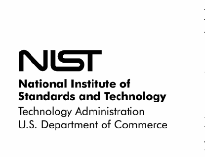
Managers
管理者
未レビュー訳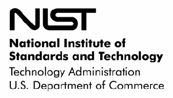
米国国立標準技術研究所（NIST）、技術局、米国商務省を示すロゴ。
Recommendations of the National Institute of Standards and Technology
米国国立標準技術研究所（NIST）の勧告
未レビュー訳Pauline Bowen Joan Hash Mark Wilson
Pauline Bowen、Joan Hash、Mark Wilson
未レビュー訳I N F O R M A T I O N S E C U R I T Y
情報セキュリティ
Computer Security Division Information Technology Laboratory National Institute of Standards and Technology Gaithersburg, MD 20899-8930
コンピュータセキュリティ部門、情報技術研究所、米国国立標準技術研究所、Gaithersburg, MD 20899-8930
未レビュー訳October 2006
2006年10月
未レビュー訳U.S. Department of Commerce Carlos M. Gutierrez, Secretary
米国商務省、Carlos M. Gutierrez長官
未レビュー訳Technology Administration Robert Cresanti, Under Secretary of Commerce for Technology
技術局、Robert Cresanti技術担当商務次官
未レビュー訳National Institute of Standards and Technology William Jeffrey, Director
米国国立標準技術研究所、William Jeffrey所長
未レビュー訳Reports on Information Systems Technology
情報システム技術に関する報告書
未レビュー訳The Information Technology Laboratory (ITL) at the National Institute of Standards and Technology promotes the U.S. economy and public welfare by providing technical leadership for the Nation's measurement and standards infrastructure. ITL develops tests, test methods, reference data, proof-of-concept implementations, and technical analyses to advance the development and productive use of information technology. ITL's responsibilities include the development of management, administrative, technical, and physical standards and guidelines for the cost-effective security and privacy of nonnational-security-related information in federal information systems. This Special Publication 800 series reports on ITL's research, guidelines, and outreach efforts in information system security and its collaborative activities with industry, government, and academic organizations.
米国国立標準技術研究所（NIST）の情報技術研究所（ITL）は、計測と標準の基盤に技術的なリーダーシップを発揮し、米国の経済と公共の福祉を促進している。ITLは、情報技術の発展と生産的な利用を推進するため、試験、試験方法、参照データ、概念実証の実装、および技術分析を開発する。ITLの責務には、連邦情報システムにおける国家安全保障関連以外の情報のセキュリティとプライバシーを費用対効果よく確保するため、管理、運用、技術、物理面の標準およびガイドラインを策定することが含まれる。SP 800シリーズは、ITLの情報システムセキュリティに関する研究、ガイドライン、普及活動ならびに産業界、政府、学術機関との協力活動を報告する。
未レビュー訳Authority
権限
未レビュー訳This document has been developed by the National Institute of Standards and Technology (NIST) in furtherance of its statutory responsibilities under the Federal Information Security Management Act (FISMA) of 2002, Public Law 107-347.
本書は、2002年の連邦情報セキュリティマネジメント法（FISMA）、公法107-347に基づく法的責務を果たすため、米国国立標準技術研究所（NIST）が作成した。
未レビュー訳NIST is responsible for developing standards and guidelines, including minimum requirements, and for providing adequate information security for all agency operations and assets, but such standards and guidelines shall not apply to national security systems. This guideline is consistent with the requirements of the Office of Management and Budget (OMB) Circular A-130, Section 8b(3), Securing Agency Information Systems, as analyzed in A-130, Appendix IV: Analysis of Key Sections. Supplemental information is provided A-130, Appendix III.
最低要件を含む標準およびガイドラインを策定し、各機関のすべての業務と資産について適切な情報セキュリティを確保することはNISTの責務である。ただし、これらの標準およびガイドラインは国家安全保障システムには適用されない。このガイドラインは、OMB Circular A-130の第8b(3)節「Securing Agency Information Systems」に関する要件に整合しており、A-130の付録IV「主要節の分析」で分析されている。補足情報はA-130の付録IIIに記載されている。
未レビュー訳This guideline has been prepared for use by federal agencies. It may also be used by nongovernmental organizations on a voluntary basis and is not subject to copyright regulations. (Attribution would be appreciated by NIST.)
このガイドラインは連邦機関での使用を目的として作成された。政府機関以外の組織も任意で利用でき、著作権規制の対象ではない。（出典を明記していただければ、NISTとして幸いである。）
Nothing in this document should be taken to contradict standards and guidelines made mandatory and binding on federal agencies by the Secretary of Commerce under statutory authority. Nor should these guidelines be interpreted as altering or superseding the existing authorities of the Secretary of Commerce, Director of the OMB, or any other federal official.
本書のいかなる記述も、商務長官が法的権限に基づき連邦機関に対して義務的かつ拘束力のあるものとした標準およびガイドラインに反すると解釈すべきではない。また、本ガイドラインを、商務長官、行政管理予算局（OMB）局長、その他の連邦政府職員の既存の権限を変更または置き換えるものと解釈すべきではない。
未レビュー訳Certain commercial entities, equipment, or materials may be identified in this document in order to describe an experimental procedure or concept adequately. Such identification is not intended to imply recommendation or endorsement by NIST, nor is it intended to imply that the entities, materials, or equipment are necessarily the best available for the purpose.
特定の商業事業者、機器、または素材が、実験手順や概念を適切に説明するために本書で特定される場合がある。そうした記載は、NISTによる推奨または保証を意味するものではなく、また、それらの事業者、機器、または素材が目的に最も適していることを意味するものでもない。
未レビュー訳Acknowledgements NIST would like to thank the many people who assisted with the development of this handbook.
謝辞。本ハンドブックの作成に協力した多くの方々に、NISTより感謝申し上げる。
未レビュー訳NIST management officials who supported this effort include: Joan Hash, William C. Barker, Elizabeth Chew, and Matthew Scholl.
本取り組みを支援したNISTの管理職には、Joan Hash、William C. Barker、Elizabeth Chew、Matthew Schollが含まれる。
The authors would like to thank Elizabeth Lennon, Alicia Clay, Elizabeth Chew, Richard Kissel, Carol Schmidt, Matthew Scholl, and Patricia Toth who assisted with reviewing this Handbook and provided comments and suggestions for improvement.
著者らは、本ハンドブックのレビューに協力し、改善のための意見や提案を寄せたElizabeth Lennon、Alicia Clay、Elizabeth Chew、Richard Kissel、Carol Schmidt、Matthew Scholl、Patricia Tothに感謝する。
Additional drafters of Handbook chapters include:
ハンドブック各章の追加執筆者には、次の方々が含まれる。
Ron Ross, Tim Grance, and Marianne Swanson, NIST.
Ron Ross、Tim Grance、Marianne Swanson（NIST）。
Nadya Bartol, Joe Nusbaum, Laura Prause, Will Robinson, Karen Kent, and Randy Ewell, BAH,
Nadya Bartol、Joe Nusbaum、Laura Prause、Will Robinson、Karen Kent、Randy Ewell（BAH）。
未レビュー訳In addition, special thanks are due those contractors who helped craft the Handbook, prepare drafts, and review materials:
さらに、ハンドブックの執筆、草稿作成、資料レビューを支援した請負業者にも特別の謝意を表する。
Nadya Bartol of Booz, Allen, Hamiliton (BAH), served as Project Manager for BAH on this project. In addition, many BAH employees contributed to the Handbook, including: Anthony Brown, Linda Duncan, Gina Jamaldinian, Sedar Labarre, Ines Murphy, Steven Peck, Mike Kapetanovic, Michael Rohde, Jacob Tsizis, Aderonke Adeniji, and Marge Spanninger.
Booz, Allen, Hamiliton（BAH）のNadya Bartolは、本プロジェクトにおいてBAH側のプロジェクトマネージャーを務めた。また、Anthony Brown、Linda Duncan、Gina Jamaldinian、Sedar Labarre、Ines Murphy、Steven Peck、Mike Kapetanovic、Michael Rohde、Jacob Tsizis、Aderonke Adeniji、Marge Spanningerをはじめ、多数のBAH職員が本ハンドブックに貢献した。
The authors also gratefully acknowledge and appreciate the many contributions from individuals in the public and private sectors whose thoughtful and constructive comments improved the quality and usefulness of this publication.
著者らはまた、本刊行物の質と有用性を高めるため、建設的で示唆に富む意見を寄せた官民双方の多くの方々の貢献に、深く感謝する。
未レビュー訳Errata
正誤表
未レビュー訳The following changes have been incorporated into Special Publication 800-100.
SP 800-100には、以下の変更が反映されている。
1. Chapter 10 Risk Management, Figure 10-1. Risk Management in the System
1. 第10章「リスク管理」の図10-1「システムセキュリティライフサイクルにおけるリスク管理」
未レビュー訳Security Life Cycle diagram has been modified to remove numbers from diagram and to show the steps clearly in the risk management process in the system security life cycle.
システムセキュリティライフサイクルのリスク管理図を修正し、図中の番号を削除するとともに、同ライフサイクルにおけるリスク管理プロセスの各ステップが明確に示されるようにした。
未レビュー訳2. Chapter 10 Risk Management, Table 10-1. Risk Level Matrix has been modified to
2. 第10章「リスク管理」の表10-1「リスクレベルマトリクス」を修正し、図中の計算誤りを
未レビュー訳correct the math in the diagram.
訂正した。
未レビュー訳Table of Contents
目次
1. Introduction — 1
1. はじめに — 1
1.1 Purpose and Applicability — 1
1.1 目的と適用可能性 — 1
1.2 Relationship to Existing Guidance — 1
1.2 既存ガイダンスとの関係 — 1
未レビュー訳1.3 Audience — 1
1.3 対象読者 — 1
2. Information Security Governance — 2
2. 情報セキュリティガバナンス — 2
未レビュー訳2.1 Information Security Governance Requirements — 2
2.1 情報セキュリティガバナンスの要件 — 2
2.2 Information Security Governance Components — 5
2.2 情報セキュリティガバナンスの構成要素 — 5
2.2.1 Information Security Strategic Planning — 6
2.2.1 情報セキュリティ戦略計画 — 6
未レビュー訳2.2.2 Information Security Governance Structures — 7
2.2.2 情報セキュリティガバナンスの体制 — 7
2.2.3 Key Governance Roles and Responsibilities — 8
2.2.3 主なガバナンス上の役割と責任 — 8
2.2.3.1 Agency Head — 9
2.2.3.1 機関長 — 9
未レビュー訳2.2.3.2 Chief Information Officer — 9
2.2.3.2 最高情報責任者 — 9
未レビュー訳2.2.3.3 Senior Agency Information Security Officer — 9
2.2.3.3 上級情報セキュリティ責任者 — 9
未レビュー訳2.2.3.4 Chief Enterprise Architect — 10
2.2.3.4 最高エンタープライズアーキテクト — 10
未レビュー訳2.2.3.5 Related Roles — 11
2.2.3.5 関連する役割 — 11
2.2.4 Federal Enterprise Architecture (FEA) — 12
2.2.4 連邦エンタープライズアーキテクチャ（FEA） — 12
未レビュー訳2.2.5 Information Security Policy and Guidance — 14
2.2.5 情報セキュリティ方針とガイダンス — 14
未レビュー訳2.2.6 Ongoing Monitoring — 14
2.2.6 継続的モニタリング — 14
未レビュー訳2.3 Information Security Governance Challenges and Keys to Success — 17
2.3 情報セキュリティガバナンスの課題と成功の鍵 — 17
未レビュー訳3. System Development Life Cycle — 19
3. システム開発ライフサイクル — 19
3.1 Initiation Phase — 19
3.1 開始段階 — 19
3.2 Development/Acquisition Phase — 20
3.2 開発／調達段階 — 20
3.3 Implementation Phase — 20
3.3 導入段階 — 20
3.4 Operations/Maintenance Phase — 21
3.4 運用／保守段階 — 21
3.5 Disposal Phase — 21
3.5 廃棄段階 — 21
3.6 Security Activities within the SDLC — 22
3.6 SDLCにおけるセキュリティ活動 — 22
未レビュー訳4. Awareness and Training — 26
4. 意識向上と研修 — 26
4.1 Awareness and Training Policy — 27
4.1 意識向上・研修方針 — 27
未レビュー訳4.2 Components: Awareness, Training, Education, and Certification — 28
4.2 構成要素：意識向上、研修、教育、資格認定 — 28
4.2.1 Awareness — 28
4.2.1 意識向上 — 28
未レビュー訳4.2.2 Training — 29
4.2.2 研修 — 29
4.2.3 Education — 29
4.2.3 教育 — 29
4.2.4 Certification — 29
4.2.4 資格認定 — 29
未レビュー訳4.3 Designing, Developing, and Implementing an Awareness and Training Program — 30
4.3 意識向上・研修プログラムの設計、開発、実施 — 30
4.3.1 Designing an Awareness and Training Program — 31
4.3.1 意識向上・研修プログラムの設計 — 31
未レビュー訳4.3.2 Developing an Awareness and Training Program — 31
4.3.2 意識向上・研修プログラムの開発 — 31
未レビュー訳4.3.3 Implementing an Awareness and Training Program — 31
4.3.3 意識向上・研修プログラムの実施 — 31
未レビュー訳4.4 Post-Implementation — 32
4.4 実施後 — 32
未レビュー訳4.4.1 Monitoring Compliance — 32
4.4.1 遵守状況のモニタリング — 32
4.4.2 Evaluation and Feedback — 33
4.4.2 評価とフィードバック — 33
未レビュー訳4.5 Managing Change — 33
4.5 変更管理 — 33
4.6 Program Success Indicators — 33
4.6 プログラムの成功指標 — 33
5. Capital Planning and Investment Control — 35
5. 資本計画および投資管理 — 35
5.1 Legislative Overview — 35
5.1 法制度の概要 — 35
5.2 Integrating Information Security into the CPIC Process — 37
5.2 情報セキュリティのCPICプロセスへの統合 — 37
5.3 Capital Planning and Investment Control Roles and Responsibilities — 38
5.3 資本計画・投資管理における役割と責任 — 38
未レビュー訳5.4 Identify Baseline — 39
5.4 ベースラインの特定 — 39
5.5 Identify Prioritization Criteria — 40
5.5 優先順位付け基準の特定 — 40
5.6 Conduct System- and Enterprise-Level Prioritization — 40
5.6 システムおよび組織全体のレベルで優先順位を付ける — 40
5.7 Develop Supporting Materials — 44
5.7 補足資料の作成 — 44
5.8 IRB and Portfolio Management — 44
5.8 IRBとポートフォリオ管理 — 44
5.9 Exhibits 53 and 300 and Program Management — 44
5.9 様式53および300とプログラム管理 — 44
未レビュー訳6. Interconnecting Systems — 46
6. システムの相互接続 — 46
6.1 Managing System Interconnections — 47
6.1 システム相互接続の管理 — 47
6.2 Life-Cycle Management Approach — 48
6.2 ライフサイクル管理アプローチ — 48
6.2.1 Phase 1: Planning the Interconnection — 48
6.2.1 第1段階：相互接続の計画 — 48
6.2.2 Phase 2: Establishing the Interconnection — 50
6.2.2 第2段階：相互接続の確立 — 50
6.2.3 Phase 3: Maintaining the Interconnection — 51
6.2.3 第3段階：相互接続の維持 — 51
6.2.4 Phase 4: Disconnecting the Interconnection — 52
6.2.4 第4段階：相互接続の切断 — 52
6.3 Terminating Interconnection — 52
6.3 相互接続の終了 — 52
未レビュー訳6.3.1 Emergency Disconnection — 52
6.3.1 緊急切断 — 52
未レビュー訳6.3.2 Restoration of Interconnection — 52
6.3.2 相互接続の復旧 — 52
未レビュー訳7. Performance Measures — 59
7. パフォーマンス指標 — 59
未レビュー訳7.1 Metric Types — 60
7.1 指標の種類 — 60
7.2 Metrics Development and Implementation Approach — 61
7.2 指標の策定・実施アプローチ — 61
7.3 Metrics Development Process — 61
7.3 指標の策定プロセス — 61
7.4 Metrics Program Implementation — 63
7.4 指標プログラムの実施 — 63
未レビュー訳7.4.1 Prepare for Data Collection — 63
7.4.1 データ収集の準備 — 63
7.4.2 Collect Data and Analyze Results — 64
7.4.2 データの収集と結果の分析 — 64
7.4.3 Identify Corrective Actions — 65
7.4.3 是正措置の特定 — 65
未レビュー訳7.4.4 Develop Business Case and Obtain Resources — 65
7.4.4 ビジネスケースの作成とリソースの確保 — 65
7.4.5 Apply Corrective Actions — 66
7.4.5 是正措置の適用 — 66
未レビュー訳8. Security Planning — 67
8. セキュリティ計画 — 67
未レビュー訳8.1 Major Applications, General Support Systems, and Minor Applications — 67
8.1 主要アプリケーション、汎用サポートシステム、およびマイナーアプリケーション — 67
8.2 Security Planning Roles and Responsibilities — 68
8.2 セキュリティ計画における役割と責任 — 68
8.2.1 Chief Information Officer — 68
8.2.1 最高情報責任者 — 68
8.2.2 Information System Owner — 69
8.2.2 情報システム所有者 — 69
8.2.3 Information Owner — 69
8.2.3 情報オーナー — 69
未レビュー訳8.2.4 Senior Agency Information Security Officer — 70
8.2.4 上級機関情報セキュリティ責任者 — 70
8.2.5 Information System Security Officer — 70
8.2.5 情報システムセキュリティ責任者 — 70
8.3 Rules of Behavior — 70
8.3 行動規範 — 70
未レビュー訳8.4 System Security Plan Approval — 71
8.4 システムセキュリティ計画の承認 — 71
未レビュー訳8.4.1 System Boundary Analysis and Security Controls — 71
8.4.1 システム境界の分析とセキュリティ管理策 — 71
8.4.2 Security Controls — 72
8.4.2 セキュリティ管理策 — 72
未レビュー訳8.4.3 Scoping Guidance — 72
8.4.3 適用範囲の決定に関する指針 — 72
未レビュー訳8.4.4 Compensating Controls — 73
8.4.4 代替管理策 — 73
未レビュー訳8.4.5 Common Security Controls — 73
8.4.5 共通セキュリティ管理策 — 73
未レビュー訳8.5 Security Control Selection — 74
8.5 セキュリティ管理策の選択 — 74
未レビュー訳8.6 Completion and Approval Dates — 75
8.6 完了日と承認日 — 75
8.7 Ongoing System Security Plan Maintenance — 75
8.7 システムセキュリティ計画の継続的な保守 — 75
未レビュー訳9. Information Technology Contingency Planning — 78
9. 情報技術コンティンジェンシー計画 — 78
未レビュー訳9.1 Step 1: Develop Contingency Planning Policy Statement — 79
9.1 ステップ1：コンティンジェンシー計画方針書の策定 — 79
9.2 Step 2: Conduct Business Impact Analysis — 79
9.2 ステップ2：ビジネスインパクト分析の実施 — 79
9.3 Step 3: Identify Preventive Controls — 80
9.3 ステップ3：予防的管理策の特定 — 80
未レビュー訳9.4 Step 4: Develop Recovery Strategies — 80
9.4 ステップ4：復旧戦略の策定 — 80
9.5 Step 5: Develop IT Contingency Plan — 81
9.5 ステップ5：ITコンティンジェンシー計画の策定 — 81
9.6 Step 6: Plan Testing, Training, and Exercises — 82
9.6 ステップ6：計画のテスト、訓練、演習 — 82
9.7 Step 7: Plan Maintenance — 82
9.7 ステップ7：計画の保守 — 82
10. Risk Management — 84
10. リスク管理 — 84
10.1 Risk Assessment — 85
10.1 リスクアセスメント — 85
10.1.1 Step 1 – System Characterization — 86
10.1.1 ステップ1：システムの特性把握 — 86
10.1.2 Step 2 – Threat Identification — 87
10.1.2 ステップ2：脅威の特定 — 87
10.1.3 Step 3 – Vulnerability Identification — 88
10.1.3 ステップ3：脆弱性の特定 — 88
未レビュー訳10.1.4 Step 4 – Risk Analysis — 88
10.1.4 ステップ4：リスク分析 — 88
未レビュー訳10.1.4.1 Control Analysis — 88
10.1.4.1 管理策の分析 — 88
10.1.4.2 Likelihood Determination — 89
10.1.4.2 発生可能性の判定 — 89
10.1.4.3 Impact Analysis — 89
10.1.4.3 影響の分析 — 89
10.1.4.4 Risk Determination — 89
10.1.4.4 リスクの判定 — 89
10.1.5 Step 5 – Control Recommendations — 90
10.1.5 ステップ5：管理策の推奨 — 90
10.1.6 Step 6 – Results Documentation — 91
10.1.6 ステップ6：結果の文書化 — 91
10.2 Risk Mitigation — 92
10.2 リスクの軽減 — 92
未レビュー訳10.3 Evaluation and Assessment — 93
10.3 評価およびアセスメント — 93
11. Certification, Accreditation, and Security Assessments — 96
11. 認証、認定、およびセキュリティ評価 — 96
未レビュー訳11.1 Certification, Accreditation, and Security Assessments Roles and Responsibilities .97
11.1 認証、認定、およびセキュリティ評価における役割と責任 — 97
未レビュー訳11.1.1 Chief Information Officer — 97
11.1.1 最高情報責任者 — 97
未レビュー訳11.1.2 Authorizing Official — 98
11.1.2 認可担当者 — 98
未レビュー訳11.1.3 Senior Agency Information Security Officer — 98
11.1.3 上級機関情報セキュリティ責任者 — 98
11.1.4 Information System Owner — 98
11.1.4 情報システム所有者 — 98
未レビュー訳11.1.5 Information Owner — 99
11.1.5 情報オーナー — 99
未レビュー訳11.1.6 Information System Security Officer — 99
11.1.6 情報システムセキュリティ責任者 — 99
11.1.7 Certification Agent — 100
11.1.7 認証担当者 — 100
未レビュー訳11.1.8 User Representatives — 100
11.1.8 利用者代表 — 100
11.2 Delegation of Roles — 100
11.2 役割の委任 — 100
未レビュー訳11.3 The Security Certification and Accreditation Process — 100
11.3 セキュリティ認証・認定プロセス — 100
11.4 Security Certification Documentation — 101
11.4 セキュリティ認証に関する文書 — 101
11.5 Accreditation Decisions — 102
11.5 認定の決定 — 102
11.6 Continuous Monitoring — 103
11.6 継続的モニタリング — 103
11.7 Program Assessments — 103
11.7 プログラム評価 — 103
未レビュー訳12. Security Services and Products Acquisition — 113
12. セキュリティサービスおよび製品の調達 — 113
未レビュー訳12.1 Information Security Services Life Cycle — 114
12.1 情報セキュリティサービスのライフサイクル — 114
12.2 Selecting Information Security Services — 115
12.2 情報セキュリティサービスの選択 — 115
12.2.1 Selecting Information Security Services Management Tools — 116
12.2.1 情報セキュリティサービス管理ツールの選択 — 116
12.2.2 Information Security Services Issues — 116
12.2.2 情報セキュリティサービスに関する課題 — 116
未レビュー訳12.2.3 General Considerations for Information Security Services — 117
12.2.3 情報セキュリティサービスに関する一般的な考慮事項 — 117
12.3 Selecting Information Security Products — 119
12.3 情報セキュリティ製品の選択 — 119
未レビュー訳12.4 Security Checklists for IT Products — 122
12.4 IT製品向けセキュリティチェックリスト — 122
未レビュー訳12.5 Organizational Conflict of Interest — 122
12.5 組織における利益相反 — 122
未レビュー訳13. Incident Response — 124
13. インシデント対応 — 124
未レビュー訳13.1 Preparation — 125
13.1 準備 — 125
13.1.1 Preparing for Incident Response — 125
13.1.1 インシデント対応の準備 — 125
13.1.2 Preparing to Collect Incident Data — 127
13.1.2 インシデントデータ収集の準備 — 127
13.1.3 Preventing Incidents — 127
13.1.3 インシデントの防止 — 127
未レビュー訳13.2 Detection and Analysis — 128
13.2 検知と分析 — 128
13.3 Containment, Eradication, and Recovery — 128
13.3 封じ込め、根絶、および復旧 — 128
13.4 Post-Incident Activity — 129
13.4 インシデント後の活動 — 129
14. Configuration Management ......................................................................... 131
14. 構成管理 — 131
未レビュー訳14.1 Configuration Management in the System Development Life Cycle .......................132 14.2 Configuration Management Roles and Responsibilities..........................................134 14.3 Configuration Management Process.......................................................................135
14.1 システム開発ライフサイクルにおける構成管理 — 132 14.2 構成管理における役割と責任 — 134 14.3 構成管理プロセス — 135
未レビュー訳Appendix A – Acronyms List................................................................................A-1
付録A — 略語一覧 — A-1
未レビュー訳Appendix B – Frequently Asked Questions .......................................................... B-1
付録B — よくある質問 — B-1
未レビュー訳CHAPTER 1
第1章
未レビュー訳Introduction
はじめに
未レビュー訳Chapter 1
第1章
未レビュー訳1. Introduction
1. はじめに
未レビュー訳This Information Security Handbook provides a broad overview of information security program elements to assist managers in understanding how to establish and implement an information security program. Typically, the organization looks to the program for overall responsibility to ensure the selection and implementation of appropriate security controls and to demonstrate the effectiveness of satisfying their stated security requirements. The topics within this document were selected based on the laws and regulations relevant to information security, including the Clinger-Cohen Act of 1996, the Federal Information Security Management Act (FISMA) of 2002, and Office of Management and Budget (OMB) Circular A-130. The material in this handbook can be referenced for general information on a particular topic or can be used in the decision-making process for developing an information security program. National Institute of Standards and Technology (NISTIR) Interagency Report 7298 provides a summary glossary for the basic security terms used throughout this document. While reading this handbook, please consider that the guidance is not specific to a particular agency. Agencies should tailor this guidance according to their security posture and business requirements.
本情報セキュリティハンドブックは、管理者が情報セキュリティプログラムの確立と実施方法を理解できるよう、その構成要素を幅広く概説する。通常、組織は、適切なセキュリティ管理策の選定と実施を確実に行い、定めたセキュリティ要件を満たす有効性を実証する全体的な責任を、このプログラムに担わせる。本書のトピックは、1996年のクリンガー・コーエン法、2002年の連邦情報セキュリティマネジメント法（FISMA）、行政管理予算局（OMB）Circular A-130など、情報セキュリティに関連する法律や規則に基づいて選定された。本ハンドブックは、個別のトピックに関する一般情報を得るための参考資料として、または情報セキュリティプログラムの策定における意思決定に利用できる。NIST相互機関報告書（NISTIR）7298は、本書で使われる基本的なセキュリティ用語の概要用語集を提供する。本書のガイダンスは特定の機関に限ったものではない点に留意されたい。各機関は、自らのセキュリティ状況と業務上の要件に合わせて調整すべきである。
未レビュー訳1.1 Purpose and Applicability
1.1 目的と適用可能性
The purpose of this publication is to inform members of the information security management team (agency heads; chief information officers [CIOs]; senior agency information security officers [SAISOs], also commonly referred to as Chief Information Security Officers [CISOs]; and security managers) about various aspects of information security that they will be expected to implement and oversee in their respective organizations. In addition, the handbook provides guidance for facilitating a more consistent approach to information security programs across the federal government. Even though the terminology in this document is geared toward the federal sector, the handbook can also be used to provide guidance on a variety of other governmental, organizational, or institutional security requirements.
本刊行物の目的は、情報セキュリティ管理チーム（機関長、最高情報責任者［CIO］、上級機関情報セキュリティ責任者［SAISO。最高情報セキュリティ責任者［CISO］とも呼ばれる］、およびセキュリティ管理者）に対し、各組織で実施・監督することが求められる情報セキュリティの諸側面を知らせることである。また、本ハンドブックは、連邦政府全体で情報セキュリティプログラムに一貫したアプローチを取りやすくするための指針を示す。本書の用語は連邦部門を想定しているが、その他の政府機関、組織、または機関におけるさまざまなセキュリティ要件の指針としても利用できる。
未レビュー訳1.2 Relationship to Existing Guidance
1.2 既存ガイダンスとの関係
未レビュー訳This handbook summarizes and augments a number of existing NIST standards and guidance documents and provides additional information on related topics. Such documents are referenced within appropriate subchapters.
本ハンドブックは、既存のNIST標準およびガイダンス文書を要約・補足し、関連トピックに関する追加情報を提供する。これらの文書は、該当する小節で参照している。
未レビュー訳1.3 Audience
1.3 対象読者
The intended audience includes agency heads, CIOs, SAISOs (also commonly referred to as CISOs), and security managers. The handbook provides information that the audience can use in building their information security program strategy. While there are differences between federal and private sector environments, especially in terms of priorities and legal requirements, the underlying principles of information security are the same. The handbook is therefore useful to any manager who requires a broad overview of information security practices.
対象読者は、機関長、CIO、SAISO（CISOとも呼ばれる）、およびセキュリティ管理者である。本ハンドブックは、読者が情報セキュリティプログラムの戦略を構築する際に利用できる情報を提供する。優先順位や法的要件など、連邦部門と民間部門の環境には違いがあるが、情報セキュリティの基本原則は共通している。したがって、本ハンドブックは、情報セキュリティの実務を幅広く把握する必要のある管理者に役立つ。
未レビュー訳Chapter 2
第2章
未レビュー訳2. Information Security Governance
2. 情報セキュリティガバナンス
未レビュー訳Federal agencies rely heavily on information technology (IT) to run their daily operations and deliver products and services. With an increasing reliability on IT, a growing complexity of federal government IT infrastructure, and a constantly changing information security threat and risk environment, information security has become a mission-essential function. This function must be managed and governed to reduce the risks to federal government operations and to ensure the federal government’s ability to do business and serve the American public.
連邦機関は、日常業務の運営や製品・サービスの提供に情報技術（IT）を大きく依存している。ITへの依存が高まり、連邦政府のIT基盤が複雑化し、情報セキュリティ上の脅威とリスクの状況が絶えず変化するなか、情報セキュリティはミッション遂行に不可欠な機能となっている。この機能は、連邦政府の業務に対するリスクを低減し、連邦政府が業務を行い米国民に奉仕する能力を確保するため、管理し統治しなければならない。
未レビュー訳The purpose of information security governance is to ensure that agencies are proactively implementing appropriate information security controls to support their mission in a cost-effective manner, while managing evolving information security risks. As such, information security governance has its own set of requirements, challenges, activities, and types of possible structures. Information security governance also has a defining role in identifying key information security roles and responsibilities, and it influences information security policy development and oversight and ongoing monitoring activities.
情報セキュリティガバナンスの目的は、組織の使命を費用対効果よく支える適切な情報セキュリティ管理策を各機関が先回りして実施しつつ、変化する情報セキュリティリスクを管理することである。このため、情報セキュリティガバナンスには、独自の要件、課題、活動、および考えられる体制がある。また、情報セキュリティに関する主要な役割と責任を特定するうえで中心的な役割を担い、情報セキュリティ方針の策定と監督、および継続的モニタリングにも影響する。
未レビュー訳To ensure an appropriate level of support of agency missions and the proper implementation of current and future information security requirements, each agency should establish a formal information security governance structure.
機関の使命を適切に支援し、現行および将来の情報セキュリティ要件を確実に実施するため、各機関は正式な情報セキュリティガバナンス体制を確立すべきである。
未レビュー訳Information security governance can be defined as the process of establishing and maintaining a framework and supporting management structure and processes to provide assurance that information security strategies are aligned with and support business objectives, are consistent with applicable laws and regulations through adherence to policies and internal controls, and provide assignment of responsibility, all in an effort to manage risk.
情報セキュリティガバナンスとは、情報セキュリティ戦略が事業目標と整合してそれを支援すること、方針および内部統制の遵守を通じて適用される法律・規則と一貫していること、ならびに責任の割当てを定めることを保証するための枠組みと、それを支える管理体制およびプロセスを確立し維持するプロセスであり、これらはすべてリスクを管理するための取組みである、と定義できる。
2.1 Information Security Governance Requirements
2.1 情報セキュリティガバナンスの要件
The United States (U.S.) Congress and the Office of Management and Budget (OMB) have instituted a number of laws, regulations, and directives that govern establishment and implementation of federal information security practices. These laws, regulations, and directives establish federal- and agency-level responsibilities for information security, define key information security roles and responsibilities, identify minimum information security controls, specify compliance reporting rules and procedures, and provide other essential requirements and guidance. These laws and regulations place responsibility and accountability for information security at all levels within federal agencies, from the agency head to IT users. They also provide an infrastructure for developing and promulgating detailed standards and implementation guidance to federal agencies and overseeing implementation of required practices through NIST and the Government Accountability Office (GAO), respectively.
米国議会および行政管理予算局（OMB）は、連邦政府の情報セキュリティ実務の確立と実施を統制する複数の法律、規則、指令を制定してきた。これらは、連邦政府および各機関の情報セキュリティに関する責任を定め、主要な役割と責任を明確にし、最低限の情報セキュリティ管理策を特定し、遵守状況の報告に関する規則と手順を指定するほか、不可欠な要件と指針を示す。これらの法律や規則は、機関長からIT利用者まで、連邦機関内のあらゆる階層に情報セキュリティの責任と説明責任を課す。また、NISTと政府監査院（GAO）を通じて、それぞれ詳細な標準と実施指針の策定・公布、および必要な実務の実施監督を行うための基盤を提供する。
未レビュー訳These three entities, the U.S. Congress, OMB, and GAO, define and influence federal agency governance and information security requirements. Congress creates laws and oversight measures to establish objectives, present timely analyses to establish overall governance standards across the federal government, and provide aid in economic and budget decisions, including decisions about public IT assets and those funds needed to secure them. Agencies must establish clear reporting requirements that meet legislative requirements set by Congress and must also provide Congress with the necessary information and estimates required for the congressional budget process. OMB assists the President in overseeing the preparation of the federal budget and supervises its administration by the executive branch agencies. OMB provides further guidance to the agencies on implementing legislative information requirements in the form of circulars and memoranda. GAO also provides oversight of agency information security activities as a part of its mission “to support the Congress in meeting its constitutional responsibilities and to help improve the performance and ensure the accountability of the federal government for the benefit of the American people.”1 GAO reviews agency implementation of legislative and regulatory requirements and reports to Congress and the American public on its findings.
米国議会、OMB、GAOの3者は、連邦機関のガバナンスおよび情報セキュリティ要件を定義し、それに影響を与える。議会は、目標を定め、連邦政府全体のガバナンス標準を策定するための適時の分析を示し、公共IT資産とその保護に必要な資金を含む経済・予算上の意思決定を支援する法律や監督措置を制定する。各機関は、議会が定めた立法上の要件を満たす明確な報告要件を設け、議会の予算編成に必要な情報と見積りを議会に提供しなければならない。OMBは、大統領による連邦予算の策定監督を支援し、行政府の各機関による予算執行を監督する。また、通達や覚書を通じて、立法に基づく情報要件の実施に関する追加指針を各機関に示す。GAOも、「議会が憲法上の責任を果たすことを支援し、米国民の利益のために連邦政府の業績向上と説明責任の確保を助ける」という使命の一環として、各機関の情報セキュリティ活動を監督する。GAOは、各機関による法律・規則上の要件の実施状況を審査し、その結果を議会と米国民に報告する。1
未レビュー訳At a minimum, information security governance in a federal department or agency must meet the requirements as they are detailed in applicable legislation, regulations, and directives. Furthermore, agencies can benefit from identifying overall good governance practices for establishing strong management and oversight. Agencies should tailor their information security governance practices to their organization’s own missions, operations, and needs.
連邦省庁または機関の情報セキュリティガバナンスは、最低限、適用される法律、規則、指令に詳述された要件を満たさなければならない。さらに、強固な管理と監督を確立するための全般的な優良ガバナンス慣行を特定することは、各機関にとって有益である。各機関は、自らの使命、業務、ニーズに合わせて情報セキュリティガバナンスの実務を調整すべきである。
未レビュー訳The following are a few key legislative acts that define overall federal agency governance requirements:
全般的な連邦機関ガバナンスの要件を定める主要な法律を以下に示す。
未レビュー訳•The Government Performance and Results Act (GPRA) of 1993 establishes the foundation for budget decision making to achieve strategic goals in order to meet agency mission objectives.
•1993年の政府業績成果法（GPRA）は、機関の使命上の目標を満たすために戦略目標を達成するための、予算上の意思決定の基盤を確立する。
•The Paperwork Reduction Act (PRA) of 1995 requires agencies to perform their information resource management activities in an efficient, effective, and economical manner.
•1995年の文書業務削減法（PRA）は、各機関に対し、情報資源管理を効率的、効果的、かつ経済的に実施することを求める。
未レビュー訳•The Federal Financial Management Improvement Act (FFMIA) of 1996 requires accountability of financial and program managers for financial results of actions taken, control over the federal government's financial resources, and protection of federal assets.
•1996年の連邦財務管理改善法（FFMIA）は、実施した措置の財務上の結果について財務・プログラム管理者に説明責任を課し、連邦政府の財務資源を統制し、連邦資産を保護することを求める。
•The Federal Managers Financial Integrity Act (FMFIA) of 1982 requires ongoing evaluations and reports from each executive on the adequacy of administrative control for internal accounting systems.
•1982年の連邦管理者財務健全性法（FMFIA）は、内部会計システムに対する管理統制の妥当性について、各行政機関の長が継続的な評価と報告を行うことを求める。
•The Clinger-Cohen Act of 1996 requires agencies to use a disciplined capital planning and investment control (CPIC) process to acquire, use, maintain, and dispose of IT resources, and establishes a role of chief information officer (CIO) within each federal agency.
•1996年のクリンガー・コーエン法は、IT資源の取得、利用、保守、廃棄にあたり、厳格な資本計画・投資管理（CPIC）プロセスを各機関が用いることを求める。また、各連邦機関に最高情報責任者（CIO）を置くことを定める。
•The E-Government Act of 2002 (Public Law 107-347) promotes better use of the Internet and other IT resources to improve government services for citizens and internal government operations, and provide opportunities for citizen participation in government. The Act also requires agencies to:
•2002年の電子政府法（公法107-347）は、インターネットその他のIT資源をより有効に活用し、国民向けの政府サービスと政府内部の業務を改善するとともに、国民が政府に参加する機会を提供する。同法は各機関に次の事項も求める。
未レビュー訳– Comply with FISMA, included as Title III of the E-Government Act; – Support governmentwide e-government initiatives; – Leverage cross-agency opportunities to further e-government through the Federal Enterprise Architecture (FEA) initiative; and
– 電子政府法第III編に含まれるFISMAを遵守する。 – 政府全体の電子政府施策を支援する。 – 連邦エンタープライズアーキテクチャ（FEA）施策を通じて、機関横断の機会を活用し、電子政府を推進する。
未レビュー訳– Conduct and submit to OMB privacy impact assessments for all new IT investments administering information in identifiable form collected from or about members of the public.
– 公衆の構成員から、または公衆について収集した個人識別可能な形式の情報を取り扱う新規IT投資すべてについて、プライバシー影響評価を実施し、OMBに提出する。
未レビュー訳Supporting these acts, three legislative documents emerge as the foundational sources for specific information security governance requirements:
これらの法律を補完し、情報セキュリティガバナンス要件の基礎となる3つの立法文書がある。
未レビュー訳•The Federal Information Security Management (FISMA) Act is the primary legislation governing federal information security programs, building upon earlier legislation through added emphasis on the management dimension of information security.
•連邦情報セキュリティマネジメント法（FISMA）は、連邦政府の情報セキュリティプログラムを統制する主要な法律であり、情報セキュリティの管理面を重視する形で従前の法律を発展させている。
– FISMA delegates to the National Institute of Standards and Technology (NIST) the responsibility to develop detailed information security standards and guidance for federal information systems, with the exception of national security systems.
– FISMAは、国家安全保障システムを除く連邦情報システムについて、詳細な情報セキュリティ標準と指針を策定する責任を米国国立標準技術研究所（NIST）に委任している。
未レビュー訳– FISMA designates to OMB the oversight of federal agencies’ information security implementation.
– FISMAは、連邦機関の情報セキュリティ実施状況の監督をOMBに委ねている。
未レビュー訳– FISMA provides a comprehensive framework for securing federal government IT resources, including defining key federal government and agency roles and responsibilities, requiring agencies to integrate information security into their capital planning and enterprise architecture processes, requiring agencies to conduct annual information security reviews of all programs and systems, and reporting the results of those reviews to OMB.2
– FISMAは、連邦政府のIT資源を保護するための包括的な枠組みを定める。この枠組みでは、連邦政府および各機関の主要な役割と責任を定義し、資本計画やエンタープライズアーキテクチャのプロセスに情報セキュリティを組み込むよう各機関に求め、すべてのプログラムとシステムについて毎年情報セキュリティ審査を行い、その結果をOMBに報告することを求める。2
未レビュー訳•OMB Circular A-130, Management of Federal Information Resources, Appendix III, Security of Federal Automated Information Resources, establishes a minimum set of controls to be included in federal automated information security programs, assigns federal agency responsibilities for the security of automated information, and links agency automated information security programs and agency management control systems.3
•OMB Circular A-130「連邦情報資源の管理」の付録III「連邦自動化情報資源のセキュリティ」は、連邦政府の自動化情報セキュリティプログラムに含める最低限の管理策を定め、自動化情報のセキュリティに関する各連邦機関の責任を割り当て、機関の自動化情報セキュリティプログラムと機関の管理統制システムを関連付ける。3
未レビュー訳•Homeland Security Presidential Directive 12 (HSPD-12), released in August 2004, specifies a "policy for a common identification standard for all Federal employees and contractors."4 HSPD-12 intends to increase identification security and interoperability by standardizing the process to issue a Federal employee or contractor an identification credential, and also by specifying the electronic and physical properties of the credential itself. The HSPD-12 credential is known as the Personal Identity Verification card.
•2004年8月に発令された国土安全保障大統領指令12（HSPD-12）は、「すべての連邦職員および請負業者に共通の識別標準を設ける方針」を定める。HSPD-12は、連邦職員または請負業者に識別用資格情報を発行するプロセスを標準化し、資格情報の電子的・物理的特性を定めることで、識別の安全性と相互運用性を高めることを目的とする。HSPD-12に基づく資格情報は、個人識別検証（PIV）カードとして知られている。
未レビュー訳Figure 2-1 illustrates key roles of legislative, regulatory, and oversight bodies in establishing governance and information security governance requirements for the federal enterprise.
図2-1は、連邦政府全体のガバナンスおよび情報セキュリティガバナンス要件の確立において、立法機関、規制機関、監督機関が担う主要な役割を示す。
未レビュー訳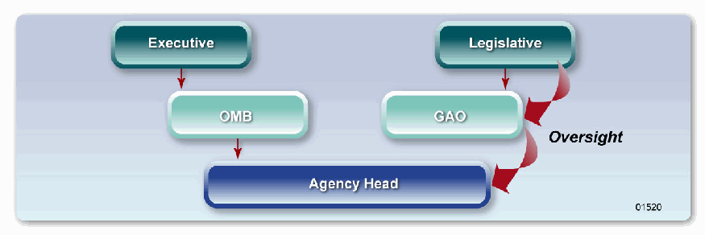
行政部門から行政管理予算局（OMB）を経て機関長へ至る関係と、立法府および政府説明責任局（GAO）による監督を示す図。
Figure 2-1. Key Legislative, Regulatory, and Oversight Roles
図2-1 立法機関、規制機関、監督機関の主要な役割
未レビュー訳The need to identify and implement appropriate federal government and agency-specific information security governance practices can be daunting. Agencies should identify applicable requirements based on relevant legislation, regulations, federal directives, and agency-level directives. Agencies should also ensure that information security governance structures are implemented in a manner that best supports their unique missions and operations.
連邦政府および各機関に適した情報セキュリティガバナンスの実務を特定し実施するのは容易ではない。各機関は、関連する法律、規則、連邦指令、および機関レベルの指令に基づいて、適用される要件を特定すべきである。また、独自の使命と業務を最もよく支える形で情報セキュリティガバナンス体制を実施する必要がある。
未レビュー訳2.2 Information Security Governance Components
2.2 情報セキュリティガバナンスの構成要素
Agencies should integrate their information security governance activities with the overall agency structure and activities by ensuring appropriate participation of agency officials in overseeing implementation of information security controls throughout the agency. The key activities that facilitate such integration are strategic planning, organizational design and development, establishment of roles and responsibilities, integration with the enterprise architecture, and documentation of security objectives in policies and guidance. Figure 2-2 illustrates the relative relationship of these various components.
各機関は、情報セキュリティ管理策の実施を機関全体で監督する際、機関職員が適切に参加するようにし、情報セキュリティガバナンス活動を機関全体の体制および活動に統合すべきである。その統合を促進する主要な活動は、戦略計画、組織設計と開発、役割と責任の確立、エンタープライズアーキテクチャとの統合、ならびに方針とガイダンスへのセキュリティ目標の記録である。図2-2は、これらの各構成要素の相互関係を示す。
未レビュー訳External Oversight
外部監督
未レビュー訳Executive & Legislative (Orders and Laws)
行政府・立法府（大統領令および法律）
未レビュー訳OMB & GAO (Circulars and Directives)
OMB・GAO（通達および指令）
未レビュー訳Goverance
ガバナンス
未レビュー訳Strategic Planning
戦略計画
未レビュー訳Roles and
役割と
未レビュー訳Enterprise Architecture
エンタープライズアーキテクチャ
未レビュー訳Organizational Structure
組織構造
未レビュー訳Responsibilities
責任
未レビュー訳Policies & Guidance
方針とガイダンス
未レビュー訳On-going Monitoring
継続的モニタリング
未レビュー訳Implementation
実施
未レビュー訳Figure 2-2. Information Security Governance Components
図2-2 情報セキュリティガバナンスの構成要素
未レビュー訳2.2.1 Information Security Strategic Planning
2.2.1 情報セキュリティ戦略計画
“Strategic plans, annual performance plans, and annual program performance reports are the main elements of GPRA. Together these elements create a recurring cycle of reporting, planning, and execution.”5
「戦略計画、年次業績計画、および年次プログラム業績報告書は、GPRAの主要な要素である。これらを合わせることで、報告、計画、実行が繰り返されるサイクルが生まれる。」5
未レビュー訳GPRA requires federal agencies to develop and submit to OMB and Congress a “strategic plan for program activities” and “prepare an annual performance plan covering each program activity set forth in the budget of such agency.“6 Agencies are required to refresh their strategic plans within three years of submitting their previous strategic plans, while submitting performance plans is required annually.
GPRAは、連邦機関に対し、OMBおよび議会に「プログラム活動に関する戦略計画」を策定・提出し、各機関の予算に盛り込まれた各プログラム活動について「年次業績計画を作成する」ことを求める。6 各機関は、前回の戦略計画を提出してから3年以内に計画を更新しなければならず、業績計画は毎年提出する必要がある。
未レビュー訳Agencies should integrate information security into the agency strategic planning processes by establishing and documenting information security strategies that directly support agency strategic and performance planning activities. The organization’s information security strategy should establish a comprehensive framework to enable the development, institutionalization, assessment, and improvement of the agency’s information security program. The information security strategy should support the overall agency strategic and performance plans and IT strategic plan (if applicable) with its content clearly traceable to these higher-level sources. Each agency should define the following for its information security program:
各機関は、機関の戦略計画および業績計画の活動を直接支援する情報セキュリティ戦略を確立し文書化することで、情報セキュリティを機関の戦略計画プロセスに組み込むべきである。組織の情報セキュリティ戦略には、機関の情報セキュリティプログラムの策定、制度化、評価、改善を可能にする包括的な枠組みを定めるべきである。この戦略は、機関全体の戦略計画、業績計画、および該当する場合はIT戦略計画を支援し、その内容が上位計画に明確にたどれるようにするべきである。各機関は、情報セキュリティプログラムについて次の事項を定めるべきである。
未レビュー訳•Clear and comprehensive mission, vision, goals, and objectives and how they relate to agency mission;
•機関の使命との関係を含む、明確で包括的な使命、ビジョン、目標、および目的。
•High-level plan for achieving information security goals and objectives, including short- and mid-term objectives and performance targets, specific for each goal and objective, to be used throughout the life of this plan to manage progress toward successfully fulfilling the identified objectives; and
•情報セキュリティの目標と目的を達成するための上位計画。短期・中期の目的と、目標および各目的に固有の業績目標値を含め、この計画の全期間を通じて進捗を管理し、特定した目的を確実に達成するために用いる。
未レビュー訳•Performance measures to continuously monitor accomplishment of identified goals and objectives and their progress toward stated targets.
•特定した目標と目的の達成状況、および設定した目標値に向けた進捗を継続的に監視するための業績指標。
Agencies should document their information security strategy in an information security strategic plan or another document, if appropriate. Regardless of how the information security strategy is documented, its contents should be aligned with the overall agency strategic planning activities. The document should be revisited when a major change in the agency information security environment occurs, including:
各機関は、適切であれば情報セキュリティ戦略を情報セキュリティ戦略計画または別の文書に記録すべきである。記録方法にかかわらず、その内容は機関全体の戦略計画活動と整合させるべきである。機関の情報セキュリティ環境に大きな変化が生じた場合には、文書を見直すべきである。具体例は次のとおり。
未レビュー訳•Change in applicable legislation, regulations, or directives;
•適用される法律、規則、または指令の変更。
•Change in agency mission priorities; and
•機関の使命上の優先事項の変更。
•Emerging information security issues, such as changes in threat and vulnerability environment or the introduction of new technologies.
•脅威や脆弱性の状況の変化、新技術の導入など、新たに生じた情報セキュリティ上の課題。
2.2.2 Information Security Governance Structures
2.2.2 情報セキュリティガバナンスの体制
Information security governance structures can be characterized in a number of ways. There are two basic models of information security governance structures: centralized and decentralized. While agency heads are ultimately responsible for managing and governing their respective agency, the authority and responsibility over information security differs in the two types of structures. Key characteristics of the two structures are:
情報セキュリティガバナンス体制はいくつかの方法で分類できる。基本モデルは中央集権型と分散型の2つである。機関長は最終的に各機関の管理と統治に責任を負うが、情報セキュリティに関する権限と責任は、体制の種類によって異なる。主な特徴を以下に示す。
未レビュー訳•Centralized. Departmental CIO or, in some instances, the SAISO has line-item budget control over all information security activities throughout the department. All information security practitioners within the department report to the departmental SAISO, who is responsible for ensuring implementation and monitoring of information security controls throughout the entire department.
•集中型。省庁のCIO、または場合によってはSAISOが、省庁全体のすべての情報セキュリティ活動について予算項目単位の予算統制権を持つ。省庁内の情報セキュリティ担当者は全員、省庁のSAISOに報告する。省庁のSAISOは、省庁全体にわたる情報セキュリティ管理策の実施とモニタリングを確実に行う責任を負う。
•Decentralized. Departmental SAISOs have policy development and oversight responsibilities. Departmental SAISOs have budget responsibilities over the departmental information security program, but not over the operating units’ information security programs. Operating unit SAISOs report to the unit head, not to the departmental SAISO. Operating unit SAISOs are responsible for implementing and monitoring information security practices within their respective operating units.
•分散型。省庁SAISOは方針策定と監督を担う。省庁SAISOは省庁の情報セキュリティプログラムの予算に責任を持つが、各運用部門の情報セキュリティプログラムの予算は所管しない。運用部門のSAISOは省庁SAISOではなく、部門長に報告する。各運用部門のSAISOは、自部門内で情報セキュリティ実務を実施しモニタリングする責任を負う。
Completely centralized or decentralized information security governance implementations are quite rare. In reality, the variety of implemented information security governance structures spans the continuum from a centralized structure at one end to a decentralized structure at the other. Agencies usually adopt hybrid structures that include some characteristics of both centralized and decentralized types of structures, and they adopt the particular mix of these characteristics to fit their agency mission, size, homogeneity of their components, and existing governance structure.
完全な中央集権型または分散型の情報セキュリティガバナンス体制はまれである。実際には、導入される体制は、一方の完全な中央集権型から他方の完全な分散型まで連続的に広がる。通常、各機関は両モデルの特徴を一部ずつ取り入れたハイブリッド型を採用し、その組み合わせを、機関の使命、規模、構成組織の均質性、既存のガバナンス体制に合わせる。
未レビュー訳Agencies in the process of establishing or changing their information security governance structure should consider the following key factors to determine the optimal extent of the centralization or decentralization:
情報セキュリティガバナンス体制を新設または変更する機関は、中央集権化または分散化の最適な程度を判断するため、次の主要な要因を考慮すべきである。
未レビュー訳•Agency size;
•機関の規模。
•Agency mission and its level of diversification or homogeneity;
•機関の使命と、その多様性または均質性の程度。
•Existing agency IT infrastructure;
•既存の機関IT基盤。
未レビュー訳•Existing federal and internal governance requirements;
•既存の連邦政府および内部のガバナンス要件。
未レビュー訳•Size of agency budget;
•機関の予算規模。
•Agency information security capabilities;
•機関の情報セキュリティ能力。
未レビュー訳•Number of, and distance between, physical locations; and
•物理的拠点の数と、拠点間の距離。
未レビュー訳•Decision-making practices and desired rate of change in information security practices.
•意思決定の慣行、および情報セキュリティ実務を変更する望ましい速度。
未レビュー訳To the degree that these factors are limited or varied, an organization’s hybrid information security governance structure will fall somewhere between the extremes of a completely centralized or decentralized structure, as depicted in Figure 2-3. An organization’s placement on this continuum may also shift over time in response to changing internal factors or external requirements.
これらの要因の制約やばらつきの度合いに応じて、組織のハイブリッド型情報セキュリティガバナンス体制は、図2-3に示す完全な中央集権型と完全な分散型の両極端の間に位置する。また、内部要因や外部要件の変化に応じて、この連続体上の位置は時間とともに変わることがある。
未レビュー訳Since information security governance structure is highly dependent on the overall organizational structure, organizations are often limited in their choices about how to organize their information security governance activities. Agencies should be cognizant of the characteristics and challenges that a centralized or decentralized structure presents and work within their respective organizations to ensure the best use of information security resources within the boundaries of their own structure.
情報セキュリティガバナンス体制は組織全体の体制に大きく依存するため、情報セキュリティガバナンス活動の編成方法について、組織が選べる範囲は限られることが多い。各機関は、中央集権型と分散型それぞれの特徴と課題を把握し、自らの組織の枠内で情報セキュリティ資源を最も有効に活用できるよう取り組むべきである。
未レビュー訳2.2.3 Key Governance Roles and Responsibilities7
2.2.3 ガバナンスの主要な役割と責任7
未レビュー訳There are several governance stakeholders common to most organizations that span the organization. These stakeholders include senior leadership, a CIO, information security personnel, and a chief financial officer (CFO), among others. The specific requirements of each role may differ with the degree of information security governance centralization or in response to the specific missions and needs of an organization.
ほとんどの組織に共通し、組織全体に関わるガバナンス関係者が複数いる。これには、上級幹部、CIO、情報セキュリティ担当者、最高財務責任者（CFO）などが含まれる。各役割の具体的な要件は、情報セキュリティガバナンスの中央集権化の度合いや、組織固有の使命とニーズによって異なる場合がある。
未レビュー訳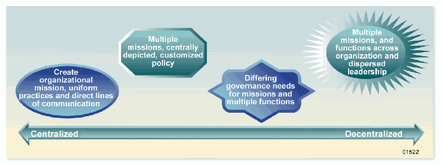
情報セキュリティ・ガバナンスの集中型から分散型への連続体を示す図。統一的な方針と直接的な連絡を重視する構造から、複数の使命に合わせて調整する構造までを比較する。
Figure 2-3. Information Security Governance Structures
図2-3 情報セキュリティガバナンス体制
未レビュー訳2.2.3.1 Agency Head
2.2.3.1 機関長
The Clinger-Cohen Act assigns the responsibility for ensuring “that the information security policies, procedures, and practices of the executive agency are adequate.”8 FISMA provides the following details on agency head responsibilities for information security:
クリンガー・コーエン法は、「行政府機関の情報セキュリティ方針、手順、実務が適切であることを確保する」責任を機関長に割り当てている。8 FISMAは、情報セキュリティに関する機関長の責任を次のように詳述している。
未レビュー訳•Providing information security protections commensurate with the risk and magnitude of the harm resulting from unauthorized access, use, disclosure, disruption, modification, or destruction of information collected or maintained by or on behalf of an agency, and on information systems used or operated by an agency or by a contractor of an agency or other organization on behalf of an agency;
•機関により、または機関のために収集または維持される情報、および機関により、または機関のためにその請負業者もしくはその他の組織により使用または運用される情報システムに対する、不正なアクセス、使用、開示、中断、改変、または破壊から生じる危害のリスクと規模に見合った情報セキュリティ保護を提供すること。
•Ensuring that an information security program is developed, documented, and implemented to provide security for all systems, networks, and data that support the operations of the organization;
•組織の業務を支えるすべてのシステム、ネットワーク、およびデータにセキュリティを提供するための情報セキュリティプログラムが、策定、文書化、および実施されることを確実にすること。
•Ensuring that information security processes are integrated with strategic and operational planning processes to secure the organization’s mission;
•組織の使命を守るため、情報セキュリティのプロセスが戦略計画および運用計画のプロセスに統合されるようにすること。
•Ensuring that senior agency officials within the organization are given the necessary authority to secure the operations and assets under their control;
•組織内の上級機関職員に、その管理下にある業務と資産を保護するために必要な権限が与えられるようにすること。
•Designating a CIO and delegating authority to that individual to ensure compliance with applicable information security requirements;
•CIOを指名し、適用される情報セキュリティ要件への遵守を確実にするため、その個人に権限を委任すること。
•Ensuring that the agency has trained personnel to support compliance with information security policies, processes, standards, and guidelines; and
•情報セキュリティ方針、プロセス、標準、ガイドラインの遵守を支援する訓練済みの職員を機関に確保すること。
•Ensuring that the CIO, in coordination with the other senior agency officials, reports annually to the agency head on the effectiveness of the agency information security program, including the progress of remedial actions.
•CIOが他の上級機関職員と連携し、是正措置の進捗を含む機関の情報セキュリティプログラムの有効性を、毎年機関長に報告するようにすること。
2.2.3.2 Chief Information Officer
2.2.3.2 最高情報責任者
FISMA assigns the agency CIO the following responsibilities:
FISMAは、機関のCIOに次の責任を割り当てている。
未レビュー訳•Designating a senior agency information security officer (SAISO);
•上級機関情報セキュリティ責任者（SAISO）を指名すること。
•Developing and maintaining an agency-wide information security program;
•機関全体の情報セキュリティプログラムを策定し、維持すること。
•Developing and maintaining information security policies, procedures, and control techniques to address all applicable requirements;
•適用されるすべての要件に対応する情報セキュリティ方針、手順、管理手法を策定し、維持すること。
•Ensuring compliance with applicable information security requirements; and
•適用される情報セキュリティ要件への遵守を確保すること。
•Reporting annually, in coordination with the other senior agency officials, to the agency head on the effectiveness of the agency information security program, including progress of remedial actions.
•他の上級機関職員と連携し、是正措置の進捗を含む機関の情報セキュリティプログラムの有効性を毎年機関長に報告すること。
未レビュー訳2.2.3.3 Senior Agency Information Security Officer9
2.2.3.3 上級機関情報セキュリティ責任者9
未レビュー訳FISMA assigns SAISO the following responsibilities:
FISMAは、SAISOに次の責任を割り当てている。
•Performing information security duties as the primary duty;
•情報セキュリティ業務を主たる職務として遂行すること。
•Heading an office with the mission and resources to assist in ensuring agency compliance with information security requirements;
•情報セキュリティ要件への機関の遵守の確保を支援する使命と資源を持つ部門を統括すること。
•Periodically assessing risk and magnitude of the harm resulting from unauthorized access, use, disclosure, disruption, modification, or destruction of information and information systems that support the operations and assets of the agency;
•機関の業務と資産を支える情報および情報システムについて、認可されていないアクセス、使用、開示、中断、改変、または破壊から生じる危害のリスクと規模を定期的に評価すること。
•Developing and maintaining risk-based, cost-effective information security policies, procedures, and control techniques to address all applicable requirements throughout the life cycle of each agency information system to ensure compliance with applicable requirements;
•適用される要件への遵守を確保するため、機関の各情報システムのライフサイクル全体を通じて適用されるすべての要件に対応する、リスクに基づく費用対効果の高い情報セキュリティ方針、手順、管理手法を策定し維持すること。
•Facilitating development of subordinate plans for providing adequate information security for networks, facilities, and systems or groups of information systems;
•ネットワーク、施設、システム、または情報システム群に適切な情報セキュリティを提供するための下位計画の策定を促進すること。
•Ensuring that agency personnel, including contractors, receive appropriate information security awareness training;
•請負業者を含む機関職員が、適切な情報セキュリティ意識向上研修を受けるようにすること。
•Training and overseeing personnel with significant responsibilities for information security with respect to such responsibilities;
•情報セキュリティに関する重要な責任を持つ職員を訓練し、その責任の遂行を監督すること。
未レビュー訳•Periodically testing and evaluating the effectiveness of information security policies, procedures, and practices;
•情報セキュリティ方針、手順、実務の有効性を定期的に試験し評価すること。
•Establishing and maintaining a process for planning, implementing, evaluating, and documenting remedial action to address any deficiencies in the information security policies, procedures, and practices of the agency;
•機関の情報セキュリティ方針、手順、実務におけるあらゆる不備に対処する是正措置について、計画、実施、評価、文書化を行うプロセスを確立し維持すること。
•Developing and implementing procedures for detecting, reporting, and responding to security incidents;
•セキュリティインシデントを検知、報告、対応する手順を策定し実施すること。
•Ensuring preparation and maintenance of plans and procedures to provide continuity of operations for information systems that support the operations and assets of the agency; and
•機関の業務と資産を支える情報システムの運用継続を提供するための計画と手順が準備され、維持されるようにすること。
•Supporting the agency CIO in annual reporting to the agency head on the effectiveness of the agency information security program, including progress of remedial actions.
•是正措置の進捗を含む機関の情報セキュリティプログラムの有効性に関する機関長への年次報告について、機関CIOを支援すること。
未レビュー訳2.2.3.4 Chief Enterprise Architect
2.2.3.4 最高エンタープライズアーキテクト
The chief enterprise architect or comparable position in an organization is responsible for:
組織の最高エンタープライズアーキテクトまたは同等の役職は、次の責任を負う。
未レビュー訳•Leading agency enterprise architecture development and implementation efforts;
•機関のエンタープライズアーキテクチャの策定と実施を主導すること。
•Collaborating with lines of business within the agency to ensure proper integration of lines of business into enterprise architecture;
•機関内の各事業部門と連携し、各事業部門がエンタープライズアーキテクチャに適切に統合されるようにすること。
•Participating in agency strategic planning and performance planning activities to ensure proper integration of enterprise architecture;
•エンタープライズアーキテクチャが適切に統合されるよう、機関の戦略計画および業績計画に参加すること。
未レビュー訳•Facilitating integration of information security into all layers of enterprise architecture to ensure agency implementation of secure solutions; and
•機関がセキュアなソリューションを確実に実施するよう、エンタープライズアーキテクチャのすべての層への情報セキュリティの統合を促進すること。
•Working closely with the program managers, the senior agency information security officer (SAISO), and the business owners to ensure that all technical
•プログラムマネージャー、上級機関情報セキュリティ責任者（SAISO）、ビジネスオーナーと緊密に連携し、すべての技術的
未レビュー訳architecture requirements are adequately addressed by applying FEA and the Security and Privacy Profile (SPP).
アーキテクチャ要件が、連邦エンタープライズアーキテクチャ（FEA）およびセキュリティ・プライバシープロファイル（SPP）を適用して適切に満たされるようにすること。
未レビュー訳2.2.3.5 Related Roles
2.2.3.5 関連する役割
Many other individuals within an organization have a stake in information security, from top senior management down to individual users. A few of the primary senior management roles and their coinciding responsibilities are listed below. The scope of each role will depend on whether or not these roles should be redundant in the decentralized governance structure. These individuals should work collaboratively to ensure that information security exists within their organizational responsibility.
組織には、上級管理職から個々の利用者まで、情報セキュリティに関わる人がほかにも多数いる。主な上級管理職の役割と、それぞれに対応する責任の一部を以下に示す。各役割の範囲は、分散型ガバナンス体制で同じ役割を重複して設けるかどうかによって異なる。各自の組織上の責任範囲で情報セキュリティが確保されるよう、これらの関係者は協力して取り組むべきである。
未レビュー訳Inspector General (IG). The IG is a statutory office within an organization that, in addition to other responsibilities, works to assess an organization’s information security practices and identifies vulnerabilities and the possible need to modify security measures. The IG completes this task by:
監察総監（IG）。IGは組織内の法定職であり、その他の責任に加えて、組織の情報セキュリティ実務を評価し、脆弱性とセキュリティ対策変更の必要性を特定する。IGは次の方法でこの業務を行う。
未レビュー訳•Detecting fraud or instances of waste, abuse, or misuse of an organization’s funds;
•組織資金の不正、浪費、乱用、または不適切使用を検知すること。
•Identifying operational deficiencies within the organization;
•組織内の業務上の不備を特定すること。
•Ensuring that the underlying problems that permit such failings are rectified; and
•そのような不備を招く根本的な問題が是正されるようにすること。
•Offering recommendations for preventing problems in the future.
•将来の問題を防ぐための提言を行うこと。
Chief Financial Officer. The CFO is the senior financial advisor to the investment review board (IRB) and the agency head. Information security investments fall within the purview of the CFO and are included in the CFO’s reports. In this capacity, the CFO is responsible for:
最高財務責任者（CFO）。CFOは、投資審査委員会（IRB）および機関長の上級財務顧問である。情報セキュリティ投資はCFOの所管に含まれ、その報告にも含まれる。この立場において、CFOは次の責任を負う。
未レビュー訳•Reviewing cost goals of each major information security investment;
•主要な情報セキュリティ投資ごとの費用目標を審査すること。
•Reporting financial management information to OMB as part of the President’s budget;
•大統領予算の一環として、財務管理情報をOMBに報告すること。
•Complying with legislative and OMB-defined responsibilities as they relate to IT capital investments;
•IT資本投資に関する法律上およびOMBが定める責任を果たすこと。
•Reviewing systems that impact financial management activities; and
•財務管理活動に影響するシステムを審査すること。
•Forwarding investment assessments to the IRB.
•投資評価をIRBに送付すること。
Chief Privacy Officer or other designated official with privacy responsibilities. The chief privacy officer is responsible for privacy compliance across an organization, including privacy compliance measures that apply to information security assets and activities. The chief privacy officer works to maintain a balance between security and privacy requirements, and works to ensure that one is not compromised for the sake of the other. To this end, the chief privacy officer serves as the senior official responsible for:
最高プライバシー責任者、またはプライバシー責任を割り当てられたその他の職員。最高プライバシー責任者は、情報セキュリティ資産および活動に適用されるプライバシー遵守措置を含め、組織全体のプライバシー遵守に責任を負う。セキュリティ要件とプライバシー要件の均衡を保ち、一方を他方の犠牲にしないよう取り組む。このため、次の責任を担う上級職員を務める。
未レビュー訳•Developing, promoting, and supporting the organization’s privacy programs;
•組織のプライバシープログラムを策定、推進、支援すること。
•Encouraging awareness of potential privacy issues and policies; and
•潜在的なプライバシー上の問題と方針について意識を高めること。
未レビュー訳•Reviewing and implementing privacy regulations and legislation.
•プライバシーに関する規則および法律を審査し、実施すること。
未レビュー訳Physical Security Officer or other designated official with physical security responsibilities. The physical security officer is responsible for the overall implementation and management of physical security controls across an organization, to include integration with applicable information security controls. As information security programs are developed, senior agency officials should work to ensure this coordination of complementary controls. In consideration of information security, the physical security officer serves as the senior official responsible for:
物理セキュリティ責任者、または物理セキュリティ責任を割り当てられたその他の職員。物理セキュリティ責任者は、適用される情報セキュリティ管理策との統合を含め、組織全体の物理セキュリティ管理策の実施と管理を担う。情報セキュリティプログラムの策定にあたり、上級機関職員は相互補完的な管理策の調整を確実にするよう努めるべきである。情報セキュリティに関して、物理セキュリティ責任者は次の責任を担う上級職員を務める。
未レビュー訳•Developing, promulgating, implementing, and monitoring the organization’s physical security programs, to include appropriate controls for alternate work sites;
•適切な代替勤務場所の管理策を含め、組織の物理セキュリティプログラムを策定、公布、実施、監視すること。
未レビュー訳•Ensuring organizational implementation and monitoring of access controls (i.e., authorization, access, visitor control, transmission medium, display medium, logging)
•組織内でアクセス管理策（認可、アクセス、訪問者管理、伝送媒体、表示媒体、ログ記録など）を実施し、監視すること。
未レビュー訳•Coordinating organizational environmental controls (i.e., ongoing and emergency power support and backups, fire protection, temperature and humidity controls, water damage); and
•組織の環境管理策（通常時および緊急時の電源供給とバックアップ、防火、温度・湿度の管理、水損対策など）を調整すること。
未レビュー訳•Overseeing and managing controls for delivery and removal of assets.
•資産の納入と撤去に関する管理策を監督し、管理すること。
Personnel Security Officer or other designated official with personnel security responsibilities. This responsibility is often resident within the Human Resources or Human Capital organization. The personnel security officer is responsible for the overall implementation and management of personnel security controls across an organization, to include integration with specific information security controls. As information security programs are developed, senior agency officials should work to ensure this coordination of complementary controls. In consideration of information security, the personnel security officer serves as the senior official responsible for:
人事セキュリティ責任者、または人事セキュリティ責任を割り当てられたその他の職員。この責任は、人事部門または人的資本部門が担うことが多い。人事セキュリティ責任者は、個別の情報セキュリティ管理策との統合を含め、組織全体の人事セキュリティ管理策の実施と管理を担う。情報セキュリティプログラムの策定にあたり、上級機関職員は相互補完的な管理策の調整を確実にするよう努めるべきである。情報セキュリティに関して、人事セキュリティ責任者は次の責任を担う上級職員を務める。
未レビュー訳•Developing, promulgating, implementing, and monitoring the organization’s personnel security programs;
•組織の人事セキュリティプログラムを策定、公布、実施、監視すること。
•Developing and implementing position categorization (including third-party controls), access agreements, and personnel screening, termination, and transfers; and
•役職の区分（第三者に対する管理策を含む）、アクセス契約、人事スクリーニング、退職、異動の手続きを策定し実施すること。
未レビュー訳•Ensuring consistent and appropriate sanctions for personnel violating management, operation, or technical information security controls.
•管理、運用、または技術的な情報セキュリティ管理策に違反した職員に対し、一貫した適切な制裁を確保すること。
Acquisitions/Contracting. The Acquisitions/Contracting function is responsible for managing contracts and overseeing their implementation. Personnel executing this function have the following responsibilities in regards to information security:
調達／契約。調達／契約機能は、契約を管理し、その実施を監督する責任を負う。この機能を担う職員は、情報セキュリティに関して次の責任を負う。
•Collaborating with the agency’s SAISO or other appropriate official to ensure that the agency’s contracting policies adequately address the agency’s information security requirements;
•機関の契約方針が機関の情報セキュリティ要件に適切に対応するよう、機関のSAISOまたはその他の適切な担当者と協力すること。
•Coordinating with the SAISO or other appropriate official as required to ensure that all agency contracts and procurements are compliant with the agency’s information security policy;
•必要に応じてSAISOまたはその他の適切な担当者と調整し、機関のすべての契約と調達が機関の情報セキュリティ方針に準拠するようにすること。
•Ensuring that all personnel with responsibilities in the agency’s procurement process are properly trained in information security; and
•機関の調達プロセスに責任を持つすべての職員が、適切な情報セキュリティ研修を受けるようにすること。
未レビュー訳•In concert with the SAISO, facilitating the monitoring of contract performance for compliance with the agency’s information security policy.
•SAISOと連携して、機関の情報セキュリティ方針への準拠について契約履行状況を監視できるようにすること。
2.2.4 Federal Enterprise Architecture (FEA)
2.2.4 連邦エンタープライズアーキテクチャ（FEA）
FEA is a business-based framework for governmentwide improvement. The purpose of FEA is to facilitate cross-agency analyses and identify duplicative investments, gaps, and opportunities for collaboration within and across federal agencies.10 FEA facilitates identification of duplicative or wasteful investments, areas where investments should be made, and where departments and agencies can collaborate to improve government operations or services.
FEAは、政府全体の改善を目的とするビジネスベースの枠組みである。FEAは、機関横断的な分析を促進し、連邦機関内および機関間における重複投資、ギャップ、協力機会を特定する。10 また、重複または無駄な投資、投資すべき領域、政府の業務やサービスの改善に向けて省庁・機関が協力できる領域を特定しやすくする。
未レビュー訳The FEA consists of five reference models:
FEAは、5つの参照モデルから構成される。
•The Performance Reference Model (PRM) is a common framework for performance measurement that can be applied throughout the FEA.
•業績参照モデル（PRM）は、FEA全体に適用できる業績測定の共通枠組みである。
•The Business Reference Model (BRM) is a function-driven framework for describing the business operations of the federal government independent of the agencies.
•ビジネス参照モデル（BRM）は、各機関とは独立して連邦政府の業務を記述する、機能主導型の枠組みである。
•The Service Component Reference Model (SRM) is a business- and performance-driven functional framework that classifies service components with respect to how they support business and/or performance objectives.
•サービスコンポーネント参照モデル（SRM）は、サービスコンポーネントを、それらが事業目標および／または業績目標をどのように支援するかという観点から分類する、事業および業績主導型の機能的枠組みである。
•The Data and Information Reference Model (DRM) describes, at an aggregate level, the data and information that support program and business line operations.
•データ・情報参照モデル（DRM）は、プログラムおよび事業部門の業務を支えるデータと情報を集約レベルで記述する。
•The Technical Reference Model (TRM) is a component-driven technical framework used to identify the standards, specifications, and technologies that support and enable the delivery of service components and capabilities.
•技術参照モデル（TRM）は、サービスコンポーネントと能力の提供・実現を支える標準、仕様、技術を特定するための、コンポーネント主導型の技術枠組みである。
未レビュー訳OMB requires agencies to integrate security into their enterprise architecture development life cycle.11 In addition to complying with OMB requirements, the integration of information security into the agency enterprise architecture efforts benefits both the agencies and the federal government:
OMBは、各機関がエンタープライズアーキテクチャの策定ライフサイクルにセキュリティを統合することを求めている。11 OMBの要件遵守に加えて、情報セキュリティを機関のエンタープライズアーキテクチャ策定に統合することは、機関と連邦政府の双方に利点がある。
未レビュー訳•Reduction of the reporting burden. The FEA requires agencies to collect and analyze significant amounts of data. The security efforts already under way can provide information relevant to the data, technology, and performance metrics in place throughout a department, such as the information contained in FISMA quarterly and annual reports, accreditation letters, and plan of actions and milestones (POA&M).
•報告負担の軽減。FEAは、各機関に大量のデータの収集と分析を求める。すでに進められているセキュリティ活動から、省庁全体のデータ、技術、業績指標に関係する情報を得られる。たとえば、FISMAの四半期・年次報告書、認定書、行動計画・マイルストーン（POA&M）に含まれる情報がある。
•Integration of security data. Organizations should use existing information security data sources to identify data for their FEA submissions, thus allowing for a continuous and reliable transmission and roll-up of security requirements and controls from initial security certification and accreditation documentation and POA&Ms into the FEA.
•セキュリティデータの統合。組織は、既存の情報セキュリティデータソースを利用してFEA提出用のデータを特定すべきである。これにより、最初のセキュリティ認証・認定文書やPOA&MからFEAへ、セキュリティ要件と管理策を継続的かつ確実に伝達し、集約できる。
未レビュー訳•Preservation of security requirements. Documenting and preserving information about applicable security requirements ensures that it can be used as a part of any higher-level federal management or decision-making process. If, for example, the federal government were to try and implement a large-scale reorganization (such as creating a new department or agency), a security-aware FEA would be able to clearly outline not only the intersections of common business lines but also the corresponding security requirements. In another example, if a department were to mandate using a specific type of technological tool, the FEA would be able to highlight the security and privacy requirements for the technology as well as the requirements for the data that
•セキュリティ要件の保持。適用されるセキュリティ要件に関する情報を文書化し保持することで、より上位の連邦政府の管理や意思決定に利用できる。たとえば、連邦政府が新たな省庁や機関の設立など大規模な再編を行う場合、セキュリティを考慮したFEAにより、共通する事業部門の交差だけでなく、それに対応するセキュリティ要件も明確に示せる。別の例として、ある省庁が特定の技術ツールの使用を義務付ける場合、FEAはその技術のセキュリティ・プライバシー要件に加え、そのツールが扱うデータに関する
未レビュー訳the tool would handle. Since the federal government has numerous IT-related efforts under way, including critical infrastructure protection (CIP) and COOP processes that seek to preserve national resources as well as the ability of departments and agencies to operate in adverse or emergency conditions, a security-enabled FEA will provide support to those other efforts while simultaneously ensuring that information is appropriately protected within these efforts.
要件も明確に示せる。連邦政府では、重要インフラ保護（CIP）や、国家資源と、省庁・機関が不利な状況または緊急事態でも業務を継続する能力の維持を目指すCOOPプロセスなど、IT関連の取り組みが数多く進められている。セキュリティを組み込んだFEAは、こうした他の取り組みを支援すると同時に、その取り組みで情報が適切に保護されるようにする。
未レビュー訳2.2.5 Information Security Policy and Guidance
2.2.5 情報セキュリティ方針および指針
Information security policy is an aggregate of directives, rules, and practices that prescribes how an organization manages, protects, and distributes information.12
情報セキュリティ方針とは、組織が情報を管理、保護、配布する方法を定める指令、規則、慣行の総体である。12
未レビュー訳Information security policy is an essential component of information security governance—without the policy, governance has no substance and rules to enforce. Information security policy should be based on a combination of appropriate legislation, such as FISMA; applicable standards, such as NIST Federal Information Processing Standards (FIPS) and guidance; and internal agency requirements.
情報セキュリティ方針は、情報セキュリティガバナンスに不可欠な要素である。方針がなければ、ガバナンスには実質も執行すべき規則もない。情報セキュリティ方針は、FISMAなどの適用法令、NIST連邦情報処理規格（FIPS）や指針などの適用規格、および機関内部の要件を適切に組み合わせて策定すべきである。
未レビュー訳Agency information security policy should address the fundamentals of agency information security governance structure, including:
機関の情報セキュリティ方針では、機関の情報セキュリティガバナンス体制の基本事項として、次を定めるべきである。
未レビュー訳•Information security roles and responsibilities;
•情報セキュリティ上の役割と責任。
•Statement of security controls baseline and rules for exceeding the baseline; and
•セキュリティ管理策ベースラインの記述、およびベースラインを超える場合の規則。
•Rules of behavior that agency users are expected to follow and minimum repercussions for noncompliance.
•機関の利用者が従うべき行動規則と、遵守しない場合の最低限の措置。
未レビュー訳Supporting guidance and procedures on how to effectively implement specific controls across the enterprise should be developed to augment an agency’s security policy. This subsequent guidance on information security, created by the agency, in consideration of external guidance (e.g. NIST Special Publications and OMB memoranda), should be consistent with the information security policy and may not supersede it, unless the policy itself is being modified. Agencies should ensure that their information security policy is sufficiently current to accommodate the information security environment and agency mission and operational requirements. To ensure that information security does not become obsolete, agencies should implement a policy review and revision cycle. As a part of the periodic review and the initial development of the information security policies, agencies should work to ensure that all internal security policies (i.e., physical and personnel) are sufficiently coordinated to ensure effective implementation of crosscutting and convergent security objectives, such as access control initiatives.
組織全体で個々の管理策を効果的に実施する方法を定めた補足的な指針や手順を作成し、機関のセキュリティ方針を補完すべきである。機関が外部の指針（NIST特別刊行物やOMB覚書など）を考慮して作成する情報セキュリティに関する後続の指針は、情報セキュリティ方針と整合させるべきであり、方針自体を改訂する場合を除き、方針に優先してはならない。機関は、情報セキュリティ方針を、情報セキュリティ環境ならびに機関の任務および運用上の要件に対応できる程度に最新の状態に保つべきである。情報セキュリティが時代遅れにならないよう、方針の見直しと改訂の周期を設けるべきである。方針の定期的な見直しと初回策定の一環として、機関は、内部のセキュリティ方針（物理的セキュリティおよび職員に関する方針など）を十分に調整し、アクセス制御の取り組みなど、分野横断的かつ統合的なセキュリティ目標を効果的に実施できるようにすべきである。
未レビュー訳2.2.6 Ongoing Monitoring
2.2.6 継続的な監視
An effective information security governance program requires constant review. Agencies should monitor the status of their programs to ensure that:
効果的な情報セキュリティガバナンスプログラムには、継続的な見直しが必要である。機関は、プログラムの状況を監視し、次の点を確認すべきである。
未レビュー訳•Ongoing information security activities are providing appropriate support to the agency mission;
•継続的な情報セキュリティ活動が、機関の任務を適切に支援していること。
未レビュー訳•Policies and procedures are current and aligned with evolving technologies, if appropriate; and
•方針と手順が最新であり、必要に応じて進化する技術に整合していること。
•Controls are accomplishing their intended purpose.
•管理策が意図した目的を果たしていること。
Over time, policies and procedures may become inadequate because of changes in agency mission and operational requirements, threats, environment, deterioration in the degree of compliance, changes in technology or infrastructure, or business processes. Periodic assessments and reports on activities can be a valuable means of identifying areas of noncompliance, reminding users of their responsibilities and demonstrating management's commitment to the security program. While an organization’s mission does not frequently change, the agency may expand its mission to secure agency programs and assets and, by extension, require modification to its information security requirements and practices. It is important that a change in an organization’s internal requirements is checked against external federal requirements as, for example, a change to an information system’s security posture may alter its subsequent reporting requirements.
機関の任務や運用上の要件、脅威、環境、遵守度の低下、技術やインフラストラクチャの変化、または業務プロセスの変化により、方針や手順は時間の経過とともに不十分になることがある。活動の定期的な評価と報告は、不遵守の領域を特定し、利用者に責任を再認識させ、セキュリティプログラムに対する経営陣の取り組みを示すうえで有効である。組織の任務が頻繁に変わることはないものの、機関がプログラムや資産を保護するために任務を拡大し、それに伴って情報セキュリティ要件や慣行の変更が必要になる場合がある。たとえば、情報システムのセキュリティ態勢の変更によって、その後の報告要件が変わることもあるため、組織内部の要件の変更を連邦政府の外部要件に照らして確認することが重要である。
未レビュー訳To facilitate ongoing monitoring, the SAISO and other officials can compare and correlate a variety of real-time and static information available from a number of ongoing activities within and outside of their programs. FISMA requires agencies to perform an annual assessment of their information security programs and report information security performance measures quarterly and annually. The intent of these reporting requirements is to facilitate close to real-time assessment and monitoring of information security program activities. Ongoing monitoring combines the use of existing data to oversee a security program, and typically occurs throughout all phases of the program life cycle. Agencies can use a variety of data originating from the ongoing information security program activities to monitor performance of programs under their purview, including POA&Ms, performance measurements and metrics, continuous assessment, configuration management and control, network monitoring, and incident statistics.
継続的な監視を促進するため、SAISOやその他の職員は、プログラムの内外で行われるさまざまな活動から得られるリアルタイム情報と静的情報を比較し、相互に関連付けることができる。FISMAは、機関に対し、情報セキュリティプログラムを毎年評価し、情報セキュリティのパフォーマンス測定値を四半期ごとおよび年次で報告するよう求めている。これらの報告要件は、情報セキュリティプログラムの活動をほぼリアルタイムで評価・監視できるようにすることを目的としている。継続的な監視では、既存データを用いてセキュリティプログラムを監督し、通常、プログラムのライフサイクル全体を通じて実施する。機関は、所管するプログラムの実績を監視するため、POA&M、パフォーマンス測定値と指標、継続的評価、構成管理と制御、ネットワーク監視、インシデント統計など、継続的な情報セキュリティ活動から得られるさまざまなデータを利用できる。
未レビュー訳Table 2-1 provides a broad overview of key ongoing activities that can assist in monitoring and improving an agency’s information governance activities.
表2-1は、機関の情報セキュリティガバナンス活動の監視と改善に役立つ主要な継続的活動の概要を示す。
未レビュー訳Table 2-1. Ongoing Monitoring Activities
表2-1 継続的な監視活動
未レビュー訳| Activities | Description of Activities | Supporting Processes and Information |
| Plans of Action and Milestones (POA&M)13 | POA&Ms assist in identifying, assessing, prioritizing, and monitoring the progress of corrective efforts for security weaknesses found in programs and systems. The POA&M tracks the measures implemented to correct deficiencies and to reduce or eliminate known vulnerabilities. POA&Ms can also assist in identifying performance gaps, evaluating an agency’s security performance and efficiency, and conducting oversight. | (cid:131) Agency maintains separate program and system POA&Ms. |
| (cid:131) Weaknesses are listed according to OMB criteria, identified | ||
| in annual OMB FISMA guidance. | ||
| (cid:131) System POA&Ms are tied to capital planning documents. | ||
| (cid:131) Number of ongoing POA&M actions is either constant or is | ||
| increasing, while the number of completed POA&M actions | ||
| is increasing and the number of delayed POA&M actions is | ||
| decreasing. | ||
| (cid:131) Weaknesses do not reappear on the POA&M after being | ||
| rectified and marked complete. | ||
| (cid:131) Managers use POA&Ms for their respective systems and | ||
| programs as management tools for weakness mitigation. | ||
| (cid:131) POA&M is updated as weaknesses are closed and | ||
| discovered, and therefore reflects the latest weakness | ||
| mitigation status for the agency. | ||
| (cid:131) POA&M can be easily provided to appropriate parties | ||
| (OMB, IG, GAO) on demand at any point in time. | ||
| (cid:131) A POA&M summary synopsizing agency POA&M progress | ||
| is required to be submitted to OMB quarterly. |
原本PDFの抜粋画像
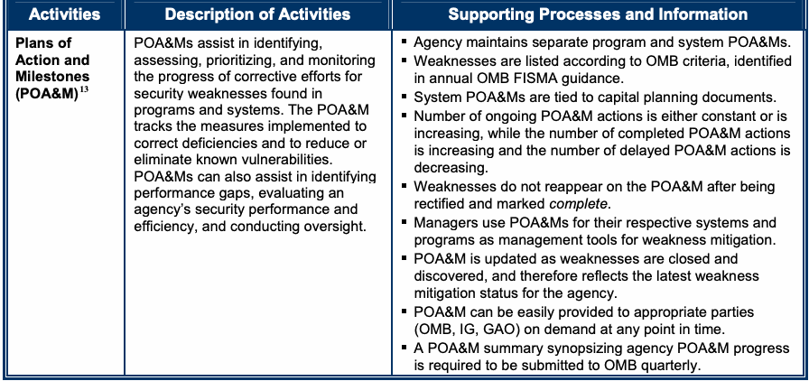
| 活動 | 活動の説明 | 支援するプロセスおよび情報 |
| 行動計画・マイルストーン（POA&M）13 | POA&Mは、プログラムおよびシステムで見つかったセキュリティ上の弱点に対する是正措置の進捗を特定、評価、優先順位付けし、監視するのに役立つ。POA&Mは、欠陥を是正し、既知の脆弱性を低減または排除するために実施した措置を追跡する。また、POA&Mは、パフォーマンス上のギャップの特定、機関のセキュリティ性能と効率の評価、監督にも役立つ。 | (cid:131) 機関は、プログラム用とシステム用のPOA&Mを別々に管理する。 |
| (cid:131) 弱点は、 | ||
| 年次OMB FISMA指針に示されたOMBの基準に従って列挙する。 | ||
| (cid:131) システム用POA&Mを資本計画文書に関連付ける。 | ||
| (cid:131) 進行中のPOA&M措置数は一定または増加傾向にあり、 | ||
| 完了したPOA&M措置数は | ||
| 増加し、遅延したPOA&M措置数は | ||
| 減少している。 | ||
| (cid:131) 是正され、完了として記録された弱点が | ||
| POA&Mに再掲載されない。 | ||
| (cid:131) 管理者は、各自が担当するシステムおよび | ||
| プログラムで、弱点の軽減を管理する手段としてPOA&Mを使用する。 | ||
| (cid:131) 弱点のクローズや発見に応じてPOA&Mを更新し、 | ||
| そのため、機関の最新の弱点軽減状況を | ||
| 反映する。 | ||
| (cid:131) 要請があればいつでも、関係者 | ||
| （OMB、IG、GAO）にPOA&Mを容易に提供できる。 | ||
| (cid:131) 機関のPOA&Mの進捗を要約した概要を、 | ||
| 四半期ごとにOMBへ提出することが求められる。 |
原本PDFの抜粋画像
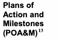
原本PDFの抜粋画像
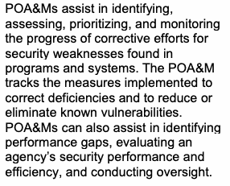
| Activities | Description of Activities | Supporting Processes and Information |
| Measurement and Metrics14 | Metrics are tools designed to improve performance and accountability through the collection, analysis, and reporting of relevant performance- related data. Information security metrics monitor the accomplishment of goals and objectives by quantifying the implementation level of security controls and the efficiency and effectiveness of the controls, by analyzing the adequacy of security activities, and by identifying possible improvement actions. | (cid:131) Metrics/performance measures are aligned to the agency |
| strategy and information security strategy, and therefore | ||
| are aligned to mission requirements. | ||
| (cid:131) Agency uses metrics/performance measures to quantify | ||
| and assess its information security performance and to | ||
| identify and target corrective actions. | ||
| (cid:131) Agency decision makers use metrics/performance | ||
| measures as an input into decision making regarding | ||
| prioritization of activities and resource and funding | ||
| allocations. | ||
| (cid:131) Agency uses metrics/performance measures that can be | ||
| obtained without spending extraordinary resources. | ||
| (cid:131) Metrics/performance measures provide numerical and | ||
| empirical data rather than opinions. | ||
| (cid:131) Metrics/performance measures are regularly verified by | ||
| third-party reviewers for accuracy and validity. | ||
| (cid:131) Metrics/performance measures provide meaningful data to | ||
| assess the impact of changes over time. | ||
| (cid:131) Agency collects data to calculate metrics/performance | ||
| measures at the most discrete, unanalyzed level possible. | ||
| (cid:131) Agency uses well-defined and specified | ||
| metrics/performance measures. | ||
| Continuous Assessment15 | The continuous assessment process monitors the initial security accreditation of an information system to track the changes to the information system, analyzes the security impact of those changes, makes appropriate adjustments to the security controls and to the system’s security plan, and reports the security status of the system to appropriate agency officials. | (cid:131) Many agency information systems are certified and |
| accredited more frequently than every three years. | ||
| (cid:131) System security plans are updated frequently, as system | ||
| changes occur. | ||
| (cid:131) Results of continuous assessment process can be tracked | ||
| throughout system POA&Ms. | ||
| (cid:131) Appropriate agency officials are aware of the status of | ||
| systems under their purview. | ||
| (cid:131) System control assessments and security assessment and | ||
| evaluation occur at least annually. | ||
| Configuration Management16 | Configuration management (CM) is an essential component of monitoring the status of security controls and identifying potential security-related problems in information systems. This information can help security managers understand and monitor the evolving nature of vulnerabilities as they appear in a system under their responsibility, thus enabling managers to direct appropriate changes as required. | (cid:131) Agency deploys a Configuration Control Board (CCB) or a |
| similar body. | ||
| (cid:131) An information security representative participates in the | ||
| CCB. | ||
| (cid:131) Vendor patches are tested for impact to information | ||
| security and system settings. | ||
| (cid:131) Agencies observe a decrease in incidents caused by | ||
| known vulnerabilities for which patches have been | ||
| distributed to system administrators. | ||
| (cid:131) Known vulnerabilities are rarely discovered during various | ||
| assessments. | ||
| (cid:131) Staff who are responsible for CM receive appropriate | ||
| information security training and are aware of their security- | ||
| related responsibilities. | ||
| (cid:131) Agency drafts and publishes standardized configuration | ||
| policies, and tracks the number and frequency of | ||
| implementations of configurations throughout its | ||
| organization. |
原本PDFの抜粋画像
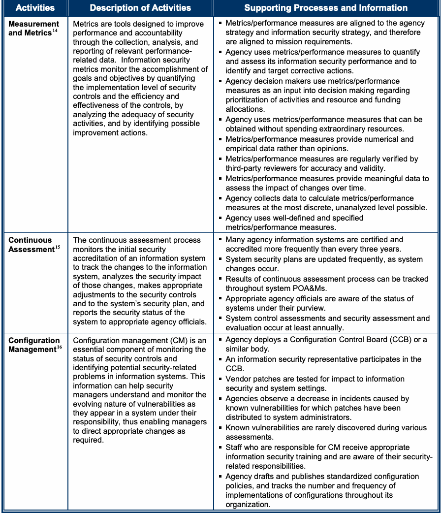
| Activities | Description of Activities | Supporting Processes and Information |
| 測定値と指標14 | 指標は、関連するパフォーマンスデータの収集、分析、報告を通じて、パフォーマンスと説明責任の向上を図るためのツールである。情報セキュリティ指標は、セキュリティ管理策の実施レベルと効率性・有効性を定量化し、目標や目的の達成状況を監視する。また、セキュリティ活動の妥当性を分析し、改善策の候補を特定する。 | (cid:131) 指標／パフォーマンス測定値を機関の戦略および情報セキュリティ戦略に整合させ、したがって任務上の要件にも整合させる。 |
| (cid:131) 機関は、指標／パフォーマンス測定値を用いて情報セキュリティの実績を定量化・評価し、是正措置を特定して対象を定める。 | ||
| (cid:131) 機関の意思決定者は、活動の優先順位付け、資源配分および資金配分に関する意思決定の材料として指標／パフォーマンス測定値を使用する。 | ||
| (cid:131) 機関は、特別な資源を費やさずに取得できる指標／パフォーマンス測定値を使用する。 | ||
| (cid:131) 指標／パフォーマンス測定値は、意見ではなく数値的・実証的なデータを示す。 | ||
| (cid:131) 指標／パフォーマンス測定値の正確性と妥当性を、第三者の評価者が定期的に検証する。 | ||
| (cid:131) 指標／パフォーマンス測定値は、経時的な変化の影響を評価するための有意義なデータを示す。 | ||
| (cid:131) 機関は、指標／パフォーマンス測定値を算出するため、可能な限り細分化され、未分析の段階でデータを収集する。 | ||
| (cid:131) 機関は、明確に定義・指定された指標／パフォーマンス測定値を使用する。 | ||
| 継続的評価15 | 継続的評価プロセスでは、情報システムの初回のセキュリティ認可を起点として、情報システムの変更を追跡し、その変更がセキュリティに与える影響を分析し、セキュリティ管理策とシステムセキュリティ計画を適切に調整し、システムのセキュリティ状況を適切な機関職員に報告する。 | (cid:131) 多くの機関情報システムについて、3年ごとよりも高い頻度で認証・認可を実施する。 |
| (cid:131) システムに変更が生じたら、システムセキュリティ計画を速やかに更新する。 | ||
| (cid:131) 継続的評価プロセスの結果を、システムのPOA&Mを通じて追跡できる。 | ||
| (cid:131) 適切な機関職員が、所管システムの状況を把握している。 | ||
| (cid:131) システム管理策の評価とセキュリティ評価を少なくとも年1回実施する。 | ||
| 構成管理16 | 構成管理（CM）は、セキュリティ管理策の状況を監視し、情報システムにおけるセキュリティ関連の問題の可能性を特定するために不可欠である。この情報により、セキュリティ管理者は、担当するシステムに現れる脆弱性の変化を把握・監視し、必要な変更を適切に指示できる。 | (cid:131) 機関は、構成管理委員会（CCB）または同様の組織を設置する。 |
| (cid:131) 情報セキュリティ担当者がCCBに参加する。 | ||
| (cid:131) ベンダーのパッチが、情報セキュリティおよびシステム設定に与える影響を試験する。 | ||
| (cid:131) システム管理者にパッチが配布された既知の脆弱性に起因するインシデントを減少させる。 | ||
| (cid:131) さまざまな評価で既知の脆弱性が発見されることはまれである。 | ||
| (cid:131) CMを担当する職員に適切な情報セキュリティ研修を実施し、セキュリティ関連の責任を認識させる。 | ||
| (cid:131) 機関は標準化された構成方針を策定・公表し、組織全体における構成の導入件数と頻度を追跡する。 | ||
原本PDFの抜粋画像
原本PDFの抜粋画像
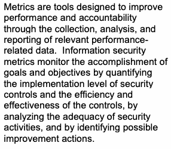
原本PDFの抜粋画像
原本PDFの抜粋画像
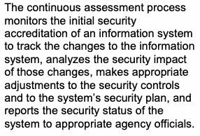
原本PDFの抜粋画像
原本PDFの抜粋画像
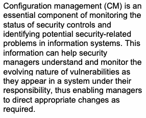
原本PDFの抜粋画像
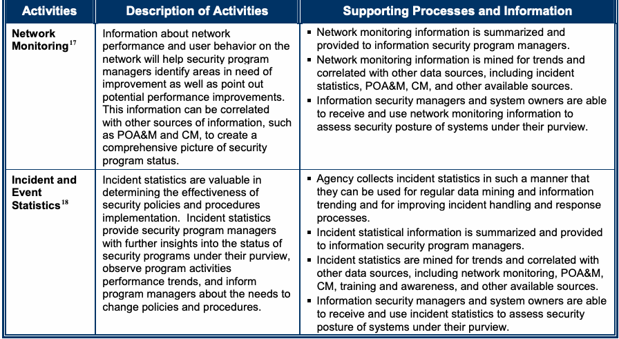
原本PDFの抜粋画像
原本PDFの抜粋画像
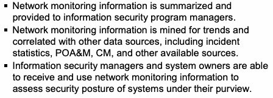
原本PDFの抜粋画像
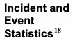
2.3 Information Security Governance Challenges and Keys to Success
2.3 情報セキュリティガバナンスの課題と成功の鍵
There are many diverse, and sometimes conflicting, priorities an organization must account for in meeting information security governance requirements. These criteria present challenges an organization is likely to face in its efforts to establish information security governance.
組織が情報セキュリティガバナンスの要件を満たすには、多様で、ときには相反する優先事項を考慮しなければならない。これらの基準は、情報セキュリティガバナンスの確立に取り組む組織が直面しうる課題となる。
未レビュー訳Some of the most common challenges include:
よく見られる課題には、次のものがある。
•Balancing extensive requirements originating from multiple governing bodies. Several different governing and oversight bodies establish governance and information security requirements for the federal government. While these requirements are seldom contradictory, they are not always complementary, and organizations may be faced with the challenge of implementing different compliance measures and monitoring these measures for reporting purposes.
•複数の統治機関から生じる広範な要件の調整。連邦政府のガバナンスおよび情報セキュリティ要件は、複数の統治・監督機関が定めている。これらの要件が相互に矛盾することはまれだが、常に補完し合うとは限らない。そのため組織は、異なる遵守措置を実施し、報告のために各措置を監視するという課題に直面することがある。
未レビュー訳•Balancing legislation and agency-specific policy. Agencies may have more stringent requirements that go beyond those required by information security legislation, regulation, and directives.
•法令と機関固有の方針の調整。機関には、情報セキュリティに関する法令、規則、指令が求める水準を超える、より厳格な要件がある場合がある。
•Maintaining currency. Governance standards and guidance evolve to support different requirements, and new legislation is frequently introduced.
•最新性の維持。ガバナンスの規格と指針は異なる要件に対応するために変化し、新たな法令も頻繁に導入される。
•Prioritizing available funding according to requirements. Increased competition for limited federal budgets and resources requires that agencies allocate available funding toward their highest-priority information security investments.
•要件に応じた利用可能な資金の優先配分。限られた連邦予算と資源をめぐる競争が激化するなか、機関は利用可能な資金を、優先度が最も高い情報セキュリティ投資に配分する必要がある。
Information security governance provides a framework for establishing and maintaining an information security program that will evolve with the organization it supports. The following list is a summary of good information security governance practices that are critical for ensuring the security of enterprise information assets:
情報セキュリティガバナンスは、支援対象となる組織とともに進化する情報セキュリティプログラムを確立し、維持するための枠組みを提供する。組織の情報資産の安全を確保するうえで重要な、情報セキュリティガバナンスの優れた実践を次にまとめる。
未レビュー訳•Information security activities should be governed based on relevant requirements, including laws, regulations, and organizational policies.
•情報セキュリティ活動は、法律、規則、組織の方針など、関連する要件に基づいて統治すべきである。
未レビュー訳•Senior managers should be actively involved in establishing information security governance framework and the act of governing the agency’s implementation of information security.
•上級管理者は、情報セキュリティガバナンスの枠組みの確立、および機関における情報セキュリティの実施を統治する行為に、積極的に関与すべきである。
•Information security responsibilities must be assigned and carried out by appropriately trained individuals.
•情報セキュリティ上の責任を割り当て、適切な訓練を受けた人員がこれを遂行しなければならない。
•Individuals responsible for information security within the agency should be held accountable for their actions or lack of actions.
•機関内で情報セキュリティを担当する個人は、自らの行動または不作為について説明責任を負うべきである。
•Information security priorities should be communicated to stakeholders of all levels within an organization to ensure a successful implementation of an information security program.
•情報セキュリティプログラムを適切に実施するため、情報セキュリティ上の優先事項を組織内のあらゆる階層の利害関係者に伝えるべきである。
•Information security activities must be integrated into other management activities of the enterprise, including strategic planning, capital planning, and enterprise architecture.
•情報セキュリティ活動を、戦略計画、資本計画、エンタープライズアーキテクチャなど、組織の他の管理活動に統合しなければならない。
•Information security organization structure should be appropriate for the organization it supports and should evolve with the organization, if the organization undergoes change.
•情報セキュリティ組織の構造は、支援する組織に適したものとし、組織に変化があれば、それに応じて進化させるべきである。
•Information security managers should continuously monitor the performance of the security program/effort for which they are responsible, using available tools and information.
•情報セキュリティ管理者は、利用可能なツールと情報を用いて、自らが責任を負うセキュリティプログラムまたは取り組みのパフォーマンスを継続的に監視すべきである。
•Information discovered through monitoring should be used as an input into management decisions about priorities and funding allocation to effect the improvement of security posture and the overall performance of the organization.
•監視で得られた情報を、セキュリティ態勢と組織全体のパフォーマンスを改善するための優先事項や資金配分に関する経営上の意思決定に役立てるべきである。
Websites: www.csrc.nist.gov
ウェブサイト：www.csrc.nist.gov
未レビュー訳www.gao.gov
www.gao.gov
未レビュー訳www.whitehouse.gov/omb/
www.whitehouse.gov/omb/
未レビュー訳References: Public Law 107-347 [H.R. 2458], The E-Government Act of 2002, Title III of this Act is the Federal Information Security Management Act of 2002 (FISMA), December 17, 2002.
参考文献：公法107-347［H.R. 2458］、2002年電子政府法。同法第III編は、2002年連邦情報セキュリティ管理法（FISMA）である。2002年12月17日。
未レビュー訳Office of Management and Budget Circular A-130, Management of Federal Information Resources, November 2000.
行政管理予算局（OMB）通達A-130『連邦情報資源の管理』、2000年11月。
Chapter 3
第3章
未レビュー訳3. System Development Life Cycle
3. システム開発ライフサイクル
未レビュー訳The system development life cycle (SDLC) is the overall process of developing, implementing, and retiring information systems through a multistep process from initiation, analysis, design, implementation, and maintenance to disposal. There are many different SDLC models and methodologies, but each generally consists of a series of defined steps or phases.
システム開発ライフサイクル（SDLC）とは、情報システムを開始、分析、設計、実装、保守、廃棄へと段階的に開発・実装し、最終的に退役させる全体的なプロセスである。SDLCにはさまざまなモデルや方法論があるが、いずれも一般に、定義された一連の手順またはフェーズから成る。
未レビュー訳Various SDLC methodologies have been developed to guide the processes involved, and some methods work better than others for specific types of projects. Regardless of the type of the life cycle used by an organization, information security must be integrated into the SDLC to ensure appropriate protection for the information that the system is intended to transmit, process, and store. Security is most useful and cost-effective when such integration begins with a system development or integration project initiation, and is continued throughout the SDLC through system disposal. A number of federal laws and directives require integrating security into the SDLC, including the Federal Information Security Management Act (FISMA) and Office of Management and Budget (OMB) Circular A-130, Appendix III.
SDLCの各種方法論は、そのプロセスを導くために開発されており、プロジェクトの種類によって適した方法は異なる。組織がどのライフサイクルを使用する場合でも、システムが伝送、処理、保存する情報を適切に保護するため、情報セキュリティをSDLCに統合しなければならない。セキュリティの統合は、システム開発または統合プロジェクトの開始時から始め、システムの廃棄までSDLC全体を通じて継続すると、最も有用で費用対効果が高い。連邦情報セキュリティ管理法（FISMA）や行政管理予算局（OMB）通達A-130付録IIIなど、多くの連邦法令および指令が、SDLCへのセキュリティ統合を求めている。
未レビュー訳This section provides a general overview of security integration into the SDLC and is not intended to prescribe any particular model or methodology. Each phase of the SDLC includes a minimum set of information security-related activities required to effectively incorporate security into a system. An organization can either use a generic SDLC as described in this section or develop a tailored SDLC that meets its specific needs. National Institute of Standards and Technology (NIST) Special Publication (SP) 800-64 Rev. 1, Security Considerations in the Information System Development Life Cycle, presents a framework for incorporating security into all phases of the SDLC, depicted in Figure 3-1, to ensure the selection, acquisition, and use of appropriate and cost-effective security controls.19
本節では、セキュリティをSDLCに統合する方法の一般的な概要を示すが、特定のモデルや方法論を定めるものではない。SDLCの各フェーズには、システムにセキュリティを効果的に組み込むために必要な、情報セキュリティ関連活動の最低限の集合が含まれる。組織は、本節に記載する汎用SDLCを使用するか、固有のニーズを満たすよう調整したSDLCを策定できる。NIST特別刊行物（SP）800-64改訂第1版『情報システム開発ライフサイクルにおけるセキュリティ上の考慮事項』は、図3-1に示すように、SDLCの全フェーズへセキュリティを組み込む枠組みを示し、適切で費用対効果の高いセキュリティ管理策の選定、取得、利用を確実にする。19
未レビュー訳3.1 Initiation Phase
3.1 開始フェーズ
All information technology (IT) projects have a starting point, what is commonly referred to as the initiation phase. During the initiation phase, the organization establishes the need for a particular system and documents its purpose. The information to be processed, transmitted, or stored is typically evaluated, as well as who is required access to such information and how (in high-level terms). In addition, it is often determined whether the project will be an independent information system or a component of an already-defined system. A preliminary risk assessment is typically conducted in this phase, and security planning documents are initiated (system security plan).
すべての情報技術（IT）プロジェクトには開始点があり、一般に開始フェーズと呼ばれる。このフェーズでは、組織が特定のシステムの必要性を確立し、その目的を文書化する。通常、処理、伝送、または保存する情報を評価し、誰がその情報へのアクセスを必要とするか、またどのようにアクセスするかを大まかに検討する。さらに、プロジェクトが独立した情報システムとなるか、すでに定義されたシステムの構成要素となるかを決定することも多い。このフェーズでは通常、予備的なリスク評価を実施し、セキュリティ計画文書（システムセキュリティ計画）の作成を開始する。
未レビュー訳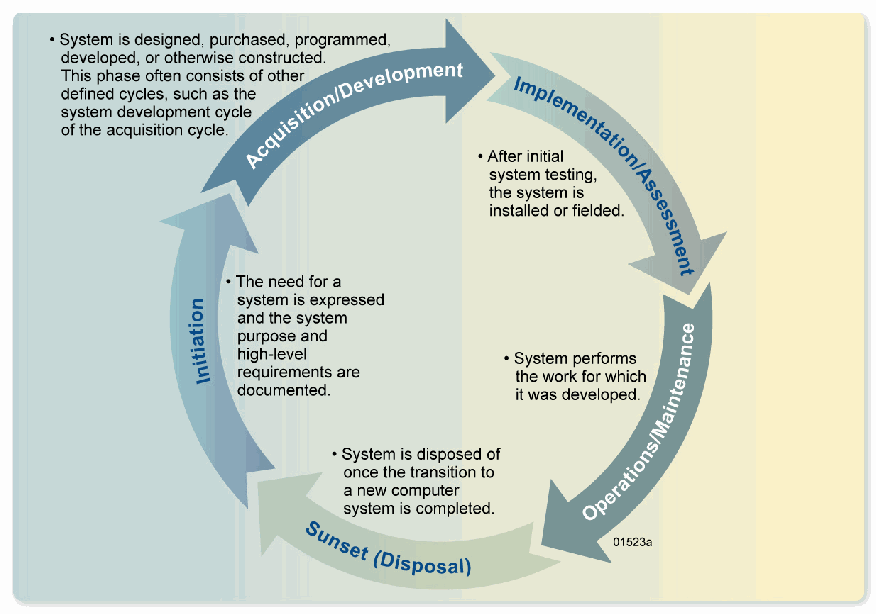
システム開発ライフサイクルを循環図で示す。開始、調達・開発、導入・評価、運用・保守、廃止・処分の各段階と、それぞれの主な活動を示す。
Figure 3-1. System Development Life Cycle
図3-1 システム開発ライフサイクル
未レビュー訳Once these tasks have been completed and a need has been recognized for a new or enhanced IT product or service, several processes must take place before the project is approved, to include clearly defining project goals and defining high-level information security requirements. Typically, during this phase, the organization defines high-level information security policy requirements as well as the enterprise security system architecture.
これらの作業を完了し、新規または強化されたIT製品・サービスの必要性が認識された後、プロジェクトの承認前にいくつかのプロセスを実施する必要がある。その中には、プロジェクト目標と高水準の情報セキュリティ要件を明確に定義することが含まれる。通常、このフェーズでは、組織が高水準の情報セキュリティ方針要件と、エンタープライズセキュリティシステムアーキテクチャを定義する。
未レビュー訳3.2 Development/Acquisition Phase
3.2 開発／取得フェーズ
During this phase, the system is designed, purchased, programmed, developed, or otherwise constructed. This phase often consists of other defined cycles, such as the system development cycle or the acquisition cycle.
このフェーズでは、システムを設計、購入、プログラミング、開発、またはその他の方法で構築する。このフェーズには、システム開発サイクルや取得サイクルなど、定義された別のサイクルが含まれることも多い。
未レビュー訳During the first part of the development/acquisition phase, the organization should simultaneously define the system’s security and functional requirements. These requirements can be expressed as technical features (e.g., access control), assurances (e.g., background checks for system developers), or operational practices (e.g., awareness and training). During the last part of this phase, the organization should perform developmental testing of the technical and security features/functions to ensure that they perform as intended prior to launching the implementation and integration phase.
開発／取得フェーズの前半では、組織はシステムのセキュリティ要件と機能要件を同時に定義すべきである。これらの要件は、技術的機能（アクセス制御など）、保証（システム開発者の身元調査など）、または運用慣行（意識向上および訓練など）として表すことができる。このフェーズの後半では、組織は技術・セキュリティ機能の開発試験を実施し、実装・統合フェーズの開始前に、それらが意図したとおりに機能することを確認すべきである。
未レビュー訳3.3 Implementation Phase
3.3 実装フェーズ
未レビュー訳In the implementation phase, the organization configures and enables system security features, tests the functionality of these features, installs or implements the system, and finally, obtains a formal authorization to operate the system. Design reviews and system tests should be performed before placing the system into operation to ensure that it meets all required security specifications. In addition, if new controls are added to the application or the support system, additional acceptance tests of those new controls must be performed. This approach ensures that new controls meet security specifications and do not conflict with or invalidate existing controls. The results of the design reviews and system tests should be fully documented, updated as new reviews or tests are performed, and maintained in the official organization records.
実装フェーズでは、組織がシステムのセキュリティ機能を構成して有効化し、その機能を試験し、システムを設置または実装したうえで、システム運用の正式な認可を取得する。必要なセキュリティ仕様を満たすことを確認するため、システムを運用に移す前に設計レビューとシステム試験を実施すべきである。また、アプリケーションまたはサポートシステムに新たな管理策を追加した場合は、それらの管理策について追加の受入試験を実施しなければならない。この方法により、新しい管理策がセキュリティ仕様を満たし、既存の管理策と競合したり無効化したりしないことを確認する。設計レビューとシステム試験の結果はすべて文書化し、新たなレビューや試験の実施に応じて更新し、組織の正式な記録として保管すべきである。
未レビュー訳3.4 Operations/Maintenance Phase
3.4 運用／保守フェーズ
An effective security program demands comprehensive and continuous understanding of program and system weaknesses. In the operation and maintenance phase, systems and products are in place and operating, enhancements and/or modifications to the system are developed and tested, and hardware and/or software is added or replaced. During this phase, the organization should continuously monitor performance of the system to ensure that it is consistent with preestablished user and security requirements, and needed system modifications are incorporated.
効果的なセキュリティプログラムには、プログラムとシステムの弱点を包括的かつ継続的に把握することが求められる。運用／保守フェーズでは、システムと製品が配備され稼働しており、機能強化や変更を開発・試験し、ハードウェアやソフトウェアを追加または交換する。このフェーズでは、システムのパフォーマンスが事前に定めた利用者要件およびセキュリティ要件に適合していることを確認し、必要なシステム変更を取り込むため、組織はシステムのパフォーマンスを継続的に監視すべきである。
未レビュー訳For configuration management (CM) and control, it is important to document the proposed or actual changes in the security plan of the system. Information systems are typically in a constant state of evolution with upgrades to hardware, software, firmware, and possible modifications to the surrounding environment where the system resides. Documenting information system changes and assessing the potential impact of these changes on the security of a system is an essential part of continuous monitoring, and key to avoiding a lapse in the system security accreditation.20
構成管理（CM）と制御では、システムのセキュリティ計画に、提案された変更または実際に行われた変更を記録することが重要である。情報システムは、ハードウェア、ソフトウェア、ファームウェアのアップグレードや、システムが設置されている周辺環境の変更により、通常、絶えず変化している。情報システムの変更を記録し、その変更がシステムのセキュリティに与える潜在的影響を評価することは、継続的監視の重要な部分であり、システムのセキュリティ認可が途切れるのを防ぐうえで重要である。20
未レビュー訳Monitoring security controls helps to identify potential security-related problems in the information system that are not identified during the security impact analysis, which is conducted as part of the CM and control process.
セキュリティ管理策を監視すると、CMおよび制御プロセスの一環として実施するセキュリティ影響分析では特定されなかった、情報システム内のセキュリティ関連問題の可能性を特定できる。
未レビュー訳3.5 Disposal Phase
3.5 廃棄フェーズ
未レビュー訳The disposal phase of the system life cycle refers to the process of preserving (if applicable) and discarding system information, hardware, and software. This step is extremely important because during this phase, information, hardware, and software are moved to another system, archived, discarded, or destroyed. If performed improperly, the disposal phase can result in the unauthorized disclosure of sensitive data. When archiving information, organizations should consider the need and methods for future retrieval. While electronic information is relatively easy to store and retrieve, problems can arise if the technology used to create the records is no longer available in the future as a result of obsolescence or incompatibility with new technologies. Additionally, the organization should consider what measures must be taken for the future use of data that has been encrypted, such as taking appropriate steps to ensure the secure long-term storage of cryptographic keys. It is equally important to consider legal requirements for records retention when disposing of information systems. For federal systems, system management officials should consult with their office responsible for retaining and archiving federal records.
システムライフサイクルの廃棄フェーズとは、システム情報、ハードウェア、ソフトウェアを（該当する場合は）保存し、廃棄するプロセスを指す。この段階は、情報、ハードウェア、ソフトウェアを別のシステムへ移行、アーカイブ、廃棄、または破壊するため、極めて重要である。適切に実施しないと、機微データが権限なく開示されるおそれがある。情報をアーカイブする際、組織は将来の検索の必要性と方法を検討すべきである。電子情報は比較的容易に保存・検索できるが、記録の作成に使った技術が陳腐化したり、新技術との互換性を失ったりして将来利用できなくなると、問題が生じることがある。さらに組織は、暗号化されたデータを将来利用するために必要な措置を検討すべきであり、暗号鍵を安全に長期保管するための適切な手順を講じる必要がある。情報システムを廃棄する際は、記録保存に関する法的要件も同様に重要である。連邦システムについては、システム管理担当者は、連邦記録の保存とアーカイブを担当する部局に相談すべきである。
未レビュー訳The removal of information from a storage medium, such as a hard disk or tape, is called sanitization. There are four categories of media sanitization: disposal, clearing, purging, and destroying.21 Because different kinds of sanitization provide different levels of information protection, organizations should use information security requirements as a guide for selecting the sanitization method that best suits their needs.
ハードディスクやテープなどの記憶媒体から情報を取り除くことをサニタイズという。媒体のサニタイズには、廃棄、クリア、パージ、破壊の4つの区分がある。サニタイズの種類によって情報保護の水準が異なるため、組織は情報セキュリティ要件を手引きとして、自らのニーズに最適な方法を選ぶべきである。21
未レビュー訳3.6 Security Activities within the SDLC
3.6 SDLCにおけるセキュリティ活動
Security activities must be integrated into the SDLC to ensure proper identification, design, integration, and maintenance of applicable security controls throughout an information system’s life cycle as summarized in Table 3-1.
表3-1にまとめるように、情報システムのライフサイクル全体を通じて該当するセキュリティ管理策を適切に特定、設計、統合、維持するため、セキュリティ活動をSDLCに統合しなければならない。
未レビュー訳Table 3-1. Security Activities in the SDLC
表3-1 SDLCにおけるセキュリティ活動
未レビュー訳| SDLC Activities | Security Activities and Definitions |
| A. Initiation Phase | |
| Needs Determination | (cid:131) Define a problem that might be solved through product acquisition. Traditional components of needs determination are establishing a basic system idea, defining preliminary requirements, assessing feasibility, assessing technology, and identifying a form of approval to further investigate the problem. (cid:131) Establish and document need and purpose of the system. |
| Security Categorization | (cid:131) Identify information that will be transmitted, processed, or stored by the system and define applicable levels of information categorization according to NIST SP 800-60 and FIPS 199.22The handling and safeguarding of personally identifiable information should be considered. |
| Preliminary Risk Assessment23 | (cid:131) Establish an initial description of the basic security needs of the system. A preliminary risk assessment should define the threat environment in which the system or product will operate. |
| B. Development/Acquisition Phase | |
| Requirements Analysis/ Development | (cid:131) Conduct a more in-depth study of the need that draws on and further develops the work performed during the initiation phase. (cid:131) Develop and incorporate security requirements into specifications. (cid:131) Analyze functional requirements that may include system security environment (e.g., enterprise information security policy and enterprise security architecture) and security functional requirements. (cid:131) Analyze assurance requirements that address the acquisition and product integration activities required and assurance evidence needed to produce the desired level of confidence that the product will provide required information security features correctly and effectively. The analysis, based on legal, regulatory, protection, and functional security requirements, will be used as the basis for determining how much and what kinds of assurance are required. |
| Risk Assessment24 | (cid:131) Conduct formal risk assessment to identify system protection requirements. This analysis builds on the initial risk assessment performed during the initiation phase, but will be more in- depth and specific. Security categories derived from FIPS 199 are typically considered during the risk assessment process to help guide the initial selection of security controls for an information system. |
原本PDFの抜粋画像
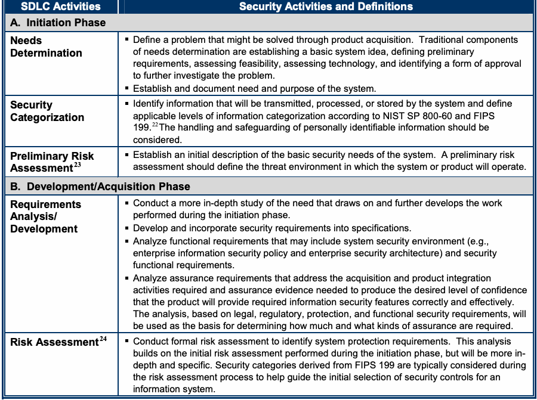
| SDLCの活動 | セキュリティ活動と定義 |
| A. 開始フェーズ | |
| ニーズの特定 | (cid:131) 製品取得によって解決できる可能性のある問題を定義する。ニーズ特定の従来の要素には、基本的なシステム構想の確立、予備要件の定義、実現可能性の評価、技術の評価、問題をさらに調査するための承認方法の特定が含まれる。 (cid:131) システムの必要性と目的を確立し、文書化する。 |
| セキュリティ分類 | (cid:131) システムが伝送、処理、または保存する情報を特定し、NIST SP 800-60およびFIPS 199に従って該当する情報分類レベルを定義する。22 個人を特定できる情報の取扱いと保護を考慮すべきである。 |
| 予備的リスク評価23 | (cid:131) システムの基本的なセキュリティニーズの初期記述を作成する。予備的リスク評価では、システムまたは製品が稼働する脅威環境を定義すべきである。 |
| B. 開発／取得フェーズ | |
| 要件分析／開発 | (cid:131) 開始フェーズで行った作業を基にし、さらに発展させて、ニーズをより詳細に調査する。 (cid:131) セキュリティ要件を策定し、仕様に組み込む。 (cid:131) エンタープライズ情報セキュリティ方針やエンタープライズセキュリティアーキテクチャなどのシステムセキュリティ環境を含みうる機能要件と、セキュリティ機能要件を分析する。 (cid:131) 必要な保証水準を製品が正しく効果的に提供するという確信を得るために必要な、製品の取得・統合活動と保証の証拠を定める保証要件を分析する。法的、規制上、保護上、機能上のセキュリティ要件に基づくこの分析を、必要な保証の程度と種類を決める根拠として使用する。 |
| リスク評価24 | (cid:131) システムの保護要件を特定するため、正式なリスク評価を実施する。この分析は開始フェーズで実施した初期リスク評価を基礎とするが、さらに詳細かつ具体的に行う。情報システムのセキュリティ管理策を初期選定する際の指針として、通常はリスク評価でFIPS 199に基づくセキュリティ分類を考慮する。 |
| Cost Considerations and Reporting25 | (cid:131) Determine how much of the product acquisition and integration cost can be attributed to information security over the life cycle of the system. These costs include hardware, software, personnel, and training. |
| Security Planning26 | (cid:131) Fully document agreed-upon security controls, planned or in place. (cid:131) Develop the system security plan. (cid:131) Develop documents supporting the agency’s information security program (e.g., CM plan, contingency plan, incident response plan, security awareness and training plan, rules of behavior, risk assessment, security test and evaluation results, system interconnection agreements, security authorizations/accreditations, and plans of action and milestones [POA&M]). (cid:131) Develop awareness and training requirements, including user manuals and operations/administrative manuals. |
| Security Control Development27 | (cid:131) Develop, design, and implement security controls described in the respective security plans. For information systems currently in operation, the security plans for those systems that may call for developing additional security controls to supplement the controls already in place or for those that may call for modifying selected controls that are deemed to be less than effective. |
| Developmental Security Test and Evaluation | (cid:131) Test security controls developed for a new information system or product for proper and effective operation. Some types of security controls (primarily those controls of a nontechnical nature) cannot be tested and evaluated until the information system is deployed; these controls are typically management and operational controls. (cid:131) Develop test plan/script/scenarios. |
| Other Planning Components | (cid:131) Ensure that all necessary components of the product acquisition and integration process are considered when incorporating security into the life cycle. These components include selection of the appropriate contract type, participation by all necessary functional groups within an organization, participation by the certifier and accreditor, and development and execution of necessary contracting plans and processes. |
| C. Implementation Phase | |
| Security Test and Evaluation | (cid:131) Develop test data. (cid:131) Test unit, subsystem, and entire system. (cid:131) Ensure system undergoes technical evaluation (e.g., according to federal laws [Sec. 508], regulations, policies, guidelines, and standards). |
| Inspection and Acceptance | (cid:131) Verify and validate that the functionality described in the specification is included in the deliverables. |
| System Integration/ Installation | (cid:131) Integrate the system at the operational site where it is to be deployed for operation. Enable security control settings and switches in accordance with vendor instructions and proper security implementation guidance. |
| Security Certification28 | (cid:131) Ensure that the controls are effectively implemented through established verification techniques and procedures and give organization officials confidence that the appropriate safeguards and countermeasures are in place to protect the organization’s information. Security certification also uncovers and describes the known vulnerabilities in the information system. Existing security certification may need to be updated to include acquired products. NIST SP 800-37 states that security certification determines the extent to which the security controls in the information system are implemented correctly, operating as intended, and producing the desired outcome with respect to meeting security requirements for the system. |
原本PDFの抜粋画像
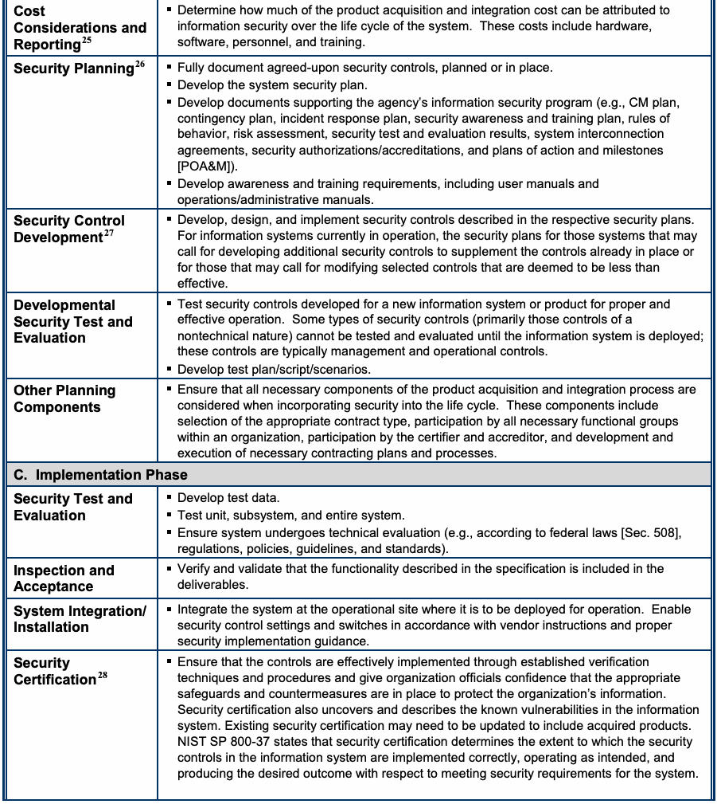
| 費用の検討と報告25 | (cid:131) システムのライフサイクル全体を通じて、製品の取得と統合の費用のうち、情報セキュリティに帰属する額を判断する。これらの費用には、ハードウェア、ソフトウェア、人員、訓練が含まれる。 |
| セキュリティ計画26 | (cid:131) 合意したセキュリティ管理策（計画済みまたは導入済み）をすべて文書化する。 (cid:131) システムセキュリティ計画を作成する。 (cid:131) 機関の情報セキュリティプログラムを支援する文書を作成する（CM計画、緊急時対応計画、インシデント対応計画、セキュリティ意識向上・訓練計画、行動規則、リスク評価、セキュリティ試験・評価結果、システム相互接続協定、セキュリティ認可／認定、行動計画・マイルストーン［POA&M］など）。 (cid:131) 利用者マニュアルや運用／管理マニュアルを含む、意識向上と訓練の要件を策定する。 |
| セキュリティ管理策の策定27 | (cid:131) 各セキュリティ計画に記載されたセキュリティ管理策を策定、設計、実装する。現在稼働中の情報システムについては、既存の管理策を補完する追加管理策の策定、または有効性が不十分と判断された管理策の変更を、セキュリティ計画で求める場合がある。 |
| 開発段階のセキュリティ試験・評価 | (cid:131) 新しい情報システムまたは製品向けに開発したセキュリティ管理策が、適切かつ効果的に動作するか試験する。セキュリティ管理策の一部（主に非技術的管理策）は、情報システムの配備まで試験・評価できない。通常、これらは管理的管理策および運用上の管理策である。 (cid:131) 試験計画／スクリプト／シナリオを作成する。 |
| その他の計画要素 | (cid:131) ライフサイクルにセキュリティを組み込む際に、製品の取得・統合プロセスに必要な要素をすべて考慮する。これには、適切な契約形態の選定、組織内で必要なすべての機能グループの参加、認証者および認定者の参加、必要な契約計画とプロセスの策定・実行が含まれる。 |
| C. 実装フェーズ | |
| セキュリティ試験・評価 | (cid:131) 試験データを作成する。 (cid:131) 単体、サブシステム、システム全体を試験する。 (cid:131) 連邦法令［第508条］、規則、方針、指針、規格などに従い、システムが技術評価を受けるようにする。 |
| 検査と受入れ | (cid:131) 仕様に記載された機能が納入物に含まれていることを検証し、妥当性を確認する。 |
| システム統合／設置 | (cid:131) 運用に配備する場所でシステムを統合する。ベンダーの指示および適切なセキュリティ実装指針に従って、セキュリティ管理策の設定とスイッチを有効にする。 |
| セキュリティ認証28 | (cid:131) 確立された検証技法と手順を通じて管理策が効果的に実装されていることを確認し、組織の情報を保護する適切な安全対策と対抗策が整備されていると組織職員が確信できるようにする。セキュリティ認証では、情報システムの既知の脆弱性も明らかにし、記述する。取得した製品を含めるため、既存のセキュリティ認証を更新する必要が生じる場合がある。NIST SP 800-37によると、セキュリティ認証では、情報システムのセキュリティ管理策が正しく実装され、意図したとおりに運用され、システムのセキュリティ要件を満たすうえで望ましい結果を生んでいる程度を判断する。 |
| Security Accreditation29 | (cid:131) Provide the necessary security authorization of an information system to process, store, or transmit information that is required. This authorization is granted by a senior organization official and is based on the verified effectiveness of security controls to some agreed-upon level of assurance and on an identified residual risk to agency assets or operations. This process determines whether the remaining known vulnerabilities in the information system pose an acceptable level of risk to agency operations, agency assets, or individuals. Upon successful completion of this phase, system owners will either have authority to operate, interim authorization to operate, or denial of authorization to operate the information system. |
| D. Operations/Maintenance Phase | |
| Configuration Management and Control30 | (cid:131) Ensure adequate consideration of the potential security impacts due to specific changes to an information system or its surrounding environment. CM and configuration control procedures are critical to establishing an initial baseline of hardware, software, and firmware components for the information system and for subsequently controlling and maintaining an accurate inventory of any changes to the system. (cid:131) Develop CM plan − Establish baselines − Identify configuration − Describe configuration control process − Identify schedule for configuration audits |
| Continuous Monitoring | (cid:131) Monitor security controls to ensure that controls continue to be effective in their application through periodic testing and evaluation. Security control monitoring (i.e., verifying the continued effectiveness of those controls over time) and reporting the security status of the information system to appropriate agency officials is an essential activity of a comprehensive information security program. Monitor to ensure system security controls are functioning as required. (cid:131) Perform self-administered or independent security audits or other assessments periodically. Types: using automated tools, internal control audits, security checklists, and penetration testing. (cid:131) Monitor system and/or users. Methods: review system logs and reports, use automated tools, review change management, monitor external sources (trade literature, publications, electronic news, etc.), and perform periodic reaccreditation. − POA&Ms − Measurement and metrics − Network monitoring |
| E. Disposal Phase: | |
| Information Preservation | (cid:131) Retain information, as necessary, to conform to current legal requirements and to accommodate future technology changes that may render the retrieval method obsolete. (cid:131) Consult with agency office on retaining and archiving federal records. (cid:131) Ensure long-term storage of cryptographic keys for encrypted data. (cid:131) Determine archive, discard or destroy information. |
| Media Sanitization | (cid:131) Determine sanitization level (overwrite, degauss, or destroy). (cid:131) Delete, erase, and overwrite data as necessary. |
| Hardware and Software Disposal | (cid:131) Dispose of hardware and software as directed by governing agency policy. |
原本PDFの抜粋画像
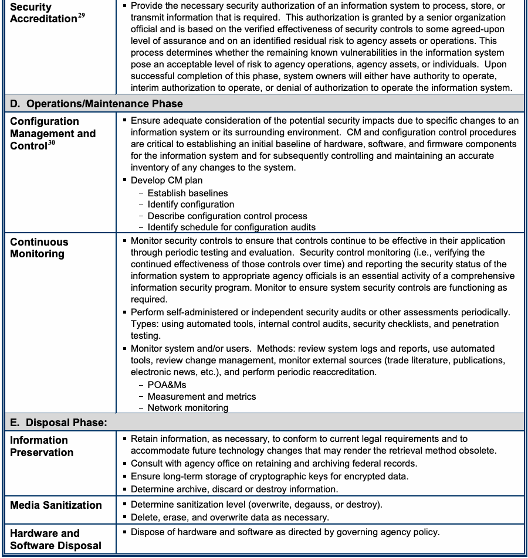
| セキュリティ認定29 | (cid:131) 必要な情報を処理、保存、または伝送する情報システムに、必要なセキュリティ認可を与える。この認可は組織の上級職員が付与し、合意した保証水準に照らしたセキュリティ管理策の有効性の検証結果と、機関の資産または運用に残るリスクの特定に基づく。このプロセスでは、情報システムに残る既知の脆弱性が、機関の運用、資産、または個人にとって許容できるリスクかどうかを判断する。このフェーズが正常に完了すると、システム所有者には、情報システムの運用権限、暫定運用認可、または運用認可の拒否のいずれかが付与される。 |
| D. 運用／保守フェーズ | |
| 構成管理と制御30 | (cid:131) 情報システムまたはその周辺環境の具体的な変更が及ぼしうるセキュリティ影響を十分に考慮する。CMおよび構成制御の手順は、情報システムのハードウェア、ソフトウェア、ファームウェアの初期ベースラインを確立し、その後の変更を制御して正確な一覧を維持するために重要である。 (cid:131) CM計画を策定する。 − ベースラインを確立する。 − 構成を特定する。 − 構成制御プロセスを記述する。 − 構成監査の予定を定める。 |
| 継続的監視 | (cid:131) 定期的な試験と評価を通じて管理策の適用が引き続き有効であることを確認するため、セキュリティ管理策を監視する。セキュリティ管理策の継続的な有効性を時間の経過に沿って検証し、情報システムのセキュリティ状況を適切な機関職員に報告することは、包括的な情報セキュリティプログラムに不可欠である。システムのセキュリティ管理策が要求どおり機能していることを確認する。 (cid:131) 自己実施または独立したセキュリティ監査、その他の評価を定期的に実施する。方法：自動化ツール、内部統制監査、セキュリティチェックリスト、侵入試験を利用する。 (cid:131) システムおよび／または利用者を監視する。方法：システムログと報告書を確認する、自動化ツールを使用する、変更管理を確認する、外部情報源（業界文献、刊行物、電子ニュースなど）を監視する、定期的な再認定を実施する。 − POA&M − 測定値と指標 − ネットワーク監視 |
| E. 廃棄フェーズ： | |
| 情報の保存 | (cid:131) 現行の法的要件を満たし、検索方法を陳腐化させる可能性のある将来の技術変化に対応するため、必要に応じて情報を保持する。 (cid:131) 連邦記録の保存・アーカイブを担当する機関の部局に相談する。 (cid:131) 暗号化データに用いる暗号鍵を長期保管する。 (cid:131) 情報のアーカイブ、廃棄、または破壊の方法を決める。 |
| 媒体のサニタイズ | (cid:131) サニタイズの水準（上書き、消磁、または破壊）を決める。 (cid:131) 必要に応じてデータを削除、消去、上書きする。 |
| ハードウェアおよびソフトウェアの廃棄 | (cid:131) 統治機関の方針に従ってハードウェアおよびソフトウェアを廃棄する。 |
Website: www.csrc.nist.gov
ウェブサイト：www.csrc.nist.gov
未レビュー訳References: Public Law 107-347 [H.R. 2458], The E-Government Act of 2002, Title III of this Act is the Federal Information Security Management Act of 2002 (FISMA), December 17, 2002.
参考文献：公法107-347［H.R. 2458］、2002年電子政府法。同法第III編は、2002年連邦情報セキュリティ管理法（FISMA）である。2002年12月17日。
未レビュー訳Office of Management and Budget Circular A-130, Management of Federal Information Resources, November 2000.
行政管理予算局（OMB）通達A-130『連邦情報資源の管理』、2000年11月。
未レビュー訳Federal Information Processing Standard 199, Standards for Security Categorization of Federal Information and Information Systems, February 2004.
連邦情報処理規格199『連邦情報および情報システムのセキュリティ分類規格』、2004年2月。
Federal Information Processing Standard 200, Minimum Security Requirements for Federal Information and Information Systems, March 2006.
連邦情報処理規格200『連邦情報および情報システムの最低限のセキュリティ要件』、2006年3月。
National Institute of Standards and Technology Special Publication 800-18 Revision 1, Guide for Developing Security Plans for Federal Information Systems, February 2006.
米国国立標準技術研究所（NIST）特別刊行物800-18改訂第1版『連邦情報システムのセキュリティ計画策定ガイド』、2006年2月。
National Institute of Standards and Technology Special Publication 800-30, Risk Management Guide for Information Technology Systems, July 2002.
NIST特別刊行物800-30『情報技術システムのリスク管理ガイド』、2002年7月。
National Institute of Standards and Technology Special Publication 800-37, Guide for the Security Certification and Accreditation of Federal Information System, May 2004.
NIST特別刊行物800-37『連邦情報システムのセキュリティ認証および認定のためのガイド』、2004年5月。
未レビュー訳National Institute of Standards and Technology Special Publication 800-53, Recommended Security Controls for Federal Information Systems, February 2005.
NIST特別刊行物800-53『連邦情報システムの推奨セキュリティ管理策』、2005年2月。
National Institute of Standards and Technology Special Publication 800-60, Guide for Mapping Types of Information and Information Systems to Security Categories, June 2004.
NIST特別刊行物800-60『情報および情報システムの種類をセキュリティカテゴリに対応付けるためのガイド』、2004年6月。
National Institute of Standards and Technology Special Publication 800-64, Security Considerations in the Information System Development Life Cycle, Rev. 1, June 2004.
NIST特別刊行物800-64『情報システム開発ライフサイクルにおけるセキュリティ上の考慮事項』改訂第1版、2004年6月。
National Institute of Standards and Technology Special Publication 800-65, Integrating Security into the Capital Planning and Investment Control Process, January 2005.
NIST特別刊行物800-65『資本計画および投資管理プロセスへのセキュリティの統合』、2005年1月。
未レビュー訳National Institute of Standards and Technology Special Publication 800-88, Guidelines for Media Sanitization, September 2006.
NIST特別刊行物800-88『媒体サニタイズのガイドライン』、2006年9月。
Chapter 4
第4章
未レビュー訳4. Awareness and Training
4. 意識向上および訓練
未レビュー訳The security awareness and training program is a critical component of the information security program. It is the vehicle for disseminating security information that the workforce, including managers, need to do their jobs. In terms of the total security solution, the importance of the workforce in achieving information security goals and the importance of training as a countermeasure cannot be overstated. Establishing and maintaining a robust and relevant information security awareness and training program as part of the overall information security program is the primary conduit for providing the workforce with the information and tools needed to protect an agency’s vital information resources. These programs will ensure that personnel at all levels of the organization understand their information security responsibilities to properly use and protect the information and resources entrusted to them. Agencies that continually train their workforce in organizational security policy and role-based security responsibilities will have a higher rate of success in protecting information.
セキュリティ意識向上・訓練プログラムは、情報セキュリティプログラムの重要な要素である。これは、管理者を含む職員が職務を遂行するために必要なセキュリティ情報を周知する手段である。セキュリティ対策全体において、情報セキュリティ目標の達成に職員が果たす役割と、対抗策としての訓練の重要性は、いくら強調してもしすぎることはない。情報セキュリティプログラム全体の一部として、堅牢で適切な情報セキュリティ意識向上・訓練プログラムを確立し維持することが、機関の重要な情報資源を保護するために必要な情報とツールを職員に提供する主な手段となる。こうしたプログラムにより、組織のすべての階層の職員が、委ねられた情報と資源を適切に利用し保護する責任を理解できる。組織のセキュリティ方針と役割に基づくセキュリティ責任について職員に継続的に訓練する機関は、情報保護の成功率が高まる。
未レビュー訳As cited in audit reports, periodicals, and conference presentations, people are arguably the weakest element in the security formula that is used to secure systems and networks. The people factor, not technology, is a critical factor that is often overlooked in the security equation. It is for this reason that the Federal Information Security Management Act (FISMA) and the Office of Personnel Management (OPM) have mandated that more and better attention must be devoted to awareness activities and role-based training, as they are the only security controls that can minimize the inherent risk that results from the people who use, manage, operate, and maintain information systems and networks.31 Robust and enterprise-wide awareness and training programs are needed to address this growing concern.
監査報告書、定期刊行物、会議発表で指摘されているように、システムやネットワークのセキュリティを確保するうえで、人は最も弱い要素だと言っても過言ではない。セキュリティの方程式で見落とされがちな重要要因は技術ではなく、人である。このため連邦情報セキュリティ管理法（FISMA）と人事管理局（OPM）は、意識向上活動と役割に基づく訓練に、より多く、より適切な注意を払うことを義務付けてきた。これらは、情報システムやネットワークを利用、管理、運用、保守する人に起因する固有のリスクを最小化できる唯一のセキュリティ管理策だからである。この懸念の高まりに対処するには、堅牢で組織全体を対象とする意識向上・訓練プログラムが必要である。31
未レビュー訳National Institute of Standards and Technology (NIST) Special Publication (SP) 800-50, Building an Information Technology Security Awareness and Training Program, provides guidelines that can help federal departments and agencies meet their information security awareness and training responsibilities defined in FISMA and in Office of Management and Budget (OMB) policy. The publication identifies models for building and maintaining a comprehensive awareness and training program as part of an organization’s information security program.
米国国立標準技術研究所（NIST）特別刊行物（SP）800-50『情報技術セキュリティ意識向上・訓練プログラムの構築』は、連邦省庁および機関がFISMAと行政管理予算局（OMB）の方針で定められた情報セキュリティ意識向上・訓練の責任を果たすのに役立つ指針を示す。同刊行物は、組織の情報セキュリティプログラムの一環として、包括的な意識向上・訓練プログラムを構築し維持するためのモデルを示している。
未レビュー訳NIST SP 800-50 is a companion publication to NIST SP 800-16, Information Technology Security Training Requirements: A Role- and Performance-Based Model. NIST SP 800-50 works at a higher strategic level and discusses how to build and maintain an information security awareness and training program; NIST SP 800-16 addresses a more tactical level and discusses the awareness-training-education continuum, role-based training, and course content considerations. The learning continuum is shown in Figure 4-1.
NIST SP 800-50は、NIST SP 800-16『情報技術セキュリティ訓練要件：役割・パフォーマンス基盤モデル』の補完刊行物である。SP 800-50はより上位の戦略レベルを扱い、情報セキュリティの意識向上・訓練プログラムの構築と維持の方法を論じる。一方、SP 800-16はより実務的なレベルを扱い、意識向上・訓練・教育の連続性、役割に基づく訓練、コース内容の検討事項を論じる。学習の連続性を図4-1に示す。
未レビュー訳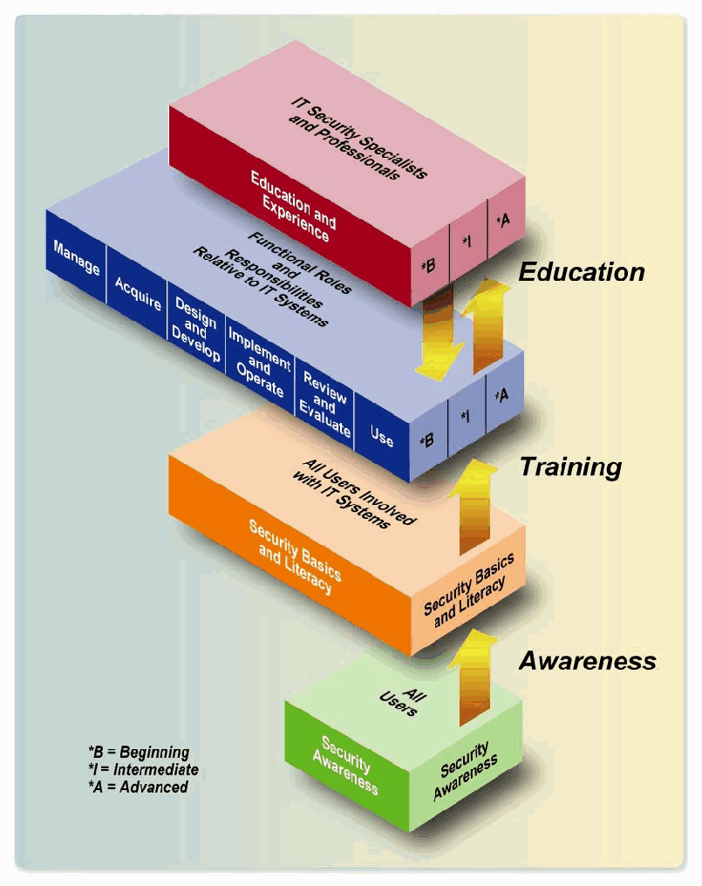
情報セキュリティ学習の連続体を示す図。認識向上を基礎に、訓練、教育へと段階が進み、訓練の初級・中級・上級を示す。
Figure 4-1. The IT Security Learning Continuum
図4-1 ITセキュリティ学習の連続性
未レビュー訳4.1 Awareness and Training Policy
4.1 意識向上・訓練方針
All users have information security responsibilities. FISMA mandates that all users complete “awareness training,” though NIST publications call this “awareness.” FISMA also tasks agencies with identifying and training those individuals who have significant responsibilities for information security, a requirement formalized by OPM’s information security awareness and training policy promulgated in June 2004. OPM’s policy strengthens the FISMA requirement for user exposure to “awareness training” by adding “at least annually,” and requires agencies to provide “role-specific training” in accordance with NIST guidance. Although there is no federal mandate for formal education (provided by colleges or universities) and certification of information security professionals, they are mentioned in this section since some agencies include them as part of a comprehensive training solution for federal employees.
すべての利用者は情報セキュリティ上の責任を負う。FISMAは、すべての利用者に「意識向上訓練」の修了を義務付けているが、NIST刊行物ではこれを「意識向上」と呼ぶ。FISMAはまた、情報セキュリティ上の重要な責任を持つ個人を特定し、訓練するよう機関に求めており、この要件は2004年6月に公布されたOPMの情報セキュリティ意識向上・訓練方針で正式化された。OPM方針は、利用者に「意識向上訓練」を受けさせるFISMA要件を強化し、「少なくとも毎年」実施することを加えるとともに、NIST指針に従って「役割に応じた訓練」を提供するよう機関に求めている。大学が提供する正式な教育や情報セキュリティ専門家の資格認定を連邦政府が義務付けているわけではないが、包括的な連邦職員向け訓練ソリューションの一部に含める機関もあるため、本節で取り上げる。
未レビュー訳4.2 Components: Awareness, Training, Education, and Certification
4.2 構成要素：意識向上、訓練、教育、資格認定
An agency’s information security program policy should contain a clear and distinct section devoted to agency-wide requirements for the awareness and training program. Although security awareness and training is generally referred to as “a” program, many organizations consider awareness and training to be two distinct functions, each with separate purposes, goals, and approaches. Proper implementation of these components (with consideration of options like education and professional certification) promotes professional development, which leads to a high-performance workforce.
機関の情報セキュリティプログラム方針には、機関全体の意識向上・訓練プログラム要件を明確に独立した節として含めるべきである。セキュリティ意識向上と訓練は一般に「ひとつの」プログラムと呼ばれるが、多くの組織では、意識向上と訓練を目的、目標、方法がそれぞれ異なる2つの機能とみなしている。教育や専門資格の選択肢も考慮し、これらの構成要素を適切に実施することで専門能力の開発が促され、高いパフォーマンスを発揮する人材につながる。
未レビュー訳Requirements for the security awareness and training program should be documented in the enterprise-level policy and should include:
セキュリティ意識向上・訓練プログラムの要件を組織全体の方針に記載し、次の事項を含めるべきである。
未レビュー訳•Definition of security roles and responsibilities;
•セキュリティ上の役割と責任の定義。
•Development of program strategy and a program plan;
•プログラム戦略とプログラム計画の策定。
•Implementation of the program plan; and
•プログラム計画の実施。
•Maintenance of the security awareness and training program.32
•セキュリティ意識向上・訓練プログラムの維持。32
未レビュー訳4.2.1 Awareness
4.2.1 意識向上
Security awareness is a blended solution of activities that promote security, establish accountability, and inform the workforce of security news. Awareness seeks to focus an individual’s attention on an issue or a set of issues. Awareness is a program that continually pushes the security message to users in a variety of formats.
セキュリティ意識向上とは、セキュリティを促進し、説明責任を確立し、セキュリティに関する最新情報を職員に伝える活動を組み合わせたものである。意識向上の目的は、ある問題または一連の問題に個人の注意を向けることである。さまざまな形式で利用者にセキュリティのメッセージを継続的に伝えるプログラムである。
未レビュー訳An awareness program includes a variety of tools, communication, outreach, and metrics development.
意識向上プログラムには、さまざまなツール、コミュニケーション、アウトリーチ、指標の策定が含まれる。
未レビュー訳•Tools. Awareness tools are used to promote information security and inform users of threats and vulnerabilities that impact their agency and “personal” work environment by explaining the “what” but not the “how” of security, and communicating what is and what is not allowed. Awareness not only communicates information security policies and procedures that need to be followed, but also provides the foundation for any sanctions and disciplinary actions imposed for noncompliance. Awareness is used to explain the rules of behavior for using an agency’s information systems and information and establishes a level of expectation on the acceptable use of the information and information systems. Types of tools include:
•ツール。意識向上ツールは、セキュリティの「方法」ではなく「何か」を説明し、何が許可され何が許可されないかを伝えることで、情報セキュリティを推進し、機関および「個人の」職場環境に影響する脅威と脆弱性を利用者に知らせるために使用する。意識向上は、従う必要のある情報セキュリティ方針と手順を伝えるだけでなく、不遵守に対して科される制裁や懲戒処分の基盤にもなる。意識向上は、機関の情報システムと情報を利用する際の行動規則を説明するために用いられ、情報と情報システムの許容される利用に関する期待水準を確立する。ツールの種類には次のものがある。
– Events, such as a security awareness day; – Promotional materials; – Briefings (program- or system-specific- or issue-specific); and – Rules of behavior.
– セキュリティ意識向上デーなどのイベント。 – 広報資料。 – 説明会（プログラム固有、システム固有、または課題固有）。 – 行動規則。
未レビュー訳•Communication. A large part of an awareness effort is communication with users, managers, executives, system owners, and others. A communications
•コミュニケーション。意識向上活動の大部分は、利用者、管理者、経営幹部、システム所有者などとのコミュニケーションである。コミュニケーション計画
未レビュー訳32 NIST SP 800-50, Building an Information Technology Security Awareness and Training Program, October 2003. plan is needed to identify stakeholders, types of information that is to be disseminated, channels for disseminating information, and the frequency of information exchanges. The plan also identifies whether the communications are one-way or two-way. Activities that support communication include:
32 NIST SP 800-50『情報技術セキュリティ意識向上・訓練プログラムの構築』、2003年10月。計画では、利害関係者、配布する情報の種類、情報を配布する経路、情報交換の頻度を特定する必要がある。また、コミュニケーションが一方向か双方向かも定める。コミュニケーションを支援する活動には次のものがある。
未レビュー訳– Assessment (as is/to be models); – Strategic plan; and – Program implementation.
– 評価（現状／目標モデル）。 – 戦略計画。 – プログラムの実施。
未レビュー訳•Outreach. Outreach is critical for leveraging best practices within the federal sector. It has two elements for intra- and interagency awareness. The intra-agency element promotes internal awareness of information security. A Web portal that provides a one-stop-shop for security information can be an effective outreach tool. Policy, frequently asked questions (FAQs), security e-newsletters, links to resources, and other useful information are easily accessible to all employees. This tool promotes a consistent and standard message. The interagency element promotes sharing among agencies and is used to leverage awareness and training resources.
•アウトリーチ。連邦部門内で優れた実践を活用するには、アウトリーチが不可欠である。機関内および機関間の意識向上という2つの要素がある。機関内の要素は、情報セキュリティに関する内部の意識を高める。セキュリティ情報を一か所で提供するウェブポータルは、効果的なアウトリーチ手段となりうる。方針、よくある質問（FAQ）、セキュリティ関連の電子ニュースレター、資料へのリンクなどの有用な情報を、すべての職員が容易に利用できる。この手段により、一貫性のある標準的なメッセージを伝えられる。機関間の要素は、機関同士の共有を促し、意識向上・訓練の資源を活用するために用いる。
未レビュー訳4.2.2 Training
4.2.2 訓練
Information security training strives to produce relevant and needed security knowledge and skills within the workforce. Training supports competency development and helps personnel understand and learn how to perform their security role. The most important difference between training and awareness is that training seeks to teach skills that allow a person to perform a specific function, while awareness seeks to focus an individual’s attention on an issue or a set of issues.
情報セキュリティ訓練は、職員が必要とする適切なセキュリティ知識と技能を身に付けることを目指す。訓練は能力開発を支援し、職員が自らのセキュリティ上の役割をどのように果たすかを理解し、習得できるようにする。訓練と意識向上の最も重要な違いは、訓練が特定の機能を果たす技能を教えるのに対し、意識向上はある問題または一連の問題に個人の注意を向けることである。
未レビュー訳Role-based training provides security courses that are tailored to the specific needs of each group of people who have been identified as having significant responsibilities for information security in their organization. NIST SP 800-16 provides guidance for establishing role- and performance-based security training programs.
役割に基づく訓練では、組織内で情報セキュリティ上の重要な責任を持つと特定された各人のグループに固有のニーズに合わせて、セキュリティ講座を提供する。NIST SP 800-16は、役割・パフォーマンス基盤のセキュリティ訓練プログラムを確立するための指針を示す。
未レビュー訳4.2.3 Education
4.2.3 教育
Education integrates all of the security skills and competencies of the various functional specialties into a common body of knowledge and adds a multidisciplinary study of concepts, issues, and principles (technological and social). Information security education strives to produce information security specialists and professionals who are capable of vision and proactive response. Several colleges and universities provide academic programs to support the information security needs of the public and private sectors. Many of these schools partner with the federal sector to accomplish research and development tasks to improve information security.
教育では、さまざまな機能分野のセキュリティ技能と能力を共通の知識体系に統合し、技術的・社会的な概念、課題、原則の学際的な学習を加える。情報セキュリティ教育は、将来を見通し、先を見越して対応できる情報セキュリティの専門家を育成することを目指す。公的部門と民間部門の情報セキュリティ上のニーズを支援する学術プログラムを提供する大学も複数ある。こうした大学の多くは連邦部門と連携して、情報セキュリティを向上させる研究開発に取り組む。
未レビュー訳4.2.4 Certification
4.2.4 資格認定
In response to the growing demand for information security personnel within federal agencies, there has been a movement toward increased professional standards for federal and contracted security personnel. This “professionalization” integrates training, education, and experience with an assessment mechanism to validate knowledge and skills, resulting in the “certification” of a predefined level of competence. The relationship among these professional development elements is illustrated in Figure 4-2.
連邦機関で情報セキュリティ人材の需要が高まるなか、連邦職員および契約職員のセキュリティ人材について、専門基準を高める動きが進んでいる。この「専門職化」では、訓練、教育、経験を、知識と技能を検証する評価の仕組みと統合し、あらかじめ定義した能力水準の「資格認定」につなげる。こうした専門能力開発要素の関係を図4-2に示す。
未レビュー訳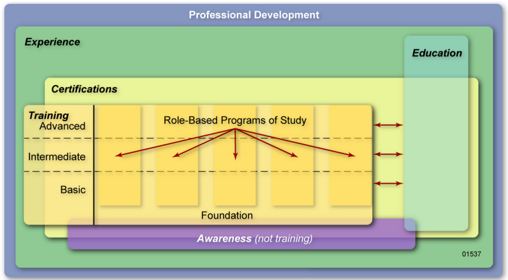
専門能力開発の構成図。認識向上を土台に、基礎から上級までの役割別訓練、資格認定、教育、経験を組み合わせる。
Figure 4-2. Elements of Professional Development
図4-2 専門能力開発の要素
未レビュー訳It should be noted that there are distinct differences among certifications that are offered by a variety of organizations. Primarily, one will encounter certificates of completion, certifications awarded by an industry and/or vendors, and graduate-level certificates awarded by academic institutions:
さまざまな組織が提供する資格認定には明確な違いがあることに留意すべきである。主に、コース修了証、業界またはベンダーが授与する資格、学術機関が授与する大学院レベルの修了証がある。
未レビュー訳•Certificates of completion are provided to individuals solely as a testament to completion of a particular course—these certificates do not make any claims that the individual actually gained knowledge and/or skills.
•コース修了証は、特定のコースを修了した証明としてのみ個人に発行される。この証明書は、本人が実際に知識や技能を習得したことを主張するものではない。
•Industry and/or vendor certification requires a combination of training, education, and experience. These certifications validate knowledge and skills through testing—they provide varying degrees of assurance that an individual has a baseline level of knowledge, skills, and abilities (KSAs) with regard to a predefined body of knowledge. The preparatory work for knowledge-based or skill-based certifications normally includes training in a prescribed body of knowledge or technical curriculum and is supplemented frequently by on-the-job experience.
•業界および／またはベンダーの資格認定には、訓練、教育、経験の組み合わせが必要である。これらの資格認定は、試験を通じて知識と技能を検証する。すなわち、あらかじめ定められた知識体系に関して、個人が基準水準の知識、技能、能力（KSA）を備えていることを、さまざまな程度で保証する。知識ベースまたは技能ベースの資格認定の準備作業には、通常、規定された知識体系または技術カリキュラムの訓練が含まれ、多くの場合、実務経験によって補完される。
未レビュー訳•Graduate certificates in information security are awarded by an academic institution to individuals who successfully complete all graduation requirements for a particular program. These graduate certificates generally require 18 to 21 credit hours of academic study, have at least four required courses, allow for one or two electives, and may require some form of research paper, project, or case study.
•情報セキュリティの大学院修了証は、特定のプログラムの卒業要件をすべて満たした個人に学術機関が授与する。通常、大学院レベルの修了証には18～21単位の学習、少なくとも4つの必修科目、1～2つの選択科目が必要であり、研究論文、プロジェクト、またはケーススタディを求められる場合もある。
未レビュー訳4.3 Designing, Developing, and Implementing an Awareness and Training
4.3 意識向上・訓練プログラムの設計・開発・
未レビュー訳Program
実施
未レビュー訳The development of an information security awareness and training program involves three major steps:
情報セキュリティ意識向上・訓練プログラムの開発には、主に次の3つの段階がある。
未レビュー訳1.Designing the program (including the development of the information security awareness and training program plan);
1.プログラムの設計（情報セキュリティ意識向上・訓練プログラム計画の策定を含む）。
2.Developing the awareness and training material; and
2.意識向上・訓練用資料の開発。
3.Implementing the program.
3.プログラムの実施。
Even a small amount of information security awareness and training can go a long way toward improving the security posture of, and vigilance within, an organization.
情報セキュリティの意識向上・訓練を少し行うだけでも、組織のセキュリティ態勢と警戒意識の向上に大きく役立つ。
未レビュー訳4.3.1 Designing an Awareness and Training Program
4.3.1 意識向上・訓練プログラムの設計
未レビュー訳Awareness and training programs must be designed with the mission of the agency in mind. The awareness and training program must support the business needs of the organization and be relevant to the organization’s culture and information technology architecture. The most successful programs are those that users feel are relevant to the subject matter and issues presented.
意識向上・訓練プログラムは、機関の任務を踏まえて設計しなければならない。プログラムは組織の業務上のニーズを支え、組織文化と情報技術アーキテクチャに適合しなければならない。利用者が、扱う内容や課題に関連性があると感じるプログラムが、最も高い成果を上げる。
未レビュー訳Designing an information security awareness and training program answers the question “What is our plan for developing and implementing awareness and training opportunities that are compliant with existing directives?” In the design step of the program, the agency’s awareness and training needs are identified, an effective agency-wide awareness and training plan is developed, organizational buy-in is sought and secured, and priorities are established.
情報セキュリティ意識向上・訓練プログラムの設計では、「既存の指令に準拠した意識向上・訓練の機会を開発し実施するための計画は何か」という問いに答える。プログラムの設計段階では、機関の意識向上・訓練ニーズを特定し、機関全体で効果を発揮する計画を策定し、組織の賛同を得て確保し、優先事項を定める。
未レビュー訳4.3.2 Developing an Awareness and Training Program
4.3.2 意識向上・訓練プログラムの開発
Once the awareness and training program has been designed, supporting material can be developed. Material should be developed with the following in mind:
意識向上・訓練プログラムを設計したら、支援資料を開発できる。資料は次の点を考慮して開発すべきである。
未レビュー訳•“What behavior do we want to reinforce?” (awareness)
•「どのような行動を定着させたいか」（意識向上）。
•“What skill or skills do we want the audience to learn and apply?” (training and education).
•「受講者にどの技能を習得し、応用してほしいか」（訓練および教育）。
In both cases, the focus should be on specific material that the participants should integrate into their jobs. Attendees will pay attention and incorporate what they see or hear in a session if they feel that the material was developed specifically for them. Any presentation that feels so impersonal and general that it could be given to any audience, will be filed away as just another of the annual “we’re here because we have to be here” sessions. An awareness and training program can be effective, however, if the material is interesting, current, and relevant.
いずれの場合も、参加者が職務に取り入れるべき具体的な資料に焦点を当てるべきである。参加者は、資料が自分たちのために作られたと感じれば、説明に注意を払い、内容を取り入れる。誰に対しても同じように使えるほど一般的で個性のないプレゼンテーションは、毎年行われる「出席しなければならないから参加する」だけの会合として忘れられてしまう。資料が興味深く、最新で、関連性があれば、意識向上・訓練プログラムは効果を発揮できる。
未レビュー訳The awareness audience must include all users in an organization. Users may include employees, contractors, foreign or domestic guest researchers, other agency personnel, visitors, guests, and other collaborators or associates requiring access. The message to be spread through an awareness program, or campaign, should make all individuals aware of their commonly shared information security responsibilities.
意識向上の対象には、組織内のすべての利用者を含めなければならない。利用者には、従業員、請負業者、国内外の客員研究者、他機関の職員、訪問者、来客、その他アクセスを必要とする協力者や関係者が含まれる。意識向上プログラムまたはキャンペーンを通じて伝えるメッセージでは、共通する情報セキュリティ上の責任をすべての個人に認識させるべきである。
未レビュー訳On the other hand, the message in a training class is directed at a specific audience. The message in training material should include everything related to security that attendees need to know in order to perform their jobs. Training material is usually far more in-depth than material used in an awareness session or campaign.
これに対し、訓練講座のメッセージは特定の対象者に向けられる。訓練資料には、受講者が職務を遂行するために知る必要のある、セキュリティ関連のすべての内容を含めるべきである。訓練資料は通常、意識向上の講座やキャンペーンで使用する資料よりもはるかに詳細である。
未レビュー訳4.3.3 Implementing an Awareness and Training Program
4.3.3 意識向上・訓練プログラムの実施
An information security awareness and training program should be implemented only after a needs assessment has been conducted, a strategy has been developed, an awareness and training program plan for implementing that strategy has been completed, and awareness and training material has been developed.
情報セキュリティ意識向上・訓練プログラムは、ニーズ評価を実施し、戦略を策定し、その戦略を実施するためのプログラム計画を完成させ、意識向上・訓練資料を開発した後にのみ実施すべきである。
未レビュー訳The program’s implementation must be fully explained to the organization to achieve support for its implementation and commitment of necessary resources. This explanation includes expectations of agency management and staff support, as well as expected results of the program and benefits to the organization. Funding issues must also be addressed. For example, agency managers must know if the cost to implement the awareness and training program will be totally funded by the chief information officer (CIO) or information security program budget, or if their budgets will be impacted to cover their share of the expense of implementing the program. It is essential that everyone involved in the implementation of the program understand their roles and responsibilities. In addition, schedules and completion requirements must be communicated.
プログラムの実施に対する組織の支持と必要な資源の確保を得るため、実施内容を組織に十分説明しなければならない。説明には、機関の管理者に期待すること、職員の支援、プログラムに期待される成果と組織にもたらされる利点を含める。資金の問題にも対処しなければならない。たとえば、意識向上・訓練プログラムの実施費用を最高情報責任者（CIO）または情報セキュリティプログラムの予算が全額負担するのか、それとも費用の各機関負担分を賄うため管理者の予算にも影響するのかを、機関の管理者が把握する必要がある。プログラム実施に関わる全員が、自らの役割と責任を理解することが不可欠である。さらに、日程と修了要件を伝えなければならない。
未レビュー訳Once the plan for implementing the awareness and training program has been explained to (and accepted by) agency management, the implementation can begin. Since there are several ways to present and disseminate awareness and training material throughout an organization, agencies should tailor their implementation to the size, organization, and complexity of their enterprise.33
意識向上・訓練プログラムの実施計画を機関の管理者に説明し、承認を得たら、実施を開始できる。意識向上・訓練資料を組織全体に提示・配布する方法はいくつかあるため、機関は組織の規模、体制、複雑さに応じて実施方法を調整すべきである。33
未レビュー訳4.4 Post-Implementation
4.4 実施後
An organization’s information security awareness and training program can quickly become obsolete if sufficient attention is not paid to technology advancements, IT infrastructure changes, organizational changes, and shifts in organizational mission and priorities. CIOs and senior agency information security officers (SAISOs) need to be cognizant of this potential problem and incorporate mechanisms into their strategy to ensure that the program continues to be relevant and compliant with overall objectives. Continuous improvement should always be the theme for security awareness and training initiatives, as this is one area where “you can never do enough.” Efforts supporting this post-implementation feedback loop should be developed in consideration of the security organization’s overall ongoing performance measures program.34
技術の進歩、ITインフラストラクチャの変化、組織の変化、組織の任務や優先事項の変化に十分な注意を払わないと、組織の情報セキュリティ意識向上・訓練プログラムはすぐに時代遅れになりうる。CIOと上級情報セキュリティ担当者（SAISO）は、この問題の可能性を認識し、プログラムが全体目標に照らして適切かつ準拠した状態を保つ仕組みを戦略に組み込む必要がある。セキュリティ意識向上・訓練の取り組みでは、継続的改善を常に掲げるべきである。この分野では「やりすぎることはない」からである。実施後のフィードバックループを支援する取り組みは、セキュリティ組織全体の継続的なパフォーマンス測定プログラムを考慮して策定すべきである。34
未レビュー訳4.4.1 Monitoring Compliance
4.4.1 遵守状況の監視
Once the program has been implemented, processes must be put in place to monitor compliance and effectiveness. An automated tracking system should be designed to capture key information on program activity (e.g., courses, dates, audience, costs, sources). The tracking system should capture this data at an agency level, so it can be used to provide enterprise-wide analysis and reporting regarding awareness, training, and education initiatives.
プログラムの実施後は、遵守状況と有効性を監視するプロセスを整備しなければならない。プログラム活動（講座、日付、対象者、費用、情報源など）の主要情報を記録する自動追跡システムを設計すべきである。この追跡システムでは、機関全体の分析と報告に利用できるよう、機関レベルでデータを記録すべきである。
未レビュー訳Tracking compliance involves assessing the status of the program as indicated by the database information and mapping it to standards established by the agency. Reports can be generated and used to identify gaps or problems. Corrective action and necessary follow-up can then be taken. This follow-up may take the form of formal reminders to management; additional awareness, training, or education offerings; and/or the establishment of a corrective plan with scheduled completion dates.
遵守状況の追跡では、データベース情報が示すプログラムの状態を評価し、機関が定めた規格に対応付ける。報告書を生成して、ギャップや問題の特定に利用できる。その後、是正措置を講じ、必要なフォローアップを実施できる。フォローアップには、管理者への正式な注意喚起、追加の意識向上・訓練・教育の提供、または完了予定日を定めた是正計画の策定などがある。
未レビュー訳4.4.2 Evaluation and Feedback
4.4.2 評価とフィードバック
Formal evaluation and feedback mechanisms are critical components of any security awareness and training program. Continuous improvement cannot occur without a good sense of how the existing program is working. In addition, the feedback mechanism must be designed to address objectives initially established for the program. Once the baseline requirements have been solidified, a feedback strategy can be designed and implemented. Various evaluation and feedback mechanisms that can be used to update the awareness and training program plan include surveys, evaluation forms, independent observation, status reports, interviews, focus groups, technology shifts, and/or benchmarking.
正式な評価とフィードバックの仕組みは、あらゆるセキュリティ意識向上・訓練プログラムの重要な構成要素である。既存プログラムの状況を十分に把握しなければ、継続的な改善はできない。また、フィードバックの仕組みは、当初プログラムに設定した目標に対応するよう設計しなければならない。ベースライン要件が固まった後、フィードバック戦略を設計し実施できる。意識向上・訓練プログラム計画の更新に利用できる評価・フィードバックの仕組みには、調査票、評価フォーム、独立した観察、状況報告、インタビュー、フォーカスグループ、技術の変化、ベンチマーキングなどがある。
未レビュー訳A feedback strategy should incorporate elements that address quality, scope, deployment method (e.g., Web-based, onsite, offsite), level of difficulty, ease of use, duration of session, relevancy, currency, and suggestions for modification.
フィードバック戦略には、品質、範囲、提供方法（ウェブ、現地、遠隔など）、難易度、使いやすさ、セッションの長さ、関連性、最新性、変更案を扱う要素を含めるべきである。
未レビュー訳Metrics are essential to feedback and evaluation. They can be used to:
フィードバックと評価には指標が不可欠である。指標は次の目的に利用できる。
•Measure the effectiveness of the security awareness and training program;
•セキュリティ意識向上・訓練プログラムの有効性を測定する。
•Provide information for many of the data requests that an agency must provide with regard to compliance; and,
•機関が遵守状況に関して提出しなければならない多くのデータ要求に情報を提供する。
•Provide an important gauge for demonstrating progress and identifying areas for improvement.
•進捗を示し、改善すべき領域を特定するための重要な尺度を提供する。
4.5 Managing Change
4.5 変化の管理
It is necessary to ensure that the program, as structured, continues to evolve as new technology and associated security issues emerge. Training needs will shift as new skills and capabilities become necessary to respond to new architectural and technology changes. A change in the organizational mission and/or objectives can also influence ideas on how best to design training solutions and content. Emerging issues, such as homeland defense, will also impact the nature and extent of security awareness and training activities necessary to keep users informed and/or trained about the latest threats, vulnerabilities, and countermeasures. New laws and court decisions may also impact agency policy that, in turn, may affect the development and/or implementation of awareness and training material. Finally, as security policies evolve, awareness and training material should reflect these changes.
新しい技術やそれに伴うセキュリティ課題が現れるなかで、現在の構成のプログラムを継続的に進化させる必要がある。新しいアーキテクチャや技術の変化に対応する技能が必要になるにつれて、訓練ニーズも変化する。組織の任務や目標の変化も、訓練の解決策や内容を最適に設計する方法に影響する。国土防衛などの新たな課題も、最新の脅威、脆弱性、対抗策について利用者に知らせ、訓練するために必要なセキュリティ意識向上・訓練活動の性質と範囲に影響する。新しい法律や裁判所の判決も機関方針に影響し、その結果、意識向上・訓練資料の開発や実施に影響する場合がある。最後に、セキュリティ方針が変化するのに合わせて、意識向上・訓練資料にもその変更を反映すべきである。
未レビュー訳4.6 Program Success Indicators
4.6 プログラムの成功指標
CIOs, program officials, and SAISOs should be primary advocates for awareness, training, education, and professionalization. Securing an organization’s information and infrastructure is a team effort, requiring the dedication of capable individuals to carry out their assigned security roles within the organization. Listed below are some key indicators to gauge the support for, and acceptance of, the program:
CIO、プログラム担当者、SAISOは、意識向上、訓練、教育、専門職化の主な推進者となるべきである。組織の情報とインフラストラクチャの保護はチームの取り組みであり、組織内で割り当てられたセキュリティ上の役割を果たす有能な個人の献身を必要とする。以下に、プログラムへの支援と受容を測る主な指標を示す。
未レビュー訳•Key stakeholder demonstrates commitment and support;
•主要な利害関係者が取り組みと支援を示している。
•Sufficient funding is budgeted and available to implement the agreed-upon awareness and training strategy;
•合意した意識向上・訓練戦略を実施するための十分な資金が予算化され、利用可能である。
•Appropriate organizational placement of senior officials with key security responsibilities (CIO, program officials, and SAISO) facilitates strategy implementation;
•主要なセキュリティ責任を持つ上級職員（CIO、プログラム担当者、SAISO）が適切な組織上の位置に配置され、戦略の実施を促進している。
•Infrastructure to support broad distribution (e.g., Web, e-mail, learning management systems) and posting of security awareness and training materials is funded and implemented;
•広範な配布（ウェブ、電子メール、学習管理システムなど）とセキュリティ意識向上・訓練資料の掲載を支援するインフラストラクチャが予算化され、実装されている。
•Executive/senior-level officials deliver messages to staff regarding security (e.g., staff meetings, broadcasts to all users by agency head), champion the program, and demonstrate support for training by committing financial resources to the program;
•経営幹部・上級レベルの職員が、セキュリティに関するメッセージを職員に伝え（職員会議、機関長による全利用者への一斉連絡など）、プログラムを擁護・推進し、プログラムに財源を投じることで訓練への支持を示している。
•Metrics indicate improved security performance by the workforce (e.g., to explain a decline in security incidents or violations, indicate that the gap between existing awareness and training coverage and identified needs is shrinking, the percentage of users being exposed to awareness material is increasing, the percentage of users with significant security responsibilities being appropriately trained is increasing);
•指標は職員のセキュリティパフォーマンスの改善を示している（セキュリティインシデントや違反の減少を説明する、現行の意識向上・訓練の実施範囲と特定済みニーズとのギャップが縮小していることを示す、意識向上資料に触れる利用者の割合が増加していることを示す、情報セキュリティ上の重要な責任を持つ利用者のうち適切な訓練を受けた割合が増加していることを示すなど）。
未レビュー訳•Executives and managers do not use their status in the organization to avoid security controls that are consistently adhered to by the rank and file;
•経営幹部や管理者が、組織内での地位を利用して、一般職員が一貫して遵守しているセキュリティ管理策を回避していない。
未レビュー訳•Level of attendance at security forums/briefings/training is consistently high.
•セキュリティフォーラム、説明会、訓練への出席率が一貫して高い。
•Recognition of security contributions (e.g., awards, contests) is a standard practice within an agency; and
•機関内で、セキュリティへの貢献を表彰やコンテストなどによって認めることが標準的な慣行となっている。さらに、
未レビュー訳•Individuals playing key roles in managing/coordinating the security program demonstrate commitment to the program and motivation to promote the program.
•セキュリティプログラムの管理・調整で重要な役割を担う個人が、プログラムへの取り組みと推進意欲を示している。
Website: www.csrc.nist.gov
ウェブサイト：www.csrc.nist.gov
未レビュー訳References: Public Law 107-347 [H.R. 2458], The E-Government Act of 2002, Title III of this Act is the Federal Information Security Management Act of 2002 (FISMA), December 17, 2002.
参考文献：公法107-347［H.R. 2458］、2002年電子政府法。同法第III編は、2002年連邦情報セキュリティ管理法（FISMA）である。2002年12月17日。
Office of Personnel Management, 5 Code of Federal Regulations, Subpart C, Employees Responsible for the Management or Use of Federal Computer Systems, Section 930.301, Computer Security Training Program.
人事管理局、連邦規則集第5編、サブパートC「連邦コンピュータシステムの管理または利用を担当する職員」、第930.301条「コンピュータセキュリティ訓練プログラム」。
National Institute of Standards and Technology Special Publication 800-16, Information Technology Security Training Requirements: A Role- and Performance-Based Model, April 1998.
米国国立標準技術研究所（NIST）特別刊行物800-16『情報技術セキュリティ訓練要件：役割・パフォーマンス基盤モデル』、1998年4月。
未レビュー訳National Institute of Standards and Technology Special Publication 800-50, Building an Information Technology Security Awareness and Training Program, October 2003.
NIST特別刊行物800-50『情報技術セキュリティ意識向上・訓練プログラムの構築』、2003年10月。
National Institute of Standards and Technology Special Publication 800-55, Security Metrics Guide for Information Technology Systems, July 2003.
米国国立標準技術研究所（NIST）特別刊行物800-55『情報技術システムのセキュリティ指標ガイド』、2003年7月。
Chapter 5
第5章
未レビュー訳5. Capital Planning and Investment
5. 資本計画および投資
未レビュー訳Control
管理
未レビュー訳Increased competition for limited federal budgets and resources requires that agencies allocate available funding toward their highest-priority information security investments to afford the agency and its systems and data, the appropriate degree of security for their needs. This goal can be achieved through a formal enterprise capital planning and investment control (CPIC) process designed to facilitate and control the expenditure of agency funds. The Federal Information Security Management Act (FISMA) and other existing federal regulations charge federal agencies with integrating information security activities and the capital planning and investment control process. The practices discussed in this chapter are designed to help security practitioners and managers identify funding needs to secure systems and provide strategies for obtaining the necessary funding.
限られた連邦予算と資源をめぐる競争が激化するなか、機関は利用可能な資金を優先度が最も高い情報セキュリティ投資に配分し、機関とそのシステムおよびデータに、ニーズに応じた適切な水準のセキュリティを確保する必要がある。この目標は、機関資金の支出を促進し管理するために設計された、正式な組織全体の資本計画・投資管理（CPIC）プロセスによって達成できる。連邦情報セキュリティ管理法（FISMA）およびその他の現行連邦規則は、連邦機関に対し、情報セキュリティ活動を資本計画・投資管理プロセスに統合するよう求めている。本章で説明する実践は、セキュリティ実務者と管理者がシステム保護の資金需要を特定し、必要な資金を確保する戦略を立てるのに役立つ。
未レビュー訳5.1 Legislative Overview
5.1 法令の概要
未レビュー訳Implementation of information security within the federal government is guided by a combination of legislation, rules and regulations, and agency-specific policies. FISMA is the overarching information security legislation for federal information systems. Signed into law in 2002, FISMA:
連邦政府における情報セキュリティの実施は、法令、規則・規制、機関固有の方針を組み合わせて導かれる。FISMAは、連邦情報システムに関する包括的な情報セキュリティ法である。2002年に成立したFISMAは、次を定める。
未レビュー訳•Charges the Office of Management and Budget (OMB) and NIST to develop security standards and identify tolerable security risk levels;
•行政管理予算局（OMB）とNISTに、セキュリティ規格の策定および許容可能なセキュリティリスク水準の特定を求める。
•Makes NIST standards compulsory for all agencies; FISMA eliminated an agency’s ability to obtain waivers on NIST standards (Federal Information Processing Standard [FIPS]); and
•NIST規格をすべての機関に義務付ける。FISMAにより、機関がNIST規格（連邦情報処理規格［FIPS］）の適用免除を得ることはできなくなった。
•Charges agencies to integrate information security into CPIC.
•機関に、情報セキュリティをCPICに統合するよう求める。
•NIST SP 800-53 identifies a set of minimum security controls applicable to information systems based on FIPS 199 categorization (low, moderate, high).
•NIST SP 800-53は、FIPS 199の分類（低、中、高）に基づき、情報システムに適用される最低限のセキュリティ管理策を特定している。
•OMB Circular A-11 directs agencies to complete Exhibit 300s and an Exhibit
•OMB通達A-11は、機関にExhibit 300とExhibit 53の作成を指示している。
未レビュー訳53.The Exhibit 300 reflects an investment’s plan for capital asset management. The Exhibit 300 is an input to the Exhibit 53, which provides the total information technology (IT) and information security spending for the year.
53.Exhibit 300は、投資に関する資本資産管理計画を示す。Exhibit 300はExhibit 53への入力情報となり、Exhibit 53はその年の情報技術（IT）および情報セキュリティへの総支出額を示す。
未レビュー訳•FISMA Report is an annual report to OMB detailing the agency’s security posture and any areas of weakness.35
•FISMA報告書は、機関のセキュリティ態勢と弱点のある領域をOMBに詳述する年次報告書である。35
未レビュー訳•Plan of Action and Milestones (POA&M) documents each agency security weakness, associated corrective action, and the corrective action cost.36
•行動計画・マイルストーン（POA&M）には、各機関のセキュリティ上の弱点、関連する是正措置、その是正措置の費用を記録する。36
未レビュー訳As Figure 5-1 illustrates, the corrective action and cost information contained in the POA&M serve as inputs to the Exhibit 300s and are then rolled into the Exhibit
図5-1に示すように、POA&Mに記載された是正措置と費用の情報はExhibit 300への入力となり、その後Exhibit 53に集約される。
未レビュー訳53.Exhibit 300s and Exhibit 53 are part of the agency’s budget submission to OMB and provide an overview of an agency’s IT portfolio.
53.Exhibit 300とExhibit 53は、機関のOMB予算申請の一部であり、機関のITポートフォリオの概要を示す。
未レビュー訳To facilitate effective implementation of OMB capital planning and NIST security requirements, the Government Accountability Office (GAO) offers a Select-Control-Evaluate investment life-cycle model as a best practices approach to investment management. While not compulsory, the framework articulates key activities for managing IT investments throughout the life cycle. The three phases ensure that investment management practices, including security, are disciplined and thorough throughout each phase of the investment life cycle. Figure 5-1 illustrates the three phases.
OMBの資本計画要件とNISTのセキュリティ要件を効果的に実施できるよう、米国会計検査院（GAO）は、投資管理の優れた実践として「選定・統制・評価（Select-Control-Evaluate）」投資ライフサイクルモデルを提示している。この枠組みは義務ではないが、ライフサイクル全体を通じてIT投資を管理する主要な活動を示す。3つのフェーズにより、セキュリティを含む投資管理の実践が、各フェーズおよび投資ライフサイクル全体を通じて規律正しく徹底される。図5-1に3つのフェーズを示す。
未レビュー訳The Select phase refers to activities involved with assessing and prioritizing current and proposed IT projects based on mission needs and improvement priorities, and then creates a portfolio of IT projects to address these needs and priorities. Typical Select phase activities include screening new projects; analyzing and ranking all projects based on benefit, cost, and risk criteria; selecting a portfolio of projects; and establishing project review schedules.
選定（Select）フェーズは、任務上のニーズと改善の優先事項に基づいて、現行および提案中のITプロジェクトを評価・優先順位付けし、それらのニーズと優先事項に対応するプロジェクトのポートフォリオを作成する活動を指す。典型的な活動には、新規プロジェクトの審査、便益・費用・リスクの基準に基づく全プロジェクトの分析と順位付け、プロジェクトポートフォリオの選定、プロジェクトレビュー日程の設定が含まれる。
未レビュー訳The Control phase refers to activities designated to monitor the investment during its operational phase to determine whether the investment is within the cost and schedule milestones established at the beginning of the investment life cycle. Typical processes involved in the Control phase include using a set of performance measures to monitor the developmental progress for each IT project to enable early problem identification and resolution.
統制（Control）フェーズは、投資ライフサイクルの開始時に定めた費用と日程のマイルストーンの範囲内で投資が進んでいるかを判断するため、運用段階の投資を監視する活動を指す。典型的なプロセスには、各ITプロジェクトの開発進捗を監視する一連のパフォーマンス測定値を利用し、問題を早期に特定して解決することが含まれる。
未レビュー訳The Evaluate phase refers to determining the efficacy of the investment, answering the question, “Did the investment achieve the desired results and performance goals identified during the Select phase?”
評価（Evaluate）フェーズは、投資の有効性を判断し、「選定フェーズで特定した望ましい結果とパフォーマンス目標を投資が達成したか」という問いに答えることを指す。
未レビュー訳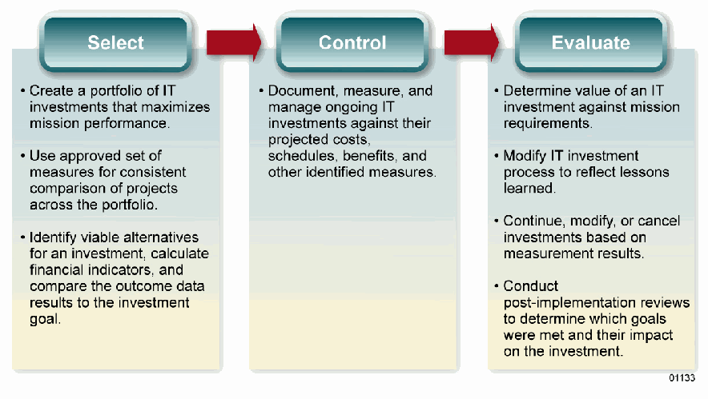
IT投資の選択・管理・評価の循環を示す。選択では投資案の比較、管理では費用や日程の測定、評価では使命への効果を確認し、結果に基づき投資を継続・変更・中止する。
Figure 5-1. Select-Control-Evaluate Investment Life Cycle
図5-1 選定・統制・評価による投資ライフサイクル
未レビュー訳Figure 5-1 illustrates the relationship between security drivers in the GAO Select-Control-Evaluate investment lifecycle and the System Development Life Cycle (SDLC). During the Select phase, security drivers include assessment activities to ensure that IT security investments comply with security requirements. During the Control phase, investments are monitored through the use of security metrics to ensure that security controls are in place and operational, and that investments remain compliant with requirements. During the Evaluate phase, security drivers include self-assessment activities to ensure compliance and media sanitization efforts following removal from operation and prior to disposition.
図5-1は、GAOの選定・統制・評価による投資ライフサイクルとシステム開発ライフサイクル（SDLC）におけるセキュリティ上の推進要因の関係を示す。選定フェーズでは、ITセキュリティ投資がセキュリティ要件に準拠することを確認する評価活動が推進要因となる。統制フェーズでは、セキュリティ管理策が導入され運用されていること、投資が引き続き要件に準拠していることを確認するため、セキュリティ指標を用いて投資を監視する。評価フェーズでは、自己評価による遵守確認と、運用からの撤去後かつ廃棄前に行う媒体サニタイズが推進要因となる。
未レビュー訳5.2 Integrating Information Security into the CPIC Process
5.2 情報セキュリティをCPICプロセスに統合する
未レビュー訳National Institute of Standards and Technology (NIST) Special Publication (SP) 800-65, Integrating IT Security into the Capital Planning and Investment Control Process, provides a seven-step process, illustrated in Figure 5-2, for prioritizing security activities and corrective actions:
米国国立標準技術研究所（NIST）特別刊行物（SP）800-65『ITセキュリティを資本計画・投資管理プロセスに統合する』は、図5-2に示すように、セキュリティ活動と是正措置に優先順位を付ける7段階のプロセスを示す。
未レビュー訳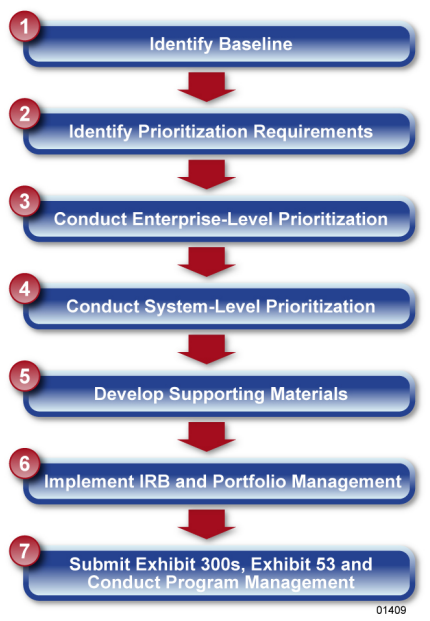
情報セキュリティを資本計画・投資統制に組み込む7段階を示す。基準状態の把握、優先要件の特定、組織全体とシステム単位の優先順位付け、資料作成、ポートフォリオ管理、予算資料の提出、プログラム管理を順に進める。
1. Identify the Baseline: use
1. ベースラインを特定する：
未レビュー訳information security metrics or other available data to baseline the current security posture.
情報セキュリティ指標またはその他の利用可能なデータを用いて、現在のセキュリティ態勢のベースラインを定める。
未レビュー訳2. Identify Prioritization
2. 優先順位付けの要件を特定する：
未レビュー訳Requirements: evaluate security posture against legislative and chief information officer (CIO)-articulated requirements and agency mission.
法令上の要件、最高情報責任者（CIO）が示す要件、機関の任務に照らして、セキュリティ態勢を評価する。
未レビュー訳3. Conduct Enterprise-Level
3. 組織全体の優先順位付けを実施する：
未レビュー訳Prioritization: prioritize potential enterprise-level information security investments against the mission and the financial impact of implementing appropriate security controls.
適切なセキュリティ管理策の実装に伴う任務上および財務上の影響に照らして、組織全体で実施する情報セキュリティ投資候補に優先順位を付ける。
未レビュー訳4. Conduct System-Level
4. システムレベルの
未レビュー訳Prioritization: prioritize potential system-level corrective actions against system category and corrective action impact.
優先順位付けを実施する：システムの分類と是正措置の影響に照らして、システムレベルの是正措置候補に優先順位を付ける。
未レビュー訳5. Develop Supporting Materials:
5. 支援資料を作成する：
未レビュー訳Figure 5-2. Integrating Information Security
図5-2 情報セキュリティの統合
未レビュー訳for enterprise-level investments,
組織全体レベルの投資について、
未レビュー訳into the CPIC Process
CPICプロセスへの
未レビュー訳develop concept paper, business case analysis, and Exhibit 300. For system-level investments, adjust Exhibit 300 to request additional funding to mitigate prioritized weaknesses.
概念書、事業ケース分析、Exhibit 300を作成する。システムレベルの投資では、優先順位を付けた弱点を軽減するために追加資金を求めるよう、Exhibit 300を調整する。
未レビュー訳6. Implement Investment Review Board (IRB) and Portfolio
6. 投資審査委員会（IRB）およびポートフォリオを実施する
未レビュー訳Management: prioritize agency-wide business cases against requirements and CIO priorities and determine investment portfolio.
管理：機関全体のビジネスケースを要件およびCIOの優先事項に照らして優先順位付けし、投資ポートフォリオを決定する。
未レビュー訳7. Submit Exhibit 300s, Exhibit 53, and Conduct Program Management:
7. Exhibit 300sとExhibit 53を提出し、プログラム管理を実施する：
未レビュー訳ensure approved 300s become part of the agency’s Exhibit 53; ensure investments are managed through their life cycle.
承認されたExhibit 300sが機関のExhibit 53に含まれるようにする。投資がライフサイクル全体を通じて管理されるようにする。
未レビュー訳The following sections provide an overview of the integration of information security into the CPIC process to help ensure that corrective actions identified in the annual FISMA reporting process through POA&Ms are incorporated into the CPIC process to deliver maximum security in a cost-effective manner.
以下の各節では、年次FISMA報告プロセスでPOA&Mを通じて特定した是正措置をCPICプロセスに組み込み、費用対効果の高い方法で最大限のセキュリティを実現するため、情報セキュリティをCPICプロセスに統合する方法の概要を示す。
未レビュー訳5.3 Capital Planning and Investment Control Roles and Responsibilities37
5.3 資本計画・投資管理における役割と責任37
未レビュー訳Integrating information security into the CPIC process requires input and collaboration across operating units and lines of business throughout the life cycle of technology investments. Figure 5-3 depicts a hierarchical approach to the CPIC process in which investment decisions are made at both the enterprise and operating-unit levels.
情報セキュリティをCPICプロセスに統合するには、技術投資のライフサイクル全体を通じて、運用部門や事業部門の間で意見を集め、協力する必要がある。図5-3は、組織全体レベルと運用部門レベルの両方で投資判断を行う、階層型のCPICプロセスを示す。
未レビュー訳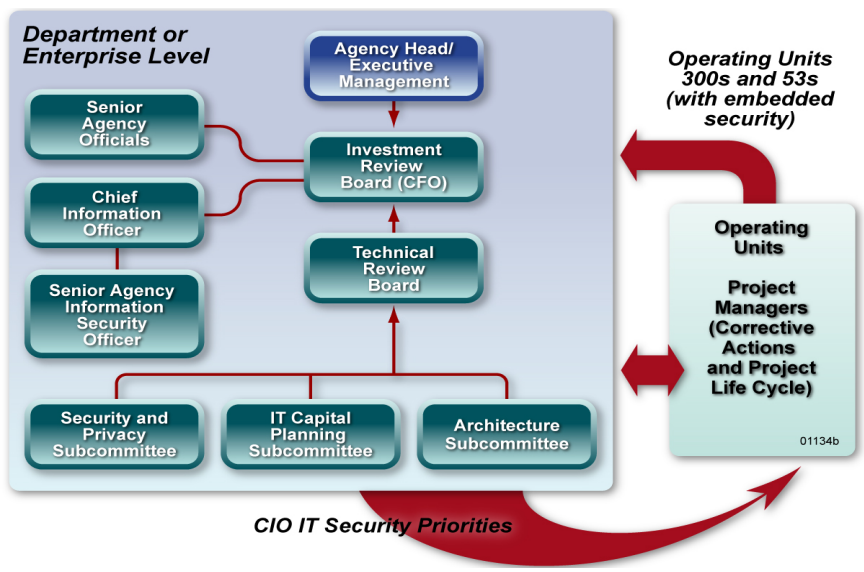
情報技術投資管理の階層図。組織・企業レベルの幹部、CIO、情報セキュリティ担当者、審査委員会と、運用部門のプロジェクト管理者が連携し、IT資本計画にセキュリティとプライバシーの優先事項を反映する。
Figure 5-3. Notional IT Management Hierarchy
図5-3 IT管理階層の概念図
未レビュー訳While specific practices for investment management can differ at the operating-unit level because of varying mission scopes, the process generally mirrors the process at the departmental level. The CIO formulates and articulates information security priorities to the organization to be considered within the context of all agency investments. Priorities may be based on agency mission and executive branch guidance such as the President’s Management Agenda (PMA), OMB guidance, or other external/internal priorities. Examples of security priorities include certifying and accrediting all systems or implementing public key infrastructure (PKI) throughout the enterprise. It is important to note that OMB/executive branch guidance or laws should be ranked highest among these priorities.
任務の範囲が異なるため、運用部門レベルの投資管理の実践はさまざまだが、プロセスは一般に省庁レベルのものを反映する。CIOは、機関のすべての投資の文脈で検討されるよう、情報セキュリティ上の優先事項を組織に策定し伝える。優先事項は、機関の任務や、大統領管理課題（PMA）、OMB指針などの行政府の指針、その他の内外の優先事項に基づく場合がある。セキュリティ上の優先事項の例には、すべてのシステムの認証・認定や、組織全体への公開鍵基盤（PKI）の実装がある。OMBや行政府の指針、法令に基づく優先事項は、これらの中で最も高い順位に置くべきである。
未レビュー訳Once operating units finalize their IT portfolios and budget requests for the budget year, they forward their requests to the agency-level decision makers. At the agency level, several committees evaluate IT portfolios from the operating units as referenced in Figure 5-3, culminating in a review by the IRB. The IRB then decides on an agency-level IT portfolio and forwards recommendations to the agency head for review. Once the agency-level IT portfolio is approved by the agency head, the necessary Exhibit 300s and Exhibit 53 are forwarded to OMB for funding consideration.
運用部門が予算年度のITポートフォリオと予算要求を確定すると、それを機関レベルの意思決定者に提出する。図5-3に示すように、機関レベルでは複数の委員会が各運用部門のITポートフォリオを評価し、最終的にIRBが審査する。IRBは機関レベルのITポートフォリオを決定し、審査のために機関長へ勧告を提出する。機関長がポートフォリオを承認すると、必要なExhibit 300sとExhibit 53を資金審査のためOMBに提出する。
未レビュー訳Many different stakeholders, from information security, capital planning, and executive leadership areas, have key roles and make decisions on integrating information security into the CPIC process with the ultimate goal of forming a well-balanced IT portfolio. Involvement at the enterprise and operating-unit levels throughout the process allows agencies to ensure that CPIC and information security goals and objectives are met. Figure 5-4 identifies typical leading, supporting, or approving roles for each stakeholder as they apply to the integration of security into the CPIC process phases.
情報セキュリティ、資本計画、経営幹部の各領域には多様な利害関係者がいて、それぞれ重要な役割を担い、情報セキュリティをCPICプロセスに統合する判断を行う。最終的な目標は、バランスの取れたITポートフォリオを形成することである。プロセス全体を通じて組織全体レベルと運用部門レベルの両方で関与することで、CPICと情報セキュリティの目標を達成できる。図5-4は、各利害関係者がセキュリティ統合のCPIC各フェーズで果たす、主導、支援、承認の一般的な役割を示す。
未レビュー訳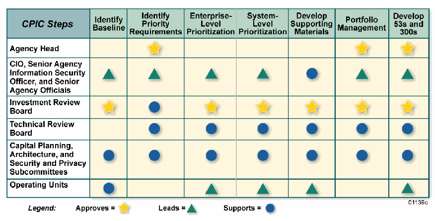
資本計画・投資統制の各段階と担当者の役割を示す表。機関長、情報セキュリティ担当者、投資審査委員会、技術審査委員会、各種小委員会、運用部門について、承認・主導・支援を記号で示す。
Figure 5-4. Roles and Responsibilities throughout the CPIC Process
図5-4 CPICプロセス全体における役割と責任
未レビュー訳5.4 Identify Baseline
5.4 ベースラインの特定
The first step in integrating information security and the CPIC process is to assess the security baseline. The security baseline provides a snapshot of the agency’s compliance with baseline security requirements (BLSRs) and is instrumental in identifying information security strengths and weaknesses. The result of a security baseline analysis enables agency executives to evaluate their information security posture and identify areas for improvement. Agencies can identify their baselines for enterprise-level and system-level investments. System-level investments are those security investments designed to strengthen a discrete system’s security posture, such as strengthening password controls or testing a contingency plan for a particular system. Enterprise-level investments are those security investments that are ubiquitous across the agency and will improve the overall agency’s security posture, such as the acquisition of an enterprise-wide firewall or intrusion detection system (IDS).
情報セキュリティをCPICプロセスに統合する最初の手順は、セキュリティベースラインを評価することである。セキュリティベースラインは、機関がベースライン・セキュリティ要件（BLSR）をどの程度遵守しているかを示す時点の記録であり、情報セキュリティ上の強みと弱点の特定に不可欠である。セキュリティベースライン分析の結果により、機関の経営幹部は情報セキュリティ態勢を評価し、改善すべき領域を特定できる。機関は、組織全体レベルとシステムレベルの投資それぞれについてベースラインを特定できる。システムレベルの投資とは、パスワード管理策の強化や、特定システムの緊急時対応計画の試験など、個別システムのセキュリティ態勢を強化する投資である。組織全体レベルの投資とは、組織全体に広く適用され、組織全体のセキュリティ態勢を改善する投資であり、組織全体に適用するファイアウォールや侵入検知システム（IDS）の取得などがある。
未レビュー訳NIST SP 800-55, Security Metrics Guide for Information Technology Systems, provides guidance on developing and implementing an information security metrics program. Metrics can provide baseline compliance percentages that indicate the existence of adequate security controls, highlight current weaknesses, and identify gaps between actual and desired implementation status of information security controls. The goal of the security baseline establishment exercise is to provide agency officials an understanding of the strengths, weaknesses, and vulnerabilities that exist within the agency’s security controls and to help identify investments that are required to mitigate weaknesses. The resulting vulnerabilities and weaknesses then serve as inputs into the next step of the CPIC process: identifying prioritization criteria.
NIST SP 800-55『情報技術システムのセキュリティ指標ガイド』は、情報セキュリティ指標プログラムの策定と実施に関する指針を示す。指標は、適切なセキュリティ管理策の存在を示すベースラインの遵守率を提示し、現在の弱点を明らかにし、情報セキュリティ管理策の実際の実装状況と望ましい実装状況の差を特定できる。セキュリティベースラインを設定する目的は、機関のセキュリティ管理策に存在する強み、弱点、脆弱性を機関職員が把握し、弱点軽減に必要な投資を特定できるようにすることである。特定された脆弱性と弱点は、CPICプロセスの次の段階である優先順位付け基準の特定に入力される。
未レビュー訳5.5 Identify Prioritization Criteria
5.5 優先順位付け基準の特定
未レビュー訳Available funding does not always allow all security needs identified in the baseline assessment to be addressed immediately. Therefore, requirements must be prioritized to address the most pressing security investment needs first. Specific prioritization criteria will vary from agency to agency depending on specific agency mission and goals and applicable legislation and regulations. Examples of information security priorities include:
利用可能な資金だけでは、ベースライン評価で特定されたすべてのセキュリティニーズに直ちに対応できない場合がある。したがって、差し迫ったセキュリティ投資ニーズから対応できるよう、要件に優先順位を付けなければならない。具体的な優先順位付け基準は、機関の任務や目標、適用される法令や規則に応じて機関ごとに異なる。情報セキュリティ上の優先事項の例を次に示す。
未レビュー訳•Complying with statutory requirements in Clinger-Cohen Act, FISMA, and OMB Circular A-130 guidance;
•Clinger-Cohen法、FISMA、OMB通達A-130の指針にある法定要件を遵守する。
•Implementing a risk-based security program (FISMA, Executive Orders, and supporting NIST standards and guidance); for example, implementing the security controls outlined in NIST SP 800-53;
•リスク基盤のセキュリティプログラムを実施する（FISMA、大統領令、これらを支援するNIST規格および指針）。たとえば、NIST SP 800-53に示されたセキュリティ管理策を実施する。
•Safeguarding national and agency mission-critical assets (Homeland Security Presidential Directives);
•国家および機関の任務に不可欠な資産を保護する（国土安全保障大統領指令）。
•Improving information security program status; and
•情報セキュリティプログラムの状況を改善する。
•Completing a security certification and accreditation of all systems in accordance with NIST SP 800-37, Guide for the Security Certification and Accreditation of Federal Information Systems.
•NIST SP 800-37『連邦情報システムのセキュリティ認証および認定のためのガイド』に従い、すべてのシステムのセキュリティ認証および認定を完了する。
A variety of taxonomies can be used to organize prioritization criteria, including FIPS 200 security control families or other agency-specific categories.
優先順位付け基準の整理には、FIPS 200のセキュリティ管理策ファミリーや、機関固有のその他の分類体系など、さまざまな分類体系を利用できる。
未レビュー訳5.6 Conduct System- and Enterprise-Level Prioritization38
5.6 システムレベルおよび組織全体レベルの優先順位付けを実施する38
未レビュー訳Once agency management and stakeholders agree on the prioritization of investments, the agency can begin the prioritizing process by rank-ordering requirements against the prioritization criteria. The objective of this activity is to fund first the most critical security investment. The next layer of funding should then be applied to the next critical security investment and so forth, until the security budget is entirely expended, or priorities met, whichever comes first.
機関の管理者と利害関係者が投資の優先順位に合意したら、優先順位付け基準に照らして要件を順位付けし、優先順位付けを開始できる。この活動の目的は、最も重要なセキュリティ投資に最初に資金を充てることである。次に重要な投資へ次の資金を充てるという手順を、セキュリティ予算を使い切るか、優先事項を満たすか、いずれか早い方まで続ける。
未レビュー訳Before conducting corrective action prioritization, the agency should allocate the funding necessary to mitigate significant deficiencies and other needs that obviously require attention. These initiatives should then be removed from the prioritization process to avoid duplication of effort.
是正措置に優先順位を付ける前に、機関は重大な欠陥や、明らかに対応が必要なその他のニーズを軽減するための資金を割り当てるべきである。重複作業を避けるため、こうした取り組みはその後、優先順位付けの対象から除外すべきである。
未レビュー訳After identifying the security baseline and prioritization criteria, an agency can prioritize corrective actions at two levels:
セキュリティベースラインと優先順位付け基準を特定した後、機関は2つのレベルで是正措置に優先順位を付けられる。
未レビュー訳1.System-level prioritization: prioritize corrective actions to address system-level security weaknesses and vulnerabilities found during the baseline assessment against the predefined prioritization criteria. This prioritization is performed at the operating unit level by system owners and program managers.39
1.システムレベルの優先順位付け：ベースライン評価で見つかったシステムレベルのセキュリティ上の弱点と脆弱性に対処する是正措置を、事前に定めた優先順位付け基準に照らして順位付けする。運用部門レベルでシステム所有者とプログラム管理者がこれを実施する。39
未レビュー訳2.Enterprise-level prioritization: prioritize enterprise-wide security corrective actions identified during the baseline assessment based on predefined prioritization criteria. This prioritization is performed at the enterprise level by agency information security stakeholders.
2.組織全体レベルの優先順位付け：ベースライン評価で特定した組織全体のセキュリティ是正措置を、事前に定めた優先順位付け基準に基づいて順位付けする。機関の情報セキュリティ利害関係者が組織全体レベルでこれを実施する。
The prioritization methodology relies primarily on existing data sources and inputs. Specific data inputs for the two types of prioritization are highlighted in Table 5-1.
優先順位付けの方法論は、主として既存のデータソースと入力情報に依存する。2種類の優先順位付けに用いる具体的な入力データを表5-1に示す。
未レビュー訳Table 5-1. Prioritization Data Inputs
表5-1 優先順位付けの入力データ
未レビュー訳| Inputs | Source | Data Accessibility |
| System-Level Information | ||
| System categorization | System security certification and accreditation, security plan or categorization according to NIST SP 800- 60 and Federal Information Processing Standard (FIPS) 199.40 | Security certification and accreditation, security plans, and NIST SP 800-60/NIST FIPS 199 categorizations are required for all agency systems. Required data is easily extractable from appropriate documentation. |
| Security compliance | System-level information security metrics or an aggregation of information security compliance percentages from, risk assessments, security certification and accreditation, or other sources, organized according to the prioritization criteria categories | Risk Assessments, and security certification and accreditation activities are required for all agencies. Required data can be easily aggregated in the required form. |
| Corrective action cost | System POA&M | POA&M is a required activity for all agencies. Required data can be easily aggregated in the required form. |
| Enterprise-Level Information | ||
| Stakeholder rankings of enterprise-wide initiatives | Prioritization sessions with agency information security stakeholders | New activity – requires collaboration among agency information security stakeholders. |
| Enterprise-wide initiative information security status | Enterprise-level information security metrics or an aggregation of information security compliance percentages from risk assessments, security certification and accreditation, or other sources, organized according to the prioritization criteria categories | Risk assessments and security certification and accreditation activities are required for all agencies. Required data can be easily aggregated in the required form. |
| Cost of implementing remaining required security controls for enterprise-wide initiatives | Program POA&M | POA&M is a required activity for all agencies. Required data can be easily aggregated in the required form. |
原本PDFの抜粋画像
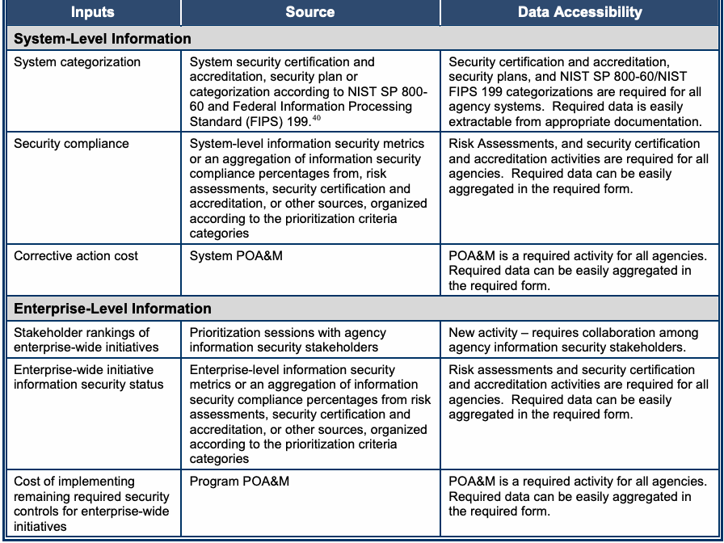
| 入力情報 | 情報源 | データの利用可能性 |
| システムレベルの情報 | ||
| システム分類 | NIST SP 800-60および連邦情報処理規格（FIPS）199に基づくシステムのセキュリティ認証・認定、セキュリティ計画または分類。40 | すべての機関システムでセキュリティ認証・認定、セキュリティ計画、NIST SP 800-60／NIST FIPS 199の分類が必要である。必要なデータは該当文書から容易に抽出できる。 |
| セキュリティ遵守状況 | 優先順位付け基準のカテゴリに従って整理した、システムレベルの情報セキュリティ指標、またはリスク評価、セキュリティ認証・認定、その他の情報源から集約した情報セキュリティ遵守率 | リスク評価、セキュリティ認証・認定活動はすべての機関に必要である。必要な形式でデータを容易に集約できる。 |
| 是正措置の費用 | システムのPOA&M | POA&Mはすべての機関に必須の活動である。必要な形式でデータを容易に集約できる。 |
| 組織全体レベルの情報 | ||
| 組織全体の取り組みに関する利害関係者の順位付け | 機関の情報セキュリティ利害関係者との優先順位付け会合 | 新たな活動であり、機関の情報セキュリティ利害関係者間の協力が必要である。 |
| 組織全体の取り組みに関する情報セキュリティ状況 | 優先順位付け基準のカテゴリに従って整理した、組織全体レベルの情報セキュリティ指標、またはリスク評価、セキュリティ認証・認定、その他の情報源から集約した情報セキュリティ遵守率 | リスク評価、セキュリティ認証・認定活動はすべての機関に必要である。必要な形式でデータを容易に集約できる。 |
| 組織全体の取り組みにおいて、残る必須セキュリティ管理策を実装する費用 | プログラムのPOA&M | POA&Mはすべての機関に必須の活動である。必要な形式でデータを容易に集約できる。 |
Some of the data inputs need to be manipulated further to support the corrective action prioritization process:
優先順位付けプロセスを支援するため、一部の入力データには次の追加処理が必要である。
未レビュー訳•Compliance gap: the difference between the desired and actual compliance with the security requirements. For example, if an information system has completed 80 percent of security certification and accreditation activities, that investment would have a security certification and accreditation compliance gap of 20 percent. (The actual compliance of 80 percent is subtracted from the desired compliance of 100 percent to yield a 20 percent compliance gap.) The smaller the compliance gap, the more compliant the system or enterprise control. For key information security activities, this information is part of the FISMA report.
•遵守ギャップ：望ましいセキュリティ要件の遵守状況と実際の遵守状況との差。たとえば、情報システムがセキュリティ認証・認定活動を80％完了している場合、この投資のセキュリティ認証・認定に関する遵守ギャップは20％となる（望ましい遵守率100％から実際の80％を差し引くと、ギャップは20％）。遵守ギャップが小さいほど、システムまたは組織全体の管理策の遵守度は高い。重要な情報セキュリティ活動について、この情報はFISMA報告書の一部となる。
•Corrective action impact: the ratio of compliance gap to corrective action cost. As shown in Figure 5-5, the corrective action impact is calculated by dividing the compliance gap percentage by the cost to implement the corresponding corrective
•是正措置の影響度：遵守ギャップを是正措置の費用で割った比率。図5-5に示すように、是正措置の影響度は、遵守ギャップの割合を対応する是正措置
未レビュー訳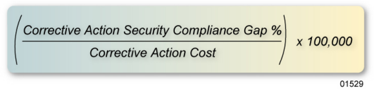
是正措置の影響度を、セキュリティ遵守ギャップの割合を是正措置費用で割り、100,000を掛けて求める式。
action(s). This ratio provides a proportion of result to cost. The higher the impact proportion, the more
の実施費用で割って算出する。この比率は、結果と費用の割合を示す。影響度の比率が高いほど、
未レビュー訳Figure 5-5. Corrective Action Impact Calculation
図5-5 是正措置の影響度の計算
未レビュー訳“bang for the buck” the corrective action will provide. The resulting proportion is multiplied by 100,000 to facilitate further calculations.
是正措置の費用対効果が高くなる。この比率に100,000を掛けて、その後の計算を容易にする。
未レビュー訳After assembling process inputs, conduct the following four steps to complete the prioritization process:
プロセスの入力情報を集めた後、優先順位付けを完了するため、次の4段階を実施する。
未レビュー訳1.Rank-order prioritized corrective action categories according to selected prioritization criteria in order of importance to the agency;
1.選択した優先順位付け基準に従い、優先順位付けされた是正措置カテゴリを機関にとっての重要度順に並べる。
2.Rank-order agency systems according to system category;
2.機関のシステムをシステム分類に従って順位付けする。
未レビュー訳3.Calculate the security compliance gaps at the enterprise and investment levels; and
3.組織全体および投資レベルで、セキュリティ遵守ギャップを算出する。
4.Calculate the corrective action impact at the enterprise and investment levels.
4.組織全体および投資レベルで、是正措置の影響度を算出する。
未レビュー訳Both enterprise- and system-level prioritization should be performed and then overlapped to ensure that appropriate agency priorities receive funding commensurate with their risk levels. Prioritization may be facilitated using a spreadsheet or a more sophisticated automation tool.41 Visualization of the prioritization may be used to facilitate the decision-making process.
組織全体レベルとシステムレベルの両方で優先順位付けを行い、機関の適切な優先事項に、そのリスク水準に応じた資金が配分されるよう結果を重ね合わせるべきである。優先順位付けは、表計算ソフトや、より高度な自動化ツールを利用して実施できる。意思決定を促すため、優先順位付けを可視化してもよい。41
未レビュー訳Figure 5-6 demonstrates an example of a corrective action prioritization visualization approach using notional data. From a system-level perspective, Figure 5-6 plots system category along the vertical axis and corrective action impact along the horizontal axis. The notional agency systems are denoted as the small letters at the top of each quadrant. In this example, systems “N” and “F” were found to have category rankings of “high” and corrective action impacts of “great.”
図5-6は、仮想データを使った是正措置の優先順位付けの可視化例を示す。システムレベルの観点では、縦軸にシステム分類、横軸に是正措置の影響度を配置する。仮想の機関システムは各象限の上部に小文字で示す。この例では、システム「N」と「F」は、システム分類が「高」、是正措置の影響度が「大」と評価された。
未レビュー訳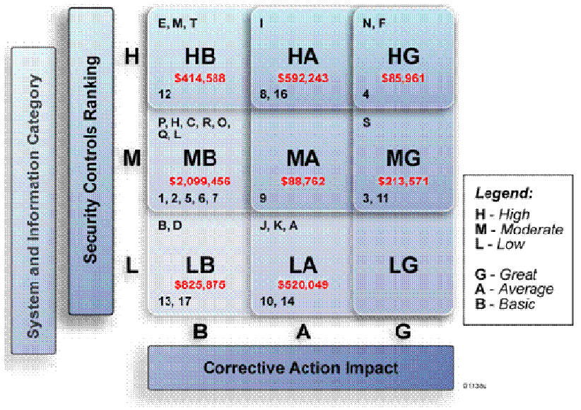
システム情報カテゴリと是正措置の影響度を組み合わせた優先順位付けのマトリクス。高・中・低の分類と費用例を配置し、影響度を大・平均・基本に区分する。
Figure 5-6. Joint Prioritization with Costs
図5-6 費用を考慮した共同優先順位付け
未レビュー訳Drawn from the perspective of the enterprise, Figure 5-6 plots agency-determined security controls importance along the vertical axis and corrective action impact along the horizontal axis. The numbers (1-17) represent the seventeen NIST SP 800-53 security control areas used for this example. Security control area 12 ranked “high” in importance but had a “basic” corrective action impact.
組織全体の観点から、図5-6では、機関が定めたセキュリティ管理策の重要度を縦軸に、是正措置の影響度を横軸に配置する。数字（1～17）は、この例で使うNIST SP 800-53の17のセキュリティ管理策分野を表す。セキュリティ管理策分野12は、重要度が「高」と評価されたが、是正措置の影響度は「基本」だった。
未レビュー訳The dollar figures in Figure 5-6 represent the total cost to implement all corrective actions within that cell. For example, looking at cell HG, it would cost the agency $85,961 to implement corrective actions for systems “N” and “F” and topic area “4.” After plotting all of its systems, the agency should perform executive validation of the placement of the various systems to ensure that stakeholders’ priorities are met.
図5-6の金額は、そのセルに含まれるすべての是正措置を実施する総費用を示す。たとえばセルHGでは、システム「N」と「F」のトピック分野「4」に対する是正措置の実施に85,961ドルかかる。すべてのシステムをプロットした後、利害関係者の優先事項が満たされるよう、機関は各システムの配置について経営幹部の確認を行うべきである。
未レビュー訳Agency information security stakeholders should review the prioritization results to ensure that the prioritization is appropriate and given the opportunity to reprioritize their inputs if the results of the process are found to be unsatisfactory. Assuming the agency stakeholders agree that all prioritized corrective actions are appropriate, as displayed in Figure 5-6, the analysis can proceed accordingly. As indicated by the axes, the implementation of corrective actions should begin with cell HG and proceed diagonally down to cell LB to ensure that the agency implements the most cost-effective, high-impact corrective actions.
機関の情報セキュリティ利害関係者は、優先順位付けの結果が適切か確認し、プロセスの結果に満足できない場合には入力情報の優先順位を見直せるようにすべきである。機関の利害関係者が、図5-6に示す優先順位付け済みの是正措置をすべて適切と認めれば、その分析に従って進められる。軸が示すとおり、費用対効果が最も高い高影響の是正措置から実施できるよう、セルHGから始めて斜め下方向にセルLBまで進めるべきである。
未レビュー訳To continue with the example, assume the notional agency has a $2,000,000 budget to implement information security corrective actions. As Figure 5-6 demonstrates, adding the three highest priority cells together (HG, HA, and MG) brings a total of $891,775, which is nearly half of the corrective action budget. The agency would then move to the next tier of prioritization, or cells HB, MA, and LG. Totaling these cells yields a total of $503,350, which combined with the previous total from HG, HA, and MG, yields a running total of $1,395,125. With $604,875 remaining in the corrective action budget, the agency would proceed with prioritization into cells MB and LA. Totaling those two cells yields $2,619,505. Clearly, this total exceeds the remaining corrective action budget, so stakeholders will have to decide on how to allocate the remaining dollars. Should stakeholders determine that the corrective action impact order (G, A, B) is the driving factor, the corrective actions in cell LA will be implemented. If the stakeholders determine that the system and security control category (H, M, L) is the driving factor, the corrective actions from cell MB will be implemented until the remaining $604,875 is expended.42
例を続けるため、仮想の機関が情報セキュリティ是正措置に2,000,000ドルの予算を持つとする。図5-6に示すように、優先順位が最も高い3つのセル（HG、HA、MG）の合計は891,775ドルで、是正措置予算のほぼ半分になる。次の優先順位に移り、セルHB、MA、LGを合計すると503,350ドルとなる。この額をHG、HA、MGの累計額に加えると、累計は1,395,125ドルとなる。是正措置予算の残額604,875ドルで、次の段階にあるセルMBとLAを優先順位付けすると、2セルの合計は2,619,505ドルとなる。これは残りの予算を超えるため、利害関係者は残額の配分方法を決めなければならない。是正措置の影響度の順位（G、A、B）を重視するなら、セルLAの是正措置を実施する。システムおよびセキュリティ管理策の分類（H、M、L）を重視するなら、残額604,875ドルを使い切るまでセルMBの是正措置を実施する。42
未レビュー訳5.7 Develop Supporting Materials
5.7 支援資料の作成
未レビュー訳Once prioritizing against requirements is completed, operating units are poised to select their investments for the budget year and begin the process of requesting funding from OMB for the next year to implement the corrective actions and security controls.
要件に照らした優先順位付けが完了すると、運用部門は予算年度の投資を選定し、是正措置とセキュリティ管理策を実施するため、翌年度の資金をOMBに要求するプロセスを開始できる。
未レビュー訳The Exhibit 300 is the capture mechanism for all of the analyses and activities required for full internal review (e.g., IRB, CIO). More importantly, Exhibit 300 is the document that OMB uses to assess investments and ultimately make funding decisions, and therefore should be leveraged by agencies to clearly demonstrate the need for life cycle and annual funding requests. The Exhibit 300 is completed for new IT investments and is resubmitted annually for mixed life-cycle and steady-state investments. Operating units should evaluate their prioritized corrective actions and security controls identified during the prioritization process and determine whether the outputs need to be incorporated into an existing investment’s Exhibit 300 or whether they will need to create an independent Exhibit 300 for a new investment.
Exhibit 300は、内部審査（IRB、CIOなど）に必要なすべての分析と活動を記録する仕組みである。さらに重要なのは、Exhibit 300がOMBによる投資評価と最終的な資金決定のための文書であることだ。そのため機関は、ライフサイクル全体および年度ごとの資金要求の必要性を明確に示すために、Exhibit 300を活用すべきである。新規IT投資ではExhibit 300を作成し、ライフサイクルの途中にある投資および定常運用中の投資では毎年再提出する。運用部門は、優先順位付けプロセスで特定した是正措置とセキュリティ管理策を評価し、その結果を既存投資のExhibit 300に組み込むか、新規投資用に独立したExhibit 300を作成するかを判断すべきである。
未レビュー訳5.8 IRB and Portfolio Management
5.8 IRBとポートフォリオ管理
The IRB reviews and selects investments for the agency portfolio based on the Exhibit 300s forwarded by the operating units. Like the prioritization that occurs at the operating-unit level, the IRB typically uses strategic selection criteria to rank-order the investment pool and usually makes decisions based on agency mission and goals, not just on cost. While security is not the typical driving force behind portfolio management, it is a critical element in the investment strategy because it serves as a qualifier for receiving funding and as a business enabler for those functions which support the agency’s mission. After prioritizing and approving select Exhibit 300s, the IRB creates an investment portfolio request for review by OMB.
IRBは、運用部門が提出したExhibit 300に基づいて投資を審査し、機関のポートフォリオに含める投資を選定する。運用部門レベルの優先順位付けと同様に、IRBは通常、戦略的な選定基準で投資候補を順位付けし、費用だけでなく機関の任務と目標に基づいて判断する。セキュリティがポートフォリオ管理を主導することは一般にないが、資金を受けるための条件となり、機関の任務を支える機能を可能にするため、投資戦略の重要な要素である。Exhibit 300を優先順位付けして選定した後、IRBはOMBの審査に向けて投資ポートフォリオ要求を作成する。
未レビュー訳5.9 Exhibits 53 and 300 and Program Management
5.9 Exhibit 53、Exhibit 300およびプログラム管理
Following selection into the agency’s IT portfolio, the agency aggregates Exhibit 300s into the Exhibit 53. The Exhibit 53 provides an overview of the agency’s entire IT portfolio by listing every IT investment, life cycle, and budget-year cost information.
機関のITポートフォリオへの選定後、機関はExhibit 300をExhibit 53に集約する。Exhibit 53は、すべてのIT投資、ライフサイクル、予算年度の費用情報を列挙し、機関のITポートフォリオ全体の概要を示す。
未レビュー訳In addition to containing all investments with Exhibit 300s, the Exhibit 53 also contains other IT investments that do not have Exhibit 300s (e.g., legacy systems with costs below agency thresholds). OMB evaluates an agency’s Exhibit 53 and
Exhibit 300を含むすべての投資に加えて、Exhibit 53にはExhibit 300を持たないその他のIT投資（機関の基準額を下回る費用のレガシーシステムなど）も記載される。OMBは、機関のExhibit 53と
未レビュー訳Exhibit 300s and determines appropriate funding amounts for the budget year based on the justification articulated in the Exhibit 300s. Agencies then receive their budget year funding and must implement or maintain their investments throughout the year by applying allocated funding.
Exhibit 300を評価し、Exhibit 300に記載された正当化の根拠に基づき、予算年度の適切な資金額を決定する。その後、機関は予算年度分の資金を受け取り、配分された資金を用いて年間を通じて投資を実施または維持しなければならない。
未レビュー訳Websites: Exhibit 300 Information: http://www.whitehouse.gov/omb/circulars/a11/current_year/s300.pdf
ウェブサイト：Exhibit 300の情報：http://www.whitehouse.gov/omb/circulars/a11/current_year/s300.pdf
未レビュー訳www.csrc.nist.gov
www.csrc.nist.gov
未レビュー訳References: Public Law 107-347 [H.R. 2458], The E-Government Act of 2002, Title III of this Act is the Federal Information Security Management Act of 2002 (FISMA), December 17, 2002.
参考文献：公法107-347［H.R. 2458］、2002年電子政府法。同法第III編は、2002年連邦情報セキュリティ管理法（FISMA）である。2002年12月17日。
未レビュー訳Office of Management and Budget Circular A-130, Management of Federal Information Resources, November 2000.
行政管理予算局（OMB）通達A-130『連邦情報資源の管理』、2000年11月。
Federal Information Processing Standard 199, Requirements for Security Categorization of Federal Information and Information Systems, February 2004.
連邦情報処理規格199『連邦情報および情報システムのセキュリティ分類要件』、2004年2月。
Federal Information Processing Standard 200, Minimum Security Standards for Federal Information and Information Systems, March 2006.
連邦情報処理規格200『連邦情報および情報システムの最低限のセキュリティ規格』、2006年3月。
National Institute of Standards and Technology Special Publication 800-18, Revision 1, Guide for Developing Security Plans for Federal Information Systems, February 2006.
米国国立標準技術研究所（NIST）特別刊行物800-18改訂第1版『連邦情報システムのセキュリティ計画策定ガイド』、2006年2月。
National Institute of Standards and Technology Special Publication 800-53A, Guide for Assessing the Security Controls in Federal Information Systems (draft), April 2006.
米国国立標準技術研究所（NIST）特別刊行物800-53A『連邦情報システムのセキュリティ管理策評価ガイド』（草案）、2006年4月。
National Institute of Standards and Technology Special Publication 800-37, Guide for the Security Certification and Accreditation of Federal Information Systems, May 2004.
米国国立標準技術研究所（NIST）特別刊行物800-37『連邦情報システムのセキュリティ認証および認定のためのガイド』、2004年5月。
National Institute of Standards and Technology Special Publication 800-53, Revision 1, Recommended Security Controls for Federal Information Systems, February 2006.
米国国立標準技術研究所（NIST）特別刊行物800-53改訂第1版『連邦情報システムの推奨セキュリティ管理策』、2006年2月。
National Institute of Standards and Technology Special Publication 800-55, Security Metrics Guide for Information Technology Systems, July 2003.
米国国立標準技術研究所（NIST）特別刊行物800-55『情報技術システムのセキュリティ指標ガイド』、2003年7月。
National Institute of Standards and Technology Special Publication 800-60, Guide for Mapping Types of Information and Information Systems to Security Categories, June 2004.
NIST特別刊行物800-60『情報および情報システムの種類をセキュリティカテゴリに対応付けるためのガイド』、2004年6月。
未レビュー訳National Institute of Standards and Technology Special Publication 800-65, Integrating Information Security into the Capital Planning and Investment Control Process, January 2005.
米国国立標準技術研究所（NIST）特別刊行物800-65『資本計画・投資管理プロセスへの情報セキュリティの統合』、2005年1月。
Office of Management and Budget Circular A-11, Preparation, Submission, and Execution of the Budget, 2003.
行政管理予算局（OMB）通達A-11『予算の作成、提出、執行』、2003年。
Chapter 6
第6章
未レビュー訳6. Interconnecting Systems
6. システムの相互接続
未レビュー訳A system interconnection is defined as the direct connection of two or more information systems for sharing data and other information resources. Organizations choose to interconnect their information systems for a variety of reasons based on their organizational needs. For example, they may interconnect information systems to exchange data, collaborate on joint projects, or securely store data and backup files.
システム相互接続とは、データやその他の情報資源を共有するために、2つ以上の情報システムを直接接続することである。組織は、組織上のニーズに応じてさまざまな理由から情報システムを相互接続する。たとえば、データ交換、共同プロジェクトでの協力、安全なデータやバックアップファイルの保存のために相互接続する場合がある。
未レビュー訳An interconnection is a direct connection between one organization’s system with another system of the same or different organization through a mechanism by which they are joined (the “pipe” through which data is made available, exchanged, or passed one way only). The “pipe” may be a dedicated line that is owned by one of the organizations or is leased from a third party (e.g., Integrated Services Digital Network [ISDN], T1 or T3 line). Alternately, the systems may be connected over a public network (e.g., Internet) using a virtual private network (VPN).
相互接続とは、データの利用、交換、または一方向の受け渡しを可能にする経路を通じて、ある組織のシステムを同じ組織または別の組織のシステムに直接つなぐことである。この「経路」は、一方の組織が所有するか第三者からリースする専用回線（統合デジタル通信網［ISDN］、T1回線、T3回線など）である場合がある。あるいは、仮想プライベートネットワーク（VPN）を利用して、インターネットなどの公衆網経由でシステムを接続する場合もある。
未レビュー訳Figure 6-1 depicts the concept of information system interconnection.
図6-1に情報システム相互接続の概念を示す。
システムA、B、Cを「パイプ」と呼ぶ接続経路でつなぎ、システム間の情報接続を示す図。
Figure 6-1. Information System Interconnection
図6-1 情報システムの相互接続
未レビュー訳The following are examples of interconnections:
相互接続の例を次に示す。
未レビュー訳•System A is connected to System B over a subscriber line leased by System A or System B.
•システムAは、システムAまたはシステムBがリースした加入者回線を通じてシステムBに接続する。
•System A is segmented such that System A1 is integrated with System A but is under different management control: Authorizing Official (AO).
•システムAは分割されており、システムA1はシステムAに統合されているが、異なる管理統制（認可責任者［AO］）の下にある。
•System B provides data transport services between System A and System C. Here, System B is engaged in two interconnections with Systems A and C.
•システムBは、システムAとシステムCの間でデータ転送サービスを提供する。この場合、システムBはシステムAおよびCと2つの相互接続を行う。
Levels of system interconnection may vary. For example, some organizations may choose to establish a limited interconnection, whereby users are restricted to a single application or file location with rules governing access. Other organizations may establish a broader interconnection, enabling users to access multiple applications or databases. Still other organizations may establish an interconnection that permits full transparency and access across their respective enterprises.
システム相互接続の水準はさまざまである。たとえば、利用者が単一のアプリケーションまたはファイル保存場所だけにアクセスでき、アクセス規則が設けられた限定的な相互接続を選ぶ組織もある。複数のアプリケーションやデータベースへのアクセスを可能にする、より広範な相互接続を確立する組織もある。また、各組織の環境全体で完全な透過性とアクセスを認める相互接続を確立する組織もある。
未レビュー訳Interconnecting information systems can expose the participating organizations to risk. If the interconnection is not properly designed, security failures could compromise the connected systems and their data. Similarly, if one of the connected systems is compromised, the interconnection could be used as a conduit to compromise the other system and its data.
情報システムの相互接続は、参加組織をリスクにさらす可能性がある。相互接続を適切に設計しないと、セキュリティ上の欠陥によって接続先システムやそのデータが侵害されるおそれがある。同様に、接続されたシステムの一つが侵害された場合、相互接続を経路として他方のシステムやそのデータも侵害される可能性がある。
未レビュー訳Federal policy requires that federal agencies establish interconnection security agreements. Specifically, Office of Management and Budget (OMB) Circular A-130, Appendix III, requires that agencies obtain written management authority before connecting their information systems to other systems, based on a mutually acceptable level of risk. National Institute of Standards and Technology (NIST)
連邦方針は、連邦機関に相互接続セキュリティ協定の締結を求めている。具体的には、行政管理予算局（OMB）通達A-130付録IIIにより、相互に受け入れ可能なリスク水準に基づき、情報システムを他のシステムに接続する前に、機関が管理者の書面による承認を得ることが求められる。米国国立標準技術研究所（NIST）
未レビュー訳Special Publication (SP) 800-47, Security Guide for Interconnecting Information Technology Systems, provides detailed guidance on interconnecting information systems.
特別刊行物（SP）800-47『情報技術システム相互接続のためのセキュリティガイド』は、情報システムの相互接続に関する詳細な指針を示す。
未レビュー訳6.1 Managing System Interconnections
6.1 システム相互接続の管理
All federal agencies must explicitly address the subject of interconnecting information systems by establishing formal agreements that specify the technical and security requirements of the interconnection, define the responsibilities of the participating organizations, and specify the rules governing these interconnections. In addition to an A-130, Appendix III, requirement to obtain written management authority before interconnecting information systems, OMB recommends that agencies use NIST SP 800-47 to ensure compliance for connections to non-agency systems.43
すべての連邦機関は、相互接続の技術要件とセキュリティ要件を定め、参加組織の責任を定義し、相互接続を管理する規則を指定する正式な協定を締結して、情報システムの相互接続を明示的に扱わなければならない。情報システムを相互接続する前に管理者の書面による承認を得るという通達A-130付録IIIの要件に加えて、OMBは、機関に属さないシステムとの接続が要件に準拠するよう、NIST SP 800-47を利用することを推奨している。43
未レビュー訳When organizations are properly managing interconnected systems, the added benefits include greater efficiency, centralized access to data, and greater functionality. The security controls of each of the interconnected systems should be evaluated and meet each other’s requirements for implementing security controls that are appropriate for the particular interconnection. Both organizations should specify their requirements regarding the security controls to be implemented in accordance with NIST FIPS 200, Minimum Security Requirements for Federal Information and Information Systems, and NIST SP 800-53, Recommended Security Controls for Federal Information Systems.
組織が相互接続システムを適切に管理すると、効率の向上、データへの一元的なアクセス、機能の拡張などの利点が得られる。相互接続する各システムのセキュリティ管理策を評価し、該当する相互接続に適した管理策の実装について、互いの要件を満たすべきである。両組織は、NIST FIPS 200『連邦情報および情報システムの最低限のセキュリティ要件』とNIST SP 800-53『連邦情報システムの推奨セキュリティ管理策』に従い、実装するセキュリティ管理策の要件を指定すべきである。
未レビュー訳Each system involved in interconnection should be governed by an organization’s AO who has the authority to formally assume responsibility for operating a system at an acceptable level of risk. NIST SP 800-53 specifically defines an information systems connections control (specified in Table 6-1) that organizations are required to implement based on an information system’s security categorization. Since these categorizations and guidance apply to individual systems, agencies should carefully weigh the associated risks when systems differing in configuration or security controls are interconnected.
相互接続に関わる各システムは、許容可能なリスク水準でシステムを運用する責任を正式に引き受ける権限を持つ、組織の認可担当者（AO）の統治下に置くべきである。NIST SP 800-53は、情報システムのセキュリティ分類に基づいて組織が実装しなければならない情報システム接続管理策（表6-1に記載）を具体的に定めている。これらの分類と指針は個別システムに適用されるため、構成やセキュリティ管理策が異なるシステムを相互接続する際、機関は関連リスクを慎重に比較検討すべきである。
未レビュー訳Table 6-1. NIST SP 800-53 Information System Connections Control
表6-1 NIST SP 800-53 情報システム接続管理策
未レビュー訳| Identifier | Title | Control |
| CA-3 | Information System Connections | The organization authorizes all connections from the information system to other information systems outside of the accreditation boundary and regularly monitors/controls the system interconnections. Appropriate organizational officials approve information system interconnection agreements. |
原本PDFの抜粋画像
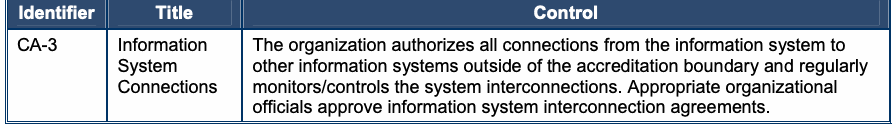
| 識別子 | 表題 | 管理策 |
| CA-3 | 情報システム接続 | 組織は、認定境界の外にある他の情報システムへのすべての接続を認可し、システム相互接続を定期的に監視・制御する。適切な組織職員が情報システム相互接続協定を承認する。 |
It is critical that both organizations maintain clear lines of communication to:
両組織は、次の事項を行えるよう、明確な連絡経路を維持することが重要である。
•Ensure that the interconnection is properly maintained and that security controls remain effective;
•相互接続を適切に維持し、セキュリティ管理策の有効性を保つ。
•Facilitate effective change management activities by making it easy for both sides to notify each other about planned system changes that could affect the interconnection; and
•相互接続に影響しうる計画中のシステム変更を双方が容易に通知できるようにし、効果的な変更管理活動を促進する。
•Enable prompt notification by both sides of security incidents and system disruptions and facilitate coordinated response, if necessary.
•セキュリティインシデントやシステム中断を双方が速やかに通知し、必要に応じて連携した対応を促進する。
Identifying and implementing security controls is vital in protecting the confidentiality, integrity, and availability of the connected systems and the data that is transferred between the systems. If security controls are not in place or if they are configured improperly, the process of establishing the interconnection could expose the information systems to unauthorized access. Agencies should select applicable controls from NIST SP 800-53, based on the security categorization of the systems involved in the interconnection from FIPS 199, Standards for Security Categorization of Federal Information and Information Systems, and NIST SP 800-60, Guide for Mapping Types of Information and Information Systems to Security Categories. The security controls should be appropriately selected in consideration of the systems that will be connected and the environment in which the interconnection will operate.
セキュリティ管理策の特定と実装は、接続システム間で転送されるデータとシステムの機密性、完全性、可用性を保護するうえで不可欠である。セキュリティ管理策が導入されていない場合や、不適切に構成されている場合、相互接続の確立過程で情報システムが不正アクセスにさらされる可能性がある。機関は、FIPS 199『連邦情報および情報システムのセキュリティ分類規格』およびNIST SP 800-60『情報および情報システムの種類をセキュリティカテゴリに対応付けるためのガイド』に基づく相互接続対象システムのセキュリティ分類を考慮し、NIST SP 800-53から該当する管理策を選定すべきである。接続するシステムと相互接続が稼働する環境を考慮し、適切なセキュリティ管理策を選ぶべきである。
未レビュー訳One or both organizations should review the security controls for the interconnection at least annually or whenever a significant change occurs to either system or the operational environment. This review is intended to ensure that all controls are operating properly and still provide the requisite degree of system and data security.44
一方または両方の組織は、少なくとも年1回、またはいずれかのシステムもしくは運用環境に重大な変更があったときに、相互接続のセキュリティ管理策を見直すべきである。この見直しは、すべての管理策が適切に機能し、システムとデータに必要な水準のセキュリティを引き続き提供していることを確認するために行う。44
未レビュー訳6.2 Life-Cycle Management Approach
6.2 ライフサイクル管理の手法
NIST SP 800-47 details a four-phase “life-cycle management” approach for interconnecting information systems that emphasizes proper attention to information security:
NIST SP 800-47は、情報セキュリティに適切に注意を払うことを重視した、情報システム相互接続のための4段階の「ライフサイクル管理」手法を詳述している。
未レビュー訳•Phase 1: Planning the Interconnection;
•フェーズ1：相互接続の計画。
•Phase 2: Establishing the Interconnection;
•フェーズ2：相互接続の確立。
•Phase 3: Maintaining the Interconnection; and
•フェーズ3：相互接続の維持。
•Phase 4: Disconnecting the Interconnection.
•フェーズ4：相互接続の切断。
6.2.1 Phase 1: Planning the Interconnection
6.2.1 フェーズ1：相互接続の計画
The process of connecting two or more information systems begins with a planning phase, where the participating organizations perform preliminary activities and examine all relevant technical, security, and administrative issues. The planning phase ensures that the interconnection will operate as efficiently and securely as possible. Six steps are recommended for planning a system interconnection. Figure 6-2 illustrates the step-by-step process to plan a system interconnection. A more detailed process is described in the following paragraphs.
2つ以上の情報システムを接続するプロセスは計画フェーズから始まる。このフェーズでは参加組織が予備的な活動を行い、関連する技術、セキュリティ、管理上のすべての課題を検討する。計画フェーズでは、相互接続が可能な限り効率的かつ安全に運用されるようにする。システム相互接続の計画には、次の6段階が推奨される。図6-2に、システム相互接続を計画する段階的なプロセスを示す。詳細は以下の段落で説明する。
未レビュー訳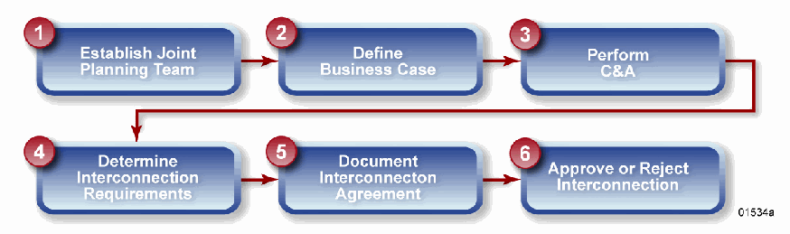
システム接続を計画する6段階。共同計画チームの設置、事業上の根拠の定義、認証・認定の実施、接続要件の決定、接続合意書の作成、承認または却下を矢印で示す。
Figure 6-2. Steps to Plan a System Interconnection
図6-2 システム相互接続を計画する手順
未レビュー訳Step 1: Establish a Joint Planning Team
手順1：合同計画チームの設置
未レビュー訳The organizations should consider establishing a joint planning team composed of appropriate management and technical staff that includes program managers, system security officers, system administrators, network administrators, and system architects. The typical joint planning team is responsible for coordinating all aspects of the planning process and ensuring that it has both clear direction and sufficient resources. It also must have the commitment and support of the system and data owners, and other senior managers.
組織は、プログラム管理者、システムセキュリティ担当者、システム管理者、ネットワーク管理者、システムアーキテクトなど、適切な管理・技術担当者で構成する合同計画チームの設置を検討すべきである。通常、このチームは計画プロセスのすべての側面を調整し、明確な指示と十分な資源を確保する責任を負う。また、システムおよびデータの所有者、その他の上級管理者からの取り組みと支援も得なければならない。
未レビュー訳Step 2: Define the Business Case
手順2：業務上の根拠の定義
未レビュー訳Both organizations should work together to define the purpose of the interconnection, determine how it will support their mission requirements, and identify potential costs and risks. Defining the business case will establish the basis of the interconnection and facilitate the planning process. Factors that should be considered are estimated costs (e.g., staffing, equipment, facilities), expected benefits (e.g., improved efficiency), and potential risks (e.g., technical, legal, and financial).
両組織は協力して、相互接続の目的を定義し、それがそれぞれの任務上の要件をどのように支援するかを判断し、潜在的な費用とリスクを特定すべきである。業務上の根拠を定義すると、相互接続の基盤が確立され、計画プロセスが進めやすくなる。検討すべき要因は、推定費用（人員、機器、施設など）、期待される便益（効率の向上など）、潜在的リスク（技術、法務、財務など）である。
未レビュー訳Step 3: Perform Certification and Accreditation
手順3：認証および認定の実施
未レビュー訳Establishing an interconnection may represent a significant change to the connected systems. Before proceeding further, each organization should consider recertification and reaccreditation of its respective system(s) to verify that security protections remain acceptable. A full security certification and accreditation might not be necessary, however, if the system continues to operate within an acceptable level of risk; in that case, an abbreviated certification and accreditation would suffice.45
相互接続の確立は、接続するシステムに大きな変更をもたらす場合がある。先に進む前に、各組織はそれぞれのシステムの再認証・再認定を検討し、セキュリティ保護が引き続き許容可能であることを確認すべきである。ただし、システムが許容可能なリスク水準で運用され続けている場合、完全なセキュリティ認証・認定は不要なこともあり、その場合は簡略化した認証・認定で十分である。45
未レビュー訳Step 4: Determine Interconnection Requirements
手順4：相互接続要件の決定
未レビュー訳The joint planning team should identify and examine all relevant technical, security, and administrative requirements surrounding the proposed interconnection.
合同計画チームは、提案された相互接続に関係する技術、セキュリティ、管理上のすべての要件を特定し、検討すべきである。
未レビュー訳Step 5: Document Interconnection Agreement
手順5：相互接続協定の文書化
未レビュー訳The interconnection security agreement (ISA) is a security document that specifies the technical and security requirements for establishing, operating, and maintaining the interconnection. It also supports the memorandum of understanding/memorandum of agreement (MOU/MOA) between the organizations. Specifically, the ISA documents the requirements for connecting the information systems, describes the security controls that will be used to protect the systems and data, contains a topological drawing of the interconnection, and provides a signature line.
相互接続セキュリティ協定（ISA）は、相互接続の確立、運用、維持に関する技術要件とセキュリティ要件を定めるセキュリティ文書である。また、組織間の覚書／合意書（MOU/MOA）を補完する。具体的には、ISAは情報システムを接続する要件を文書化し、システムとデータを保護するセキュリティ管理策を説明し、相互接続の構成図を含み、署名欄を設ける。
未レビュー訳The joint planning team should document an agreement governing the interconnection and the terms under which the organizations will abide. The agreement should be based on the team’s review of all relevant technical, security, and administrative requirements identified and examined in Step 4.
合同計画チームは、相互接続を統治し、組織が遵守する条件を定める協定を文書化すべきである。この協定は、手順4で特定・検討した、関連するすべての技術、セキュリティ、管理上の要件をチームがレビューした結果に基づくべきである。
未レビュー訳The MOU/MOA documents the terms and conditions for sharing data and information resources. It defines the purpose of the interconnection, identifies relevant authorities, specifies the responsibilities of each organization, defines the apportionment of costs, and identifies the timeline for terminating or reauthorizing the interconnection. In order to operate as an instrument that can be enforced by any agency that is a party to the interconnection, the MOU/MOA must be signed by an organization official, typically the authorizing official (AO). Lastly, because the ISA and the MOU/MOA may contain sensitive information, the original document and any copies should be protected appropriately against unauthorized disclosure or modification, damage, or destruction.
MOU/MOAは、データおよび情報資源を共有する条件を文書化する。相互接続の目的を定義し、関連する権限を特定し、各組織の責任を明記し、費用の配分を定め、相互接続の終了または再認可の時期を特定する。相互接続の当事者となる機関が執行できる文書として機能するには、通常は認可担当者（AO）など組織の職員がMOU/MOAに署名しなければならない。最後に、ISAとMOU/MOAには機微情報が含まれる場合があるため、原本とすべての写しを、不正な開示または改変、損傷、破壊から適切に保護すべきである。
未レビュー訳Step 6: Approve or Reject System Interconnection
手順6：システム相互接続の承認または拒否
未レビュー訳The joint planning team should submit the ISA and the MOU/MOA to the AO of each organization, requesting approval for the interconnection. Upon receipt, the AOs should review the ISA, the MOU/MOA, and any other relevant documentation or activities. Organizations may combine ISAs and MOU/MOAs to simplify their management processes and reduce paperwork if these two documents fall within the purview of the same AO. When combining ISAs and MOU/MOAs, organizations must ensure that the contents and the intent of these two documents remain unaltered.
合同計画チームはISAとMOU/MOAを各組織のAOに提出し、相互接続の承認を求めるべきである。受領後、AOはISA、MOU/MOA、およびその他の関連文書や活動を確認すべきである。同じAOの権限範囲に両文書が含まれる場合、組織は管理プロセスを簡素化し、書類を減らすため、ISAとMOU/MOAを一つにまとめてもよい。その際、両文書の内容と意図を変更しないようにしなければならない。
未レビュー訳Based on this review, the AOs should decide on one of the following:
この確認に基づき、AOは次のいずれかを決定すべきである。
•Approve the interconnection;
•相互接続を承認する。
•Grant interim approval; or
•暫定承認を付与する。
•Reject the interconnection.
•相互接続を拒否する。
6.2.2 Phase 2: Establishing the Interconnection
6.2.2 フェーズ2：相互接続の確立
After the system interconnection is planned and approved, it can be implemented. The recommended steps for establishing the system interconnection are provided in Figure 6-3.
システム相互接続の計画と承認が完了したら、実装に進める。システム相互接続を確立するための推奨手順を図6-3に示す。
未レビュー訳システム接続を確立する3段階。実施計画の策定、計画の実行、接続の有効化を順に示す。
Figure 6-3. Recommended Steps for Establishing the Interconnection
図6-3 相互接続の確立に推奨される手順
未レビュー訳Step 1: Develop an Implementation Plan
手順1：実装計画の作成
未レビュー訳To ensure that the information systems are connected properly and securely, the joint planning team should develop a system interconnection implementation plan. At a minimum, the implementation plan should:
情報システムが適切かつ安全に接続されるよう、合同計画チームはシステム相互接続の実装計画を作成すべきである。実装計画には最低限、次を含めるべきである。
未レビュー訳•Describe the information systems that will be connected;
•接続する情報システムを記述する。
•Identify the sensitivity or classification level of data that will be made available, exchanged, or passed one way across the interconnection;
•相互接続を通じて利用可能にされる、交換される、または一方向に受け渡されるデータの機微度または分類レベルを特定する。
•Identify personnel who will establish and maintain the interconnection and specify their responsibilities;
•相互接続を確立・維持する担当者を特定し、責任を明記する。
•Identify implementation tasks and procedures;
•実装作業と手順を特定する。
•Identify and describe security controls that will be used to protect the confidentiality, integrity, and availability of the connected systems and data;
•接続システムとデータの機密性、完全性、可用性を保護するために使用するセキュリティ管理策を特定し、説明する。
•Provide test procedures and measurement criteria to ensure that the interconnection operates properly and securely;
•相互接続が適切かつ安全に運用されることを確認する試験手順と測定基準を定める。
未レビュー訳•Specify training requirements for users, including a training schedule; and
•訓練日程を含め、利用者向け訓練の要件を指定する。
未レビュー訳•Cite or include all relevant documentation, such as system security plans, design specifications, and standard operating procedures (SOPs).
•システムセキュリティ計画、設計仕様、標準業務手順書（SOP）など、関連するすべての文書を引用または添付する。
未レビュー訳Step 2: Execute the Implementation Plan
手順2：実装計画の実行
未レビュー訳After the implementation plan is developed, it should be reviewed and approved by senior members of the planning team and then executed. A list of recommended tasks for establishing an interconnection includes:
実装計画を作成したら、計画チームの上級メンバーがレビューして承認したうえで実行すべきである。相互接続の確立に推奨される作業には次のものがある。
未レビュー訳•Implement or configure security controls;
•セキュリティ管理策を実装または構成する。
•Install or configure hardware and software;
•ハードウェアおよびソフトウェアを導入または構成する。
•Integrate applications;
•アプリケーションを統合する。
未レビュー訳•Conduct operational and security assessments;
•運用およびセキュリティの評価を実施する。
未レビュー訳•Conduct security training and awareness;
•セキュリティ訓練と意識向上を実施する。
未レビュー訳•Update system security plans; and
•システムセキュリティ計画を更新する。
未レビュー訳•Perform recertification and reaccreditation.
•再認証と再認定を実施する。
Procedures associated with each task should be described in the implementation plan.
各作業に関連する手順を実装計画に記載すべきである。
未レビュー訳Step 3: Activate the Interconnection
手順3：相互接続の有効化
未レビュー訳Both parties should activate the interconnection following the implementation plan execution. Each agency should closely and frequently examine the system’s audit logs and the types of assistance requested by the system’s users during this time to ensure that it operates properly and securely. Lastly, the appropriate agency should promptly document and address any security weaknesses or problems.
両当事者は、実装計画の実行後に相互接続を有効化すべきである。この間、各機関は、システムが適切かつ安全に動作するよう、システムの監査ログと利用者が求めた支援の種類を綿密かつ頻繁に確認すべきである。最後に、該当する機関はセキュリティ上の弱点や問題を速やかに文書化し、対処すべきである。
未レビュー訳6.2.3 Phase 3: Maintaining the Interconnection
6.2.3 フェーズ3：相互接続の維持
未レビュー訳After the interconnection is established, the participating organizations must actively maintain it to ensure that it operates properly and securely. The following activities are recommended for maintaining the interconnection:
相互接続の確立後、参加組織は相互接続を適切かつ安全に運用するため、積極的に維持しなければならない。相互接続を維持するため、次の活動が推奨される。
未レビュー訳•Maintain the equipment;
•機器を保守する。
•Manage user profiles;
•利用者プロファイルを管理する。
•Conduct security reviews;
•セキュリティレビューを実施する。
•Analyze audit logs;
•監査ログを分析する。
•Report and respond to security incidents;
•セキュリティインシデントを報告し、対応する。
•Coordinate contingency planning activities;
•緊急時対応計画の活動を調整する。
•Perform change management; and
•変更管理を実施する。
•Maintain system security plans.
•システムセキュリティ計画を維持する。
6.2.4 Phase 4: Disconnecting the Interconnection
6.2.4 フェーズ4：相互接続の切断
Phase-out may either be planned or it may be an emergency. Organizations may wish to restore some of the disconnections but not others.
終了は計画的な場合も緊急の場合もある。組織は、切断した接続の一部を復旧し、他は復旧しないことを選ぶ場合がある。
未レビュー訳6.3 Terminating Interconnection
6.3 相互接続の終了
未レビュー訳An organization might have a variety of reasons to terminate an interconnection, for instance, changed business needs, cost considerations, or changes in system configuration. The decision to terminate the interconnection should be made by the system owner with the advice of appropriate management and technical staff. Before terminating the interconnection, the initiating party should provide written notice to the receiving party. In turn, the receiving party should acknowledge receipt of the notification. The notification should describe the reason(s) for the disconnection, provide the proposed timeline for the disconnection, and identify technical and management staff that will conduct the disconnection.
業務上のニーズの変化、費用の検討、システム構成の変更など、組織が相互接続を終了する理由はさまざまである。終了の決定は、適切な管理・技術担当者の助言を得てシステム所有者が行うべきである。相互接続を終了する前に、開始側は受信側へ書面で通知すべきである。受信側は通知を受領したことを確認すべきである。通知には、切断の理由、予定する切断日程、切断を実施する技術・管理担当者を記載すべきである。
未レビュー訳The schedule for terminating the interconnection should permit a reasonable time period for internal business planning so both sides can make appropriate arrangements. In addition, staff from both organizations should coordinate to determine the logistics of the disconnection and the disposition of shared data, including purging and overwriting sensitive data. The disconnection should be conducted when the impact on users is minimal. Following the disconnection, each organization should update its system security plan and related documents.
相互接続の終了日程には、双方が適切な準備を整えられるよう、内部の業務計画に妥当な期間を設けるべきである。さらに、両組織の職員は、機微データのパージや上書きを含む切断の手順と、共有データの処置を調整すべきである。利用者への影響が最小となる時点で切断を実施すべきである。切断後、各組織はシステムセキュリティ計画と関連文書を更新すべきである。
未レビュー訳6.3.1 Emergency Disconnection
6.3.1 緊急時の切断
If one or both organizations detect an attack, intrusion attempt, or other contingency that exploits or jeopardizes the connected systems or their data, it might be necessary to abruptly terminate the interconnection without providing written notice to the other party. This extraordinary measure should be taken only in extreme circumstances and only after consultation with appropriate technical staff and senior management.
一方または両方の組織が、接続システムやそのデータを悪用または危険にさらす攻撃、侵入の試み、その他の緊急事態を検知した場合、相手方へ書面で通知せずに相互接続を直ちに終了する必要が生じることがある。この特別措置は、極端な状況に限り、適切な技術担当者および上級管理者と協議した後にのみ講じるべきである。
未レビュー訳The decision to make the emergency disconnection should be made by the system owner (or a designated staff member) and implemented by technical staff. The system owner or designee should immediately notify the other party verbally and receive confirmation of the notification. Both parties should work together to isolate and investigate the incident, in accordance with incident response procedures. If necessary, law enforcement authorities should be notified, and evidence should be preserved.
緊急切断の決定は、システム所有者（または指名された職員）が行い、技術担当者が実施すべきである。システム所有者または代理人は、直ちに相手方へ口頭で通知し、通知の確認を受けるべきである。両当事者はインシデント対応手順に従って協力し、インシデントを封じ込めて調査すべきである。必要に応じて法執行機関へ通報し、証拠を保全すべきである。
未レビュー訳The initiating party should provide a written notification to the other party in a timely manner (e.g., within five days). The notification should describe the nature of the incident, explain why and how the interconnection was terminated, and identify actions taken to isolate and investigate the incident. The notification should also specify when and under what conditions the interconnection may be restored, if appropriate.
開始側は、適時（たとえば5日以内）に相手方へ書面で通知すべきである。通知には、インシデントの性質、相互接続を終了した理由と方法、インシデントの封じ込め・調査のために講じた措置を記載すべきである。また、該当する場合、相互接続をいつ、どのような条件で復旧できるかを明記すべきである。
未レビュー訳6.3.2 Restoration of Interconnection
6.3.2 相互接続の復旧
Both organizations may choose to restore the system interconnection after it has been terminated. The decision to restore the interconnection should be based on the cause and duration of the disconnection. For example, if the interconnection was terminated because of an attack, intrusion, or other contingency, both parties should implement appropriate countermeasures to prevent a recurrence of the problem. If necessary, they also should modify the ISA and MOU/MOA to address issues requiring attention. Alternately, if the interconnection has been terminated for more than 90 days, each party should perform a risk assessment on its respective system and reexamine all relevant planning and implementation requirements, including developing a new ISA and MOU/MOA.
相互接続を終了した後、両組織はシステム相互接続を復旧することを選択できる。復旧の決定は、切断の原因と期間に基づくべきである。たとえば、攻撃、侵入、その他の緊急事態を理由に切断した場合、再発を防ぐため、双方が適切な対抗策を実施すべきである。必要に応じて、対応が必要な事項を扱うため、ISAとMOU/MOAも修正すべきである。あるいは、相互接続が90日を超えて終了している場合、各当事者はそれぞれのシステムのリスク評価を行い、新しいISAとMOU/MOAの作成など、関連するすべての計画・実装要件を再検討すべきである。
未レビュー訳Sample MOU/MOA and ISA Checklist follow.
サンプルMOU/MOAおよびISAチェックリストを次に示す。
未レビュー訳Annex 6.A Sample MOU/MOA
付属書6.A サンプルMOU/MOA
未レビュー訳This annex provides a sample MOU/MOA template that agencies can use as a starting point for developing their own MOU/MOAs. This sample does not cover all possible scenarios and should be used as an example only.
この付属書は、機関が独自のMOU/MOAを作成する際の出発点として利用できる、サンプルのMOU/MOAテンプレートを示す。このサンプルは考えられるすべての状況を網羅するものではなく、あくまで例として使用すべきである。
FOR OFFICIAL USE ONLY
公用限定
未レビュー訳(MEMORANDUM OF UNDERSTANDING / MEMORANDUM OF AGREEMENT)
（覚書／合意書）
未レビュー訳SUPERSEDES: (None or document title and date)
前の文書に代わるもの：（該当なし、または文書名と日付）
未レビュー訳INTRODUCTION The purpose of this memorandum is to establish a management agreement between “Organization A” and “Organization B” regarding the development, management, operation, and security of a connection between "System A," owned by Organization A, and "System B,” owned by Organization B. This agreement will govern the relationship between Organization A and Organization B, including designated managerial and technical staff, in the absence of a common management authority.
はじめに 本覚書の目的は、共通の管理権限がない場合に、「組織A」が所有する「システムA」と「組織B」が所有する「システムB」の接続の開発、管理、運用、セキュリティに関して、「組織A」と「組織B」の間の管理協定を確立することである。本協定は、指定された管理・技術担当者を含め、組織Aと組織Bの関係を統治する。
未レビュー訳AUTHORITY The authority for this agreement is based on "Proclamation A" issued by the Agency Head on (date).
権限 本協定の権限は、機関長が（日付）に発行した「布告A」に基づく。
未レビュー訳BACKGROUND It is the intent of both parties to this agreement to interconnect the following information technology (IT) systems to exchange data between "ABC database" and "XYZ database." Organization A requires the use of Organization B's ABC database, and Organization B requires the use of Organization A's XYZ database, as approved and directed by the Agency Head in Proclamation A. The expected benefit of the interconnection is to expedite the processing of data associated with "Project R" within prescribed timelines. Each information system is described below:
背景 本協定の両当事者は、次の情報技術（IT）システムを相互接続し、「ABCデータベース」と「XYZデータベース」の間でデータを交換する意向である。機関長が布告Aで承認・指示したとおり、組織Aは組織BのABCデータベースを、組織Bは組織AのXYZデータベースを必要としている。相互接続により、所定の期限内に「プロジェクトR」に関連するデータ処理を迅速化できると期待される。各情報システムを以下に記載する。
未レビュー訳(cid:31) SYSTEM A – Name – Function – Location – Description of data, including sensitivity or classification level and security categorization/impact level
(cid:31) システムA – 名称 – 機能 – 所在地 – 機微度、分類レベル、セキュリティ分類／影響度を含むデータの説明
未レビュー訳(cid:31) SYSTEM B – Name – Function – Location – Description of data, including sensitivity or classification level and security categorization/impact level
(cid:31) システムB – 名称 – 機能 – 所在地 – 機微度、分類レベル、セキュリティ分類／影響度を含むデータの説明
未レビュー訳COMMUNICATIONS
連絡体制
未レビュー訳Frequent formal communications are essential to ensure the successful management and operation of the interconnection. The parties agree to maintain open lines of communication between designated staff at both the managerial and technical levels. All communications described herein must be conducted in writing unless otherwise noted. The owners of System A and System B agree to designate and provide contact information for technical leads for their respective system, and to facilitate direct contacts between technical leads to support the management and operation of the interconnection. To safeguard the confidentiality, integrity, and availability of the connected systems and the data they store, process, and transmit, the parties agree to provide notice of specific events within the time frames indicated below:
相互接続の管理と運用を成功させるには、正式な連絡を頻繁に行うことが不可欠である。当事者は、管理面と技術面の両方で、指定した職員間のオープンな連絡経路を維持することに合意する。以下に別途記載がない限り、ここに記すすべての連絡は書面で行わなければならない。システムAとシステムBの所有者は、それぞれのシステムの技術責任者を指定し連絡先情報を提供するとともに、相互接続の管理・運用を支援するため、技術責任者同士が直接連絡できるようにすることに合意する。接続システムと、そこで保存、処理、伝送されるデータの機密性、完全性、可用性を保護するため、当事者は以下に示す期間内に特定の事象を通知することに合意する。
未レビュー訳(cid:31) Security Incidents: Technical staff will immediately notify their designated counterparts by telephone or e-mail when a security incident(s) is detected, so the other party may take steps to determine whether its system has been compromised and to take appropriate security precautions. The system owner will receive formal notification in writing within five (5) business days after detection of the incident(s).
(cid:31) セキュリティインシデント：セキュリティインシデントを検知した場合、技術担当者は指定された相手方担当者に電話または電子メールで直ちに通知し、相手方が自組織のシステム侵害の有無を判断し、適切なセキュリティ上の予防措置を講じられるようにする。システム所有者には、インシデント検知後5営業日以内に正式な書面通知を送る。
未レビュー訳(cid:31) Disasters and Other Contingencies: Technical staff will immediately notify their designated counterparts by telephone or e-mail in the event of a disaster or other contingency that disrupts the normal operation of one or both of the connected systems.
(cid:31) 災害およびその他の緊急事態：接続された一方または両方のシステムの通常運用を妨げる災害その他の緊急事態が発生した場合、技術担当者は指定された相手方担当者に電話または電子メールで直ちに通知する。
未レビュー訳(cid:31) Material Changes to System Configuration: Planned technical changes to the system architecture will be reported to technical staff before such changes are implemented. The initiating party agrees to conduct a risk assessment based on the new system architecture and to modify and re-sign the ISA within one (1) month of implementation.
(cid:31) システム構成の重大な変更：システムアーキテクチャの計画中の技術変更について、実施前に技術担当者へ報告する。変更を開始する当事者は、新しいシステムアーキテクチャに基づくリスク評価を行い、実装後1か月以内にISAを修正して再署名することに合意する。
未レビュー訳(cid:31) New Interconnections: The initiating party will notify the other party at least one (1) month before it connects its information system with any other information system, including systems that are owned and operated by third parties.
(cid:31) 新たな相互接続：開始側は、第三者が所有・運用するシステムを含め、自組織の情報システムを他の情報システムに接続する少なくとも1か月前に、相手方へ通知する。
未レビュー訳(cid:31) Personnel Changes: The parties agree to provide notification of the separation or long-term absence of their respective system owner or technical lead. In addition, both parties will provide notification of any changes in point of contact information. Both parties also will provide notification of changes to user profiles, including users who resign or change job responsibilities.
(cid:31) 人事異動：各当事者は、自組織のシステム所有者または技術責任者の退職・異動、または長期不在について通知することに合意する。さらに、双方が連絡先情報の変更を通知する。利用者の退職や職務上の責任変更など、利用者プロファイルの変更についても双方が通知する。
未レビュー訳INTERCONNECTION SECURITY AGREEMENT
相互接続セキュリティ協定
未レビュー訳The technical details of the interconnection will be documented in an Interconnection Security Agreement (ISA). The parties agree to work together to develop the ISA, which must be signed by both parties before the interconnection is activated. Proposed changes to either system or the interconnecting medium will be reviewed and evaluated to determine the potential impact on the interconnection. The ISA will be renegotiated before changes are implemented. Signatories to the ISA shall be the AO for each system.
相互接続の技術的詳細を、相互接続セキュリティ協定（ISA）に記録する。当事者は協力してISAを作成し、相互接続を有効化する前に双方が署名しなければならない。いずれかのシステムまたは相互接続媒体に対する変更案をレビュー・評価し、相互接続に与える潜在的影響を判断する。変更を実施する前にISAを再交渉する。ISAの署名者は各システムの認可担当者（AO）とする。
未レビュー訳SECURITY
セキュリティ
未レビュー訳Both parties agree to work together to ensure the joint security of the connected systems and the data they store, process, and transmit, as specified in the ISA. Based on National Institute of Standards and Technology Special Publication 800-53, Recommended Security Controls for Federal Information Systems, both parties should authorize all connections from the information system to other information systems outside of that accreditation boundary and monitor and control the system interconnections on an ongoing basis. Each party should identify security controls that apply to the interconnection based on each system’s information security categorization and impact level and agree on a mutual set of applicable controls. Each party certifies that its respective system is designed, managed, and operated in compliance with all relevant federal laws, regulations, and policies, and will ensure that appropriate security controls are maintained throughout the life of this MOU/MOA.
両当事者は、ISAに定めるとおり、接続されたシステムおよびそれらが保存、処理、伝送するデータの共同のセキュリティを確保するために協力することに合意する。米国国立標準技術研究所（NIST）特別刊行物800-53『連邦情報システムの推奨セキュリティ管理策』に基づき、両当事者は、当該情報システムからその認定境界の外にある他の情報システムへのすべての接続を認可し、システム相互接続を継続的に監視および制御すべきである。各当事者は、各システムの情報セキュリティ分類および影響レベルに基づいて相互接続に適用されるセキュリティ管理策を特定し、適用される管理策の共通の集合について合意すべきである。各当事者は、それぞれのシステムが関連するすべての連邦法、規則、方針に準拠して設計、管理、運用されていることを証明し、本MOU/MOAの有効期間を通じて適切なセキュリティ管理策が維持されることを確実にする。
PRIVACY REQUIREMENTS
プライバシー要件
未レビュー訳Both parties agree to examine privacy issues related to data that will be exchanged or passed over the interconnection and determine whether such use is restricted under current statutes, regulations, or policies. Examples of data that might be restricted include personally identifiable information such as names and social security numbers, or confidential business information such as contractor bid rates and trade secrets. Each party should consult with its Privacy Officer or Legal Counsel to determine whether such information may be shared or transferred. Permission to exchange or transfer data should be documented, along with a commitment to protect such data.
双方は、相互接続を通じて交換または受け渡しするデータに関するプライバシー上の問題を検討し、その利用が現行の法令、規則、方針によって制限されるかを判断することに合意する。制限対象となりうるデータには、氏名や社会保障番号など個人を特定できる情報、請負業者の入札価格や企業秘密などの機密業務情報が含まれる。各当事者は、そうした情報を共有または転送できるか判断するため、プライバシー担当者または法律顧問に相談すべきである。データの交換または転送の許可を文書化し、データを保護することを約束する。
未レビュー訳COST CONSIDERATIONS
費用の検討
未レビュー訳Both parties agree to equally share the costs of the interconnecting mechanism and/or media, but no such expenditures or financial commitments shall be made without the written concurrence of both parties. Modifications to either system that are necessary to support the interconnection are the responsibility of the respective system owners’ organization.
双方は相互接続の仕組みおよび／または媒体の費用を均等に負担することに合意する。ただし、双方が書面で同意しない限り、いかなる支出や金銭的義務も発生させてはならない。相互接続の支援に必要な各システムの変更は、それぞれのシステム所有者が属する組織の責任とする。
未レビュー訳TIMELINE
期間
未レビュー訳This agreement will remain in effect for one (1) year after the last date on either signature in the signature block below. After one (1) year, this agreement will expire without further action. If the parties wish to extend this agreement, they may do so by reviewing, updating, and reauthorizing this agreement. The newly signed agreement should explicitly supersede this agreement, which should be referenced by title and date. If one or both of the parties wish to terminate this agreement prematurely, they may do so upon 30 days' advanced notice or in the event of a security incident that necessitates an immediate response.
本協定は、以下の署名欄にあるいずれかの署名日から1年間有効とする。1年後、本協定は追加措置なしに失効する。延長を希望する場合、当事者は本協定をレビュー、更新、再認可して延長できる。新たに署名する協定では本協定に明示的に代わることを定め、旧協定をその名称と日付で特定すべきである。一方または両方の当事者が本協定の早期終了を希望する場合、30日前の事前通知により終了できる。または、直ちに対応すべきセキュリティインシデントが発生した場合にも終了できる。
未レビュー訳SIGNATORY AUTHORITY
署名権限
未レビュー訳I agree to the terms of this Memorandum of Understanding / Memorandum of Agreement.
私は、本覚書／合意書の条件に同意する。
未レビュー訳(Organization A Official)
（組織Aの職員）
未レビュー訳(Organization B Official)
（組織Bの職員）
未レビュー訳(Signature
（署名
未レビュー訳Date) (Signature
日付）（署名
未レビュー訳Date)
日付）
未レビュー訳Annex 6.B ISA Checklist
付属書6.B ISAチェックリスト
未レビュー訳This annex provides a generic checklist that agencies may use in developing their ISAs to ensure that they have discussed requirements covered in this section.
この付属書は、機関がISAを作成する際に、本節で取り上げた要件を協議したことを確認するために利用できる一般的なチェックリストを示す。
未レビュー訳| ISA CHECKLIST | YES | NO |
| 1 / ISA Requirements: | ||
| A / Is there a formal requirement and justification for connecting two | systems? | |
| B / Are there two systems being interconnected? If YES, have the systems been specified? If NO, the two systems need to be specified. | ||
| C / Is there a list of benefits of required interconnection(s)? | ||
| D / Is the agency name or organization that initiated the requirem / ent | listed? | |
| 2 / System Security Considerations: | ||
| A / Has a security certification and accreditation of the / system be / en | completed? | |
| B / Has the security certification and accreditation sta / tu / s been ve | rified? | |
| C / Are there security features in place availability of the data and the syste / to protect t ms being i / he nte / co rc | nfidentiality, integrity, and onnected? | |
| D / Has each system’s security categ / or / iza / tio / n b / ee / n ide / ntif | ied per FIPS 199? | |
| E / Have minimum controls been identif NIST SP 800-53? / ied / for each system in accordance with | ||
| F / Have both parties answered each subject item regardless if the subjected item only affects one party? If No, both parties must go back and answer each item. | ||
| G / Is there a general description of the information/data being made available, exchanged, or passed? | ||
| H / Is there a description of the information services (e.g., e-mail, file transfer protocol, database query, file query, general computational services) offered over the interconnected system by each participating organization? | ||
| I / Have system users been identified and has an approval been put in place? | ||
| J / Is there a description of all system security technical services pertinent to the secure exchange of information/data among and between the systems in question? | ||
| K / Are there documented rules of behavior for users of each system in the interconnection? | ||
| L / Are there titles of the formal security policy(ies) that govern each system? | ||
| M / Are there procedures for incidents related to the interconnection? | ||
| N / Are there audit requirements? | ||
| 3 / Topological Drawing: | ||
| A / Is there a descriptive technical specification for the connections? | ||
| 4 / Signatory Authority: ISA is valid for one year after the last date on either signature below. At that time, it will be reviewed, updated if necessary, and revalidated. This agreement may be terminated upon 30 days advanced notice by either party or in the event of a security exception that would necessitate an immediate response. |
原本PDFの抜粋画像
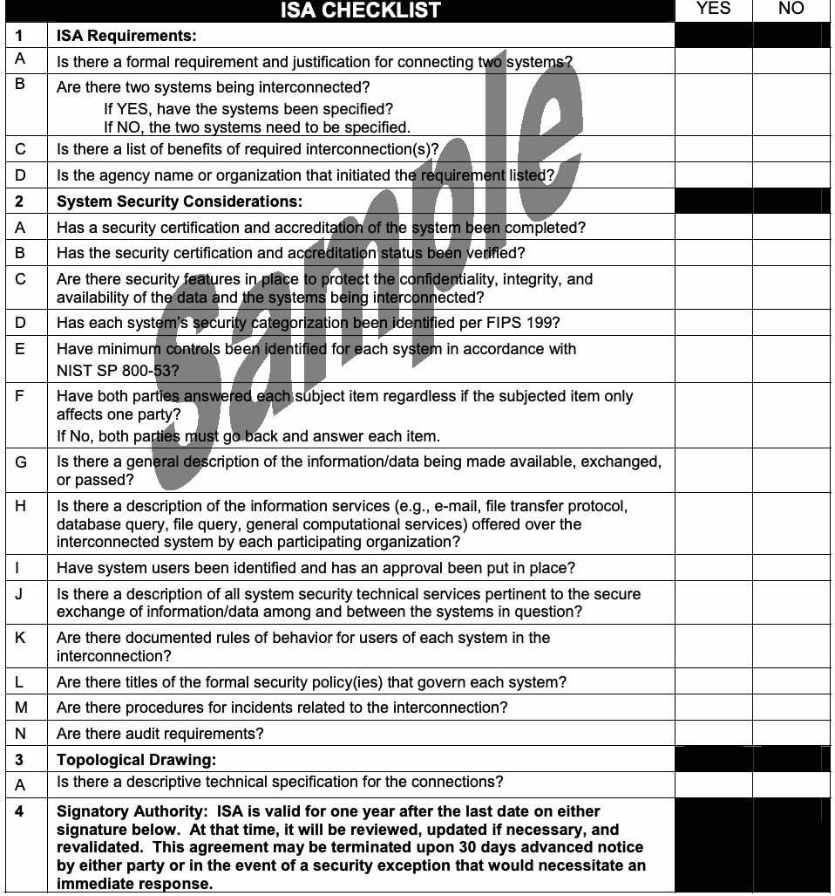
| ISAチェックリスト | はい | いいえ |
| 1 / ISAの要件： | ||
| A / 2つのシステムを接続する正式な要件と正当な理由があるか。 | ||
| B / 相互接続するシステムは2つあるか。ある場合、システムは特定されているか。ない場合は、2つのシステムを特定する必要がある。 | ||
| C / 必要な相互接続による便益の一覧があるか。 | ||
| D / 接続要件を開始した機関名または組織名が | 記載されているか。 | |
| 2 / システムセキュリティ上の考慮事項： | ||
| A / 各システムのセキュリティ認証・認定は | 完了しているか。 | |
| B / セキュリティ認証・認定の状況は検証 | されているか。 | |
| C / 相互接続するシステムおよびデータの | 機密性、完全性、可用性を保護するセキュリティ機能が導入されているか。 | |
| D / 各システムのセキュリティ分類は | FIPS 199に従って特定されているか。 | |
| E / 各システムについてNIST SP 800-53に従った最低限の管理策が特定されているか。 | ||
| F / 各項目が一方の当事者にしか関係しない場合でも、双方がすべての項目に回答したか。いいえの場合、双方が戻って各項目に回答しなければならない。 | ||
| G / 利用、交換、または一方向の受け渡しを行う情報／データの概要があるか。 | ||
| H / 各参加組織が相互接続システムを通じて提供する情報サービス（電子メール、ファイル転送プロトコル、データベース照会、ファイル照会、汎用計算サービスなど）の説明があるか。 | ||
| I / システム利用者が特定され、承認手続が整備されているか。 | ||
| J / 対象システム間で情報／データを安全に交換するために関係する、すべてのシステムセキュリティ技術サービスの説明があるか。 | ||
| K / 相互接続する各システムの利用者向け行動規則が文書化されているか。 | ||
| L / 各システムを統治する正式なセキュリティ方針の名称が記載されているか。 | ||
| M / 相互接続に関連するインシデントの対応手順があるか。 | ||
| N / 監査要件があるか。 | ||
| 3 / 構成図： | ||
| A / 接続を説明する技術仕様があるか。 | ||
| 4 / 署名権限：以下の署名欄にあるいずれかの署名日から1年間、ISAを有効とする。その時点でレビューし、必要に応じて更新し、再検証する。一方の当事者は、30日前の事前通知により、または直ちに対応すべきセキュリティ例外が発生した場合に、本協定を終了できる。 |
Website: www.csrc.nist.gov
ウェブサイト：www.csrc.nist.gov
未レビュー訳References: Federal Information Processing Standard 199, Standards for Security Categorization of Federal Information and Information Systems, February 2004.
参考文献：連邦情報処理規格199『連邦情報および情報システムのセキュリティ分類規格』、2004年2月。
Federal Information Processing Standard 200, Minimum Security Requirements for Federal Information and Information Systems, March 2006.
連邦情報処理規格200『連邦情報および情報システムの最低限のセキュリティ要件』、2006年3月。
National Institute of Standards and Technology, Information Technology Laboratory (ITL) Bulletin: Secure Interconnections for Information Technology Systems, February 2003.
米国国立標準技術研究所（NIST）情報技術研究所（ITL）速報『情報技術システムの安全な相互接続』、2003年2月。
未レビュー訳National Institute of Standards and Technology Special Publication 800-30, Risk Management Guide for Information Technology Systems, July 2002.
NIST特別刊行物800-30『情報技術システムのリスク管理ガイド』、2002年7月。
National Institute of Standards and Technology Special Publication 800-37, Guide for the Security Certification and Accreditation of Federal Information Systems, May 2004.
NIST特別刊行物800-37『連邦情報システムのセキュリティ認証および認定のためのガイド』、2004年5月。
National Institute of Standards and Technology Special Publication 800-42, Guidelines on Network Security Testing, October 2003.
NIST特別刊行物800-42『ネットワークセキュリティ試験のガイドライン』、2003年10月。
National Institute of Standards and Technology Special Publication 800-47, Security Guide for Interconnecting Information Technology Systems, August 2002.
NIST特別刊行物800-47『情報技術システム相互接続のためのセキュリティガイド』、2002年8月。
National Institute of Standards and Technology Special Publication 800-53, Revision 1, Recommended Security Controls for Federal Information System, February 2006.
NIST特別刊行物800-53改訂第1版『連邦情報システムの推奨セキュリティ管理策』、2006年2月。
未レビュー訳National Institute of Standards and Technology Special Publication 800-60, Guide for Mapping Types of Information and Information Systems to Security Categories, June 2004.
NIST特別刊行物800-60『情報および情報システムの種類をセキュリティカテゴリに対応付けるためのガイド』、2004年6月。
Chapter 7
第7章
未レビュー訳7. Performance Measures
7. パフォーマンス測定値
未レビュー訳A performance measures program provides numerous organizational and financial benefits to federal agencies. Agencies can develop information security metrics that measure the effectiveness of their security program, and provide data to be analyzed and used by program managers and system owners to isolate problems, justify investment requests, and target funds specifically to the areas in need of improvement. By using metrics to target security investments, agencies can get the best value from available resources. The typical information performance management program consists of four interdependent components: senior management support, security policies and procedures, quantifiable performance metrics, and analyses.
パフォーマンス測定プログラムは、連邦機関に組織上および財務上の多くの便益をもたらす。機関は、セキュリティプログラムの有効性を測定する情報セキュリティ指標を策定し、そのデータを分析して、問題の特定、投資要求の正当化、改善が必要な領域への資金の重点配分に利用できる。指標を用いてセキュリティ投資の対象を定めることで、機関は利用可能な資源から最大の効果を得られる。一般的な情報パフォーマンス管理プログラムは、上級管理者の支援、セキュリティ方針と手順、定量化可能なパフォーマンス指標、分析という相互依存する4つの要素から成る。
未レビュー訳Strong senior management support establishes a focus on security within the highest levels of the organization. Without a solid foundation (e.g., proactive support of those persons in positions that control information resources), the effectiveness of the security metrics program can fail when pressured by politics and budget limitations. The second component of an effective security metrics program is practical security policies and procedures backed by the authority necessary to enforce compliance. Metrics are not easily obtainable in the absence of policies and procedures. The third component is developing and establishing quantifiable performance metrics that are designed to capture and provide meaningful performance data. To provide meaningful data, quantifiable security metrics must be based on information security performance goals and objectives, and be easily obtainable, repeatable, relevant, useful, and measurable. Finally, the security metrics program itself must emphasize consistent, periodic analysis of the metrics data. The results of this analysis are used to apply lessons learned, improve the effectiveness of existing security controls, and plan future controls to meet new security requirements as they occur. Accurate data collection must be a priority with stakeholders and users if the collected data is to be meaningful to the management and improvement of the overall security program.
上級管理者から強力な支援を得ることで、組織の最上位レベルにセキュリティへの重点が確立される。情報資源を管理する立場の人々による先を見越した支援など、確固たる基盤がなければ、政治や予算の制約に直面したときにセキュリティ指標プログラムの有効性が損なわれる可能性がある。効果的なセキュリティ指標プログラムの第2の要素は、遵守を強制するために必要な権限に裏付けられた、実用的なセキュリティ方針と手順である。方針と手順がなければ、指標を容易に取得できない。第3の要素は、有意義なパフォーマンスデータを収集・提供するよう設計された、定量化可能なパフォーマンス指標を開発し確立することである。有意義なデータを提供するには、定量化可能なセキュリティ指標を情報セキュリティのパフォーマンス目標と目的に基づかせ、容易に取得でき、再現性があり、関連性、有用性、測定可能性を備えたものとしなければならない。最後に、セキュリティ指標プログラム自体が、指標データを一貫した周期で分析することを重視しなければならない。この分析結果を用いて、得られた教訓を適用し、既存のセキュリティ管理策の有効性を高め、新しいセキュリティ要件が生じた際にそれを満たす将来の管理策を計画する。収集データを組織全体のセキュリティプログラムの管理と改善に役立つものにするため、利害関係者と利用者は正確なデータ収集を優先しなければならない。
未レビュー訳A number of existing laws, rules, and regulations cite information technology (IT) performance measurement in general and information security performance measurement in particular, as requirements. These laws include the Clinger-Cohen Act, Government Performance and Results Act (GPRA), Government Paperwork Elimination Act (GPEA), and the Federal Information Security Management Act (FISMA).
情報技術（IT）のパフォーマンス測定全般、とりわけ情報セキュリティのパフォーマンス測定を要件として挙げる現行の法律、規則、規制は数多くある。これらには、Clinger-Cohen法、政府業績成果法（GPRA）、政府文書作成削減法（GPEA）、連邦情報セキュリティ管理法（FISMA）が含まれる。
未レビュー訳National Institute of Standards and Technology (NIST) Special Publication (SP) 800-55, Security Metrics Guide for Information Technology Systems, provides guidance on how an organization, by using metrics, identifies the adequacy of in-place security controls, policies, and procedures. It provides an approach to help management decide where to invest in additional security protection resources or how to identify and evaluate nonproductive controls. It explains the metrics development and implementation process and how it can also be used to adequately justify security control investments. The results of an effective metrics program can provide useful data for directing the allocation of information security resources and should simplify the preparation of performance-related reports.
米国国立標準技術研究所（NIST）特別刊行物（SP）800-55『情報技術システムのセキュリティ指標ガイド』は、指標を用いて、組織が導入済みのセキュリティ管理策、方針、手順の妥当性を特定する方法を示す。追加のセキュリティ保護資源をどこに投資するか、または生産性の低い管理策をどのように特定・評価するかを経営陣が判断するための手法を示す。指標の策定・実装プロセスを説明し、セキュリティ管理策への投資を適切に正当化するためにも利用できる。効果的な指標プログラムの結果は、情報セキュリティ資源の配分を決める有用なデータとなり、パフォーマンス関連報告書の作成を簡素化するはずである。
未レビュー訳Fiscal constraints and market conditions compel government and industry to operate on reduced budgets. In such an environment, it is difficult to justify broad investments in the information security infrastructure. Historically, arguments for investing in specific areas of information security lack detail and specificity and fail to adequately mitigate specific system risk. Information security metrics can facilitate the capital planning and investment control (CPIC) process by providing quantifiable information for business case development.46 Information security metrics can also assist with determining the effectiveness of implemented information security processes, procedures, and controls by relating results of information security activities (e.g., incident data, revenue lost to cyber attacks) to the respective requirements and to information security investments.
財政上の制約と市場の状況により、政府と産業界は予算を削減して運営せざるを得ない。このような環境では、情報セキュリティインフラストラクチャへの幅広い投資を正当化するのが難しい。歴史的に、情報セキュリティの特定分野に投資する根拠は、詳細さや具体性に欠け、特定のシステムリスクを十分に軽減できていなかった。情報セキュリティ指標は、業務ケースの作成に定量的情報を提供し、資本計画・投資管理（CPIC）プロセスを促進できる。46 また、情報セキュリティ活動の結果（インシデントデータ、サイバー攻撃による売上損失など）を、それぞれの要件と情報セキュリティ投資に関連付けることで、実施した情報セキュリティプロセス、手順、管理策の有効性を判断する助けにもなる。
未レビュー訳Departments and agencies can also demonstrate compliance with applicable laws, such as FISMA, rules, and regulations by implementing and maintaining an information security metrics program as described in this handbook. Information security metrics will assist in satisfying the annual FISMA reporting requirement by providing an infrastructure for organized data collection, analysis, and reporting. Information security metrics can also be used as input into the Government Accountability Office (GAO) and Inspector General (IG) audits.
部局および機関は、本ハンドブックに記載された情報セキュリティ指標プログラムを実施・維持することで、FISMAなどの適用法令、規則、規制への遵守も示せる。情報セキュリティ指標は、データを体系的に収集、分析、報告する基盤を提供し、FISMAの年次報告要件を満たす助けとなる。また、米国会計検査院（GAO）や監察総監（IG）の監査に情報セキュリティ指標を入力情報として利用できる。
未レビュー訳7.1 Metric Types
7.1 指標の種類
Metrics are tools that support decision making. Like experience, external mandates, and strategies, metrics are one element of a manager’s toolkit for making and substantiating decisions. Metrics are used to answer three basic questions:
指標は意思決定を支援するツールである。経験、外部からの指令、戦略と同様に、指標も管理者が意思決定し、その根拠を示すための道具の一つである。指標は次の3つの基本的な問いに答えるために利用する。
未レビュー訳•“Am I implementing the tasks for which I am responsible?” Consider the example of a program manager with responsibility for 250 information systems. Among other things, that manager is responsible for the security certification and accreditation of those systems. A commonly used implementation metric for security certification and accreditation is the percentage of systems accredited.
•「自分の責任である作業を実施しているか」。情報システム250台を担当するプログラム管理者を例に考える。この管理者は、ほかの業務に加えて、それらのシステムのセキュリティ認証・認定に責任を負う。セキュリティ認証・認定でよく使われる実施指標は、認定済みシステムの割合である。
未レビュー訳•“How efficiently or effectively am I accomplishing those tasks?” Such metrics often answer more complex questions after an activity is fully implemented. For example, federal law requires that security certification and accreditation take place following a major system change. One might measure the efficiency of a security certification and accreditation program by determining the time lag between each major system change and that system’s renewed accreditation. Or one might measure the effectiveness of a security certification and accreditation program by determining the number of accredited systems whose certification process included the creation of a system security plan.
•「それらの作業をどれほど効率的または効果的に達成しているか」。こうした指標は、活動を完全に実施した後、より複雑な問いに答えることが多い。たとえば連邦法は、大規模なシステム変更の後にセキュリティ認証・認定を実施するよう求める。各大規模変更からシステムの再認定までの時間差を測定すれば、セキュリティ認証・認定プログラムの効率性を測れる。また、認定済みシステムのうち、認証プロセスでシステムセキュリティ計画を作成したものの数を測れば、そのプログラムの有効性を測れる。
未レビュー訳•“What impact are those tasks having on the mission?” Activities are initially selected with the belief that they will contribute to the mission. After an activity is shown to be fully implemented, managers must validate that the activity is delivering the expected benefit. These metrics are the most difficult to generate. A security certification and accreditation process may prove to have an impact by showing that fewer interruptions or losses of data due to security incidents are experienced among correctly accredited systems than among incorrectly accredited or nonaccredited systems.
•「それらの作業は任務にどのような影響を与えているか」。活動は当初、任務に貢献するとの考えに基づいて選択される。ある活動が完全に実施されていることが示された後、管理者は、その活動が期待した便益をもたらしていることを検証しなければならない。これらの指標は生成するのが最も難しい。セキュリティ認証・認定プロセスは、正しく認定されたシステムでは、誤って認定されたシステムや未認定のシステムに比べて、セキュリティインシデントによる中断やデータ損失が少ないことを示すことで、影響を与えていることが明らかになる場合がある。
7.2 Metrics Development and Implementation Approach
7.2 指標の策定・実装手法
Two processes guide the establishment and operation of an information security metrics program: metrics development and metrics implementation. The metrics development process establishes the initial set of metrics and selection of the metrics subset appropriate for an organization at a given time. The metrics program implementation process operates a metrics program that is iterative by nature and ensures that appropriate aspects of information security are measured for a specific time period.
情報セキュリティ指標プログラムの確立と運用には、指標の策定と指標の実装という2つのプロセスがある。指標の策定プロセスでは、初期指標一式を確立し、その時点で組織に適した指標のサブセットを選定する。指標プログラムの実装プロセスでは、本質的に反復的な指標プログラムを運用し、特定期間に情報セキュリティの適切な側面が測定されるようにする。
未レビュー訳7.3 Metrics Development Process
7.3 指標策定プロセス
Figure 7-1 illustrates the place of information security metrics within a larger organizational context and demonstrates that information security metrics can be used to progressively measure implementation, efficiency, effectiveness, and the business impact of information security activities within organizations or for specific systems.
図7-1は、組織全体のより広い状況の中で情報セキュリティ指標がどこに位置するかを示す。また、組織全体または特定システムの情報セキュリティ活動について、実施状況、効率性、有効性、事業への影響を段階的に測るために指標を利用できることを示す。
未レビュー訳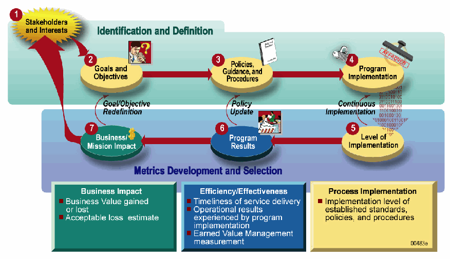
情報セキュリティ指標の策定過程を示す循環図。利害関係者、目標、方針・手順、プログラム実施、実施水準、成果、事業・使命への影響を結び、実施状況・効率性・有効性・事業影響を測定する。
Figure 7-1. Information Security Metrics Development Process
図7-1 情報セキュリティ指標の策定プロセス
未レビュー訳The information security metrics development process consists of two major activities:
情報セキュリティ指標の策定プロセスは、主に次の2つの活動から成る。
未レビュー訳1.Identifying and defining the current information security program; and
1.現行の情報セキュリティプログラムを特定し、定義する。
2.Developing and selecting specific metrics to measure implementation, efficiency, effectiveness, and the impact of the security controls.
2.セキュリティ管理策の実施状況、効率性、有効性、影響を測定する具体的な指標を策定し、選定する。
The process steps do not need to be sequential. Rather, the process illustrated in Figure 7-1 provides a framework for thinking about metrics and aids in identifying metrics to be developed for each system. The type of metric depends on where the system is within its life cycle and on the maturity of the information system security program. This framework facilitates tailoring metrics to a specific organization and to the different stakeholder groups present within each organization.
プロセスの手順を順番どおりに実施する必要はない。図7-1のプロセスは、指標を検討するための枠組みを示し、各システムについて策定すべき指標の特定を支援する。指標の種類は、システムのライフサイクル上の段階と情報システムのセキュリティプログラムの成熟度によって異なる。この枠組みは、組織固有の状況や、組織内のさまざまな利害関係者グループに応じて指標を調整するのに役立つ。
未レビュー訳Phases 5, 6, and 7, depicted in Figure 7-1, involve developing metrics that measure process implementation, effectiveness and efficiency, and mission impact. The specific aspect of information security that metrics will focus on at any given point will depend on information security program maturity. Implementation evidence, required to prove higher levels of effectiveness, will change from establishing existence of policy and procedures to quantifying implementation of these policies and procedures, then to quantifying results of implementation of policies and procedures, and ultimately to identifying the impact of implementation on the organization’s mission.
図7-1に示すフェーズ5、6、7では、プロセスの実施状況、有効性と効率性、任務への影響を測る指標を策定する。ある時点で指標が対象とする情報セキュリティの側面は、情報セキュリティプログラムの成熟度によって異なる。より高い有効性を証明するために必要な実施の証拠は、方針と手順の存在を確立する段階から、方針と手順の実施状況の定量化へ、さらにその実施結果の定量化へと変わり、最終的には実施が組織の任務に与える影響を特定する段階に至る。
未レビュー訳Based on existing policies and procedures, the universe of possible metrics can be prohibitively large; therefore, agencies should prioritize metrics to ensure that the final set selected for initial implementation has the following attributes:
既存の方針と手順に基づいて考えられる指標をすべて挙げると、数が膨大になりうる。そのため機関は、初期実装向けに選ぶ最終的な指標一式が次の特性を備えるよう、指標に優先順位を付けるべきである。
未レビュー訳•Facilitates improvement of high-priority security control implementation. High priority may be defined by the latest GAO or IG reports, results of a risk assessment, or an internal organizational goal;
•優先度の高いセキュリティ管理策の実施の改善を促進する。高い優先度は、最新のGAOもしくはIGの報告書、リスク評価の結果、または組織内部の目標によって定義されることがある。
•Uses data that can realistically be obtained from existing processes and data repositories; and
•既存のプロセスとデータ保管場所から現実的に取得できるデータを利用する。
•Measures processes that already exist and are relatively stable. Measuring nonexistent or unstable processes will not provide meaningful information about security performance and will therefore not be useful for targeting specific aspects of performance. On the other hand, attempting such measurement may not be entirely useless, because such a metric will certainly produce poor results and will therefore identify an area that needs improvement.
•すでに存在し、比較的安定しているプロセスを測定する。存在しない、または不安定なプロセスを測定しても、セキュリティパフォーマンスに関する有意義な情報は得られず、したがってパフォーマンスの特定の側面に的を絞るうえで役に立たない。一方で、そのような測定を試みることがまったくの無駄であるとは限らない。そのような指標は確実に悪い結果を示し、したがって改善が必要な領域を特定することになるからである。
Metrics can be derived from existing data sources, including security certification and accreditation, security assessments, plan of action and milestones (POA&M), incident statistics, and agency-initiated or independent reviews.47 Agencies may decide to use a weighting scale to differentiate the importance of selected metrics and to ensure that the results accurately reflect existing security program priorities. This process would involve assigning values to each metric based on the importance of a metric in the context of the overall security program. Metrics weighting should be based on the overall risk mitigation goals, is likely to reflect higher criticality of department-level initiatives versus smaller-scale initiatives, and is a useful tool that facilitates integration of information security into the departmental capital planning process.
指標は、セキュリティ認証・認定、セキュリティ評価、行動計画・マイルストーン（POA&M）、インシデント統計、機関が実施するレビューまたは独立したレビューなど、既存のデータソースから導出できる。47 選定した指標の重要度を区別し、結果が既存のセキュリティプログラムの優先事項を正確に反映するよう、機関は重み付け尺度を使うことができる。このプロセスでは、セキュリティプログラム全体の中で指標がどれだけ重要かに基づき、各指標に値を割り当てる。指標の重み付けは、全体的なリスク軽減目標に基づくべきであり、小規模な取り組みより部局レベルの取り組みの重要度が高いことを反映する可能性がある。これは、情報セキュリティを部局の資本計画プロセスに統合するのに役立つツールである。
未レビュー訳A phased approach may be required to identify short-, mid-, and long-term metrics in which the implementation time frame depends on a combination of system-level effectiveness, metric priority, data availability, and process stability. Once applicable metrics that contain the qualities described above are identified, they will need to be documented with supporting detail, including frequency of data collection, data source, formula for calculation, implementation evidence for measured activity, and a guide for metric data interpretation. Other information about each metric can be defined based on an organization’s processing and business requirements.
短期、中期、長期の指標を特定するため、段階的な手法が必要となる場合がある。その実装期間は、システムレベルの有効性、指標の優先度、データの可用性、プロセスの安定性の組み合わせによって決まる。前述の特性を備えた適切な指標を特定したら、データ収集頻度、データソース、計算式、測定対象の活動に関する実施の証拠、指標データの解釈ガイドなど、補足情報とともに文書化する必要がある。各指標に関するその他の情報は、組織の処理要件や業務要件に基づいて定義できる。
未レビュー訳7.4 Metrics Program Implementation
7.4 指標プログラムの実装
Information security metrics should be used for monitoring information security control performance and initiating performance improvement actions. This iterative process consists of six phases, depicted in Figure 7-2.
情報セキュリティ指標は、情報セキュリティ管理策のパフォーマンスを監視し、パフォーマンス改善措置を開始するために利用すべきである。この反復プロセスは、図7-2に示す6つのフェーズから成る。
未レビュー訳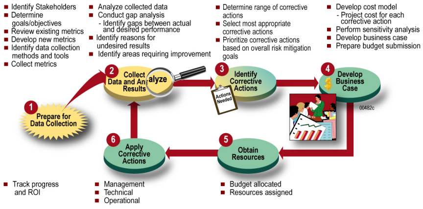
情報セキュリティ指標プログラムの6段階の循環図。データ収集の準備、収集と分析、是正措置の特定、事業計画の策定、資源の確保、是正措置の適用を示す。
Figure 7-2. Information Security Metrics Program Implementation Process
図7-2 情報セキュリティ指標プログラムの実装プロセス
未レビュー訳7.4.1 Prepare for Data Collection
7.4.1 データ収集の準備
Phase 1 of the process, Prepare for Data Collection, involves activities that are key for establishing a comprehensive information security metrics program. These activities include the information security metrics identification, definition, development, and selection activities, and developing a metrics program implementation plan.
プロセスのフェーズ1「データ収集の準備」では、包括的な情報セキュリティ指標プログラムを確立するうえで重要な活動を行う。これらの活動には、情報セキュリティ指標の特定、定義、策定、選定と、指標プログラムの実装計画の策定が含まれる。
未レビュー訳After the metrics have been identified, specific implementation steps should be defined on how to collect, analyze, and report the metrics. These steps should be documented in the metrics program implementation plan. The following items may be included in the plan:
指標を特定した後、指標の収集、分析、報告の方法について、具体的な実装手順を定義すべきである。これらの手順は指標プログラム実装計画に文書化すべきである。計画には次の事項を含めてもよい。
未レビュー訳•Metrics roles and responsibilities, including responsibilities for data collection (both soliciting and submitting), analysis, and reporting;
•指標に関する役割と責任。データ収集（依頼と提出の両方）、分析、報告の責任を含む。
•An audience for the plan;
•計画の対象読者。
•Process of metrics collection, analysis, and reporting that is tailored to the specific organizational structure, processes, policies, and procedures;
•特定の組織構造、プロセス、方針、手順に合わせた指標の収集、分析、報告のプロセス。
•Details of coordination with the chief information officer (CIO), such as with risk assessment, security certification and accreditation, and FISMA reporting activities;
•リスク評価、セキュリティ認証・認定、FISMA報告活動などに関する、最高情報責任者（CIO）との調整の詳細。
•Details of coordination between the CIO and other functions within the agency, external to the CIO (e.g., Information Assurance (IA), if separate from the CIO; physical security; personnel security; and critical infrastructure protection [CIP]) to ensure that the metrics data collection is streamlined and nonintrusive;
•指標データ収集を効率化し、組織の業務を妨げないようにするための、CIOとCIO以外の機関内機能（CIOから独立した場合の情報保証［IA］、物理的セキュリティ、職員セキュリティ、重要インフラ保護［CIP］など）との調整の詳細。
•Creation or selection of data collection and tracking tools;
•データ収集・追跡ツールの作成または選定。
•Modifications of data collection and tracking tools; and
•データ収集・追跡ツールの変更。
•Metrics summary reporting formats.
•指標の要約報告形式。
7.4.2 Collect Data and Analyze Results
7.4.2 データの収集と結果の分析
Phase 2 of the process, Collect Data and Analyze Results, involves activities that are essential for ensuring that the collected metrics are used to gain an understanding of system security and to identify appropriate improvement actions. This phase includes the following activities:
プロセスのフェーズ2「データの収集と結果の分析」では、収集した指標を用いてシステムのセキュリティを把握し、適切な改善措置を特定するために不可欠な活動を行う。このフェーズには次の活動が含まれる。
未レビュー訳•Collect metrics data according to the processes defined in the metrics program implementation plan;
•指標プログラム実装計画で定めたプロセスに従って、指標データを収集する。
未レビュー訳•Consolidate collected data and store in a format (i.e., a database or a spreadsheet) conducive to data analysis and reporting;
•収集データを統合し、データ分析と報告に適した形式（データベースや表計算シートなど）で保存する。
未レビュー訳•Conduct gap analysis, compare collected measurements with targets if defined, and identify gaps between actual and desired performance;
•ギャップ分析を実施し、目標が定められている場合は収集した測定値と目標を比較して、実際のパフォーマンスと望ましいパフォーマンスの差を特定する。
未レビュー訳•Identify causes of poor performance; and
•パフォーマンスが低い原因を特定する。
•Identify areas requiring improvement.
•改善が必要な領域を特定する。
The causes of poor performance can often be identified using the data from more than one metric. For example, determining that the percentage of approved security plans is unacceptably low would not be helpful for determining how to correct the problem. To determine the cause of low compliance, collect information on the reasons for low percentages (e.g., lack of guidance, insufficient expertise, or conflicting priorities). This information can be collected as separate metrics or as implementation evidence for the percentage of approved security plans. Once this information is collected and compiled, the agency should develop a correction plan to address the root cause of the problem.
パフォーマンス低下の原因は、複数の指標のデータを使って特定できることが多い。たとえば、承認済みセキュリティ計画の割合が許容できないほど低いと分かっても、問題の是正方法を判断する助けにはならない。遵守率が低い原因を特定するには、低い割合の理由（指針の不足、専門知識の不足、優先事項の競合など）に関する情報を収集する。この情報は、独立した指標として収集することも、承認済みセキュリティ計画の割合を示す指標の実施根拠として収集することもできる。情報を収集・集約した後、機関は問題の根本原因に対処する是正計画を策定すべきである。
未レビュー訳Root causes for faulty security run the gamut between highly technical misconfiguration issues to lack of training or outdated policies or practices. Below are examples of causation factors that contribute to poor security control implementation and effectiveness:
セキュリティ不備の根本原因は、高度に技術的な構成ミスから、訓練不足、方針や慣行の陳腐化まで多岐にわたる。セキュリティ管理策の実装と有効性の低下につながる原因の例を次に示す。
未レビュー訳•Resources—insufficient human, monetary, or other resources;
•資源：人員、資金、その他の資源の不足。
•Training—lack of appropriate training for the personnel installing, administering, maintaining, or using the systems;
•訓練：システムの設置、管理、保守、利用を担当する職員への適切な訓練の不足。
•System Upgrades—security patches that have been removed but not replaced during the operating system upgrades;
•システムのアップグレード：オペレーティングシステムのアップグレード時に、セキュリティパッチが削除されたまま置き換えられない。
未レビュー訳•Configuration Management (CM) Practices—new or upgraded systems that are not configured with required security settings and patches;
•構成管理（CM）の慣行：新規またはアップグレード済みシステムに、必要なセキュリティ設定やパッチが構成されていない。
•Software Compatibility—security patches or upgrades that are incompatible with software applications supported by the system;
•ソフトウェアの互換性：セキュリティパッチやアップグレードが、システムでサポートするソフトウェアアプリケーションと互換性がない。
•Awareness and Commitment—lack of management awareness and/or commitment to security;
•認識とコミットメント：経営層のセキュリティに対する認識および／またはコミットメントの不足。
•Policies and Procedures—lack of policies and procedures that are required to ensure existence, use, and audit of required security functions;
•方針と手順：必要なセキュリティ機能の存在、利用、監査を確実にするための方針・手順の不足。
•Architectures—poor system and security architectures that make systems vulnerable; and
•アーキテクチャ：システムやセキュリティのアーキテクチャが不適切で、システムが脆弱になっている。
未レビュー訳•Inefficient Processes—inefficient planning and communication processes that influence the metrics.
•非効率なプロセス：計画やコミュニケーションのプロセスが非効率で、指標に影響している。
7.4.3 Identify Corrective Actions
7.4.3 是正措置の特定
Phase 3 of the process, Identify Corrective Actions, involves developing a plan that will provide the roadmap of how to close the implementation gap identified in Phase 2. This phase includes the following activities:
プロセスのフェーズ3「是正措置の特定」では、フェーズ2で特定した実装ギャップを解消するための道筋となる計画を策定する。このフェーズには次の活動が含まれる。
未レビュー訳•Determine Range of Corrective Actions. Based on the results and causation factors, identify corrective actions that could be applied to each performance issue. Corrective actions may include changing system configurations; training security staff, system administrator staff, or regular users; purchasing security tools; changing system architecture; establishing new processes and procedures; and updating security policies.
•是正措置の範囲を決定する。結果と原因要因に基づき、各パフォーマンス上の問題に適用しうる是正措置を特定する。是正措置には、システム構成の変更、セキュリティ担当者・システム管理者・一般利用者への訓練、セキュリティツールの購入、システムアーキテクチャの変更、新しいプロセスや手順の確立、セキュリティ方針の更新などが含まれうる。
•Prioritize Corrective Actions Based on Overall Risk Mitigation Goals. Several corrective actions may be applicable to a single performance issue; however, some may be inappropriate if they are inconsistent with the magnitude of the problem or are too costly. Applicable corrective actions should be prioritized for each performance issue in the ascending order of cost and descending order of impact. The risk management process, described in NIST SP 800-30, Risk Management Guide for Information Technology Systems, should be used for prioritizing corrective actions.48 If weights were assigned to metrics in Phase 1, Prepare for Data Collection, they should be used to prioritize corrective actions. Alternatively, weights may be assigned to corrective actions in Phase 3, Identify Corrective Actions, based on the criticality of implementing specific corrective actions, the cost of corrective actions, and the magnitude of corrective actions’ impact on the organization’s security posture.
•全体的なリスク軽減目標に基づいて是正措置の優先順位を付ける。1つのパフォーマンス上の問題に複数の是正措置を適用できる場合があるが、問題の規模に合わないものや費用が高すぎるものは不適切な場合がある。各問題に適用できる是正措置は、費用の低い順、影響の大きい順に優先順位を付けるべきである。是正措置の優先順位付けには、NIST SP 800-30『情報技術システムのリスク管理ガイド』に記載されたリスク管理プロセスを使用すべきである。48 フェーズ1「データ収集の準備」で指標に重みを付けた場合、その重みを是正措置の優先順位付けに用いるべきである。あるいは、フェーズ3「是正措置の特定」で、具体的な是正措置の実施の重要度、費用、組織のセキュリティ態勢に対する影響の大きさに基づいて、是正措置に重みを付けてもよい。
未レビュー訳•Select Most Appropriate Corrective Actions. Up to three corrective actions from the top of the list of prioritized corrective actions should be selected for conducting a full cost-benefit analysis. These selections should then be appropriately reflected in the agency or system POA&Ms.
•最も適切な是正措置を選定する。優先順位を付けた是正措置リストの上位から最大3つを選び、詳細な費用便益分析を実施すべきである。選定した措置を機関またはシステムのPOA&Mに適切に反映すべきである。
未レビュー訳7.4.4 Develop Business Case and Obtain Resources
7.4.4 ビジネスケースの策定と資源の確保
Phases 4 and 5, Develop Business Case and Obtain Resources, respectively, address the budgeting cycle required for obtaining resources needed for implementing the remediation actions identified in Phase 3. The steps to develop a business case are based on industry practices and mandated guidance, including Office of Management and Budget (OMB) Circular A-11, the Clinger-Cohen Act, and GPRA. The results of the prior three phases will be included in the business case as supporting evidence. NIST SP 800-55 provides guidance on security practitioners’ inputs into the CPIC process and on their role in core development.
フェーズ4「業務ケースの策定」とフェーズ5「資源の確保」では、フェーズ3で特定した是正措置を実施するために必要な資源を得る予算サイクルを扱う。業務ケースの策定手順は、行政管理予算局（OMB）通達A-11、Clinger-Cohen法、政府業績成果法（GPRA）など、業界慣行と義務的指針に基づく。前の3フェーズの結果を、根拠資料として業務ケースに含める。NIST SP 800-55は、CPICプロセスにおけるセキュリティ実務者の入力情報と、業務ケースの主要部分を策定する際の役割について指針を示す。
未レビュー訳Each agency should follow agency-specific business case guidance during this phase. Typically, the components and analysis of the business facilitate the completion of internal and external budget requests. A thorough examination of the business case will support and facilitate the obtaining resources process.
このフェーズでは、各機関は機関固有の業務ケースに関する指針に従うべきである。通常、業務ケースの構成要素と分析は、内部および外部の予算要求の完成を支援する。業務ケースを十分に検討することで、資源確保のプロセスを支援し、円滑に進められる。
未レビュー訳7.4.5 Apply Corrective Actions
7.4.5 是正措置の適用
Phase 6 of the process, Apply Corrective Actions, involves implementing corrective actions as determined through data analysis and as defined in an applicable business case or a POA&M. After corrective actions are applied, the cycle completes itself and restarts with subsequent data collection and analysis. Iterative data collection, analysis, and reporting will track the progress of corrective actions through the POA&M, among others, measure improvement, and identify areas for further improvement to be included in tactical plans, Program Management Plans, or other agency planning mechanisms. The iterative nature of the cycle ensures that the progress is monitored, and the corrective actions are affecting system security control implementation in an intended way. Frequent performance measurements will ensure that if corrective actions are not implemented as planned, or if their actual effect is not the desired effect, quick course corrections can be made internally by the agency, thus avoiding the unveiling of problems during external audits, security certification and accreditation efforts, or other similar activities.
プロセスのフェーズ6「是正措置の適用」では、データ分析で決定し、該当する業務ケースまたはPOA&Mに定めた是正措置を実装する。是正措置を適用した後、サイクルを完了し、次のデータ収集と分析から再開する。反復的なデータ収集、分析、報告により、POA&Mなどを通じて是正措置の進捗を追跡し、改善を測定し、戦術計画、プログラム管理計画、その他の機関の計画手段に含めるべき追加改善領域を特定する。このサイクルが反復的であるため、進捗を監視し、是正措置がシステムのセキュリティ管理策の実装に意図した形で影響していることを確認できる。パフォーマンスを頻繁に測定すれば、是正措置が計画どおりに実施されない場合や、実際の効果が期待したものと異なる場合に、機関内部で速やかに軌道修正できる。その結果、外部監査、セキュリティ認証・認定活動などで問題が明らかになる事態を避けられる。
未レビュー訳Website: www.csrc.nist.gov
ウェブサイト：www.csrc.nist.gov
未レビュー訳References: Public Law 107-347 [H.R. 2458], The E-Government Act of 2002, Title III of this Act is the Federal Information Security Management Act of 2002 (FISMA), December 17, 2002.
参考文献：公法107-347［H.R. 2458］、2002年電子政府法。同法第III編は、2002年連邦情報セキュリティ管理法（FISMA）である。2002年12月17日。
Office of Management and Budget Circular A-130, Management of Federal Information Resources, November 2000.
行政管理予算局（OMB）通達A-130『連邦情報資源の管理』、2000年11月。
National Institute of Standards and Technology Special Publication 800-30, Risk Management Guide for Information Technology Systems, July 2002.
米国国立標準技術研究所（NIST）特別刊行物800-30『情報技術システムのリスク管理ガイド』、2002年7月。
未レビュー訳National Institute of Standards and Technology Special Publication 800-55, Security Metrics Guide for Information Technology Systems, July 2003.
NIST特別刊行物800-55『情報技術システムのセキュリティ指標ガイド』、2003年7月。
Chapter 8
第8章
未レビュー訳8. Security Planning
8. セキュリティ計画
未レビュー訳Today’s rapidly changing technical environment requires that federal agencies adopt a minimum set of security controls to protect their information and information systems. The purpose of the system security plan is to provide an overview of the security requirements of the system and describe the controls in place or planned for meeting those requirements. The system security plan also delineates responsibilities and expected behavior of all individuals who access the system. It should reflect input from various managers with responsibilities concerning the system, including information owners, the system owner, and the senior agency information security officer (SAISO). Agencies, at their discretion, can include additional information in the basic plan and add sections to the basic format prescribed herein, as long as the major sections described in this document are adequately covered and readily identifiable.
急速に変化する今日の技術環境に対応するには、連邦機関が情報と情報システムを保護する最低限のセキュリティ管理策を採用する必要がある。システムセキュリティ計画の目的は、システムのセキュリティ要件の概要を示し、その要件を満たすために導入済みまたは計画中の管理策を説明することである。また、システムにアクセスするすべての個人の責任と期待される行動を明確にする。計画には、情報所有者、システム所有者、上級機関情報セキュリティ担当者（SAISO）など、システムに関する責任を持つさまざまな管理者からの意見を反映すべきである。主要な節が十分に網羅され、容易に識別できる限り、機関は裁量で基本計画に情報を追加し、本書で定める基本形式に節を追加できる。
未レビュー訳Program managers, system owners, and security personnel in the organization must understand the system security planning process. In addition, users of the information system and those responsible for defining system requirements should also be familiar with the system security planning process, as the system security plan is an important deliverable in the system development life cycle (SDLC) process.49 Those responsible for implementing and managing information systems must participate in addressing security controls to be applied to their systems.
組織内のプログラム管理者、システム所有者、セキュリティ担当者は、システムセキュリティ計画の策定プロセスを理解しなければならない。さらに、情報システムの利用者とシステム要件を定義する責任者も、この計画がシステム開発ライフサイクル（SDLC）の重要な成果物であるため、計画策定プロセスに習熟すべきである。49 情報システムの実装と管理を担当する者は、自らのシステムに適用するセキュリティ管理策の検討に参加しなければならない。
未レビュー訳Federal Information Processing Standard (FIPS) 200, Minimum Security Requirements for Federal Information and Information Systems, specifies the minimum security requirements for federal information and information systems in seventeen security-related areas. Federal agencies must meet the minimum security requirements defined in FIPS 200 by using the security controls in National Institute of Standards and Technology (NIST) Special Publication (SP) 800-53, Recommended Security Controls for Federal Information Systems, and NIST SP 800-18 Rev.1, Guide for Developing Security Plans for Federal Information Systems, which provides a Systems Security Plan Template in Appendix A of the document. The guidance below provides basic information on how to prepare a system security plan in accordance with applicable federal requirements, and it is easily adaptable to a variety of organizational structures.
連邦情報処理規格（FIPS）200『連邦情報および情報システムの最低限のセキュリティ要件』は、セキュリティに関連する17の領域について、連邦情報および情報システムの最低限のセキュリティ要件を定めている。連邦機関は、米国国立標準技術研究所（NIST）特別刊行物（SP）800-53『連邦情報システムの推奨セキュリティ管理策』およびNIST SP 800-18改訂第1版『連邦情報システムのセキュリティ計画策定ガイド』（付録Aにシステムセキュリティ計画のテンプレートを掲載）に示されたセキュリティ管理策を用いて、FIPS 200が定める最低限のセキュリティ要件を満たさなければならない。以下の指針は、適用される連邦要件に従ってシステムセキュリティ計画を作成するための基本情報を示し、さまざまな組織構造に容易に適用できる。
未レビュー訳8.1 Major Applications, General Support Systems, and Minor Applications
8.1 主要アプリケーション、一般支援システム、軽微なアプリケーション
All information systems must be covered by a system security plan and labeled as a major application (MA)50 or general support system (GSS).51 Specific system security plans for minor applications52 are not required because the security controls for those applications are typically provided by the GSS or MA in which they operate. In those cases where the minor application is not connected to an MA or GSS, the minor application should be briefly described in a GSS plan that either has a common physical location or is supported by the same organization.
すべての情報システムは、システムセキュリティ計画の対象とし、主要アプリケーション（MA）50または一般支援システム（GSS）51として分類しなければならない。軽微なアプリケーション52について個別のシステムセキュリティ計画は不要である。通常、軽微なアプリケーションのセキュリティ管理策は、それが稼働するGSSまたはMAが提供するためである。軽微なアプリケーションがMAまたはGSSに接続されていない場合は、物理的な設置場所または支援する組織が共通するGSSの計画で、概要を記述すべきである。
未レビュー訳8.2 Security Planning Roles and Responsibilities
8.2 セキュリティ計画における役割と責任
Agencies should develop policy on the system security planning process. System security plans are living documents that require periodic review, modification, and plans of action and milestones (POA&M) for implementing security controls. Procedures should be in place outlining who reviews the plans, keeps the plan current, and follows up on planned security controls. In addition, procedures should require that system security plans be developed and reviewed prior to proceeding with the security certification and accreditation process for the system.
機関は、システムセキュリティ計画の策定プロセスに関する方針を作成すべきである。システムセキュリティ計画は継続的に更新する文書であり、定期的な見直し、変更、セキュリティ管理策を実施するための行動計画・マイルストーン（POA&M）が必要である。計画を誰がレビューし、最新の状態を保ち、計画済みのセキュリティ管理策をフォローアップするかを定めた手順を整備すべきである。さらに、システムのセキュリティ認証・認定プロセスへ進む前に、システムセキュリティ計画を作成してレビューするよう手順で求めるべきである。
未レビュー訳During the security certification and accreditation process, the system security plan is analyzed, updated, and accepted. The certification agent confirms that the security controls described in the system security plan are consistent with the FIPS 199 security category determined for the information system, and that the threat and vulnerability identification and initial risk determination is identified and documented in the system security plan, risk assessment, or equivalent document. The results of a security certification are used to reassess the risks, develop the POA&Ms that are required to track remedial actions, and update the system security plan, thus providing the factual basis for an authorizing official to render a security accreditation decision.53
セキュリティ認証・認定プロセスでは、システムセキュリティ計画を分析、更新し、承認する。認証担当者は、計画に記載されたセキュリティ管理策が、情報システムに定められたFIPS 199のセキュリティ分類と整合していることを確認する。また、脅威と脆弱性の特定、および初期リスク判断がシステムセキュリティ計画、リスク評価、または同等の文書に記録されていることを確認する。セキュリティ認証の結果を用いてリスクを再評価し、是正措置を追跡するために必要なPOA&Mを策定し、システムセキュリティ計画を更新することで、認可担当者がセキュリティ認定を決定するための事実上の根拠を提供する。53
未レビュー訳The roles and responsibilities in this section are specific to information system security planning. Recognizing that agencies have widely varying missions and organizational structures, there may be differences in naming conventions for security planning-related roles and how the associated responsibilities are allocated among agency personnel (e.g., multiple individuals filling a single role or one individual filling multiple roles).54,55
本節で説明する役割と責任は、情報システムのセキュリティ計画に固有のものである。機関の任務や組織構造は大きく異なるため、セキュリティ計画に関する役割の名称や、関連する責任を機関職員に割り当てる方法（複数人が一つの役割を担う、または一人が複数の役割を担うなど）は機関ごとに異なる場合がある。54,55
未レビュー訳8.2.1 Chief Information Officer
8.2.1 最高情報責任者
The chief information officer (CIO)56 is the agency official responsible for developing and maintaining an agency-wide information security program and has the following system security planning responsibilities:
最高情報責任者（CIO）56は、機関全体の情報セキュリティプログラムの策定と維持を担当する機関職員であり、システムセキュリティ計画に関して次の責任を負う。
未レビュー訳•Designating an SAISO who shall carry out the CIO's responsibilities for system security planning;
•CIOのシステムセキュリティ計画に関する責任を遂行しなければならないSAISOを指名する。
•Developing and maintaining information security policies, procedures, and control techniques to address system security planning;
•システムセキュリティ計画に関する情報セキュリティ方針、手順、管理技法を策定し、維持する。
•Managing the identification, implementation, and assessment of common security controls;
•共通セキュリティ管理策の特定、実装、評価を管理する。
未レビュー訳•Ensuring that personnel with significant responsibilities for system security plans are trained;
•システムセキュリティ計画に重要な責任を持つ職員が訓練を受けるようにする。
•Assisting senior agency officials with their responsibilities for system security plans; and
•システムセキュリティ計画に関する上級機関職員の責任遂行を支援する。
•Identifying and developing common security controls for the agency.
•機関の共通セキュリティ管理策を特定し、策定する。
8.2.2 Information System Owner
8.2.2 情報システム所有者
The information system owner57 is the agency official responsible for the overall procurement, development, integration, modification, and operation and maintenance of the information system. The information system owner has the following responsibilities related to system security plans:
情報システム所有者57は、情報システム全体の調達、開発、統合、変更、運用および保守を担当する機関職員である。システムセキュリティ計画に関連して、次の責任を負う。
未レビュー訳•Developing the system security plan in coordination with information owners, the system administrator, the information system security officer (ISSO), the SAISO, and functional "end users";
•情報所有者、システム管理者、情報システムセキュリティ担当者（ISSO）、SAISO、機能上の「エンドユーザー」と協力して、システムセキュリティ計画を作成する。
•Maintaining the system security plan and ensuring that the system is deployed and operated according to the agreed-upon security requirements; and
•システムセキュリティ計画を維持し、合意したセキュリティ要件に従ってシステムが配備・運用されるようにする。
•Ensuring that system users and support personnel receive the requisite security training (e.g., instruction in rules of behavior) and assisting in the identification, implementation, and assessment of the common security controls.
•システム利用者と支援要員が必要なセキュリティ訓練（行動規則に関する指導など）を受けるようにし、共通セキュリティ管理策の特定、実装、評価を支援する。
8.2.3 Information Owner
8.2.3 情報所有者
The information owner is the agency official with statutory or operational authority for specified information and is responsible for establishing the controls for information generation, collection, processing, dissemination, and disposal. The information owner has the following responsibilities related to system security plans:
情報所有者は、特定の情報に対する法定または運用上の権限を持つ機関職員であり、情報の生成、収集、処理、配布、廃棄に関する管理策を確立する責任を負う。システムセキュリティ計画に関連して、次の責任を負う。
未レビュー訳•Establishing the rules for the appropriate use and protection of the subject data/information (rules of behavior);58
•対象データ／情報を適切に利用・保護するための規則（行動規則）を確立する。58
未レビュー訳•Providing input to information system owners on the security requirements and security controls for the information systems where the information resides;
•情報が存在する情報システムのセキュリティ要件とセキュリティ管理策について、情報システム所有者に意見を提供する。
•Deciding who has access to the information system and determining what types of privileges or access rights; and
•情報システムへのアクセスを許可する利用者を決定し、付与する権限またはアクセス権の種類を定める。
•Assisting in identifying and assessing the common security controls where the information resides.
•情報が存在する場所の共通セキュリティ管理策の特定と評価を支援する。
8.2.4 Senior Agency Information Security Officer
8.2.4 上級機関情報セキュリティ担当者
The SAISO is the agency official responsible for serving as the CIO’s primary liaison to the agency’s information system owners and ISSOs. The SAISO has the following responsibilities related to system security plans:
SAISOは、CIOの主要な連絡窓口として、機関の情報システム所有者およびISSOと連携する機関職員である。システムセキュリティ計画に関連して、次の責任を負う。
未レビュー訳•Carrying out the CIO’s responsibilities for system security planning;
•CIOが担うシステムセキュリティ計画の責任を遂行する。
•Coordinating the development, review, and acceptance of system security plans with information system owners, ISSOs, and the authorizing official;
•情報システム所有者、ISSO、認可担当者と協力して、システムセキュリティ計画の策定、レビュー、承認を調整する。
未レビュー訳•Coordinating the identification, implementation, and assessment of the common security controls; and
•共通セキュリティ管理策の特定、実装、評価を調整する。
未レビュー訳•Possessing professional qualifications, including training and experience, required to develop and review system security plans.
•システムセキュリティ計画の策定とレビューに必要な専門資格（訓練と経験を含む）を備えている。
8.2.5 Information System Security Officer
8.2.5 情報システムセキュリティ担当者
The ISSO is the agency official assigned responsibility by the SAISO, authorizing official, management official, or information system owner for ensuring that the appropriate operational security posture is maintained for an information system or program. The ISSO has the following responsibilities related to system security plans:
ISSOは、情報システムまたはプログラムの適切な運用上のセキュリティ態勢を維持するため、SAISO、認可担当者、管理職員、または情報システム所有者から責任を割り当てられた機関職員である。システムセキュリティ計画に関して、次の責任を負う。
未レビュー訳•Assisting the SAISO in identifying, implementing, and assessing the common security controls; and
•共通セキュリティ管理策の特定、実装、評価においてSAISOを支援する。
•Actively supporting the development and maintenance of the system security plan, to include coordinating system changes with the information system owner and assessing the security impact of those changes.
•システムセキュリティ計画の策定と維持を積極的に支援する。これには、システム変更について情報システム所有者と調整し、その変更がセキュリティに与える影響を評価することが含まれる。
8.3 Rules of Behavior
8.3 行動規則
The rules of behavior, which are required in OMB Circular A-130, Appendix III, and are also a form of security control found in NIST SP 800-53, should clearly delineate responsibilities and expected behavior of all individuals with access to the system. The rules should state the consequences of inconsistent behavior or noncompliance and be made available to every user prior to receiving authorization for system access. It is required that the rules contain a signature page for each user to acknowledge receipt, indicating that they have read, understand, and agree to abide by the rules of behavior. Electronic signatures are acceptable for use in acknowledging the rules of behavior.
OMB通達A-130付録IIIで求められ、NIST SP 800-53に記載されたセキュリティ管理策の一形態でもある行動規則では、システムにアクセスできるすべての個人の責任と期待される行動を明確に定めるべきである。規則に沿わない行動または不遵守の結果を記載し、システムアクセスの認可を受ける前にすべての利用者が確認できるようにすべきである。利用者ごとに署名ページを設け、規則を受領したこと、読み、理解し、遵守することに同意したことを確認させなければならない。受領確認には電子署名を使用できる。
未レビュー訳Table 8-1 lists examples from OMB Circular A-130, Appendix III, of what should be covered in typical rules of behavior. These are examples only and agencies have flexibility in the detail and content. When developing the rules of behavior, agencies should be aware that the intended function of this document is to make all users accountable for their actions by acknowledging that they have read, understood, and agreed to abide by the rules of behavior. The rules, while not intended as a complete copy of the security policy or procedures guide, should cover, at a high level, some of the controls described in Table 8-1. Lastly, agencies can incorporate, by reference, the agency body of policies and procedures governing information security and other applicable policies in the text of the rules of behavior.
表8-1には、OMB通達A-130付録IIIに基づく、一般的な行動規則に含める項目の例を示す。これらはあくまで例であり、記載する詳細さや内容は機関の裁量に委ねられる。行動規則の策定にあたって、機関は、この文書の目的が、すべての利用者に行動規則を読み、理解し、遵守することに同意したと認めさせ、自らの行動に説明責任を負わせることだと認識すべきである。行動規則は、セキュリティ方針や手順書の完全な複製を意図するものではないが、表8-1に記載した管理策の一部を高い水準で扱うべきである。最後に、機関は、情報セキュリティおよびその他の適用方針を定める機関の方針・手順集を、行動規則本文で参照により組み込むことができる。
未レビュー訳Table 8-1. Rules of Behavior Examples
表8-1 行動規則に含める項目の例
未レビュー訳原本PDFの抜粋画像
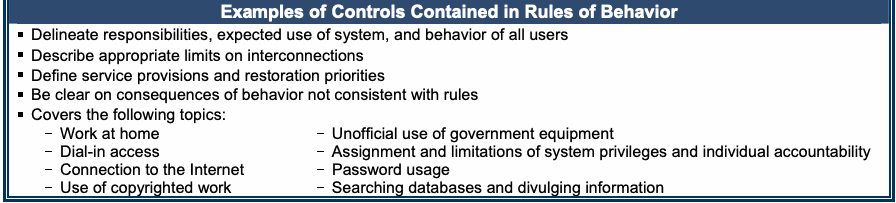
8.4 System Security Plan Approval
8.4 システムセキュリティ計画の承認
未レビュー訳Organizational policy should clearly define who is responsible for system security plan approval and procedures developed for plan submission, including any special memorandum language or other documentation required by the agency. Prior to the security certification and accreditation process, the authorizing official, independent from the system owner, typically approves the plan.
組織の方針では、システムセキュリティ計画の承認責任者と、機関が求める特別な覚書文言やその他の文書を含む、計画提出手順を明確に定めるべきである。セキュリティ認証・認定プロセスの前に、通常、システム所有者から独立した認可担当者が計画を承認する。
未レビュー訳8.4.1 System Boundary Analysis and Security Controls
8.4.1 システム境界の分析とセキュリティ管理策
Before the system security plan can be developed, the information system and the information resident within that system must be categorized based on a FIPS 199 impact analysis.59 Then a determination can be made as to which systems in the inventory can be logically grouped into GSSs or MAs. The FIPS 199 impact levels must be considered when the system boundaries are drawn and when selecting the initial set of security controls (e.g., control baseline). The baseline security controls can then be tailored based on an assessment of risk and local conditions, including organization-specific security requirements, specific threat information, cost-benefit analyses, the availability of compensating controls, or special circumstances. Common security controls, which is one of the tailoring considerations, must be identified prior to system security plan preparation to identify those controls covered at the agency level that are not system-specific. These common security controls can then be incorporated into the system security plan by reference. Figure 8-1 depicts how large GSSs can be broken down for the purpose of security planning. The process of uniquely assigning information resources60 to an information system defines the security boundary for that system. Agencies have great flexibility in determining what constitutes an information system (i.e., MA or GSS). If a set of information resources is identified as an information system, the resources should generally be under the same direct management control. Direct management control61 does not necessarily imply that there is no intervening management. It is also possible for an information system to contain multiple subsystems. A subsystem is a major subdivision or component of an information system consisting of information, information technology (IT), and personnel that perform one or more specific functions.
システムセキュリティ計画を作成する前に、FIPS 199の影響分析に基づき、情報システムとシステム内の情報を分類しなければならない。59 次に、資産目録にあるシステムのどれを論理的にグループ化し、GSSまたはMAにできるか判断する。システム境界の設定時と、初期のセキュリティ管理策一式（管理策ベースラインなど）の選定時には、FIPS 199の影響度を考慮しなければならない。その後、リスク評価や、組織固有のセキュリティ要件、具体的な脅威情報、費用便益分析、代替管理策の可用性、特別な状況などの現地条件に基づいて、ベースラインのセキュリティ管理策を調整できる。調整を検討する際の一要素である共通セキュリティ管理策は、システム固有ではなく機関レベルで対象となる管理策を特定するため、システムセキュリティ計画の作成前に特定しなければならない。これらの共通セキュリティ管理策は参照によりシステムセキュリティ計画に組み込める。図8-1に、セキュリティ計画のために大規模なGSSをどのように分割できるかを示す。情報資源60を特定の情報システムに一意に割り当てるプロセスによって、そのシステムのセキュリティ境界が定義される。機関には、何を情報システム（MAまたはGSS）とみなすかを決める大きな裁量がある。情報資源の集合を情報システムとして特定する場合、通常、それらの資源は同じ直接的な管理統制下に置くべきである。直接的な管理統制61とは、途中に別の管理層が存在しないことを必ずしも意味しない。また、情報システムに複数のサブシステムを含めることもできる。サブシステムとは、特定の機能を一つ以上実行する情報、情報技術（IT）、人員から成る、情報システムの主要な下位区分または構成要素である。
未レビュー訳8.4.2 Security Controls
8.4.2 セキュリティ管理策
未レビュー訳FIPS 200 provides seventeen minimum security requirements for federal information and information systems. The requirements represent a broad-based, balanced information security program that addresses the management, operational, and technical aspects of protecting the confidentiality, integrity, and availability of federal information and information systems. An agency must meet the minimum security requirements in this standard by applying security controls selected in accordance with NIST SP 800-53 and the designated impact levels of the information systems. An agency has the flexibility to tailor the security control baseline in accordance with the terms and conditions set forth in the standard. Tailoring activities include (1) the application of scoping guidance, (2) the specification of compensating controls, and (3) the specification of agency-defined parameters in the security controls, where allowed. The system security plan should document all tailoring activities.
FIPS 200は、連邦情報および情報システムに対する17の最低限のセキュリティ要件を定める。これらの要件は、連邦情報および情報システムの機密性、完全性、可用性を保護するため、管理面、運用面、技術面を扱う、広範で均衡の取れた情報セキュリティプログラムを示す。機関は、NIST SP 800-53と、情報システムに指定された影響度に従って選定したセキュリティ管理策を適用し、この規格の最低限の要件を満たさなければならない。規格に定める条件に従い、機関はセキュリティ管理策ベースラインを調整できる。調整には、（1）適用範囲の指針の適用、（2）代替管理策の指定、（3）許容される場合の、セキュリティ管理策における機関定義パラメータの指定が含まれる。システムセキュリティ計画には、すべての調整活動を記載すべきである。
未レビュー訳8.4.3 Scoping Guidance
8.4.3 適用範囲の指針
未レビュー訳Subsystems typically fall under the same management authority and are included within a single system security plan. Figure 8-1 depicted a GSS with three subsystems. Scoping guidance provides an agency with specific terms and conditions on the applicability and implementation of individual security controls in the security control baselines defined in NIST SP 800-53. Several considerations described below can potentially impact how the baseline security controls are applied by the agency. System security plans should clearly identify which security controls used scoping guidance and include a description of the type of considerations that were made. The application of scoping guidance must be reviewed and approved by the authorizing official for the information system.
通常、サブシステムは同じ管理権限の下にあり、一つのシステムセキュリティ計画に含まれる。図8-1は、3つのサブシステムを含むGSSを示していた。適用範囲の指針は、NIST SP 800-53で定義されたセキュリティ管理策ベースラインの個々の管理策について、適用性と実装に関する具体的な条件を機関に示す。以下に説明するいくつかの考慮事項は、機関がベースラインのセキュリティ管理策を適用する方法に影響する可能性がある。システムセキュリティ計画では、適用範囲の指針を使用したセキュリティ管理策を明確に特定し、考慮した事項の種類を説明すべきである。適用範囲の指針の適用は、当該情報システムの認可担当者がレビューして承認しなければならない。
未レビュー訳AGENCY GENERAL SUPPORT SYSTEM FIPS 199 High Impact
機関の一般支援システム／FIPS 199：高影響
未レビュー訳LOCAL AREA
ローカルエリア
未レビュー訳LOCAL AREA
ローカルエリア
未レビュー訳SYSTEM
システム
未レビュー訳NETWORK ALPHA
ネットワーク・アルファ
未レビュー訳NETWORK BRAVO
ネットワーク・ブラボー
未レビュー訳GUARD
ガード
未レビュー訳FIPS 199
FIPS 199
未レビュー訳FIPS 199
FIPS 199
未レビュー訳FIPS 199
FIPS 199
未レビュー訳High Impact
高影響
未レビュー訳Moderate Impact
中影響
未レビュー訳Subsystem Boundary
サブシステム境界
未レビュー訳Subsystem Boundary
サブシステム境界
未レビュー訳Subsystem Boundary
サブシステム境界
未レビュー訳General Support System Boundary
一般支援システムの境界
未レビュー訳•One system security plan reflects information system decomposition with adequate security controls assigned to each subsystem component.
•一つのシステムセキュリティ計画で情報システムを分解し、各サブシステム構成要素に適切なセキュリティ管理策を割り当てる。
未レビュー訳Figure 8-1. Decomposition of Large and Complex Information Systems
図8-1 大規模で複雑な情報システムの分解
未レビュー訳8.4.4 Compensating Controls
8.4.4 代替管理策
未レビュー訳Compensating security controls are the management, operational, or technical controls used by an agency in lieu of prescribed controls in the low, moderate, or high security control baselines, which provide equivalent or comparable protection for an information system. Compensating security controls for an information system will be used by an agency only under the following conditions: (1) the agency selects the compensating controls from the security control catalog in NIST SP 800-53, (2) the agency provides a complete and convincing rationale and justification for how the compensating controls provide an equivalent security capability or level of protection for the information system, and (3) the agency assesses and formally accepts the risk associated with using the compensating controls in the information system. The use of compensating security controls must be reviewed, documented in the system security plan, and approved by the authorizing official for the information system.
補償的セキュリティ管理策とは、情報システムに対して同等または同程度の保護を提供するため、機関が低・中・高のセキュリティ管理策ベースラインで規定された管理策の代わりに用いる、管理的、運用的、または技術的な管理策である。情報システムに対する補償的セキュリティ管理策を機関が用いるのは、次の条件をすべて満たす場合に限る。(1) NIST SP 800-53のセキュリティ管理策カタログから補償的管理策を選択する。(2) 補償的管理策が情報システムに同等のセキュリティ能力または保護水準を提供する方法について、十分かつ説得力のある論拠と正当化を示す。(3) 情報システムで補償的管理策を用いることに伴うリスクを評価し、正式に受容する。補償的セキュリティ管理策の使用は、レビューを受け、システムセキュリティ計画に記録され、当該情報システムの認可責任者の承認を得なければならない。
未レビュー訳8.4.5 Common Security Controls
8.4.5 共通セキュリティ管理策
An agency-wide view of the information security program facilitates the identification of common security controls that can be applied to one or more agency information systems. Common security controls can apply to (1) all agency information systems; (2) a group of information systems at a specific site (sometimes associated with the term site certification/accreditation); or (3) common information systems, subsystems, or applications (i.e., common hardware, software, and/or firmware) deployed at multiple operational sites (sometimes associated with the term type certification/accreditation). Common security controls—typically identified during a collaborative agency-wide process that involves the CIO, SAISO, authorizing officials, information system owners, and ISSOs (and by developmental program managers in the case of common security controls for common hardware, software, and/or firmware)—have the following properties:
機関全体の情報セキュリティプログラムを俯瞰することで、1つ以上の機関情報システムに適用できる共通セキュリティ管理策を特定しやすくなる。共通セキュリティ管理策は、(1) 機関のすべての情報システム、(2) 特定の拠点にある情報システム群（サイト認証／認定という用語と関連付けられることがある）、または (3) 複数の運用拠点に配備された共通情報システム、サブシステム、もしくはアプリケーション（すなわち共通のハードウェア、ソフトウェア、ファームウェア）に適用できる。通常、CIO、SAISO、認可責任者、情報システム所有者、ISSOが参加する機関全体の協働プロセスで特定される共通セキュリティ管理策（共通のハードウェア、ソフトウェア、ファームウェアに関する共通セキュリティ管理策の場合は、開発プログラムマネージャーも参加する）には、次の特性がある。
未レビュー訳•The development, implementation, and assessment of common security controls can be assigned to responsible agency officials or organizational elements (other than the information system owners whose systems will implement or use those common security controls).
•共通セキュリティ管理策の策定、実装、評価は、それらの管理策を実装または使用する情報システムの所有者以外の、責任を負う機関職員または組織要素に割り当てることができる。
未レビュー訳•The results from the assessment of the common security controls can be used to support the security certification and accreditation processes of agency information systems where those controls have been applied.
•共通セキュリティ管理策の評価結果は、それらの管理策を適用した機関情報システムのセキュリティ認証および認定プロセスを裏付けるために利用できる。
For efficiency in developing system security plans, common security controls should be documented once and then inserted or imported into each system security plan for the information systems within the agency. Effectively maximizing the application of common controls in the system security planning process depends on the following factors:
システムセキュリティ計画を効率的に作成するため、共通セキュリティ管理策は一度だけ文書化し、その後、機関内で当該管理策を適用する情報システムごとの計画に挿入または取り込むべきである。システムセキュリティ計画の策定過程で共通管理策の適用を効果的に最大化できるかどうかは、次の要因による。
未レビュー訳•The agency has developed, documented, and communicated its specific guidance on identifying common security controls.
•機関が、共通セキュリティ管理策を特定するための具体的な指針を策定し、文書化して、周知している。
•The agency has assigned the responsibility for coordinating common security control identification and review and obtaining consensus on the common control designations with a management official, such as the CIO or SAISO, with security program responsibilities.
•機関が、共通セキュリティ管理策の特定とレビューを調整し、共通管理策の指定について合意を得る責任を、セキュリティプログラムを担当するCIOやSAISOなどの管理職に割り当てている。
未レビュー訳•System owners have been briefed on the system security planning process, including use of common controls.
•システム所有者が、共通管理策の使用を含むシステムセキュリティ計画プロセスについて説明を受けている。
•Agency experts in the common control areas identified have been consulted as part of the process.
•特定された共通管理策分野の機関内専門家に、プロセスの一環として相談している。
While the concept of security control partitioning into common security controls and system-specific controls is straightforward and intuitive, the application of this principle within an agency takes planning, coordination, and perseverance. If an agency is just beginning to implement this approach or has only partially implemented this approach, it may take some time to get the maximum benefits from security control partitioning and the associated reuse of assessment evidence. Because of the potential dependence on common security controls by many of an agency's information systems, a failure of such common controls may result in a significant increase in agency-level risk—risk that arises from operating the systems that depend on these security controls.
セキュリティ管理策を共通管理策とシステム固有管理策に分ける考え方は単純明快だが、機関内でこの原則を適用するには、計画、調整、粘り強さが必要となる。機関がこの方式を導入し始めたばかりの場合、または一部だけ導入している場合は、管理策の分割と、それに伴う評価証拠の再利用から最大限の効果を得るまでに時間がかかることがある。多くの機関情報システムが共通セキュリティ管理策に依存する可能性があるため、共通管理策に障害が起きると、機関レベルのリスクが大幅に高まることがある。このリスクは、当該管理策に依存するシステムを運用することから生じる。
未レビュー訳8.5 Security Control Selection
8.5 セキュリティ管理策の選択
An agency must meet the minimum security requirements in FIPS 199 by selecting the appropriate security controls and assurance requirements as described in NIST SP 800-53. The process of selecting the appropriate security controls and assurance requirements for agency information systems to achieve adequate security62 is a multifaceted, risk-based activity involving management and operational personnel within the agency. Security categorization of federal information and information systems, as required by FIPS 199, is the first step in the risk management process.63 Subsequent to the security categorization process, an agency must select an appropriate set of security controls for their information systems that satisfy the minimum security requirements set forth in FIPS 200. The selected set of security controls must be one of three security control baselines from NIST SP 800-53 (see Table 8-2) that are associated with the designated impact levels of the agency information systems as determined during the security categorization process.
機関は、NIST SP 800-53に記載された方法に従って適切なセキュリティ管理策と保証要件を選択し、FIPS 199の最低限のセキュリティ要件を満たさなければならない。機関情報システムに十分なセキュリティ62を実現するために適切なセキュリティ管理策と保証要件を選択するプロセスは、多面的なリスクベースの活動であり、機関内の管理職員と運用担当者が関与する。FIPS 199が求める連邦情報および情報システムのセキュリティ分類は、リスク管理プロセスの第一段階である。63 セキュリティ分類の後、機関は情報システムに適切な一連のセキュリティ管理策を選択しなければならない。この管理策は、FIPS 200に定める最低限のセキュリティ要件を満たすものである。選択する管理策は、セキュリティ分類プロセスで決定した機関情報システムの指定影響度に対応する、NIST SP 800-53の3つのセキュリティ管理策ベースライン（表8-2参照）のいずれかでなければならない。
未レビュー訳•For low-impact information systems, an agency must, at a minimum, use the security controls from the low baseline of security controls defined in NIST SP 800-53 and must ensure that the minimum assurance requirements associated with the low baseline are satisfied.
•低影響度の情報システムについて、機関は最低限、NIST SP 800-53で定める低ベースラインのセキュリティ管理策を用い、低ベースラインに関連する最低保証要件を満たさなければならない。
未レビュー訳•For moderate-impact information systems, an agency must, at a minimum, employ the security controls from the moderate baseline of security controls defined in NIST SP 800-53 and must ensure that the minimum assurance requirements associated with the moderate baseline are satisfied.
•中影響度の情報システムについて、機関は最低限、NIST SP 800-53で定める中ベースラインのセキュリティ管理策を採用し、中ベースラインに関連する最低保証要件を満たさなければならない。
•For high-impact information systems, an agency must, at a minimum, use the security controls from the high baseline of security controls defined in NIST SP 800-53 and must ensure that the minimum assurance requirements associated with the high baseline are satisfied.
•高影響度の情報システムについて、機関は最低限、NIST SP 800-53で定める高ベースラインのセキュリティ管理策を用い、高ベースラインに関連する最低保証要件を満たさなければならない。
Table 8-2. FIPS 199 Categorization
表8-2. FIPS 199の分類
未レビュー訳| Potential Impact | |||
| Security Objective | Low | Moderate | High |
| Confidentiality Preserving authorized restrictions on information access and disclosure, including means for protecting personal privacy and proprietary information. [44 U.S.C., SEC. 3542] | The unauthorized disclosure of information could be expected to have a limited adverse effect on organizational operations, organizational assets, or individuals. | The unauthorized disclosure of information could be expected to have a serious adverse effect on organizational operations, organizational assets, or individuals. | The unauthorized disclosure of information could be expected to have a severe or catastrophic adverse effect on organizational operations, organizational assets, or individuals. |
| Integrity Guarding against improper information modification or destruction, and includes ensuring information non-repudiation and authenticity. [44 U.S.C., SEC. 3542] | The unauthorized modification or destruction of information could be expected to have a limited adverse effect on organizational operations, organizational assets, or individuals. | The unauthorized modification or destruction of information could be expected to have a serious adverse effect on organizational operations, organizational assets, or individuals. | The unauthorized modification or destruction of information could be expected to have a severe or catastrophic adverse effect on organizational operations, organizational assets, or individuals. |
| Availability Ensuring timely and reliable access to and use of information. [44 U.S.C., SEC. 3542] | The disruption of access to or use of information or an information system could be expected to have a limited adverse effect on organizational operations, organizational assets, or individuals. | The disruption of access to or use of information or an information system could be expected to have a serious adverse effect on organizational operations, organizational assets, or individuals. | The disruption of access to or use of information or an information system could be expected to have a severe or catastrophic adverse effect on organizational operations, organizational assets, or individuals. |
原本PDFの抜粋画像
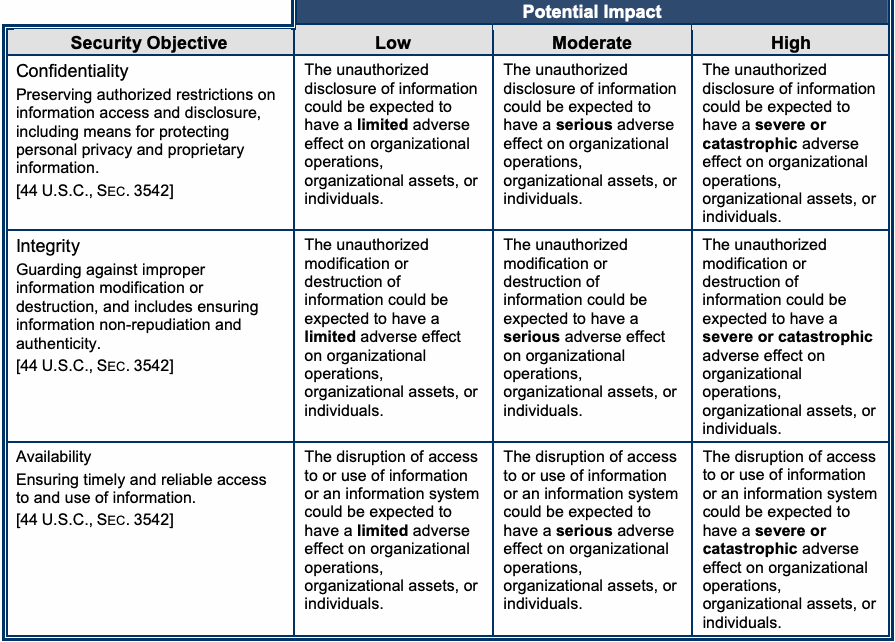
| 潜在的影響 | |||
| セキュリティ目的 | 低 | 中 | 高 |
| 機密性 情報へのアクセスおよび開示に関する認可された制限を維持すること。これには、個人のプライバシーおよび専有情報を保護する手段が含まれる。[44 U.S.C., SEC. 3542] | 情報の不正な開示により、組織の運用、組織の資産、または個人に限定的な悪影響が生じると予想される。 | 情報の不正な開示により、組織の運用、組織の資産、または個人に重大な悪影響が生じると予想される。 | 情報の不正な開示により、組織の運用、組織の資産、または個人に深刻または壊滅的な悪影響が生じると予想される。 |
| 完全性 不適切な情報の改変または破壊を防止すること。情報の否認防止および真正性の確保も含む。[44 U.S.C., SEC. 3542] | 情報の不正な改変または破壊により、組織の運用、組織の資産、または個人に限定的な悪影響が生じると予想される。 | 情報の不正な改変または破壊により、組織の運用、組織の資産、または個人に重大な悪影響が生じると予想される。 | 情報の不正な改変または破壊により、組織の運用、組織の資産、または個人に深刻または壊滅的な悪影響が生じると予想される。 |
| 可用性 情報への適時かつ信頼できるアクセスとその利用を確保すること。[44 U.S.C., SEC. 3542] | 情報または情報システムへのアクセスもしくは利用の中断により、組織の運用、組織の資産、または個人に限定的な悪影響が生じると予想される。 | 情報または情報システムへのアクセスもしくは利用の中断により、組織の運用、組織の資産、または個人に重大な悪影響が生じると予想される。 | 情報または情報システムへのアクセスもしくは利用の中断により、組織の運用、組織の資産、または個人に深刻または壊滅的な悪影響が生じると予想される。 |
8.6 Completion and Approval Dates
8.6 完了日および承認日
The completion date of the system security plan should be provided. The completion date should be updated whenever the plan is periodically reviewed and updated. The system security plan should also contain the date the authorizing official or the designated approving authority approves the plan. Approval documentation, e.g., accreditation letter, should be on file or attached as part of the plan.
システムセキュリティ計画の完了日を記載するべきである。計画を定期的にレビューして更新するたびに、完了日も更新するべきである。また、認可責任者または指定承認機関が計画を承認した日付も記載するべきである。認可書などの承認記録は、ファイルに保管するか、計画に添付するべきである。
未レビュー訳8.7 Ongoing System Security Plan Maintenance
8.7 システムセキュリティ計画の継続的な保守
Once the information system security plan is accredited, it is important to periodically assess the plan; review any change in system status, functionality, design, etc.; and ensure that the plan continues to reflect the correct information about the system. This documentation and its accuracy are imperative for system recertification and reaccreditation activity. All plans should be reviewed and updated, if appropriate, at least annually. Some items to include in the review are:
情報システムセキュリティ計画の認定後は、計画を定期的に評価し、システムの状態、機能、設計などの変更をレビューして、計画にシステムの正確な情報が反映され続けるようにすることが重要である。この文書とその正確性は、システムの再認証および再認定に不可欠である。すべての計画は、少なくとも年1回レビューし、必要に応じて更新するべきである。レビュー項目の例を次に示す。
未レビュー訳•Change in information system owner;
•情報システム所有者の変更
•Change in information security representative;
•情報セキュリティ担当者の変更
未レビュー訳•Major change in system architecture;
•システムアーキテクチャの大幅な変更
•Change in system status;
•システム状態の変更
未レビュー訳•Additions/deletions of system interconnections;
•システム間接続の追加または削除
•Change in system scope; and
•システム範囲の変更
未レビュー訳•Change in authorizing official.
•認可責任者の変更
未レビュー訳The objective of system security planning is to improve the protection of information system resources. All federal systems have some level of sensitivity and require protection as part of good management practice. The protection of a system must be documented in a system security plan. The completion of system security plans is a requirement of the OMB Circular A-130, Management of Federal Information Resources, Appendix III, Security of Federal Automated Information Resources, and Title III of the E-Government Act, FISMA.
システムセキュリティ計画の目的は、情報システム資源の保護を強化することである。すべての連邦システムには一定の機密性があり、適切な管理慣行の一環として保護が必要である。システムの保護内容は、システムセキュリティ計画に文書化しなければならない。システムセキュリティ計画の作成は、OMB通達A-130「連邦情報資源の管理」付録III「連邦自動化情報資源のセキュリティ」、および電子政府法第III編（FISMA）の要件である。
未レビュー訳For the plans to adequately reflect the protection of the resources, a senior management official must authorize a system to process information or operate. This authorization provides an important quality control. By authorizing processing in a system, the manager accepts its associated risk.
計画に資源の保護を適切に反映させるには、上級管理職員が、情報を処理する、または運用するシステムを認可しなければならない。この認可は重要な品質管理となる。システムでの処理を認可することにより、管理者はそれに伴うリスクを受容する。
未レビュー訳Management authorization should be based on an assessment of management, operational, and technical controls. Since the system security plan establishes and documents the security controls, it should form the basis for the authorization, supplemented by the assessment report and the POA&Ms. In addition, a periodic review of controls should also contribute to future authorizations. Reauthorization should occur prior to a significant change in processing, but at least every three years.
管理者の認可は、管理的、運用的、技術的管理策の評価に基づくべきである。システムセキュリティ計画はセキュリティ管理策を定め、文書化するため、評価報告書とPOA&Mで補完したうえで、認可の基礎とするべきである。さらに、管理策の定期的なレビューも、その後の認可に反映するべきである。処理に重大な変更が生じる前に再認可を行うべきであり、少なくとも3年ごとに行わなければならない。
未レビュー訳Website: www.csrc.nist.gov
ウェブサイト: www.csrc.nist.gov
未レビュー訳References: Public Law 107-347 [H.R. 2458], The E-Government Act of 2002, Title III of this Act is the Federal Information Security Management Act of 2002 (FISMA), December 17, 2002.
参考文献: 公法107-347 [H.R. 2458]、2002年電子政府法。本法第III編は、2002年連邦情報セキュリティ管理法（FISMA）である。2002年12月17日。
Office of Management and Budget Circular A-130, Management of Federal Information Resources, November 2000.
行政管理予算局通達A-130「連邦情報資源の管理」、2000年11月。
未レビュー訳Federal Information Processing Standard 199, Standards for Security Categorization of Federal Information and Information Systems, February 2004.
連邦情報処理規格199「連邦情報および情報システムのセキュリティ分類に関する規格」、2004年2月。
Federal Information Processing Standard 200, Minimum Security Requirements for Federal Information and Information Systems, March 2006.
連邦情報処理規格200「連邦情報および情報システムの最低セキュリティ要件」、2006年3月。
National Institute of Standards and Technology Special Publication 800-18, Revision 1, Guide for Developing Security Plans for Federal Information Systems, February 2006.
国立標準技術研究所特別刊行物 SP 800-18改訂1「連邦情報システムのセキュリティ計画策定ガイド」、2006年2月。
National Institute of Standards and Technology Special Publication 800-30, Risk Management Guide for Information Technology Systems, July 2002.
国立標準技術研究所特別刊行物 SP 800-30「情報技術システムのリスク管理ガイド」、2002年7月。
未レビュー訳National Institute of Standards and Technology Special Publication 800-37, Guide for the Security Certification and Accreditation of Federal Information Systems, May 2004.
国立標準技術研究所特別刊行物 SP 800-37「連邦情報システムのセキュリティ認証および認定ガイド」、2004年5月。
National Institute of Standards and Technology Special Publication 800-53, Revision 1, Recommended Security Controls for Federal Information System, February 2006.
国立標準技術研究所特別刊行物 SP 800-53改訂1「連邦情報システム向け推奨セキュリティ管理策」、2006年2月。
National Institute of Standards and Technology Special Publication 800-60, Guide for Mapping Types of Information and Information Systems to Security Categories, June 2004.
国立標準技術研究所特別刊行物 SP 800-60「情報の種類および情報システムをセキュリティカテゴリに対応付けるためのガイド」、2004年6月。
National Institute of Standards and Technology Special Publication 800-64, Security Considerations in the Information System Development Life Cycle, Rev. 1 June 2004.
国立標準技術研究所特別刊行物 SP 800-64「情報システム開発ライフサイクルにおけるセキュリティ上の考慮事項」、改訂1、2004年6月。
Chapter 9
第9章
未レビュー訳9. Information Technology Contingency Planning
9. 情報技術のコンティンジェンシープランニング
未レビュー訳Information technology (IT) contingency planning is one modular piece of a larger contingency and continuity of operations (COOP) planning process that encompasses IT, business processes, risk management, financial management, crisis communications, safety and security of personnel and property, and continuity of government. Each piece is operative in its own right, but in concert creates synergy that efficiently and effectively protects the entire organization.64
情報技術（IT）のコンティンジェンシープランニングは、IT、業務プロセス、リスク管理、財務管理、危機広報、人員および資産の安全と保護、ならびに政府機能の継続を含む、より広範なコンティンジェンシーおよび業務継続（COOP）計画プロセスを構成するモジュールの1つである。それぞれの要素は単独でも機能するが、連携することで相乗効果が生まれ、組織全体を効率的かつ効果的に保護する。64
未レビュー訳Contingency planning for information systems is a required process for developing general support systems (GSS) and major applications (MA) with appropriate backup methods and procedures for implementing data recovery and reconstitution against IT risks.65 Risks to information systems may be natural, technological, or human in nature. Contingency planning consists of a process for recovery and documentation of procedures for conducting recovery. National Institute of Standards and Technology (NIST) Special Publication (SP) 800-34, Contingency Planning for Information Technology Systems, details a seven-step methodology for developing an IT contingency process and plan. Planning, implementing, and testing the contingency strategy are addressed by six of the seven steps; documenting the plan and establishing procedures and personnel organization to implement the strategy is the final step. SP 800-34 also includes technical considerations for developing recovery strategies.
情報システムのコンティンジェンシープランニングは、一般支援システム（GSS）および主要アプリケーション（MA）を開発する際に、適切なバックアップ方法と、ITリスクに備えてデータを復旧・再構成する手順を整備するために必要なプロセスである。情報システムへのリスクは、自然災害、技術的要因、または人為的要因によって生じる。コンティンジェンシープランニングには、復旧プロセスと、復旧を実行する手順の文書化が含まれる。国立標準技術研究所（NIST）特別刊行物（SP）800-34「情報技術システムのコンティンジェンシープランニング」は、ITコンティンジェンシープロセスおよび計画を策定するための7段階の方法論を詳述している。7段階のうち6段階でコンティンジェンシー戦略の計画、実装、テストを扱い、最終段階で計画を文書化するとともに、戦略を実行するための手順および人員体制を確立する。SP 800-34には、復旧戦略を策定する際の技術的な考慮事項も含まれる。
未レビュー訳Figure 9-1 highlights contingency planning activities involved in each step that should be addressed during all phases of the system development life cycle (SDLC).66
図9-1は、システム開発ライフサイクル（SDLC）のすべての段階で扱うべき、各段階のコンティンジェンシープランニング活動を示す。66
未レビュー訳The capability to recover and reconstitute data should be integral to the information system design concept during the Initiation phase. Recovery strategies should be built into the GSS or MA’s architecture during the Development phase. The contingency processes should be tested and maintained during the Implementation phase; contingency plans should be exercised and maintained during the Operations/Maintenance phase. When the information system has reached the Disposal phase, the legacy system should remain intact and operational as a contingency to the replaced information system until, at least, the new system has been sufficiently tested. At some point, the legacy system may no longer support the needs of the organization, and the recovery strategy may transition away from the legacy system to a new recovery strategy designed during the Development phase of the new system.
データを復旧および再構成する能力は、開始段階から情報システムの設計構想に組み込むべきである。開発段階では、復旧戦略をGSSまたはMAのアーキテクチャに組み込むべきである。実装段階では、コンティンジェンシープロセスをテストし、維持するべきである。運用／保守段階では、コンティンジェンシー計画を演習し、維持するべきである。情報システムが廃止段階に入った後も、新システムが十分にテストされるまでは、置き換え対象の旧システムを稼働可能な状態で維持し、新システムのコンティンジェンシーとして利用するべきである。その後、旧システムが組織のニーズを満たせなくなった時点で、旧システムから、新システムの開発段階で設計した新たな復旧戦略へ移行することができる。
未レビュー訳Figure 9-1. The Seven-Step IT Contingency Planning Process
図9-1. ITコンティンジェンシープランニングの7段階プロセス
未レビュー訳9.1 Step 1: Develop Contingency Planning Policy Statement
9.1 ステップ1: コンティンジェンシープランニング方針声明の策定
When developing an IT contingency plan, the first step is to establish a contingency planning policy within the organization. This policy may exist at the department, agency, and/or program level of the organization. The statement should define the organization’s overall contingency objectives; identify leadership, roles and responsibilities, resource requirements, test, training, and exercise schedules; and develop maintenance schedules and determine the minimum required backup frequency.
ITコンティンジェンシー計画を策定する際、最初のステップは組織内でコンティンジェンシープランニング方針を定めることである。この方針は、組織の省庁、機関、および／またはプログラムの各レベルに存在する場合がある。方針書では、組織全体のコンティンジェンシー目標を定め、リーダーシップ、役割と責任、必要資源、テスト・訓練・演習のスケジュールを明確にし、保守スケジュールを策定するとともに、必要最小限のバックアップ頻度を決定するべきである。
未レビュー訳9.2 Step 2: Conduct Business Impact Analysis
9.2 ステップ2: 事業影響分析の実施
A business impact analysis
事業影響分析
未レビュー訳BIA Critical Resource Example
BIA 重要資源の例
未レビュー訳(BIA) is a critical step to understanding the information Time and attendance reporting may require use of a local
（BIA）は、情報を理解するための重要な段階である。勤怠報告では、ローカル
未レビュー訳area network (LAN) server, wide area network (WAN)
エリアネットワーク（LAN）サーバー、広域ネットワーク（WAN）
未レビュー訳systems components, interdependencies, and potential access, e-mail, and an e-mail server.. downtime impacts. Contingency plan strategy and procedures should be designed in consideration of the results of the BIA.
システムの構成要素、相互依存関係、および潜在的な停止による影響を理解するうえで重要な段階である。アクセス、電子メール、および電子メールサーバーが必要になることもある。コンティンジェンシー計画の戦略と手順は、BIAの結果を考慮して設計するべきである。
未レビュー訳A BIA is conducted by identifying the system’s critical
BIAは、システムの重要な
未レビュー訳BIA Resource Impact Example
BIA 資源影響の例
未レビュー訳resources. Each critical
資源を特定して実施する。各重要な
未レビュー訳LAN disruption to the time and attendance reporting system
勤怠報告システムでLANが停止すると、
未レビュー訳resource is then further
資源について、さらに
未レビュー訳for 8 hours may create a delay in time sheet processing.
8時間の停止により、タイムシート処理に遅れが生じることがある。
未レビュー訳examined to determine how long functionality of the resource could be withheld from the information system before an unacceptable impact is experienced.
その資源の機能を情報システムで利用できなくなってから、許容できない影響が生じるまでにどれほどの時間があるかを判断するために調査する。
未レビュー訳The impact may be something that materializes over time or may be tracked across related resources and dependent systems (e.g., cascading domino effect). The time identified is called a maximum allowable outage (MAO). Based on the potential impacts, the amount of time the information system
影響は時間の経過とともに顕在化することもあれば、関連する資源や依存システムにまたがって追跡されることもある（連鎖的なドミノ効果など）。特定した時間を最大許容停止時間（MAO）と呼ぶ。潜在的影響に基づき、情報システムが重要な資源を利用できないままでいられる時間を
未レビュー訳BIA Recovery Time Objective Example The LAN server must be recovered within 8 hours to avoid a
BIA 復旧時間目標の例 LANサーバーは、
未レビュー訳delay in time sheet processing. can be without the critical resource then provides a recourse recovery priority around which an organization can plan recovery activities. The balancing point between the MAO and the cost to recover establishes the information system’s recovery time objective (RTO). Recovery strategies must be created to meet the RTO.
タイムシート処理の遅延を避けるため、8時間以内に復旧しなければならない。重要な資源を利用できない状態で情報システムを運用できる時間は、組織が復旧活動を計画するための復旧優先順位の基礎となる。MAOと復旧費用の釣り合う点によって、情報システムの復旧時間目標（RTO）が定まる。RTOを満たす復旧戦略を策定しなければならない。
未レビュー訳The strategy must also address recovering information system critical components within a priority, as established by their individual RTOs.
また、個々のRTOで定めた優先順位に従って、情報システムの重要な構成要素を復旧することも戦略に含めなければならない。
未レビュー訳9.3 Step 3: Identify Preventive Controls
9.3 ステップ3: 予防的管理策の特定
In some cases, implementing preventive controls might mitigate outage impacts identified by the BIA. Preventive controls are measures that detect, deter, and/or reduce impacts to the system. When cost-effective, preventing an impact is desired over implementing recovery strategies (and therefore risking data loss and impact to the organization). Preventive measures are specific to individual components and the environment in which the components operate. Common controls include:
場合によっては、予防的管理策を実装することで、BIAで特定された停止の影響を軽減できる。予防的管理策とは、システムへの影響を検知、抑止、および／または低減する措置である。費用対効果が高い場合は、復旧戦略を実装して（その結果、データ損失や組織への影響のリスクを負って）対処するより、影響の発生を防ぐことが望ましい。予防措置は個々の構成要素と、その構成要素が稼働する環境に応じたものである。一般的な管理策には次のものがある。
未レビュー訳•Uninterruptible power supply (UPS);
•無停電電源装置（UPS）
•Fire suppression systems;
•消火システム
•Gasoline or diesel-powered generators;
•ガソリンまたはディーゼル燃料の発電機
•Air conditioning systems with excess capacity to permit failure of certain components;
•一部の構成要素が故障しても運転できる余裕容量を備えた空調システム;
•Heat-resistant and waterproof containers for backup media and vital
•バックアップ媒体および重要な
未レビュー訳•nonelectronic records; and
•非電子記録用の耐熱・防水の容器、および
未レビュー訳•Frequent, scheduled data backups.
•頻繁かつ計画的なデータバックアップ。
9.4 Step 4: Develop Recovery Strategies
9.4 ステップ4: 復旧戦略の策定
When a disruption occurs despite the preventive
予防的管理策を実施していても障害が発生した場合は、
未レビュー訳Recovery Strategy Tip
復旧戦略のヒント
未レビュー訳measures implemented, a
復旧戦略を
未レビュー訳The chosen strategy must also be coordinated with the IT
選択した戦略は、IT
未レビュー訳recovery strategy must be in
整備されていなければならず、
未レビュー訳contingency plans of interdependent systems and business
相互依存するシステムのコンティンジェンシー計画、および相互依存する事業の
未レビュー訳place to recover and restore
データを回復し、
未レビュー訳continuity plans of interdependent business processes.
プロセスの業務継続計画と調整しなければならない。
未レビュー訳data and system operations within the RTO period. The recovery strategy is designed from a combination of methods, which together address the full spectrum of information system risks. Several options may be evaluated during the Development phase; the most cost-effective option, based on potential impact, should be selected and integrated into the information system architecture and operating procedures.
RTOの期間内にシステム運用を復旧する。復旧戦略は、情報システムのあらゆるリスクに対応する複数の手法を組み合わせて設計する。開発段階では複数の選択肢を評価できる。潜在的影響を踏まえて最も費用対効果の高い選択肢を選択し、情報システムのアーキテクチャおよび運用手順に統合するべきである。
未レビュー訳System data must be backed up regularly; therefore, all IT
システムデータは定期的にバックアップしなければならない。したがって、すべてのIT
未レビュー訳Recovery Strategy Tip
復旧戦略のヒント
未レビュー訳contingency plans should
コンティンジェンシー計画には、
未レビュー訳Stored data should be routinely tested to validate backed-
保存データは、バックアップされた
未レビュー訳include a method and frequency
バックアップ方法と実施頻度を
未レビュー訳up data integrity.
データの完全性を検証するため、定期的にテストするべきである。
未レビュー訳for conducting data backups. The frequency of backup methods—daily or weekly, incremental or full—should be selected based on system criticality when new information is introduced. The backup method selected should be based on system and data availability and integrity requirements (as defined in the BIA). Data that is backed up may need to be stored offsite and rotated frequently, depending upon the criticality of the system.
含めるべきである。バックアップの実施頻度や方式（日次／週次、増分／全量）は、新しい情報が追加された時点でのシステムの重要度に基づいて選択するべきである。選択するバックアップ方式は、システムとデータの可用性および完全性の要件（BIAで定義）に基づくべきである。システムの重要度によっては、バックアップデータをオフサイトに保管し、頻繁にローテーションする必要がある。
未レビュー訳Major disruptions to system operations may require restoration activities to be implemented at an alternate site. The type of alternate site selected must be based on RTO requirements and budget limitations. Equipment for recovering and/or replacing the information system must be provided as part of the recovery strategy. Cost, delivery time, and compatibility factors must also be considered when determining how to provide the necessary equipment. Agencies must also plan for an alternate site that, at a minimum, provides workspace for all contingency plan personnel, equipment, and the appropriate IT infrastructure necessary to execute IT contingency plan and system recovery activities.
システム運用に重大な障害が生じた場合、代替サイトで復元作業を実施する必要がある。選択する代替サイトの種類は、RTO要件と予算上の制約に基づかなければならない。復旧戦略には、情報システムを復旧および／または置き換えるための機器を用意しなければならない。必要な機器の提供方法を決める際には、費用、納期、互換性も考慮しなければならない。機関は、最低限、コンティンジェンシー計画の要員全員が使う作業場所、機器、ならびにITコンティンジェンシー計画およびシステム復旧活動の実施に必要な適切なIT基盤を提供する代替サイトも計画しなければならない。
未レビュー訳The level of operational readiness of the alternate site is an important characteristic to determine when developing the recovery strategy. NIST SP 800-34 provides an overview of the common types of alternate sites.
代替サイトの運用準備状況は、復旧戦略を策定する際に把握すべき重要な特性である。NIST SP 800-34は、一般的な代替サイトの種類を概説している。
未レビュー訳The recovery strategy requires personnel to implement the procedures and test operability. Generally, a member of the organization’s senior leadership is selected to activate the plan and lead overall recovery operations. Appropriate teams of personnel (at least two people to ensure there is a primary and alternate available to execute procedures) are identified to be responsible for specific aspects of the plan.
復旧戦略を実施して手順の運用性をテストするには、要員が必要である。通常、組織の上級幹部の1人を計画の発動および復旧作業全体の指揮に選任する。計画の特定の側面を担当する要員チームを編成し、手順を実行する主担当者と代替担当者を確保するため、各チームには少なくとも2人を置く。
未レビュー訳Personnel should be chosen to staff the teams based on their normal responsibilities, system knowledge, and availability to recover the system on an on-call basis. A line of succession should be defined to ensure that someone can assume the role of senior leadership if the plan leader is unable to respond.
チーム要員は、通常の職務、システムに関する知識、およびオンコールでシステムを復旧できる可用性に基づいて選ぶべきである。計画責任者が対応できない場合に上級幹部の役割を引き継げるよう、後継順位を定めるべきである。
未レビュー訳Having selected choices for each component of the recovery strategy, the final consideration should be given to cost. The recovery strategy must meet criticality, availability, and RTO requirements while remaining within budget. Less obvious costs—such as shipping, awareness programs, tests and exercises, travel, labor hours, and contracted services—must also be incorporated into the evaluation.
復旧戦略の各要素を選択した後、最後に費用を検討するべきである。復旧戦略は、予算内に収めながら、重要度、可用性、RTOの要件を満たさなければならない。輸送費、啓発プログラム、テストと演習、出張費、人件費、委託サービスなど、見落としやすい費用も評価に含めなければならない。
未レビュー訳9.5 Step 5: Develop IT Contingency Plan
9.5 ステップ5: ITコンティンジェンシー計画の策定
Procedures for executing the recovery strategy are outlined in the IT contingency plan. The plan must be written in a format that will provide the users (recovery team leadership and members) the context in which the plan is to be implemented and the direct procedures, based on role, to execute. IT contingency plans are constructed using five components as depicted in Figure 9-2.
復旧戦略を実行する手順は、ITコンティンジェンシー計画に記載する。計画は、利用者（復旧チームの指揮者およびメンバー）が実施状況を理解できる背景情報と、役割に応じて実行する具体的な手順を示す形式で作成しなければならない。ITコンティンジェンシー計画は、図9-2に示す5つの構成要素で作成する。
未レビュー訳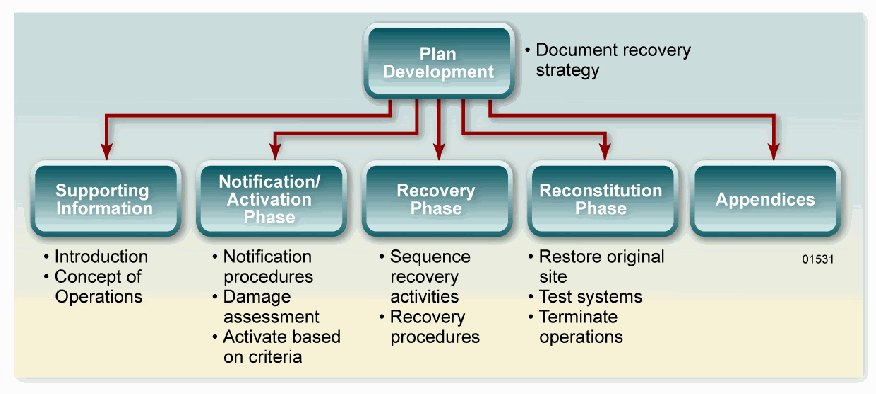
IT緊急時対応計画の構成図。計画策定から、支援情報、通知・起動、復旧、再構築、付録へと分岐し、各段階に手順、復旧活動、試験などを含める。
Figure 9-2. Contingency Plan Structure
図9-2. コンティンジェンシー計画の構成
未レビュー訳The procedures are documented in the Notification/Activation Phase, Recovery Phase, and Reconstitution Phase components of the plan. The Supporting Information and Appendices components provide supplemental information necessary to understand the context in which the plan is to be used and gives additional information that may be necessary to execute procedures (e.g., emergency contact information and the BIA).
手順は、計画の通知／発動段階、復旧段階、再構成段階の各構成要素に記載する。支援情報および付録の構成要素には、計画を使用する状況を理解するために必要な補足情報と、手順の実行に必要となる追加情報（緊急連絡先やBIAなど）を記載する。
未レビュー訳9.6 Step 6: Plan Testing, Training, and Exercises
9.6 ステップ6: 計画のテスト、訓練、演習
未レビュー訳Personnel selected to execute the IT contingency plan must be trained to perform the procedures, the plan must be exercised, and the system strategy must be tested.
ITコンティンジェンシー計画を実行する要員は、手順を実行できるよう訓練を受けなければならない。また、計画を演習し、システム戦略をテストしなければならない。
未レビュー訳Plan testing should include:
計画のテストには、次の内容を含めるべきである。
未レビュー訳•System recovery on an alternate
•代替
未レビュー訳•System performance using
•代替機器を用いたシステム性能の確認
未レビュー訳platform from backup media
プラットフォーム上でバックアップ媒体からシステムを復旧する
未レビュー訳alternate equipment
を用いる
未レビュー訳•Coordination among recovery teams
•復旧チーム間の調整
未レビュー訳•Restoration of normal operations
•通常運用の復旧
未レビュー訳•Internal and external connectivity
•内部および外部への接続性
未レビュー訳•Notification procedures.
•通知手順
未レビュー訳Personnel training should include:
要員の訓練には、次の内容を含めるべきである。
未レビュー訳•Purpose of the plan
•計画の目的
未レビュー訳•Security requirements
•セキュリティ要件
未レビュー訳•Cross-team coordination and
•チーム間の調整および
未レビュー訳•Team-specific processes
•チーム固有のプロセス
未レビュー訳communication
コミュニケーション
未レビュー訳•Individual responsibilities.
•個人の責任
未レビュー訳•Reporting procedures
•報告手順
未レビュー訳Plan exercises should be designed to individually and then collectively examine various components of the entire plan. Exercises may be conducted in a classroom setting: discussing specific components of the plan and/or impact issues; or they may be functional exercises: simulating the recovery using actual replacement equipment, data, and alternate sites.
計画演習は、計画全体のさまざまな構成要素を個別に検討した後、全体として検討するように設計するべきである。演習は、計画の特定の構成要素や影響に関する問題を話し合う机上演習として実施してもよい。また、実際の代替機器、データ、代替サイトを使って復旧を模擬する機能演習として実施してもよい。
未レビュー訳9.7 Step 7: Plan Maintenance
9.7 ステップ7: 計画の保守
未レビュー訳The IT contingency plan must always be maintained in a ready state for use immediately upon notification. Periodic reviews of the plan must be conducted for currency of key personnel and vendor information, system components and dependencies, the recovery strategy, vital records, and operational requirements. While some changes may be obvious (e.g., personnel turnover or vendor changes), others will require analysis. The BIA should be reviewed periodically and updated with new information to identify new contingency requirements and priorities. Changes made to the plan are noted in a record of changes, dated, and signed or initialed by the person making the change. The revised plan, or plan sections, are circulated to those with plan responsibilities. Because of the impact that plan changes may have on interdependent business processes or information systems, the changes must be clearly communicated and properly annotated in the beginning of the document.
ITコンティンジェンシー計画は、通知を受けた直後に使用できる状態に常に保たなければならない。主要要員とベンダーの情報、システム構成要素と依存関係、復旧戦略、重要記録、運用要件が最新であることを確認するため、計画を定期的にレビューしなければならない。要員の交代やベンダーの変更など、明らかな変更もあれば、分析を要する変更もある。新たなコンティンジェンシー要件と優先順位を特定するため、BIAを定期的にレビューし、新しい情報で更新するべきである。計画への変更は変更記録に記載し、変更日を付し、変更した人が署名またはイニシャルを記入する。改訂した計画または該当箇所を、計画上の責任を担う人々に配布する。計画の変更は、相互依存する事業プロセスや情報システムに影響することがあるため、変更内容を明確に伝え、文書の冒頭に適切に記録しなければならない。
未レビュー訳Websites: Federal Emergency Management Agency (FEMA) http://www.FEMA.gov www.csrc.nist.gov
ウェブサイト: 米国連邦緊急事態管理庁（FEMA） http://www.FEMA.gov www.csrc.nist.gov
未レビュー訳References: Federal Information Processing Standard 199, Standards for Security Categorization of Federal Information and Information Systems, February 2004.
参考文献: 連邦情報処理規格199「連邦情報および情報システムのセキュリティ分類に関する規格」、2004年2月。
未レビュー訳National Institute of Standards and Technology Special Publication 800-30, Risk Management Guide for Information Technology Systems, July 2002.
国立標準技術研究所特別刊行物 SP 800-30「情報技術システムのリスク管理ガイド」、2002年7月。
National Institute of Standards and Technology Special Publication 800-34, Contingency Planning Guide for Information Technology Systems, June 2002.
国立標準技術研究所特別刊行物 SP 800-34「情報技術システムのコンティンジェンシープランニングガイド」、2002年6月。
National Institute of Standards and Technology Special Publication 800-60, Guide for Mapping Types of Information and Information Systems to Security Categories, June 2004.
国立標準技術研究所特別刊行物 SP 800-60「情報の種類および情報システムをセキュリティカテゴリに対応付けるためのガイド」、2004年6月。
National Institute of Standards and Technology Special Publication 800-64, Security Considerations in the Information System Development Life Cycle, Rev. 1 June 2004.
国立標準技術研究所特別刊行物 SP 800-64「情報システム開発ライフサイクルにおけるセキュリティ上の考慮事項」、改訂1、2004年6月。
Chapter 10
第10章
未レビュー訳10. Risk Management
10. リスク管理
未レビュー訳An effective risk management process is an important component of a successful information security program. The principal goal of an organization’s risk management process is to protect the organization and its ability to perform its mission, not just its information assets. Therefore, the risk management process should not be treated primarily as a technical function carried out by the information security experts who operate and manage the information security system, but as an essential management function of the organization that is tightly woven into the system development life cycle (SDLC), 67 as depicted in Figure 10-1. Because risk cannot be eliminated entirely, the risk management process allows information security program managers to balance the operational and economic costs of protective measures and achieve gains in mission capability. By employing practices and procedures designed to foster informed decision making, agencies help protect their information systems and the data that support their own mission.
効果的なリスク管理プロセスは、情報セキュリティプログラムを成功させる重要な要素である。組織のリスク管理プロセスの主な目的は、情報資産だけでなく、組織とその任務遂行能力を保護することである。したがって、リスク管理プロセスを、情報セキュリティシステムを運用・管理する情報セキュリティ専門家が担う技術的な機能として主に扱うべきではない。図10-1に示すように、システム開発ライフサイクル（SDLC）67に深く組み込まれた、組織にとって不可欠な管理機能として扱うべきである。リスクを完全に排除できないため、リスク管理プロセスにより、情報セキュリティプログラムの管理者は保護策の運用上・経済上の費用と、任務遂行能力の向上との均衡を図ることができる。十分な情報に基づく意思決定を促す慣行と手順を用いることで、機関は情報システムと、その任務を支えるデータの保護に役立てる。
未レビュー訳Figure 10-1. Risk Management in the System Security Life Cycle
図10-1. システムセキュリティライフサイクルにおけるリスク管理
未レビュー訳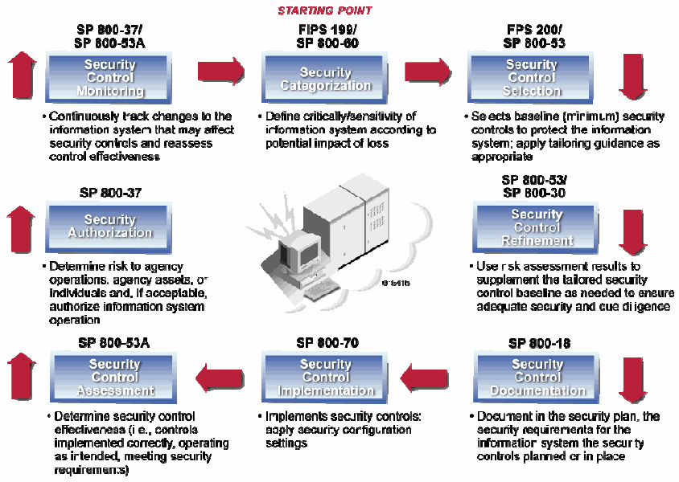
NISTリスク管理フレームワークの循環図。セキュリティ分類、管理策の選択・実装・評価、システムの承認、継続的監視を関連するNIST文書とともに示す。
Risk management is an aggregation of three processes that have their roots in several federal laws, regulations, and guidelines, including the Computer Security Act of 1987, the Federal Information Security Management Act (FISMA), Office of Management and Budget (OMB) Circular A-130, and National Institute of Standards and Technology (NIST) Special Publication (SP) 800-30, Risk Management Guide for Information Technology Systems. The three processes are risk assessment, risk mitigation, and evaluation and assessment. If applied appropriately and with due diligence, this process meets the FISMA requirements of “providing information security protections commensurate with the risk and magnitude of the harm resulting from unauthorized access, use, disclosure, disruption, modification, or destruction of…information…and…information systems” collected by and used by the federal government, and “ensuring that information security management processes are integrated with agency strategic and operational planning processes.”
リスク管理は、複数の連邦法、規則、指針に由来する3つのプロセスをまとめたものである。これらには、1987年コンピュータセキュリティ法、連邦情報セキュリティ管理法（FISMA）、行政管理予算局（OMB）通達A-130、国立標準技術研究所（NIST）特別刊行物（SP）800-30「情報技術システムのリスク管理ガイド」が含まれる。3つのプロセスとは、リスクアセスメント、リスク緩和、評価およびアセスメントである。これらを適切に、かつ十分な注意を払って適用すれば、連邦政府が収集・使用する情報および情報システムへの不正アクセス、使用、開示、中断、改変、破壊から生じるリスクと損害の大きさに見合った情報セキュリティ保護を提供し、情報セキュリティ管理プロセスを機関の戦略計画および運用計画に統合するというFISMAの要件を満たす。
未レビュー訳10.1 Risk Assessment
10.1 リスクアセスメント
To understand the risk assessment process, it is essential to define the term risk. NIST SP 800-30 defines risk as “a function of the likelihood of a given threat source’s exercising a particular potential vulnerability, and the resulting impact of that adverse event on the organization.” In other words, where a threat intersects with a vulnerability, risk is present. With this definition of risk in mind, the goal of the risk assessment process is to identify and assess the risks to a given environment. The depth of the risk assessment performed can vary greatly and is determined by the criticality and sensitivity of the system, as applied to confidentiality, integrity, and availability, a process which is described in detail in Federal Information Processing Standard (FIPS) 199. To meet the goal of the risk assessment, a nine-step process is defined in NIST SP 800-30 and summarized here. To simplify the process somewhat, the nine-step process described in NIST SP 800-30 is reduced to a six-
リスクアセスメントプロセスを理解するには、まずリスクという用語を定義する必要がある。NIST SP 800-30は、リスクを「特定の脅威源が特定の潜在的脆弱性を利用する可能性と、その有害事象が組織に及ぼす影響との関数」と定義している。つまり、脅威が脆弱性と交差するところにリスクが存在する。この定義を踏まえると、リスクアセスメントプロセスの目標は、対象環境のリスクを特定し、評価することである。実施するアセスメントの深さは大きく異なる場合があり、機密性、完全性、可用性の観点から判断したシステムの重要度と機密性によって決まる。この判断方法は連邦情報処理規格（FIPS）199で詳述されている。リスクアセスメントの目標を達成するため、NIST SP 800-30は9段階のプロセスを定めており、ここではその概要を示す。プロセスを簡略化するため、NIST SP 800-30に記載された9段階のプロセスを6段階の
未レビュー訳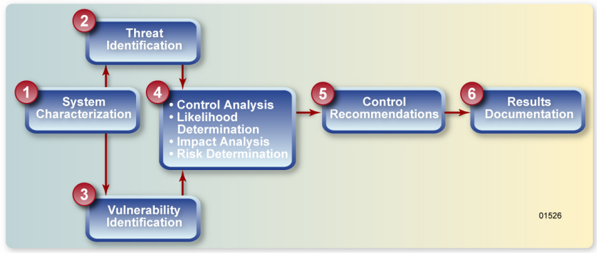
リスク評価の6段階を示す図。システムの特性把握、脅威の特定、脆弱性の特定、管理策の分析、管理策の推奨、結果の記録を循環的に進める。
Figure 10-2. Risk Function
図10-2. リスク関数
未レビュー訳Figure 10-3. Risk Assessment Process
図10-3. リスクアセスメントプロセス
未レビュー訳step process, whereby Steps 4, 5, and 6 of the process are combined to create the Risk Analysis step (see Figures 10-2 and 10-3). Depicted in Figure 10-2, below, is a high-level depiction of risk assessment process.
プロセスにまとめる。このプロセスでは、ステップ4、5、6を統合して「リスク分析」ステップを構成する（図10-2および図10-3参照）。以下の図10-2は、リスクアセスメントプロセスの概要を示す。
未レビュー訳The likelihood of a given threat successfully exploiting a given vulnerability is estimated by evaluating the threat source’s motivation, opportunity, and methods for conducting such an exploitation. The impact of a successful exploitation is estimated through an analysis of the effect the exploitation can have on the confidentiality, integrity, and availability of the system and the data it processes. The determination of the criticality and sensitivity of the system, in terms of its confidentiality, integrity, and availability, is found by applying the concepts and processes discussed in detail within FIPS 199, Standards for Security Categorization of Federal Information and Information Systems.
脅威源の動機、機会、悪用の手法を評価することで、特定の脅威が特定の脆弱性の悪用に成功する可能性を推定する。悪用が成功した場合の影響は、その悪用がシステムおよび処理データの機密性、完全性、可用性に及ぼし得る効果を分析して推定する。機密性、完全性、可用性の観点からシステムの重要度と機密性を判断するには、FIPS 199「連邦情報および情報システムのセキュリティ分類に関する規格」で詳述されている概念とプロセスを適用する。
未レビュー訳As mandated by OMB Circular A-130, the risk assessment process is usually repeated at least every three years for federal agencies. However, risk assessments should be conducted and integrated into the SDLC for information systems, not because it is required by law or regulation, but because it is a good practice and supports the organization’s business objectives or mission.
OMB通達A-130の規定により、連邦機関では通常、リスクアセスメントプロセスを少なくとも3年ごとに繰り返す。ただし、情報システムのリスクアセスメントは、法令で求められているからではなく、適切な慣行であり組織の事業目標や任務を支えるために実施し、SDLCに組み込むべきである。
未レビュー訳10.1.1 Step 1 – System Characterization
10.1.1 ステップ1 – システムの特性評価
Characterizing an information system establishes the scope of the risk assessment effort, delineates the operational authorization (or accreditation) boundaries, and provides information (e.g., hardware, software, system connectivity, and responsible division or support personnel). This step begins with the identification of the information system boundaries, resources, and information.
情報システムを特性評価することで、リスクアセスメントの対象範囲を定め、運用認可（または認定）の境界を明確にし、ハードウェア、ソフトウェア、システム接続性、担当部門や支援要員などの情報を得る。このステップは、情報システムの境界、資源、情報を特定することから始まる。
未レビュー訳When characterizing the system, the mission criticality and sensitivity (as previously identified using FIPS 199 to determine the system’s appropriate security categorization) are described in sufficient terms to form a basis for the scope of the risk assessment. The level of effort and the granularity (i.e., the level of depth to which the assessment investigates the security of the system) of the risk assessment are based on the FIPS 199 security categorization. For example, a system determined to be of low impact may not require hands-on security testing and evaluation. Various techniques, such as questionnaires, interviews, documentation reviews, and automated scanning tools, can be used to collect the information needed to fully characterize the system. At a minimum, the system characterization describes the following individual system components:
システムを特性評価する際には、任務上の重要度と機密性（システムに適切なセキュリティ分類を決めるためFIPS 199を用いて先に特定したもの）を、リスクアセスメントの対象範囲の根拠となるよう十分に記述する。リスクアセスメントに必要な作業量と詳細度（すなわち、アセスメントがシステムのセキュリティをどの程度深く調査するか）は、FIPS 199のセキュリティ分類に基づく。たとえば、低影響度と判定されたシステムでは、実機を使ったセキュリティテストや評価が不要な場合がある。質問票、聞き取り、文書レビュー、自動スキャンツールなど、さまざまな手法で特性評価に必要な情報を収集できる。最低限、システムの特性評価では次の各構成要素を記述する。
未レビュー訳•Hardware (e.g., IBM mainframe running the z/OS operating system, Dell server running Windows 2003);
•ハードウェア（例: z/OSオペレーティングシステムを実行するIBMメインフレーム、Windows 2003を実行するDellサーバー）
未レビュー訳•Software (e.g., Oracle, Apache web server, Microsoft Internet Information Server [IIS]);
•ソフトウェア（例: Oracle、Apacheウェブサーバー、Microsoft Internet Information Server [IIS]）
未レビュー訳•External interfaces to other systems;
•他システムへの外部インターフェース
•Data; and
•データ; および
未レビュー訳•People.
•人員
In addition to the component descriptions, the system characterization describes other factors with the potential to affect the security of the system, such as:
構成要素の説明に加えて、システムのセキュリティに影響を及ぼす可能性がある次のような他の要因も、システムの特性評価で記述する。
未レビュー訳•System functional requirements;
•システムの機能要件
•Organizational security policy and architecture;
•組織のセキュリティ方針およびアーキテクチャ
•System network topology;
•システムのネットワークトポロジ
•Information flows throughout the system;
•システム全体の情報フロー
•Management, operational, and technical security controls implemented or planned to be implemented for the system; and
•システムに実装済み、または実装予定の管理的、運用的、技術的なセキュリティ管理策; および
•Physical and environmental security mechanisms.
•物理的および環境的なセキュリティの仕組み
The accuracy of the results from this step is essential to obtaining the best view of the risk profile of the system undergoing assessment, since this step provides the basis for the remaining steps. Inaccuracy at this point will propagate and lead to a cascade of analytical errors as the process progresses.
このステップの結果の正確性は、評価対象システムのリスクプロファイルを最も適切に把握するうえで不可欠である。このステップが後続のステップの基礎となるためである。この時点での不正確さは後続に伝播し、プロセスが進むにつれて分析上の誤りが連鎖的に生じる。
未レビュー訳10.1.2 Step 2 – Threat Identification
10.1.2 ステップ2 – 脅威の特定
Threat identification consists of identifying threat sources with the potential to exploit weaknesses in the system. This step should culminate in the development of a “threat statement,” or a comprehensive listing of potential threat sources. The threat statement must be tailored to the individual organization and its processing environment (e.g., end-user computing habits), which is accomplished by performing a threat evaluation, using the system characterization as the basis, for the potential to cause harm to the system.
脅威の特定では、システムの弱点を悪用する可能性がある脅威源を特定する。このステップの成果として、「脅威記述」、すなわち潜在的な脅威源を包括的に列挙したものを作成するべきである。脅威記述は個々の組織とその処理環境（例: エンドユーザーのコンピューター利用習慣）に合わせなければならない。そのため、システムの特性評価を基礎として脅威を評価し、システムに損害を与える可能性を検討する。
未レビュー訳There are common threat sources that typically apply, regardless of the system, that should be evaluated. These common threats can be categorized into three areas: (1) natural threats (e.g., floods, earthquakes, tornadoes, landslides, avalanches, electrical storms), (2) human threats (intentional or unintentional), and (3) environmental threats (e.g., power failure). In general, information on natural threats (e.g., floods, earthquakes, storms) should be readily available, as known threats have been identified by many government and private sector organizations. Intrusion detection tools also are becoming more prevalent, and government and industry organizations continually collect data on security events, thereby improving the ability to realistically assess threats. Sources of information include, but are not limited to, the following:
システムにかかわらず通常該当する共通の脅威源があり、評価するべきである。これらの共通脅威は、(1) 自然災害（洪水、地震、竜巻、地滑り、雪崩、雷雨など）、(2) 人的脅威（意図的または意図しないもの）、(3) 環境上の脅威（停電など）の3種類に分類できる。一般に、自然災害に関する情報（洪水、地震、嵐など）は容易に入手できるはずである。既知の脅威は、多数の政府機関や民間組織によって特定されているためである。侵入検知ツールも普及しつつあり、政府機関や産業界の組織がセキュリティ事象のデータを継続的に収集しているため、脅威を現実的に評価する能力が向上している。情報源には次のものが含まれるが、これらに限らない。
未レビュー訳•Intelligence agencies (for example, the Federal Bureau of Investigation’s National Infrastructure Protection Center);
•情報機関（例: 連邦捜査局（FBI）の国家インフラ保護センター）
未レビュー訳•United States Computer Emergency Readiness Team (US-CERT) found at www.us-cert.gov); and
•米国コンピューター緊急事態対応チーム（US-CERT、www.us-cert.gov）; および
未レビュー訳•Mass media, including Web-based resources.
•ウェブ上の情報源を含むマスメディア
未レビュー訳10.1.3 Step 3 – Vulnerability Identification
10.1.3 ステップ3 – 脆弱性の特定
NIST SP 800-30 defines vulnerability as “a flaw or weakness in system security procedures, design, implementation, or internal controls that could be exercised (accidentally triggered or intentionally exploited) and result in a security breach or a violation of the system’s security policy.” Vulnerabilities can be identified using a combination of a number of techniques and sources. Reviews of such sources as previous risk assessments, audit reports, vulnerability lists [e.g., NIST National Vulnerability Database (NVD), formerly known as I-CAT, found at nvd.nist.gov], and security advisories can be used to begin the process of vulnerability identification. System security testing, using methods such as automated vulnerability scanning tools; security, test, and evaluation (ST&E); and penetration testing can be used to augment the vulnerability source reviews and identify vulnerabilities that may not have been previously identified in other sources.
NIST SP 800-30は、脆弱性を「システムのセキュリティ手順、設計、実装、または内部統制にある欠陥または弱点であり、（偶発的に誘発される、または意図的に悪用されることで）セキュリティ侵害またはシステムのセキュリティ方針違反につながり得るもの」と定義している。脆弱性は、複数の手法や情報源を組み合わせて特定できる。過去のリスクアセスメント、監査報告書、脆弱性一覧（例: 旧I-CATとして知られたNIST国家脆弱性データベース（NVD）、nvd.nist.gov）、セキュリティ勧告などの情報源をレビューすることから、脆弱性の特定を始められる。自動脆弱性スキャンツール、セキュリティ・テスト・評価（ST&E）、侵入テストなどの手法を使ったシステムセキュリティテストにより、情報源のレビューを補完し、他の情報源ではこれまで特定されていなかった脆弱性を見つけることができる。
未レビュー訳In addition, developing a security requirements checklist based on the security requirements specified for the system during the conceptual, design, and implementation phases of the SDLC can be used to provide a 360-degree inspection of the system. The checklist can be developed using the guidance provided in NIST SP 800-53A, Guide for Assessing the Security Controls in Federal Information Systems (draft), and NIST SP 800-53, Recommended Security Controls for Federal Information Systems, to ensure the inclusion of appropriate questions in the areas of management, operational, and technical security controls. The results of the checklist (or questionnaire) can be used as input for evaluating compliance and noncompliance, which in turn identifies system, process, and procedural weaknesses that represent potential vulnerabilities.
さらに、SDLCの概念、設計、実装の各段階でシステムに定められたセキュリティ要件に基づいて要件チェックリストを作成すれば、システムを全方位から点検できる。NIST SP 800-53A「連邦情報システムのセキュリティ管理策評価ガイド」（草案）およびNIST SP 800-53「連邦情報システム向け推奨セキュリティ管理策」の指針を用いてチェックリストを作成し、管理的、運用的、技術的なセキュリティ管理策分野に適切な質問が含まれるようにできる。チェックリスト（または質問票）の結果は、適合性および不適合性を評価するための入力として利用でき、それにより、潜在的脆弱性となるシステム、プロセス、手順上の弱点を特定できる。
未レビュー訳10.1.4 Step 4 – Risk Analysis
10.1.4 ステップ4 – リスク分析
The risk analysis is a determination (or estimation) of risk to the system, an analysis that requires the consideration of closely interwoven factors, such as the security controls in place for the system under review, the likelihood that those controls will be either insufficient or ineffective protection of the system, and the impact of that failure. In other words, it is not possible to estimate the level of risk posed by the successful exploitation of a given vulnerability without considering the efficacy of the security controls that have been or are to be implemented to mitigate or eliminate the potential for such an exploitation; nor the threat’s motivation, opportunity, and capabilities, which contribute to the likelihood of a successful attack; nor the impact to the system and organization should successful exploitation of a vulnerability occur. The following four steps—control analysis, likelihood determination, impact analysis, and risk determination—are, in a practical sense, performed simultaneously or nearly simultaneously because they are so tightly linked to each other.
リスク分析では、システムに対するリスクを判定（または推定）する。そのため、相互に密接に関連する要因を考慮する必要がある。たとえば、対象システムに実装されているセキュリティ管理策、それらの管理策が不十分な保護または効果のない保護となる可能性、およびその失敗の影響である。つまり、特定の脆弱性の悪用が成功した場合のリスク水準は、悪用の可能性を抑制または排除するために実装済み、または実装予定のセキュリティ管理策の有効性を考慮せずに推定することはできない。また、攻撃の成功可能性に関係する脅威の動機、機会、能力も考慮する必要がある。さらに、脆弱性の悪用に成功した場合にシステムと組織に及ぶ影響も考慮しなければならない。以下の4つのステップ、すなわち管理策分析、可能性の判定、影響分析、リスク判定は相互の結び付きが強いため、実際には同時またはほぼ同時に行う。
未レビュー訳10.1.4.1 Control Analysis
10.1.4.1 管理策分析
As previously discussed, the analysis of controls in place to protect the system can be accomplished using a checklist or questionnaire, which is based on the security requirements for the system as specified by NIST SP 800-53. This analysis can be refined using the NIST SP 800-53A, Guide for Assessing the Security Controls in Federal Information Systems (draft), which provides guidance on testing security controls extracted from NIST SP 800-53. The results are used to strengthen the determination of the likelihood that a specific threat might successfully exploit a particular vulnerability.
前述のとおり、システムを保護するために実装されている管理策は、NIST SP 800-53でシステムに定められたセキュリティ要件に基づくチェックリストまたは質問票を用いて分析できる。NIST SP 800-53A「連邦情報システムのセキュリティ管理策評価ガイド」（草案）は、NIST SP 800-53から抽出したセキュリティ管理策のテスト指針を示しており、この指針を用いて分析を詳細化できる。その結果を利用して、特定の脅威が特定の脆弱性の悪用に成功する可能性をより確かなものにする。
未レビュー訳10.1.4.2 Likelihood Determination
10.1.4.2 可能性の判定
Likelihood determination considers a threat source’s motivation and capability to exploit a vulnerability, the nature of the vulnerability, the existence of security controls, and the effectiveness of mitigating security controls. Likelihood ratings are described in the qualitative terms of high, moderate, and low, and are used to describe how likely is a successful exploitation of a vulnerability by a given threat. For example, if a threat is highly motivated and sufficiently capable, and controls implemented to protect the vulnerability are ineffective, then it is highly likely that the attack would be successful. In this scenario, the appropriate likelihood rating would be high. The likelihood ratings of moderate and low are similarly defined to successively lesser degrees.
可能性の判定では、脅威源が脆弱性を悪用する動機と能力、脆弱性の性質、セキュリティ管理策の有無、リスクを軽減する管理策の有効性を考慮する。可能性は、高、中、低の定性的な評価で表し、特定の脅威が脆弱性の悪用に成功する見込みを示す。たとえば、脅威に強い動機があり、十分な能力を持ち、その脆弱性を守るために実装した管理策が効果を発揮しない場合、攻撃が成功する可能性は非常に高い。この場合、適切な可能性評価は「高」である。「中」と「低」の評価も、成功の可能性が段階的に低くなるものとして同様に定義する。
未レビュー訳10.1.4.3 Impact Analysis
10.1.4.3 影響分析
The third factor used in determining the level of risk to a system is impact. A proper overall impact analysis considers the following factors: impact to the systems, data, and the organization’s mission. Additionally, this analysis should also consider the criticality and sensitivity of the system and its data. FIPS 199 provides a consistent, focused process for categorizing a system’s criticality and sensitivity for the three security domains of confidentiality, integrity, and availability. Using FIPS 199 to determine a security category and applying an assessment of the system’s and organization’s mission using tools such as mission-impact reports, asset criticality assessment reports, and business impact analyses results in a rating describing the estimated impact to the system and organization should a threat successfully exploit a vulnerability. While impact can be described using either a quantitative or qualitative approach, in the context of IT systems and data, impact is generally described in qualitative terms. As with the ratings used to describe likelihood, impact levels are described using the terms of high, moderate, and low. NIST SP 800-30 provides definitions for the impact ratings of low, medium, and high.
システムに対するリスク水準を決める3番目の要因は影響である。適切な全体的影響分析では、システム、データ、組織の任務への影響を検討する。さらに、この分析ではシステムとそのデータの重要度および機密性も考慮するべきである。FIPS 199は、機密性、完全性、可用性という3つのセキュリティ領域について、システムの重要度と機密性を一貫性のある重点的な方法で分類する。FIPS 199を用いてセキュリティカテゴリを決め、任務影響報告書、資産重要度評価報告書、事業影響分析などのツールでシステムと組織の任務を評価することで、脅威が脆弱性の悪用に成功した場合にシステムと組織に生じると推定される影響を評価できる。影響は定量的または定性的に表せるが、ITシステムとデータの影響は一般に定性的な用語で示す。可能性の評価と同様に、影響度は高、中、低で示す。NIST SP 800-30は、低、中、高の影響評価を定義している。
未レビュー訳10.1.4.4 Risk Determination
10.1.4.4 リスク判定
Once the ratings for likelihood and impact have been determined through appropriate analyses, the level of risk to the system and the organization can be derived by multiplying the ratings assigned for threat likelihood (e.g., probability) and threat impact. Table 10-1 shows how to calculate an overall risk rating using inputs from the threat likelihood and impact categories using a 3X3 matrix. Depending on the requirements of the system and the granularity of risk assessment desired, 4x4 and 5x5 matrices may be used instead. The latter can include a Very Low/Very High threat likelihood and a Very Low/Very High threat impact to generate a Very Low/Very High risk level. A Very High risk level may require possible system shutdown or stopping all information system integration and testing effort.
適切な分析によって可能性と影響の評価が決まると、脅威の可能性（例: 発生確率）と脅威の影響に割り当てた評価値を掛け合わせ、システムと組織に対するリスク水準を導ける。表10-1は、脅威の可能性と影響のカテゴリを入力として、3×3のマトリクスで総合的なリスク評価を計算する方法を示す。システム要件と必要なリスクアセスメントの詳細度に応じて、4×4または5×5のマトリクスを使うこともできる。後者では、脅威の可能性と影響に「非常に低い」から「非常に高い」までの評価を含め、リスク水準も同じ範囲で算出できる。「非常に高い」リスク水準では、システムの停止、または情報システムの統合・テスト作業の全面停止が必要となる場合がある。
未レビュー訳Table 10-1. Risk Level Matrix
表10-1. リスク水準マトリクス
未レビュー訳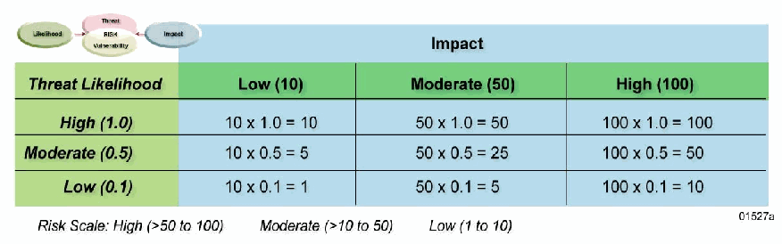
脅威の発生可能性（高・中・低）と影響度（低・中・高）のリスク評価表。各組合せについて、可能性と影響度の積によるリスク値を示す。
Because the determination of risk ratings for impact and threat likelihood is largely subjective, it is best to assign each rating a numeric value for ease of calculation. The rationale for this justification can be explained in terms of the probability assigned for each threat likelihood level and a value assigned for each impact level. For example:
影響と脅威の可能性に対するリスク評価の判定は主観的な部分が大きいため、計算しやすいように各評価へ数値を割り当てるのがよい。この根拠は、各脅威可能性レベルに割り当てる確率と各影響レベルに割り当てる値で説明できる。例を次に示す。
•The probability assigned for each threat likelihood level is 1.0 for high, 0.5 for moderate, and 0.1 for low.
•脅威の可能性が高い場合は確率1.0、中の場合は0.5、低い場合は0.1を割り当てる。
•The value assigned for each impact level is 100 for high, 50 for moderate, and 10 for low.
•影響度が高い場合は100、中の場合は50、低い場合は10を割り当てる。
Table 10-2, below, describes the risk levels shown in the above matrix. This risk scale, with its ratings of high, moderate, and low, represents the degree of risk to which an information system, facility, or procedure might be exposed if a given vulnerability were exploited. It also describes the type of action senior managers must take for each risk level.
下の表10-2は、上のマトリクスに示すリスク水準を説明する。高、中、低の評価を用いるこの尺度は、脆弱性が悪用された場合に情報システム、施設、または手順がさらされるリスクの程度を示す。また、各リスク水準で上級管理者が取らなければならない措置も説明する。
未レビュー訳Table 10-2. Risk Scale and Necessary Management Action
表10-2. リスク尺度と必要な管理措置
未レビュー訳| Risk Level | Risk Description and Necessary Management Action |
| High | If an observation or finding is evaluated as high risk, there is a strong need for corrective measures. An existing system may continue to operate, but a corrective action plan must be put in place as soon as possible. |
| Moderate | If an observation is rated as moderate risk, corrective actions are needed and a plan must be developed to incorporate these actions within a reasonable period of time. |
| Low | If an observation is described as low risk, the system’s authorizing official must determine whether corrective actions are still required or decide to accept the risk. |
原本PDFの抜粋画像
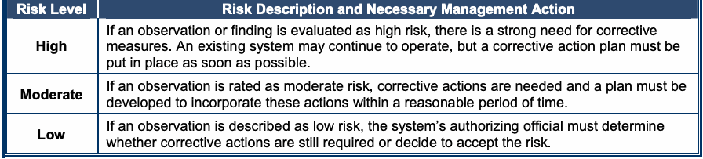
| リスク水準 | リスクの説明および必要な管理措置 |
| 高 | 観察事項または所見が高リスクと評価された場合、是正措置を講じる必要性は非常に高い。既存システムの運用を継続してもよいが、できるだけ早く是正措置計画を策定しなければならない。 |
| 中 | 観察事項が中リスクと評価された場合、是正措置が必要であり、妥当な期間内にこれらの措置を盛り込む計画を策定しなければならない。 |
| 低 | 観察事項が低リスクと評価された場合、システムの認可責任者は、是正措置がなお必要かを判断するか、リスクを受容することを決定しなければならない。 |
10.1.5 Step 5 – Control Recommendations
10.1.5 ステップ5 – 管理策の推奨
The goal of the control recommendations is to reduce the level of risk to the information system and its data to a level the organization deems acceptable. These recommendations are essential input for the risk mitigation process, during which the recommended procedural and technical security controls are evaluated, prioritized, and implemented. This step is designed to help agencies identify and select controls appropriate to the organization’s operations and mission that could mitigate or eliminate the risks identified in the preceding steps. The following factors should be considered in recommending controls and alternative solutions to minimize or eliminate identified risks:
管理策を推奨する目的は、情報システムとそのデータに対するリスクを、組織が許容できる水準まで下げることである。これらの推奨事項はリスク緩和プロセスへの重要な入力となる。このプロセスでは、推奨された手順的および技術的なセキュリティ管理策を評価し、優先順位を付けて実装する。このステップは、先行するステップで特定したリスクを軽減または排除でき、組織の運用と任務に適した管理策を機関が特定し、選択できるようにすることを目的とする。リスクを最小化または排除する管理策および代替策を推奨する際には、次の要因を考慮するべきである。
未レビュー訳•Effectiveness of recommended options (e.g., system compatibility);
•推奨する選択肢の有効性（例: システムとの互換性）
•Legislation and regulation;
•法律および規則
•Organizational policy;
•組織の方針
•Operational impact; and
•運用への影響; および
•Safety and reliability.
•安全性および信頼性
Agencies should consult NIST SP 800-53 for further guidance on the development of control recommendations.
管理策の推奨に関する追加の指針については、機関はNIST SP 800-53を参照するべきである。
未レビュー訳10.1.6 Step 6 – Results Documentation
10.1.6 結果の文書化
未レビュー訳The risk assessment report is the mechanism used to formally report the results of all risk assessment activities. The intended function of this report is to describe and document the risk posture of the system while it is operating in its stated environment (as described in the system characterization) and to provide organization managers with sufficient information so that they can make sound, risk-based decisions, such as resources that must be allocated to the risk mitigation phase. Lastly, the agency should ensure that the results of the risk assessment are appropriately reflected in the system’s Plan of Action and Milestones (POA&M) and System Security Plan.
リスクアセスメント報告書は、すべてのリスクアセスメント活動の結果を正式に報告するために用いる。報告書は、システムが記載された環境（システムの特性評価で説明した環境）で稼働する際のリスク態勢を説明・記録し、リスク緩和段階に割り当てる必要がある資源など、妥当なリスクベースの判断を行うために十分な情報を組織の管理者に提供する。最後に、機関はリスクアセスメントの結果がシステムの行動計画およびマイルストーン（POA&M）とシステムセキュリティ計画に適切に反映されるようにするべきである。
未レビュー訳At a minimum, the risk assessment report should describe the following:
最低限、リスクアセスメント報告書では次の事項を説明するべきである。
•Scope of the assessment based on the system characterization;
•システムの特性評価に基づくアセスメントの範囲
•Methodology used to conduct the risk assessment;
•リスクアセスメントの実施方法
•Individual observations resulting from conducting the risk assessment; and
•リスクアセスメントの実施で得られた個々の所見; および
•Estimation of the overall risk posture of the system.
•システムの全体的なリスク態勢の推定
10.2 Risk Mitigation
10.2 リスク緩和
The second phase of the risk management process is risk mitigation. Because it is impractical, if not impossible, to eliminate all risk from a system, risk mitigation strives to prioritize, evaluate, and implement the appropriate risk-reducing controls recommended from the risk assessment process based on the guidance provided in NIST SP 800-53.
リスク管理プロセスの第2段階はリスク緩和である。システムからすべてのリスクを排除するのは非現実的であり、不可能な場合もある。そのためリスク緩和では、NIST SP 800-53の指針に基づき、リスクアセスメントプロセスで推奨された適切なリスク低減管理策に優先順位を付け、評価し、実装する。
未レビュー訳System and organizational managers may use several options to reduce the risk to a system. These options are risk assumption; risk avoidance; risk limitation; risk planning, research, and acknowledgement; and risk transference.
システムおよび組織の管理者は、システムのリスクを低減するために複数の選択肢を利用できる。リスクの受容、回避、限定、計画・調査・承認、および移転である。
未レビュー訳Figure 10-4 illustrates a straightforward strategy that can be used to determine whether risk mitigation actions are necessary. Working from each risk identified and analyzed in the first process—risk assessment—managers must then decide whether the risk is acceptable or unacceptable and, subsequently, whether to implement additional controls or not to mitigate unacceptable risks. The first decision box in the figure applies to those threats involving intentional attacks. Natural and unintentional human errors are not considered in this decision-making scheme because there are no associated costs to consider, and so the strategy progresses to the next decision box.
図10-4は、リスク緩和措置が必要かどうかを判断するための簡潔な戦略を示す。最初のプロセスであるリスクアセスメントで特定・分析した各リスクについて、管理者はまず、リスクが許容可能かどうかを判断し、次に、許容できないリスクを緩和する追加管理策を実装するかどうかを決めなければならない。図の最初の判断ボックスは、意図的な攻撃を伴う脅威に適用する。自然災害および意図しない人的過誤は、考慮すべき関連費用がないため、この判断方式の対象とせず、戦略は次の判断ボックスに進む。
未レビュー訳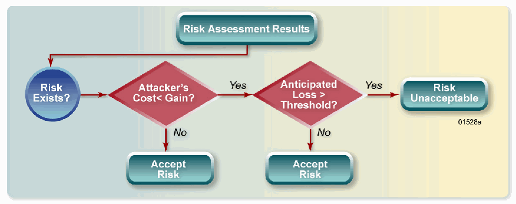
リスク評価結果に基づく受容判断のフロー。攻撃者の費用対効果と想定損失がしきい値を超えるかを判定し、リスクを受容するか許容不能とする。
Figure 10-4. Risk Mitigation Strategy
図10-4. リスク緩和戦略
未レビュー訳Once the decision has been made on which risks are to be addressed in the risk mitigation process, a seven-step approach is used to guide the selection of security controls:
リスク緩和プロセスで扱うリスクを決定した後、セキュリティ管理策を選択するための指針として、次の7段階の手順を用いる。
未レビュー訳1.Prioritize actions;
1.措置に優先順位を付ける
2.Evaluate recommended control options;
2.推奨された管理策の選択肢を評価する
3.Conduct cost-benefit analyses;
3.費用便益分析を行う
4.Select controls;
4.管理策を選択する
5.Assign responsibility;
5.責任を割り当てる
未レビュー訳6.Develop a safeguard implementation plan; and
6.保護策の実装計画を策定する; および
7.Implement selected control(s).
7.選択した管理策を実装する
The process of selecting controls to mitigate identified risks to an acceptable level is based on the security categorization of the system using the methodology provided in FIPS 199. The security categorization is used in two ways: (1) determines which minimum baseline security controls are selected from NIST SP 800-53, and (2) aids in estimating the level of risk posed by a threat/vulnerability pair identified during the risk assessment (see Chapter 5 of this handbook and NIST SP 800-30 for a discussion on identifying threat/vulnerability pairs). FIPS 200, Minimum Security Requirements for Federal Information and Information Systems, mandates the use of NIST SP 800-53 for selecting minimum baseline security controls for government systems. System security controls selected are grouped into one of the three categories of management, operational, or technical controls, and are either preventive or detective in nature.
特定したリスクを許容可能な水準まで緩和するための管理策の選択は、FIPS 199の方法論を用いて決定したシステムのセキュリティ分類に基づく。セキュリティ分類は、(1) NIST SP 800-53から選択する最低限のベースライン管理策を決めること、(2) リスクアセスメントで特定した脅威と脆弱性の組み合わせがもたらすリスク水準の推定を支援すること、の2つの目的で使う（脅威と脆弱性の組み合わせの特定については、本ハンドブック第5章およびNIST SP 800-30を参照）。FIPS 200「連邦情報および情報システムの最低セキュリティ要件」は、政府システムの最低限のベースライン管理策を選択するためにNIST SP 800-53を使用することを義務付けている。選択したシステムセキュリティ管理策は、管理的、運用的、技術的管理策のいずれかに分類され、予防的または検知的な性質を持つ。
未レビュー訳For new systems, once the security controls for the system have been identified and refined and an initial risk assessment conducted, the selected controls must be implemented. For legacy systems, the security controls that are selected are verified. Organizations can leverage controls used among multiple systems by designating them as common controls where implementation, assessment, and monitoring is conducted at an organizational level or by areas of specific expertise (e.g., human resources, physical security, building management). The system owner must understand who is responsible for implementing these controls and identify the risk that this extension of trust will generate. For information on common controls, see NIST SP 800-53, Revision 1.
新規システムでは、システムのセキュリティ管理策を特定して詳細化し、初回のリスクアセスメントを実施した後、選択した管理策を実装しなければならない。レガシーシステムでは、選択したセキュリティ管理策が検証される。組織は、実装、評価、監視を組織レベルまたは専門分野（人事、物理セキュリティ、建物管理など）で行う共通管理策として指定することで、複数システムに共通する管理策を活用できる。システム所有者は、これらの管理策の実装責任者を把握し、信頼を拡張することによって生じるリスクを特定しなければならない。共通管理策についてはNIST SP 800-53改訂1を参照。
未レビュー訳Because it is impracticable to eliminate all risk, it is important to note that even after the controls have been selected and implemented, some degree of residual risk will remain. The remaining residual risk should be analyzed to ensure that it is at an acceptable level. For federal agencies, after the appropriate controls have been put in place for the identified risks, the authorizing official will sign a statement accepting any residual risk and either authorize the operation of the new information system or request continued processing of the existing information system. If the residual risk has not been reduced to an acceptable level, the risk management cycle must be repeated to identify a way of lowering the residual risk to an acceptable level.
すべてのリスクを排除することは現実的でないため、管理策を選択・実装した後も、ある程度の残余リスクが残る点に留意することが重要である。残余リスクを分析し、許容可能な水準にあることを確認するべきである。連邦機関では、特定したリスクに適切な管理策を講じた後、認可責任者が残余リスクを受容する声明に署名し、新しい情報システムの運用を認可するか、既存の情報システムの処理継続を要求する。残余リスクが許容可能な水準まで低減されていない場合は、許容可能な水準まで下げる方法を特定するため、リスク管理サイクルを繰り返さなければならない。
未レビュー訳10.3 Evaluation and Assessment
10.3 評価およびアセスメント
The third and final phase in the risk management process is evaluation and assessment. The art of risk management in today’s dynamic and constantly changing information technology (IT) environments must be ongoing and continuously evolving. Systems are upgraded and expanded, components are improved, and architectures are constantly evolving.
リスク管理プロセスの第3段階であり最終段階でもあるのが、評価およびアセスメントである。今日の動的で絶えず変化する情報技術（IT）環境におけるリスク管理は、継続的に行い、進化させなければならない。システムはアップグレード・拡張され、構成要素は改善され、アーキテクチャは常に変化する。
未レビュー訳The security control evaluation and assessment, which is conducted during the Security Certification Phase of a system’s security certification and accreditation, provides input needed to finalize the risk assessment.68 The results are used to provide the Authorizing Official with the essential information needed to make a credible, risk-based decision on whether to authorize the operation of the information system. Ideally, the risk assessment activities would be conducted at the same time the system is being certified and accredited. The reuse of assessment data will not only save valuable resources, but also provide the most up-to-date risk information for the authorizing official.
システムのセキュリティ認証・認定におけるセキュリティ認証段階で実施するセキュリティ管理策の評価およびアセスメントは、リスクアセスメントを最終化するために必要な情報を提供する。68 その結果を認可責任者に提供し、情報システムの運用を認可するかどうかについて、信頼できるリスクベースの判断を行うために必要な情報を得る。理想的には、システムの認証・認定と同時にリスクアセスメント活動を実施する。アセスメントデータを再利用すれば、貴重な資源を節約できるだけでなく、認可責任者に最新のリスク情報を提供できる。
未レビュー訳Many of the risk management activities are conducted during a snapshot in time—a static representation of a dynamic environment. All the changes that occur to systems during normal, daily operations have the potential to adversely affect the security of the system in some fashion, and it is the goal of the risk management evaluation and assessment process to ensure that the system continues to operate in a safe and secure manner. This goal can be partially reached by implementing a strong configuration management program.69 In addition, to monitoring the security of an information system on a continuous basis, agencies must track findings from the security control assessment to ensure they are addressed appropriately and do not continue to pose or introduce new risks to the system.
リスク管理活動の多くは、動的な環境をある時点で切り取った静的な状態として実施される。通常の日常運用でシステムに生じる変更は、何らかの形でシステムのセキュリティに悪影響を及ぼす可能性がある。リスク管理の評価およびアセスメントプロセスは、システムが安全でセキュアな状態で稼働し続けるようにすることを目標とする。この目標は、強固な構成管理プログラムを実施することで部分的に達成できる。69 さらに、情報システムのセキュリティを継続的に監視するとともに、セキュリティ管理策のアセスメントで得られた所見を機関が追跡し、適切に対処され、システムに継続的なリスクをもたらしたり、新たなリスクを持ち込んだりしないようにしなければならない。
未レビュー訳The process of managing risk permeates the Systems Development Life Cycle (SDLC), beginning with the early stages of project inception through the retirement of the system and its data. From inception forward, agencies should consider the possible threats, vulnerabilities, and risks to the system so that they can better prepare it to operate in its intended environment, securely and effectively, and within a select risk threshold, as deemed acceptable by an agency senior official during the security certification and accreditation process.
リスク管理プロセスはシステム開発ライフサイクル（SDLC）全体に及び、プロジェクトの開始初期から、システムおよびそのデータの廃止まで続く。開始時から、機関はシステムへの潜在的な脅威、脆弱性、リスクを考慮するべきである。そうすることで、セキュリティ認証・認定プロセスで機関の上級職員が許容可能と判断した一定のリスクしきい値内で、意図された環境において安全かつ効果的に運用できるよう、システムをより適切に準備できる。
未レビュー訳Websites: National Institute of Standards and Technology (NIST) National Vulnerability Database nvd.nist.gov
ウェブサイト: 国立標準技術研究所（NIST）国家脆弱性データベース nvd.nist.gov
未レビュー訳www.csrc.nist.gov
www.csrc.nist.gov
未レビュー訳United States Computer Emergency Response Team (US-CERT) http://www.us-cert.gov/
米国コンピューター緊急事態対応チーム（US-CERT） http://www.us-cert.gov/
未レビュー訳References: Public Law 107-347 [H.R. 2458], The E-Government Act of 2002, Title III of this Act is the Federal Information Security Management Act of 2002 (FISMA), December 17, 2002.
参考文献: 公法107-347 [H.R. 2458]、2002年電子政府法。本法第III編は、2002年連邦情報セキュリティ管理法（FISMA）である。2002年12月17日。
未レビュー訳Office of Management and Budget Circular A-130, Management of Federal Information Resources, November 2000.
行政管理予算局通達A-130「連邦情報資源の管理」、2000年11月。
Federal Information Processing Standard 199, Standards for Security Categorization of Federal Information and Information Systems, February 2004.
連邦情報処理規格199「連邦情報および情報システムのセキュリティ分類に関する規格」、2004年2月。
Federal Information Processing Standard 200, Minimum Security Requirements for Federal Information and Information Systems, March 2006.
連邦情報処理規格200「連邦情報および情報システムの最低セキュリティ要件」、2006年3月。
National Institute of Standards and Technology Special Publication 800-53A, Guide for Assessing the Security Controls in Federal Information Systems (draft), April 2006
国立標準技術研究所特別刊行物 SP 800-53A「連邦情報システムのセキュリティ管理策評価ガイド」（草案）、2006年4月。
未レビュー訳National Institute of Standards and Technology Special Publication 800-30, Risk Management Guide for Information Technology Systems, July 2002.
国立標準技術研究所特別刊行物 SP 800-30「情報技術システムのリスク管理ガイド」、2002年7月。
National Institute of Standards and Technology Special Publication 800-37, Guide for the Security Certification and Accreditation of Federal Information Systems, May 2004.
国立標準技術研究所特別刊行物 SP 800-37「連邦情報システムのセキュリティ認証および認定ガイド」、2004年5月。
National Institute of Standards and Technology Special Publication 800-53, Revision 1, Recommended Security Controls for Federal Information System, February 2006.
国立標準技術研究所特別刊行物 SP 800-53改訂1「連邦情報システム向け推奨セキュリティ管理策」、2006年2月。
National Institute of Standards and Technology Special Publication 800-60, Guide for Mapping Types of Information and Information Systems to Security Categories, June 2004.
国立標準技術研究所特別刊行物 SP 800-60「情報の種類および情報システムをセキュリティカテゴリに対応付けるためのガイド」、2004年6月。
National Institute of Standards and Technology Special Publication 800-64, Security Considerations in the Information System Development Life Cycle, Rev. 1, June 2004.
国立標準技術研究所特別刊行物 SP 800-64「情報システム開発ライフサイクルにおけるセキュリティ上の考慮事項」、改訂1、2004年6月。
Chapter 11
第11章
未レビュー訳11. Certification, Accreditation, and
11. 認証、認定、および
未レビュー訳Security Assessments
セキュリティ評価
未レビュー訳Security certification and accreditation are important activities that support a risk management process and an integral part of an agency's information security program. The security certification and accreditation process is designed to ensure that an information system will operate with the appropriate management review, that there is ongoing monitoring of security controls, and that reaccreditation occurs periodically.
セキュリティ認証および認定は、リスク管理プロセスを支える重要な活動であり、機関の情報セキュリティプログラムに不可欠な要素である。セキュリティ認証・認定プロセスは、適切な管理レビューのもとで情報システムが運用され、セキュリティ管理策の継続的な監視が行われ、定期的に再認定されることを確実にするためのものである。
未レビュー訳Required by Office of Management and Budget (OMB) Circular A-130, Appendix III, Security of Federal Automated Information Resources, security certification and accreditation serves a function similar to quality control. It is the official management decision given by a senior agency official to authorize operation of an information system and to explicitly accept the risk on behalf of the agency. In this vein, it makes senior officials who accept risk fully accountable for their decisions, and in doing so, encourages diligence in the decision-making process.
行政管理予算局（OMB）通達A-130付録III「連邦自動化情報資源のセキュリティ」で求められるセキュリティ認証・認定は、品質管理に類似する機能を果たす。これは、情報システムの運用を認可し、機関を代表してリスクを明示的に受容するために、機関の上級職員が行う正式な管理上の決定である。このように、リスクを受容する上級職員はその判断に全面的な責任を負い、その結果、意思決定プロセスで慎重さが促される。
未レビュー訳The Federal Information Security Management Act (FISMA) and OMB Circular A-130, Appendix III, both require that federal agencies perform IT security risk assessments and prepare security plans for all systems. Both risk assessments and security plans are essential components of the security certification and accreditation process. Whether formal or informal, risk assessments provide much of the data needed to formulate a security plan that addresses the risks identified for a given system. Both the risk assessment and the development and maintenance of a security plan that accurately reflects the security requirements and controls in place for a particular system must be incorporated into the system development life cycle (SDLC).70
連邦情報セキュリティ管理法（FISMA）とOMB通達A-130付録IIIは、どちらも、連邦機関がすべてのシステムについてITセキュリティリスクアセスメントを実施し、セキュリティ計画を作成することを求めている。リスクアセスメントとセキュリティ計画はいずれも、セキュリティ認証・認定プロセスに欠かせない要素である。正式または非正式を問わず、リスクアセスメントは、対象システムで特定されたリスクに対処するセキュリティ計画を策定するための多くのデータを提供する。リスクアセスメントと、特定システムに適用されるセキュリティ要件および管理策を正確に反映したセキュリティ計画の策定・保守は、いずれもシステム開発ライフサイクル（SDLC）に組み込まなければならない。70
未レビュー訳In addition to risk assessments and system security plans, security assessments have an important role in security accreditation. It is essential that agency officials have the most complete and accurate information possible on the security status of their information systems in order to make timely and sound risk-based decisions. The information and supporting evidence needed for security accreditation are developed during a detailed security evaluation of a system, typically referred to as security certification.
リスクアセスメントとシステムセキュリティ計画に加え、セキュリティ評価もセキュリティ認定において重要な役割を果たす。機関職員が適時かつ妥当なリスクベースの判断を下すには、情報システムのセキュリティ状況について、可能な限り完全かつ正確な情報を得ることが不可欠である。セキュリティ認定に必要な情報と裏付け証拠は、通常、セキュリティ認証と呼ばれるシステムの詳細なセキュリティ評価で作成される。
未レビュー訳Security certification is a comprehensive assessment of the management, operational, and technical security controls in an information system, made in support of security accreditation, to determine the extent to which the controls are implemented correctly, operating as intended, and producing the desired outcome with respect to meeting the security requirements for the system. The results of a security certification are used to reassess the risks and update the system security plan, thus providing the factual basis for an authorizing official to render a security accreditation decision.
セキュリティ認証は、セキュリティ認定を支援するために情報システムの管理的、運用的、技術的なセキュリティ管理策を包括的に評価し、管理策が正しく実装され、意図どおりに稼働し、システムのセキュリティ要件を満たす望ましい結果を生み出している程度を判定するものである。セキュリティ認証の結果を用いてリスクを再評価し、システムセキュリティ計画を更新する。これにより、認可責任者がセキュリティ認定を判断するための事実に基づく根拠が得られる。
未レビュー訳By accrediting an information system, an agency official accepts the risks associated with operating the system and the associated implications on agency operations, agency assets, or agency individuals. Completing a security accreditation ensures that an information system will be operated with appropriate management review, that there is ongoing monitoring of security controls, and that reaccredidation occurs periodically in accordance with federal or agency policy and whenever there is a significant change to the system or its operational environment.
情報システムを認定することにより、機関職員は、システムの運用と、それに伴う機関の運用、資産、または職員への影響に関連するリスクを受容する。セキュリティ認定を完了することで、適切な管理レビューのもとで情報システムが運用され、セキュリティ管理策が継続的に監視され、連邦政府または機関の方針に従い、またシステムまたは運用環境に重大な変更があった際にも、定期的に再認定されることが確実になる。
未レビュー訳In May, 2004, the Information Technology Laboratory (ITL) published National Institute of Standards and Technology (NIST) Special Publication (SP) 800-37, Guide for the Security Certification and Accreditation of Federal Information Systems. It provides specific recommendations on how to certify and accredit information systems, and it is applicable to all federal information systems other than those systems designated as national security systems as defined in 44 United States Code (U.S.C.), Section 3542. 11. State, local, and tribal governments, as well as private sector organizations, are encouraged to use the guidelines, as appropriate. The goals of the guidelines are as follows:
2004年5月、情報技術研究所（ITL）は、国立標準技術研究所（NIST）特別刊行物（SP）800-37「連邦情報システムのセキュリティ認証および認定ガイド」を発行した。この刊行物は情報システムを認証・認定する方法について具体的な推奨事項を示す。44 United States Code（U.S.C.）第3542条で定義される国家安全保障システムに指定されたものを除き、すべての連邦情報システムに適用される。11. 州、地方、部族政府および民間組織も、適切に本ガイドラインを利用することが推奨される。ガイドラインの目的は次のとおりである。
未レビュー訳•Enable more consistent, comparable, and repeatable assessments of security controls in federal information systems;
•連邦情報システムのセキュリティ管理策について、より一貫性があり、比較可能で、再現性のあるアセスメントを可能にする。
•Promote a better understanding of agency-related mission risks resulting from the operation of information systems; and
•情報システムの運用によって生じる機関の任務関連リスクへの理解を深める; および
•Create more complete, reliable, and trustworthy information for authorizing officials to facilitate more informed security accreditation decisions.
•認可責任者がより十分な情報に基づいてセキュリティ認定を判断できるよう、より完全で、信頼性が高く、信用できる情報を作成する。
NIST SP 800-37 provides augmented, updated security certification and accreditation information to federal agencies and replaced Federal Information Processing Standard (FIPS) 102, Guidelines for Computer Security Certification and Accreditation, September 1983, when it was rescinded in February 2005.
NIST SP 800-37は、連邦機関向けに拡充・更新したセキュリティ認証・認定情報を提供する。1983年9月の連邦情報処理規格（FIPS）102「コンピューターセキュリティの認証および認定に関する指針」は、2005年2月に廃止された際、本刊行物に置き換えられた。
未レビュー訳11.1 Certification, Accreditation, and Security Assessments Roles and
11.1 認証、認定、およびセキュリティ評価の役割と
未レビュー訳Responsibilities
責任
未レビュー訳While federal agencies have in place widely varied naming conventions/nomenclatures for IT security or security certification and accreditation roles, most basic functions in security certification and accreditation process are essentially the same throughout all agencies.71 The security certification and accreditation process described in this Special Publication is flexible, allowing each agency to accomplish the intent of the specific tasks within their respective organization.
連邦機関ではITセキュリティ、またはセキュリティ認証・認定の役割について、命名規則や名称が大きく異なるが、セキュリティ認証・認定プロセスの基本的な機能は、ほとんどの機関で実質的に同じである。71 本特別刊行物で説明するセキュリティ認証・認定プロセスは柔軟性を備えており、各機関はそれぞれの組織内で特定の作業の目的を達成できる。
未レビュー訳11.1.1 Chief Information Officer
11.1.1 最高情報責任者
The chief information officer (CIO) works closely with authorizing officials and their designated representatives to ensure that an agency-wide security program is implemented effectively, including all aspects of the security certification and accreditation program component. The CIO has the following responsibilities in relation to security certification and accreditation:
最高情報責任者（CIO）は認可責任者およびその指定代理人と緊密に連携し、セキュリティ認証・認定プログラムの構成要素全般を含む、機関全体のセキュリティプログラムが効果的に実施されるようにする。セキュリティ認証・認定に関するCIOの責任は次のとおりである。
未レビュー訳•Promulgate cost-effective practices such as encouraging maximum reuse and sharing of security-related information to include:
•次のものを含むセキュリティ関連情報の最大限の再利用と共有を促すなど、費用対効果の高い慣行を普及させる。
– Threat and vulnerability assessments; – Risk assessments; – Results from common security control assessments; and – Any other general information that may be of assistance to information system owners and their supporting security staffs.
– 脅威および脆弱性の評価; – リスクアセスメント; – 共通セキュリティ管理策の評価結果; および – 情報システム所有者とその支援セキュリティ担当者に役立つその他の一般情報。
未レビュー訳•In concert with authorizing official, determine appropriate allocation of resources for security programs and systems; and
•認可責任者と連携し、セキュリティプログラムおよびシステムに適切な資源配分を決定する; および
未レビュー訳•In certain instances, operate as the authorizing official for agency-wide general support systems (GSS) or as co-authorizing official with other senior officials for selected agency systems.
•特定の状況では、機関全体の一般支援システム（GSS）の認可責任者を務めるか、選定された機関システムについて他の上級職員と共同で認可責任者を務める。
11.1.2 Authorizing Official
11.1.2 認可責任者
The authorizing official (or designated approving/accrediting authority) is a senior management official or executive with the authority to formally assume responsibility for operating an information system at an acceptable level of risk to an
認可責任者（または指定承認／認定機関）は、情報システムを許容可能なリスク水準で運用する責任を正式に引き受ける権限を持つ上級管理職または幹部であり、機関の
未レビュー訳Authorizing Official’s Designated Representative
認可責任者の指定代理人
未レビュー訳agency. It is possible that a
職員である。特定のシステムでは、
未レビュー訳The Authorizing Official’s Designated Representative can
認可責任者の指定代理人には、
未レビュー訳particular system may require more
複数の認可責任者が必要となる
未レビュー訳be empowered to act on behalf of the authorizing official
認可責任者に代わって行動する権限を付与される
未レビュー訳than one authorizing official. If so,
場合がある。その場合は、
未レビュー訳in all C&A activities for which the authorizing official is
認可責任者が担当するすべてのC&A活動において、
未レビュー訳agreements should be established
合意を
未レビュー訳responsible with the following exceptions: 1) rendering
責任を負う。ただし、次の例外がある。1) システムセキュリティ認定の決定を
未レビュー訳among the authorizing officials and the system security accreditation decision, and 2) signing documented in the system security the system security accreditation decision letter. plan. In most cases, it may be advantageous to agree to elect a lead authorizing official to represent the interests of the other authorizing officials. The authorizing official has inherent U.S. government authority and, as such, must be a government employee. The authorizing official has the following responsibilities in relation to security certification and accreditation:
認可責任者間でセキュリティ認定の決定を行うこと、および(2) システムセキュリティ認定決定書に署名すること。さらに、認可責任者間の合意を定め、その内容をシステムセキュリティ計画に記録するべきである。多くの場合、他の認可責任者の利益を代表する主任認可責任者を選任することに合意すると有益である。認可責任者は米国政府固有の権限を有するため、政府職員でなければならない。セキュリティ認証・認定に関する認可責任者の責任は次のとおりである。
未レビュー訳•Oversee the budget and business operations of the system;
•システムの予算および業務運用を監督する。
未レビュー訳•Approve system security requirements, system security plans, and memorandums of understanding (MOU) and/or memorandums of agreement (MOA);
•システムセキュリティ要件、システムセキュリティ計画、ならびに了解覚書（MOU）および／または合意覚書（MOA）を承認する。
•Make and issue final or interim decision on granting, conditionally granting, or denying authority to operate system; and
•システム運用の認可を付与する、条件付きで付与する、または拒否する最終決定もしくは暫定決定を行い、発出する; および
•Appoint, if so chosen, a designated representative to act on the authorizing official’s behalf in coordinating and carrying out the necessary activities required during the security certification and accreditation of a system.
•選任する場合は、システムのセキュリティ認証・認定に必要な活動の調整と実施を認可責任者に代わって行う指定代理人を任命する。
11.1.3 Senior Agency Information Security Officer
11.1.3 機関の上級情報セキュリティ責任者
The SAISO (or supporting staff member) may serve as the authorizing official's designated representative. The SAISO serves as the CIO’s primary liaison to the agency’s authorizing officials, information system owners, and Information System Security Officers (ISSOs).
SAISO（または支援職員）は、認可責任者の指定代理人を務めることができる。SAISOは、CIOと機関の認可責任者、情報システム所有者、情報システムセキュリティ責任者（ISSO）との主要な連絡窓口となる。
未レビュー訳11.1.4 Information System Owner
11.1.4 情報システム所有者
The information system owner is responsible for the overall procurement, development, integration, modification, or operation and maintenance of an information system. The information system owner has the following responsibilities in relation to security certification and accreditation:
情報システム所有者は、情報システムの調達、開発、統合、変更、または運用・保守全般に責任を負う。セキュリティ認証・認定に関する情報システム所有者の責任は次のとおりである。
未レビュー訳•Develop and maintain the system security plan;
•システムセキュリティ計画を策定し、維持する。
•Ensure system is deployed and operated according to the agreed-upon security requirements;
•合意したセキュリティ要件に従ってシステムが配備・運用されるようにする。
•Authorize user access to the information system (and with what types of privileges or access rights);
•情報システムへのユーザーアクセスを（どの種類の特権またはアクセス権で許可するかも含めて）認可する。
•Ensure system users and support personnel receive the requisite security training (e.g., instruction in rules of behavior);
•システムユーザーおよび支援要員が必要なセキュリティ訓練（行動規範の説明など）を受けるようにする。
•Inform key agency officials of the need to conduct a security certification and accreditation of the information system;
•情報システムのセキュリティ認証・認定を実施する必要性を、主要な機関職員に知らせる。
•Ensure appropriate resources are available for the security certification and accreditation effort;
•セキュリティ認証・認定作業に適切な資源を確保する。
•Provide necessary system-related documentation to the certification agent;
•認証担当者に必要なシステム関連文書を提供する。
未レビュー訳•Take appropriate steps to reduce or eliminate system vulnerabilities identified in the security certification and accreditation process; and
•セキュリティ認証・認定プロセスで特定されたシステムの脆弱性を低減または排除するため、適切な措置を講じる; および
未レビュー訳•Assemble the security accreditation package and submit it to authorizing official or authorizing official’s designated representative for adjudication.
•セキュリティ認定パッケージを取りまとめ、審査のため認可責任者またはその指定代理人に提出する。
未レビュー訳11.1.5 Information Owner
11.1.5 情報所有者
The information owner has statutory or operational authority for specified information and is responsible for establishing the controls for its generation, collection, processing, dissemination, and disposal. The information owner has the following responsibilities in relation to security certification and accreditation:
情報所有者は、指定された情報に関する法令上または運用上の権限を持ち、その生成、収集、処理、配布、廃棄に関する管理策の策定に責任を負う。セキュリティ認証・認定に関する情報所有者の責任は次のとおりである。
未レビュー訳•Establish rules for appropriate use and protection of the subject information (e.g., rules of behavior); and
•対象情報の適切な利用および保護に関する規則（行動規範など）を定める; および
•Communicate level of information assurance required for the system with the appropriate system owner.
•システムに必要な情報保証の水準を、適切なシステム所有者に伝える。
11.1.6 Information System Security Officer
11.1.6 情報システムセキュリティ責任者
The ISSO is responsible to the authorizing official, information system owner, or the SAISO for ensuring that the appropriate operational security posture is maintained for an information system or program. The ISSO has the following responsibilities in relation to security certification and accreditation:
ISSOは、情報システムまたはプログラムに適切な運用上のセキュリティ態勢が維持されるようにする責任を、認可責任者、情報システム所有者、またはSAISOに対して負う。セキュリティ認証・認定に関するISSOの責任は次のとおりである。
未レビュー訳•Serve as the principal advisor to the authorizing official, information system owner, or SAISO on all matters relating to the security of the information system;
•情報システムのセキュリティに関するすべての事項について、認可責任者、情報システム所有者、またはSAISOの主任顧問を務める。
•Perform or oversee performance of day-to-day security operations of the system;
•システムの日常的なセキュリティ運用を実施する、またはその実施を監督する。
•Develop or assist in development of system security policy;
•システムセキュリティ方針を策定する、またはその策定を支援する。
•Ensure compliance with system security policy;
•システムセキュリティ方針への準拠を確保する。
•Coordinate/manage changes to the system with the system owner and the information owner, as necessary;
•必要に応じて、システム所有者および情報所有者と連携し、システム変更を調整・管理する。
•Assess security impact of system changes; and
•システム変更によるセキュリティへの影響を評価する; および
•Develop and update the system security plan.
•システムセキュリティ計画を策定し、更新する。
11.1.7 Certification Agent
11.1.7 認証担当者
The certification agent is either an individual, a group, or an organization responsible for conducting a security certification or a comprehensive assessment of the effectiveness of security controls in an information system. The impartiality and independence of the certification agent are important factors in assessing the credibility of the security assessment results and ensuring that the authorizing official receives the most objective information possible to make an informed, risk-based accreditation decision. The certification agent has the following responsibilities in relation to security certification and accreditation:
認証担当者は、情報システムのセキュリティ認証またはセキュリティ管理策の有効性に関する包括的評価を実施する個人、グループ、または組織である。セキュリティ評価結果の信頼性を判断し、認可責任者が十分な情報に基づくリスクベースの認定決定を行えるよう、可能な限り客観的な情報を提供するうえで、認証担当者の公平性と独立性は重要な要因となる。セキュリティ認証・認定に関する認証担当者の責任は次のとおりである。
未レビュー訳•Assess the system security plan to ensure the plan provides applicable security controls prior to initializing the certification process;
•認証プロセスを開始する前に、システムセキュリティ計画に該当するセキュリティ管理策が含まれていることを確認するため、計画を評価する。
•Performs a comprehensive assessment of the management, operational, and technical controls in the information system; and
•情報システムの管理的、運用的、技術的な管理策を包括的に評価する; および
•Recommend corrective actions to reduce or eliminate vulnerabilities in the information system.
•情報システムの脆弱性を低減または排除する是正措置を推奨する。
11.1.8 User Representatives
11.1.8 ユーザー代表者
Users are responsible for identifying mission/operational requirements and for complying with the security requirements and security controls described in the system security plan. User representatives are individuals that represent the operational interests of the user community and serve as liaisons for that community throughout the SDLC of the information system. The user representatives assist in the security certification and accreditation process, when needed, to ensure that mission requirements are satisfied while meeting the security requirements and using the security controls defined in the system security plan.
ユーザーは、任務上および運用上の要件を特定し、システムセキュリティ計画に記載されたセキュリティ要件と管理策に従う責任を負う。ユーザー代表者は、ユーザーコミュニティの運用上の利害を代表する個人であり、情報システムのSDLC全体を通じて同コミュニティの連絡窓口となる。ユーザー代表者は必要に応じてセキュリティ認証・認定プロセスを支援し、システムセキュリティ計画に定めるセキュリティ要件と管理策を守りながら、任務要件が満たされるようにする。
未レビュー訳11.2 Delegation of Roles
11.2 役割の委任
At the discretion of senior agency officials, certain security certification and accreditation roles may be delegated and, if so, appropriately documented. Agency officials may appoint suitably qualified individuals, including contractors, to perform the activities associated with any security certification and accreditation role with the exception of the CIO and authorizing official. The CIO and authorizing official have inherent U.S. government authority, and those roles should be assigned to government personnel only. Individuals serving in delegated roles are able to operate with the authority of agency officials within the limits defined for the specific security certification and accreditation activities. Agency officials retain ultimate responsibility, however, for the results of actions performed by individuals serving in delegated roles.
上級機関職員の裁量により、特定のセキュリティ認証・認定の役割を委任できる。委任する場合は適切に文書化する。機関職員は、CIOおよび認可責任者を除き、請負業者を含む適格な個人を任命し、セキュリティ認証・認定の各役割に伴う活動を実施させることができる。CIOと認可責任者は米国政府固有の権限を有するため、これらの役割は政府職員にのみ割り当てるべきである。委任された役割を担う個人は、特定のセキュリティ認証・認定活動に定められた範囲内で、機関職員の権限を行使できる。ただし、委任された役割を担う個人が行った措置の結果について、最終的な責任は機関職員が保持する。
未レビュー訳11.3 The Security Certification and Accreditation Process
11.3 セキュリティ認証・認定プロセス
The security certification and accreditation process consists of four distinct phases, each further divided into well-defined tasks and subtasks. The four phases are:
セキュリティ認証・認定プロセスは、明確に定義された作業および副次作業に細分化される4つの段階で構成される。4つの段階は次のとおりである。
未レビュー訳•Initiation Phase;
•開始段階;
•Security Certification Phase;
•セキュリティ認証段階;
•Security Accreditation Phase; and
•セキュリティ認定段階; および
•Continuous Monitoring Phase.
•継続的監視段階。
The Initiation phase consists of three tasks: (1) preparation, (2) notification and resource identification, and (3) system security plan review, analysis, and acceptance. This phase will ensure that the authorizing official and the SAISO agree with the contents of the system security plan before the certification agent begins assessing the security controls in the information system.
開始段階は、(1) 準備、(2) 通知および資源の特定、(3) システムセキュリティ計画のレビュー、分析、承認の3つの作業で構成される。この段階では、認証担当者が情報システムのセキュリティ管理策の評価を始める前に、認可責任者とSAISOがシステムセキュリティ計画の内容に合意する。
未レビュー訳The Security Certification phase consists of two tasks: (1) security control assessment, and (2) security certification documentation. An information system must meet the minimum security requirements in FIPS 200, Minimum Security Requirements for Federal Information and Information Systems, by implementing the appropriate security controls and assurance requirements as described in NIST SP 800-53, Recommended Security Controls for Federal Information Systems. System assessments are conducted by examining, reviewing, and testing the implementation of the appropriate security control baseline contained in NIST SP 800-53. The procedures for assessing and reporting the assessment results are contained in NIST SP 800-53A, Guide for Assessing the Security Controls in Federal Information Systems.72
セキュリティ認証段階は、(1) セキュリティ管理策の評価、(2) セキュリティ認証文書の作成という2つの作業で構成される。情報システムは、NIST SP 800-53「連邦情報システム向け推奨セキュリティ管理策」に記載された適切なセキュリティ管理策と保証要件を実装して、FIPS 200「連邦情報および情報システムの最低セキュリティ要件」を満たさなければならない。システム評価では、NIST SP 800-53に含まれる適切なセキュリティ管理策ベースラインの実装を調査、レビュー、テストする。評価手順と評価結果の報告手順は、NIST SP 800-53A「連邦情報システムのセキュリティ管理策評価ガイド」に記載されている。72
未レビュー訳The security certification phase determines the extent to which the security controls in the information system are implemented correctly, operating as intended, and producing the desired system security posture. This phase also identifies specific actions taken or planned to correct security control deficiencies and to reduce or eliminate known system vulnerabilities. At the conclusion of this phase, the authorizing official should have sufficient data to assess the level of risk the system poses to the agency, and render a security accreditation decision.
セキュリティ認証段階では、情報システムのセキュリティ管理策がどの程度正しく実装され、意図どおりに稼働し、望ましいシステムセキュリティ態勢を生み出しているかを判定する。また、セキュリティ管理策の不備を是正し、既知のシステム脆弱性を低減または排除するために実施済み、または計画中の具体的な措置を特定する。この段階の終了時には、認可責任者がシステムによる機関へのリスクを評価し、セキュリティ認定の判断を下すために十分なデータを得ているべきである。
未レビュー訳The Security Accreditation phase consists of two tasks: (1) security accreditation decision and (2) security accreditation documentation. This phase is intended to help the accreditation authority determine whether the remaining known vulnerabilities in the system (after implementing an agreed-upon set of security controls) pose an acceptable level of risk to the agency. After successfully completing this phase, the information system owner will be facing one of three scenarios:
セキュリティ認定段階は、(1) セキュリティ認定の決定、(2) セキュリティ認定文書の作成という2つの作業で構成される。この段階では、合意した一連のセキュリティ管理策を実装した後にシステムに残る既知の脆弱性が、機関にとって許容可能なリスク水準かどうかを認定機関が判断できるようにする。この段階を正常に終えると、情報システム所有者は次の3つのいずれかの状態となる。
未レビュー訳•Formal authorization to operate the information system is granted;
•情報システムの正式な運用認可が付与される。
未レビュー訳•An interim authorization to operate the information system under specific terms and conditions is granted; or Accreditation Package
•特定の条件のもとで情報システムを運用する暫定認可が付与される。; または 認定パッケージ
未レビュー訳•Authorization to operate the information system is denied. Typically, the information system owner is responsible for compiling C&A documentation. However, the system The Continuous Monitoring phase is discussed owner should work closely with the information owner, the ISSO, and the certification authority to ensure that the
•情報システムの運用認可が拒否される。通常、情報システム所有者がC&A文書を取りまとめる責任を負う。継続的監視段階については
未レビュー訳in section 11.6.
第11.6節で説明する。
未レビュー訳package meets all agency requirements.
ただし、情報システム所有者は情報所有者、ISSO、認証機関と緊密に連携し、パッケージが機関の要件をすべて満たすようにするべきである。
未レビュー訳11.4 Security Certification Documentation
11.4 セキュリティ認証文書
The security certification and accreditation process, in its entirety, culminates in a risk management decision by an agency official. The security accreditation package documents the results of the security certification and provides the authorizing official with the essential information needed to make a credible, risk-based decision on whether to authorize operation of the information system. The security accreditation package contains the following documents:
セキュリティ認証・認定プロセス全体の最終段階では、機関職員がリスク管理上の決定を行う。セキュリティ認定パッケージはセキュリティ認証の結果を文書化し、情報システムの運用を認可するかについて、信頼できるリスクベースの判断を下すために必要な情報を認可責任者に提供する。セキュリティ認定パッケージには次の文書が含まれる。
未レビュー訳Security Plan Contents
セキュリティ計画の内容
未レビュー訳•Approved system security plan, Documents typically attached or referenced in a security
•承認済みシステムセキュリティ計画。セキュリティ計画に通常添付または参照する文書には、リスクアセスメント、プライバシー影響
未レビュー訳•Security assessment report, and plan include: risk assessment, privacy impact
•セキュリティ評価報告書; および 行動計画およびマイルストーン。
未レビュー訳•Plan of Action and Milestones. assessment, contingency plan, incident response plan, CM plan, security configuration checklists, and any system interconnection agreement.
•評価、コンティンジェンシー計画、インシデント対応計画、構成管理（CM）計画、セキュリティ構成チェックリスト、およびシステム間接続合意書が含まれる。
未レビュー訳72 The second draft of NIST SP 800-53A was published in April 2006.
72 NIST SP 800-53Aの第2次草案は2006年4月に発行された。
未レビュー訳The system security plan provides an overview of the security requirements for the information system and explains the measures the information system owner has taken or plans to take to comply with those requirements.73 While not strictly required and left to the discretion of the agency, the plan may contain supporting appendices or as references, other system security documents. Such documents may include the risk assessment, privacy impact assessment, contingency plan, configuration management plan, security configuration checklists, and any system interconnection agreements.
システムセキュリティ計画は、情報システムのセキュリティ要件の概要と、それらの要件に準拠するため情報システム所有者が実施済み、または実施予定の措置を説明する。73 厳密には必須ではなく機関の裁量に委ねられるが、計画には補足付録または他のシステムセキュリティ文書への参照を含めてもよい。文書の例には、リスクアセスメント、プライバシー影響評価、コンティンジェンシー計画、構成管理計画、セキュリティ構成チェックリスト、システム間接続合意書がある。
未レビュー訳The security assessment report (SAR) summarizes the results of the activities undertaken by the certification agent. The security assessment report can also contain a list of recommended corrective actions and the completed system reporting form.
セキュリティ評価報告書（SAR）は、認証担当者が実施した活動の結果を要約する。また、推奨する是正措置一覧や、記入済みのシステム報告書様式を含めることもできる。
未レビュー訳The POA&M describes the measures that have been implemented or planned to correct any deficiencies noted during the assessment of the security controls and to reduce or eliminate known system vulnerabilities. Figure 11-1 provides an overview of the key sections of the security accreditation package.
行動計画およびマイルストーン（POA&M）は、セキュリティ管理策の評価中に確認された不備を是正し、既知のシステム脆弱性を低減または排除するために実施済み、または計画中の措置を説明する。図11-1は、セキュリティ認定パッケージの主要な構成要素の概要を示す。
未レビュー訳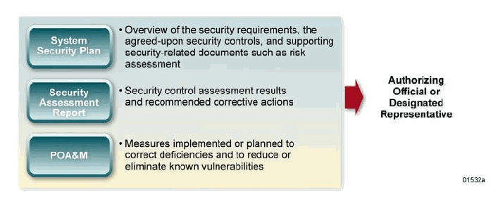
システムセキュリティ計画、セキュリティ評価報告書、是正措置計画・進捗状況（POA&M）を承認権限者または指定代理人に提出する図。
Figure 11-1. Key Security Accreditation Components
図11-1. セキュリティ認定の主要構成要素
未レビュー訳11.5 Accreditation Decisions
11.5 認定の決定
The security accreditation package documents the results of the security certification. To ensure that the agency's business and operational needs are fully considered, the authorizing official should meet with the system owner prior to issuing the security accreditation decision. In this meeting, the certification and accreditation authorities should clearly explain the rationale for their risk-based decision and, where appropriate, fully explain the terms and conditions of the authorization.
セキュリティ認定パッケージはセキュリティ認証の結果を文書化する。機関の業務上および運用上のニーズを十分に考慮するため、認可責任者はセキュリティ認定の決定を下す前にシステム所有者と面談するべきである。この面談で、認証・認定機関はリスクベースの決定の根拠を明確に説明し、適切な場合は認可の条件を十分に説明するべきである。
未レビュー訳The security accreditation decision communicates the accreditation authority’s decision and provides the information system owner with the:
セキュリティ認定の決定は、認定機関の判断を伝え、情報システム所有者に次の情報を提供する。
未レビュー訳•Security accreditation decision – official decision by the authorizing official on whether to accredit the system, accredit the system with conditions, or deny system accreditation;
•セキュリティ認定の決定 — システムを認定する、条件付きで認定する、または認定を拒否するかについて、認可責任者が下す正式な決定
•Supporting rationale for the decision – justification for the authorizing official’s decision; and
•決定の根拠 — 認可責任者の決定を正当化する理由; および
•Terms and conditions for the authorization – limitations or restrictions placed on the operation of the system to which the system owner is bound.
•認可の条件 — システム所有者が遵守する、システム運用上の制限または制約
The contents of security certification and accreditation-related documentation, especially information dealing with information system vulnerabilities, should be marked and protected appropriately in accordance with agency policy, and retained in accordance with the agency’s record retention policy.
セキュリティ認証・認定関連文書の内容、特に情報システムの脆弱性に関する情報には、機関の方針に従って適切な表示を付けて保護し、機関の記録保存方針に従って保管するべきである。
未レビュー訳11.6 Continuous Monitoring
11.6 継続的監視
The Continuous Monitoring phase is an essential component in any security program. During this phase, the status of the security controls in the information system are checked on an ongoing basis. An effective continuous monitoring program can be used to support the annual FISMA requirement for assessing the security controls in information systems. At a minimum, an effective monitoring program requires the following:
継続的監視段階は、あらゆるセキュリティプログラムに不可欠な要素である。この段階では、情報システムのセキュリティ管理策の状態を継続的に確認する。効果的な継続的監視プログラムは、情報システムのセキュリティ管理策を評価するFISMAの年次要件を支援するために利用できる。最低限、効果的な監視プログラムには次の事項が必要である。
未レビュー訳•Configuration management and configuration control processes for the information system;
•情報システムの構成管理および構成制御プロセス
•Security impact analyses on changes to the information system; and
•情報システムへの変更に関するセキュリティ影響分析; および
•Assessment of selected security controls in the information system and reporting of information system security status to appropriate agency officials.
•情報システム内の選定されたセキュリティ管理策の評価と、機関の適切な担当官への情報システムのセキュリティ状況の報告
To determine which security controls to select for review, agencies should first prioritize testing on POA&M items that become closed. These newly implemented controls should be validated. Agencies should test against system-related security control changes that occurred but did not constitute a major change necessitating a new C&A. Agencies should identify all security controls that are continuously monitored as annual testing and evaluation activities. Examples of this include (but are not limited to) ongoing security training, Denial of Service and Malicious Code protection activities, Intrusion Detection monitoring, Log File reviews, etc. Once this is completed, agencies should look at the remaining controls that have not been tested for that year and make a decision on further annual testing based on risk, importance of control, and date of last test.
レビュー対象とするセキュリティ管理策を選ぶ際、機関はまず、完了扱いとなったPOA&M項目を優先してテストするべきである。新たに実装した管理策は検証する。新たな認証・認定を要する大幅な変更には至らないが、システム関連のセキュリティ管理策に生じた変更に対してもテストするべきである。機関は、継続的に監視するすべてのセキュリティ管理策を年次テスト・評価活動として特定するべきである。例として、継続的なセキュリティ訓練、サービス拒否攻撃および悪意のあるコードへの防御活動、侵入検知の監視、ログファイルのレビューなどがあるが、これらに限らない。これらを完了した後、機関はその年にまだテストしていない管理策を確認し、リスク、管理策の重要度、前回のテスト日を踏まえて追加の年次テストを行うか判断するべきである。
未レビュー訳The results of continuous monitoring should be reported to the authorizing official and senior agency information security officer on a regular basis and any necessary updates made to the system security plan. A continuous monitoring reporting form is provided in NIST SP 800-53A.
継続的監視の結果は、定期的に認可責任者および上級機関情報セキュリティ責任者に報告し、必要な更新をシステムセキュリティ計画に反映するべきである。継続的監視の報告様式はNIST SP 800-53Aに示されている。
未レビュー訳11.7 Program Assessments
11.7 プログラム評価
FISMA requires each agency to develop, document, and implement an agency-wide information security program to provide information security for the information and information systems that support the operations and assets of the agency, including those provided or managed by another agency, contractor, or other source.
FISMAは各機関に対し、機関の運用および資産を支える情報と情報システム（他の機関、請負業者、その他の提供元が提供または管理するものを含む）を保護するため、機関全体の情報セキュリティプログラムを策定、文書化、実施することを求めている。
未レビュー訳To ensure the adequacy and effectiveness of information security controls, FISMA requires agency program officials and CIOs to conduct annual reviews of the agency’s information security program and report the results to OMB. OMB uses this data to assist in its oversight responsibilities and to prepare an annual report to Congress on agency compliance with FISMA.
情報セキュリティ管理策の適切性と有効性を確保するため、FISMAは機関のプログラム担当者およびCIOに対し、機関の情報セキュリティプログラムを毎年レビューし、その結果をOMBに報告するよう求めている。OMBはこのデータを監督責任の遂行と、機関のFISMA遵守状況に関する議会への年次報告書の作成に利用する。
未レビュー訳In addition, FISMA requires each agency to conduct an independent evaluation of its information security program each year. For agencies with an inspector general (IG), that evaluation is to be done by the agency IG. For agencies without an IG, the evaluation is to be done by an external auditor. In either case, the agency annual report to OMB must include the independent evaluation.
さらにFISMAは、各機関に対し、情報セキュリティプログラムを毎年独立して評価することを求めている。監察総監（IG）がいる機関では、機関のIGが評価を行う。IGがいない機関では、外部監査人が評価を行う。いずれの場合も、OMBに提出する機関の年次報告書に独立評価を含めなければならない。
未レビュー訳Each quarter, agencies prepare and submit plan of action and milestone (POA&M) reports to OMB for all programs and systems where an information system security weakness has been found. In addition, program officials shall regularly (at the direction of the CIO) update the agency CIO on their program to enable the CIO to monitor agency-wide remediation efforts and provide the quarterly update of the POA&M to OMB.
機関は四半期ごとに、情報システムのセキュリティ上の弱点が見つかったすべてのプログラムおよびシステムについて、行動計画およびマイルストーン（POA&M）報告書を作成し、OMBに提出する。さらに、プログラム担当者はCIOの指示に従って定期的に機関CIOにプログラムの状況を報告しなければならない。これにより、CIOは機関全体の是正措置を監視し、POA&Mの四半期更新をOMBに提出できる。
未レビュー訳To assist agencies in meeting their annual FISMA reporting requirements, the Information Security Program Assessment Questionnaire contained in Annex 11.A Agency Information Security Program Assessment Questionnaire, provides questions on many of the areas typically required for inclusion in agency reports. The questionnaire contains agency-wide, program-level questions that are not found in NIST SP 800-53. The questionnaire can be customized with agency-specific, program-related questions and can be completed by the CIO, the senior agency information security officer (SAISO), or an independent assessor who is evaluating the agency information security program.
機関がFISMAの年次報告要件を満たせるよう、附属書11.A「機関情報セキュリティプログラム評価質問票」に掲載された情報セキュリティプログラム評価質問票は、機関の報告書に通常含める必要がある多くの分野について質問を示す。この質問票には、NIST SP 800-53にはない機関全体およびプログラムレベルの質問が含まれる。機関固有のプログラム関連質問を加えて質問票をカスタマイズし、CIO、上級機関情報セキュリティ責任者（SAISO）、または機関の情報セキュリティプログラムを評価する独立評価者が回答できる。
未レビュー訳The questionnaire consists of a cover sheet and a series of questions which are answered for the Agency Information Security Program. The cover sheet requires descriptive information such as the name of the agency, bureau, or agency-operating unit, and the name, title, and organization of the individual completing the questionnaire. The date and time period covered in the report should be listed along with describing the purpose of the assessment. For example, the annual assessment of the agency information security program is required by FISMA; an assessment was performed because of repeated virus infections. The final information listed on the cover sheet is the number of agency systems in the low, moderate, and high FIPS 199 impact categories.
質問票は表紙と、機関情報セキュリティプログラムについて回答する一連の質問で構成される。表紙には、機関、省庁、または機関運用部門の名称、ならびに回答者の氏名、役職、所属組織などの説明情報を記載する。報告書の日付と対象期間を記載し、評価の目的を説明するべきである。たとえば、FISMAにより機関の情報セキュリティプログラムの年次評価が求められている場合や、ウイルス感染が繰り返し発生したため評価を実施した場合がある。表紙の最後に、FIPS 199の影響度カテゴリ（低、中、高）ごとの機関システム数を記載する。
未レビュー訳The series of questions are related to the management of an agency-wide information security program. Each of these questions addresses information security program elements critical to the success of an agency information security program. This section is flexible and extensible. The agency may add as many questions as desired to more fully assess the status and/or effectiveness of the agency information security program or to address questions or concerns that are raised by other interested parties.
一連の質問は、機関全体の情報セキュリティプログラムの管理に関するものである。各質問は、機関の情報セキュリティプログラムを成功させるうえで重要な要素を扱う。このセクションは柔軟に拡張できる。機関は、情報セキュリティプログラムの状況や有効性をより十分に評価するため、または他の関係者が提起した質問や懸念に対処するため、必要なだけ質問を追加してよい。
未レビュー訳Each question should be answered for each level of IT Security maturity. For the “Policy” maturity level, to answer “Yes,” the topic should be documented in agency policy. For the “Procedures” maturity level, to answer “Yes,” the topic should be documented in detailed procedures. For the “Implemented” maturity level, to answer “Yes,” the implementation is verified by examining the procedures and program area documentation, and interviewing key personnel to determine that the procedures are implemented. For the “Tested” maturity level, to answer “Yes,” documents should be examined and interviews should be conducted to verify that the policies and procedures for the question are implemented and operating as intended and provide the desired level of security. For the “Integrated” maturity level, to answer “Yes,” the policies, procedures, implementation, and testing are continually monitored and improvements are made as a normal business process of the agency.
各質問には、ITセキュリティ成熟度の各段階について回答するべきである。「方針」段階で「はい」と回答するには、そのテーマが機関の方針に文書化されているべきである。「手順」段階で「はい」と回答するには、そのテーマが詳細な手順に文書化されているべきである。「実装済み」段階で「はい」と回答するには、手順とプログラム分野の文書を調べ、主要要員に聞き取りを行い、手順が実装されていることを確認する。「テスト済み」段階で「はい」と回答するには、文書を調べ、聞き取りを行って、質問に関する方針と手順が実装され、意図どおりに運用され、望ましい水準のセキュリティを提供することを確認するべきである。「統合済み」段階で「はい」と回答するには、方針、手順、実装、テストを継続的に監視し、機関の通常の業務プロセスとして改善を行っている。
未レビュー訳Website:
ウェブサイト:
未レビュー訳www.csrc.nist.gov
www.csrc.nist.gov
未レビュー訳References: Public Law 107-347 [H.R. 2458], The E-Government Act of 2002, Title III of this Act is the Federal Information Security Management Act of 2002 (FISMA), December 17, 2002.
参考文献: 公法107-347 [H.R. 2458]、2002年電子政府法。本法第III編は、2002年連邦情報セキュリティ管理法（FISMA）である。2002年12月17日。
Office of Management and Budget Circular A-130, Management of Federal Information Resources, November 2000.
行政管理予算局通達A-130「連邦情報資源の管理」、2000年11月。
Federal Information Processing Standard 199, Standards for Security Categorization of Federal Information and Information Systems, February 2004.
連邦情報処理規格199「連邦情報および情報システムのセキュリティ分類に関する規格」、2004年2月。
Federal Information Processing Standard 200, Minimum Security Requirements for Federal Information and Information Systems, March 2006.
連邦情報処理規格200「連邦情報および情報システムの最低セキュリティ要件」、2006年3月。
未レビュー訳National Institute of Standards and Technology Special Publication 800-18, Revision 1, Guide for Developing Security Plans for Federal Information Systems, February 2006.
国立標準技術研究所特別刊行物 SP 800-18改訂1「連邦情報システムのセキュリティ計画策定ガイド」、2006年2月。
National Institute of Standards and Technology Special Publication 800-53A, Guide for Assessing the Security Controls in Federal Information Systems (draft), April 2006.
国立標準技術研究所特別刊行物 SP 800-53A「連邦情報システムのセキュリティ管理策評価ガイド」（草案）、2006年4月。
National Institute of Standards and Technology Special Publication 800-30, Risk Management Guide for Information Technology Systems, July 2002.
国立標準技術研究所特別刊行物 SP 800-30「情報技術システムのリスク管理ガイド」、2002年7月。
National Institute of Standards and Technology Special Publication 800-37, Guide for the Security Certification and Accreditation of Federal Information Systems, May 2004.
国立標準技術研究所特別刊行物 SP 800-37「連邦情報システムのセキュリティ認証および認定ガイド」、2004年5月。
National Institute of Standards and Technology Special Publication 800-53, Revision 1, Recommended Security Controls for Federal Information System, February 2006.
国立標準技術研究所特別刊行物 SP 800-53改訂1「連邦情報システム向け推奨セキュリティ管理策」、2006年2月。
未レビュー訳National Institute of Standards and Technology Special Publication 800-60, Guide for Mapping Types of Information and Information Systems to Security Categories, June 2004.
国立標準技術研究所特別刊行物 SP 800-60「情報の種類および情報システムをセキュリティカテゴリに対応付けるためのガイド」、2004年6月。
National Institute of Standards and Technology Special Publication 800-64, Security Considerations in the Information System Development Life Cycle, Rev. 1, June 2004.
国立標準技術研究所特別刊行物 SP 800-64「情報システム開発ライフサイクルにおけるセキュリティ上の考慮事項」、改訂1、2004年6月。
Annex 11.A Agency Information Security Program Assessment Questionnaire
附属書11.A 機関情報セキュリティプログラム評価質問票
未レビュー訳Name of Agency: ____________________________________________
機関名: ____________________________________________
未レビュー訳Name of Responsible Individual: _______________________________
責任者名: __________________________________________
未レビュー訳Name(s) of Assessors: _______________________________________
評価者名: __________________________________________
未レビュー訳Date of Report: _____________________________________________
報告日: _____________________________________________
未レビュー訳Time Period Covered in Report: ________________________________
報告対象期間: _______________________________________
未レビュー訳Purpose of Report: __________________________________________
報告の目的: _________________________________________
未レビュー訳Agency System Summary:
機関システムの概要:
Number of Systems in each FIPS 199 Impact Level Category
FIPS 199の各影響度カテゴリに属するシステム数
未レビュー訳Low: _______ Moderate: ________ High: __________
低: _______ 中: ________ 高: __________
未レビュー訳Information Security Program Questions
情報セキュリティプログラムに関する質問
未レビュー訳Each question should be answered for each level of IT Security maturity. Each column represents an IT Security Maturity Level. For the “Policy” maturity level, to answer “Yes,” the topic should be documented in agency policy. For the “Procedures” maturity level, to answer “Yes,” the topic should be documented in detailed procedures. For the “Implemented” maturity level, to answer “Yes,” the implementation is verified by examining the procedures and program area documentation, and interviewing key personnel to determine that the procedures are implemented. For the “Tested” maturity level, to answer “Yes,” documents should be examined and interviews should be conducted to verify that the policies and procedures for the question are implemented and operating as intended and provide the desired level of security. For the “Integrated” maturity level, to answer “Yes,” the policies, procedures, implementation, and testing are continually monitored and improvements are made as a normal business process of the agency.
各質問には、ITセキュリティ成熟度の各段階について回答するべきである。各列はITセキュリティ成熟度の段階を表す。「方針」段階で「はい」と回答するには、そのテーマが機関の方針に文書化されているべきである。「手順」段階で「はい」と回答するには、そのテーマが詳細な手順に文書化されているべきである。「実装済み」段階で「はい」と回答するには、手順とプログラム分野の文書を調べ、主要要員に聞き取りを行い、手順が実装されていることを確認する。「テスト済み」段階で「はい」と回答するには、文書を調べ、聞き取りを行って、質問に関する方針と手順が実装され、意図どおりに運用され、望ましい水準のセキュリティを提供することを確認するべきである。「統合済み」段階で「はい」と回答するには、方針、手順、実装、テストを継続的に監視し、機関の通常の業務プロセスとして改善を行っている。
未レビュー訳| Program Questions | Policy | Procedures | Implemented | Tested | Integrated | Comments |
| 1. Security Control Review Process Does management ensure that corrective information security actions are tracked using the Plan of Action & Milestones (POA&M) process? | ||||||
| 2. Capital Planning and Investment Control Does the agency require the use of a business case/Exhibit 300/Exhibit 53 to record the resources required for security at an acceptable level of risk for all programs and systems in the agency? | ||||||
| 3. Investment Review Board Is there an Investment Review Board (or similar group) designated and empowered to ensure that all investment requests include the security resources needed or that all exceptions to this requirement are documented? | ||||||
| 4. Integrating Information Security and Critical Infrastructure Protection into Capital Planning and Investment Control Is there integration of information security and Critical Infrastructure Protection (CIP) into the Capital Planning and Investment Control(CPIC) Process? |
原本PDFの抜粋画像
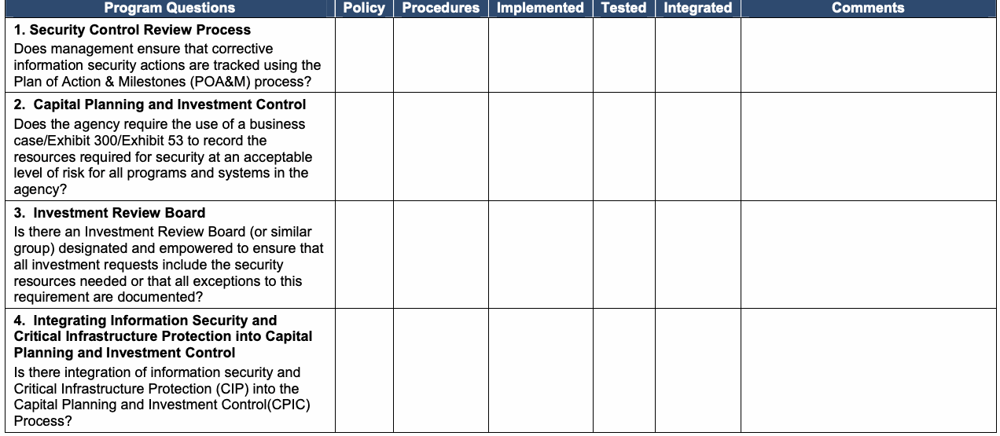
| Program Questions | Policy | Procedures | Implemented | Tested | Integrated | Comments |
| 1. セキュリティ管理策レビューのプロセス — 是正対象となった情報セキュリティ措置が、行動計画およびマイルストーン（POA&M）プロセスで追跡されるよう、管理者は徹底しているか? | ||||||
| 2. 資本計画および投資管理 — 機関内のすべてのプログラムとシステムについて、許容可能なリスク水準のセキュリティに必要な資源を記録するため、事業計画書／別紙300／別紙53の使用を機関は義務付けているか? | ||||||
| 3. 投資審査委員会 — すべての投資申請に必要なセキュリティ資源が含まれていること、または要件の例外がすべて文書化されていることを確実にする権限を与えられた投資審査委員会（または同等の組織）が指定されているか? | ||||||
| 4. 資本計画および投資管理への情報セキュリティと重要インフラ保護の統合 — 資本計画および投資管理（CPIC）プロセスに情報セキュリティと重要インフラ保護（CIP）が統合されているか? |
| Program Questions | Policy | Procedures | Implemented | Tested | Integrated | Comments |
| 5. Budget and Resources Are information security resources (internal FTEs and funding) allocated to protect information and information systems in accordance with assessed risks? | ||||||
| 6. Systems and Projects Inventory Are IT projects and systems identified in an inventory and is the information about the IT projects and systems relevant to the investment management process? Is there an inventory of systems as required by FISMA? | ||||||
| 7. IT Security Metrics Are IT security metrics collected agency-wide and reported? | ||||||
| 8. Enterprise Architecture and the Federal Enterprise Architecture Security and Privacy Profile Are system- and enterprise-level information security and privacy requirements and capabilities documented within the agency’s Enterprise Architecture? Is that information used to understand the current risks to the agency’s mission? Is that information used to help program and agency executives select the best security and privacy solutions to enable the mission?74 | ||||||
| 9. Critical Infrastructure Protection Plan If required in your agency, is there a documented critical infrastructure and key resources protection plan that meets the requirements of HSPD-7 | ||||||
| 10. Life Cycle Management Is there a system life cycle management process that requires each system to be C&A? Is each system officially approved to operate? Is the |
原本PDFの抜粋画像
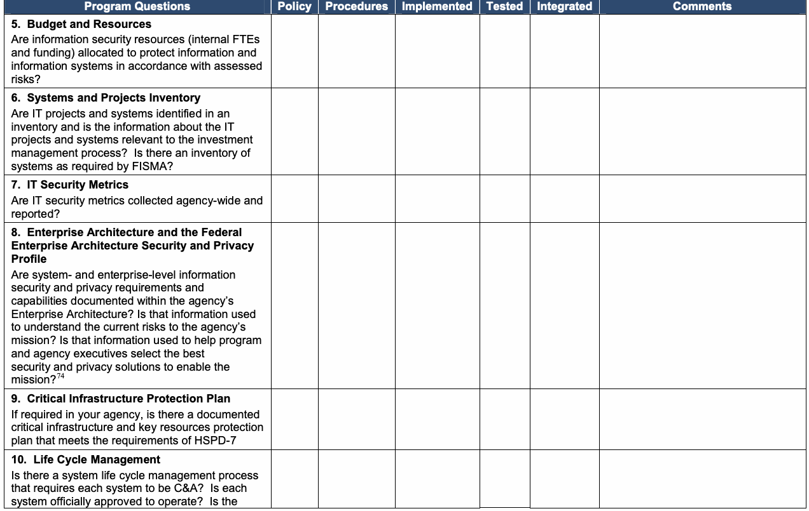
| Program Questions | Policy | Procedures | Implemented | Tested | Integrated | Comments |
| 5. 予算および資源 — 評価済みリスクに従って情報と情報システムを保護するため、情報セキュリティ資源（内部の常勤換算職員および資金）が配分されているか? | ||||||
| 6. システムおよびプロジェクトの目録 — ITプロジェクトとシステムは目録に登録され、投資管理プロセスに関連する情報が記載されているか。FISMAが求めるシステム目録はあるか? | ||||||
| 7. ITセキュリティ指標 — ITセキュリティ指標を機関全体で収集し、報告しているか? | ||||||
| 8. エンタープライズアーキテクチャと連邦エンタープライズアーキテクチャのセキュリティ・プライバシープロファイル — システムレベルおよび企業レベルの情報セキュリティ・プライバシー要件と能力は機関のエンタープライズアーキテクチャに文書化されているか。その情報を機関の任務に対する現在のリスク把握に使っているか。任務を実現する最適なセキュリティ・プライバシー解決策をプログラム幹部と機関幹部が選択するために、その情報を使っているか。74 | ||||||
| 9. 重要インフラ保護計画 — 機関で必要とされる場合、HSPD-7の要件を満たす重要インフラおよび主要資源の保護計画が文書化されているか? | ||||||
| 10. ライフサイクル管理 — 各システムに認証・認定（C&A）を求めるシステムライフサイクル管理プロセスがあるか。各システムは正式な運用承認を受けているか。さらに、その |
| Program Questions | Policy | Procedures | Implemented | Tested | Integrated | Comments |
| system LCM process communicated to appropriate persons? |
原本PDFの抜粋画像
| Program Questions | Policy | Procedures | Implemented | Tested | Integrated | Comments |
| システムLCMプロセスは適切な関係者に伝達されているか? |
FISMA requires each agency to appoint a Senior Agency Information Security Officer (SAISO) who heads an office with the mission and resources to develop and maintain an agency information security program. A “Yes” response affirms compliance. A “No” response should be accompanied by explanatory comments and a date when this will be done.
FISMAは各機関に対し、機関情報セキュリティプログラムを策定・維持する使命と資源を持つ部署を統括する上級機関情報セキュリティ責任者（SAISO）を任命するよう求めている。「はい」の回答は遵守していることを示す。「いいえ」の回答には、説明コメントと実施予定日を記載するべきである。
未レビュー訳| Question | Accomplished? | Comments |
| Senior Agency Information Security Officer Has a senior agency information security officer been appointed with the mission and resources to develop and maintain an agency information security program? |
原本PDFの抜粋画像
| 質問 | 達成? | コメント |
| 上級機関情報セキュリティ責任者 — 機関の情報セキュリティプログラムを策定・維持する使命と資源を持つ上級機関情報セキュリティ責任者が任命されているか? |
Annex 11.B Minimum Security Controls
附属書11.B 最低限のセキュリティ管理策
未レビュー訳Security controls in the security control catalog (NIST SP 800-53, Appendix F) have a well-defined organization and structure. The security controls are organized into classes and families for ease of use in the control selection and specification process. There are three general classes of security controls (i.e., management, operational, and technical75). Each family contains security controls related to the security function of the family. A standardized, two-character identifier is assigned to uniquely identify each control family. Table 11-1 summarizes the classes and families in the security control catalog and the associated family identifiers.
セキュリティ管理策カタログ（NIST SP 800-53、付録F）の管理策は、明確に定義された構成と体系を持つ。管理策の選択および仕様策定を容易にするため、セキュリティ管理策はクラスとファミリーに整理されている。セキュリティ管理策には、管理的、運用的、技術的75という3つの一般クラスがある。各ファミリーには、そのファミリーのセキュリティ機能に関連する管理策が含まれる。各管理策ファミリーを一意に識別するため、標準化された2文字の識別子が割り当てられている。表11-1はセキュリティ管理策カタログのクラスとファミリー、および対応するファミリー識別子をまとめたものである。
未レビュー訳| CLASS | FAMILY | IDENTIFIER |
| Management | Risk Assessment | RA |
| Management | Planning | PL |
| Management | System and Services Acquisition | SA |
| Management | Certification, Accreditation, and Security Assessments | CA |
| Operational | Personnel Security | PS |
| Operational | Physical and Environmental Protection | PE |
| Operational | Contingency Planning | CP |
| Operational | Configuration Management | CM |
| Operational | Maintenance | MA |
| Operational | System and Information Integrity | SI |
| Operational | Media Protection | MP |
| Operational | Incident Response | IR |
| Operational | Awareness and Training | AT |
| Technical | Identification and Authentication | IA |
| Technical | Access Control | AC |
| Technical | Audit and Accountability | AU |
| Technical | System and Communications Protection | SC |
原本PDFの抜粋画像
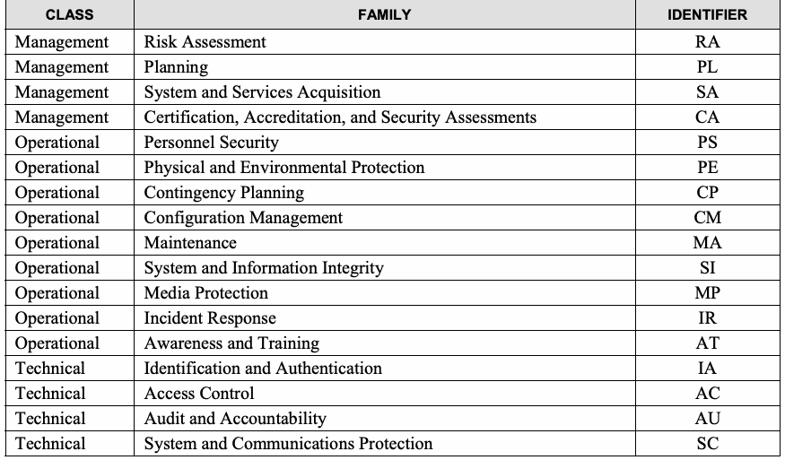
| クラス | ファミリー | 識別子 |
| 管理的 | リスクアセスメント | RA |
| 管理的 | 計画 | PL |
| 管理的 | システムおよびサービスの調達 | SA |
| 管理的 | 認証、認定、およびセキュリティ評価 | CA |
| 運用的 | 要員のセキュリティ | PS |
| 運用的 | 物理的および環境的保護 | PE |
| 運用的 | コンティンジェンシープランニング | CP |
| 運用的 | 構成管理 | CM |
| 運用的 | 保守 | MA |
| 運用的 | システムおよび情報の完全性 | SI |
| 運用的 | 媒体保護 | MP |
| 運用的 | インシデント対応 | IR |
| 運用的 | 意識向上および訓練 | AT |
| 技術的 | 識別および認証 | IA |
| 技術的 | アクセス制御 | AC |
| 技術的 | 監査および説明責任 | AU |
| 技術的 | システムおよび通信の保護 | SC |
Table 11-1: Security Control Class, Family, and Identifier
表11-1: セキュリティ管理策のクラス、ファミリー、識別子
未レビュー訳Security control class designations (i.e., management, operational, and technical) are defined below for clarification in preparation of system security plans. Management controls focus on the management of the information system and the management of risk for a system. They are techniques and concerns that are normally addressed by management. Operational controls address security methods focusing on mechanisms primarily implemented and executed by people (as opposed to systems). These controls are put in place to improve the security of a particular system (or group of systems). They often require technical or specialized expertise and often rely upon management activities as well as technical controls.
システムセキュリティ計画の策定に備え、以下にセキュリティ管理策クラス（管理的、運用的、技術的）の分類を説明する。管理的管理策は、情報システムの管理とシステムのリスク管理に重点を置く。通常、管理者が扱う技法や課題である。運用的管理策は、システムではなく主に人が実装し実行する仕組みに焦点を当てたセキュリティ手法である。これらの管理策は、特定のシステムまたはシステム群のセキュリティを向上させるために導入する。多くの場合、技術的または専門的な知識を必要とし、管理活動および技術的管理策にも依存する。
未レビュー訳Technical controls focus on security controls that the computer system executes. The controls can provide automated protection for unauthorized access or misuse, facilitate detection of security violations, and support security requirements for applications and data.
技術的管理策は、コンピューターシステムが実行するセキュリティ管理策に焦点を当てる。これらの管理策は、不正アクセスまたは誤用に対する自動保護を提供し、セキュリティ違反の検知を容易にし、アプリケーションおよびデータのセキュリティ要件を支援する。
未レビュー訳Chapter 12
第12章
未レビュー訳12. Security Services and Products
12. セキュリティサービスおよび製品の
未レビュー訳Acquisition
調達
未レビュー訳Information security services and products are essential elements of an organization’s information security program. Many products and services to support an agency’s information security program for information systems are widely available in the marketplace today, and are frequently used by federal agencies. Security products and services should be selected and used within the organization’s overall program to manage the design, development, and maintenance of its information security infrastructure, and to protect its mission-critical information. In the acquisition of both, agencies should apply risk management principles to aide in the identification and mitigation of risks associated with the acquisition.
情報セキュリティサービスおよび製品は、組織の情報セキュリティプログラムに不可欠な要素である。現在、市場では機関の情報システム向け情報セキュリティプログラムを支援する多くの製品やサービスを広く入手でき、連邦機関でも頻繁に利用している。セキュリティ製品とサービスは、情報セキュリティ基盤の設計、開発、保守を管理し、任務上重要な情報を保護する組織全体のプログラムの一環として選択・利用するべきである。両者を調達する際、機関はリスク管理の原則を適用し、調達に伴うリスクを特定して軽減するべきである。
未レビュー訳In the acquisition of information security products, agencies are encouraged to conduct a cost-benefit analysis as part of the product-selection process – one that also includes the costs associated with risk mitigation. This cost-benefit analysis should include a life cycle cost (LCC) estimate for the status quo and one for each identified alternative while highlighting the benefits associated with each alternative. National Institute of Standards and Technology (NIST) Special Publication (SP) 800-36, Guide to Selecting Information Technology (IT) Security Products, first defines broad security product categories and specifies product types, product characteristics, and environment considerations within those categories. The guide then provides a list of pertinent questions that agencies should ask when selecting products.
情報セキュリティ製品を調達する際、機関は製品選定プロセスの一環として費用便益分析を行うことが推奨される。この分析にはリスク緩和に関する費用も含めるべきである。費用便益分析には、現状維持と特定した各代替案のライフサイクル費用（LCC）見積もりを含め、各代替案の便益を明示するべきである。国立標準技術研究所（NIST）特別刊行物（SP）800-36「情報技術（IT）セキュリティ製品の選定ガイド」は、まずセキュリティ製品の大分類を定義し、各分類の製品種類、特性、環境上の考慮事項を示す。続いて、製品選定時に機関が確認するべき関連質問を列挙する。
未レビュー訳As with the acquisition of products, the acquisition of services bears considerable risks that federal agencies must identify and mitigate. The importance of systematically managing the process for acquisition of information security services cannot be underestimated because of the potential impact associated with those risks. In selecting this type of services, agencies should employ risk management processes in the context of information security services life cycle, which provides an organizational framework for information security decision makers. NIST SP 800-35, Guide to Information Technology Security Services, provides assistance with the selection, implementation, and management of information security services by guiding the reader through the various phases of the information security services life cycle. Information security decision makers must consider the costs involved, the underlying security requirements, and the impact of their decisions on the organizational mission, operations, strategic functions, personnel, and service-provider arrangements.
製品調達と同様、サービス調達にも相当なリスクが伴い、連邦機関はそのリスクを特定し軽減しなければならない。リスクがもたらす潜在的影響を考えると、情報セキュリティサービスの調達プロセスを体系的に管理する重要性は計り知れない。この種のサービスを選定する際、機関は情報セキュリティサービスのライフサイクルに沿ったリスク管理プロセスを用いるべきである。このライフサイクルは、情報セキュリティの意思決定者に組織的な枠組みを提供する。NIST SP 800-35「情報技術セキュリティサービスガイド」は、情報セキュリティサービスのライフサイクルの各段階を案内し、サービスの選択、実装、管理を支援する。情報セキュリティの意思決定者は、費用、基礎となるセキュリティ要件、意思決定が組織の任務、運用、戦略的機能、人員、サービス提供者との取り決めに及ぼす影響を考慮しなければならない。
未レビュー訳The process of selecting information security products and services involves numerous people throughout an organization. Each person involved in the process, whether on an individual or group level, should understand the importance of security in the organization’s information infrastructure and the security impacts of their decisions. Depending on its needs, an organization may include all of the personnel listed below or a combination of particular positions relevant to information security needs.
情報セキュリティ製品およびサービスの選定プロセスには、組織内の多くの人が関与する。個人またはグループとして関与する各人は、組織の情報基盤におけるセキュリティの重要性と、自らの判断がセキュリティに及ぼす影響を理解するべきである。組織はニーズに応じて、以下の要員全員、または情報セキュリティ上のニーズに関連する特定の役職を組み合わせて関与させてもよい。
未レビュー訳•Chief Information Officer;
•最高情報責任者;
•Contracting Officer;
•契約担当官;
•Contracting Officer’s Technical Representative;
•契約担当官の技術代表者;
•Information Technology (IT) Investment Review Board (IRB) or its equivalent;
•情報技術（IT）投資審査委員会（IRB）または同等の組織;
•Security Program Manager;
•セキュリティプログラムマネージャー;
•Information System Security Officer;
•情報システムセキュリティ責任者;
•Program Manager (Owner of Data)/Acquisition Initiator; and
•プログラムマネージャー（データ所有者）／調達開始担当者; および
•Privacy Officer.
•プライバシー責任者。
12.1 Information Security Services Life Cycle
12.1 情報セキュリティサービスのライフサイクル
The security services life cycle provides a framework to help security decision makers organize and coordinate their security efforts—from initiation to completion. Figure 12-1 depicts the security services life cycle for obtaining security services at a high level. Table 12-1 provides a brief summary of each phase.
セキュリティサービスのライフサイクルは、開始から完了までセキュリティ担当者の取り組みを整理・調整する枠組みを提供する。図12-1はセキュリティサービスを取得するライフサイクルの全体像を示す。表12-1は各段階を簡潔にまとめる。
未レビュー訳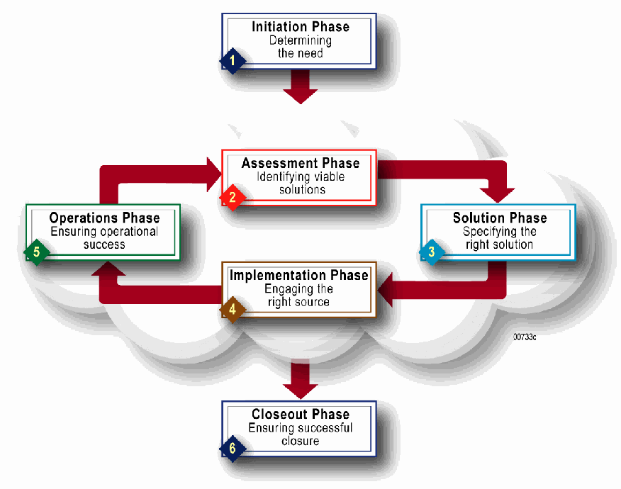
クラウドシステムのライフサイクルを示す循環図。開始、解決策の評価、解決策の選定、実装、運用、完了の6段階を矢印でつなぐ。
Figure 12-1. Information Security Services Life Cycle
図12-1. 情報セキュリティサービスのライフサイクル
未レビュー訳Table 12-1. Information Security Services Life Cycle
表12-1. 情報セキュリティサービスのライフサイクル
未レビュー訳原本PDFの抜粋画像
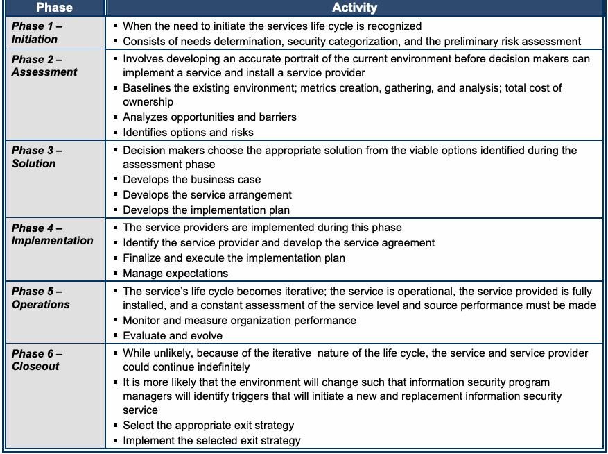
原本PDFの抜粋画像
原本PDFの抜粋画像
原本PDFの抜粋画像
原本PDFの抜粋画像
12.2 Selecting Information Security Services
12.2 情報セキュリティサービスの選定
Before selecting specific services, organizations should review the current status of their security programs and the security controls that are either planned or in place to protect information systems and data. Organizations should use the risk management process to identify an effective mix of management, operational, and technical security controls that will mitigate risk to an acceptable level. The number and type of appropriate security controls and their corresponding information security services may vary throughout a particular system’s services life cycle. The relative maturity of an organization’s security architecture is likely to influence the types of security controls that are appropriate for a particular system. The blend of security controls is tied to the mission of the organization and the role of the system within the organization as it supports that mission. A more in-depth look at the various types of security controls can be found in NIST SP 800-53, Revision 1, Recommended Security Controls for Federal Information Systems, February 2006. Table 12-2 lists categories of information security services.
具体的なサービスを選択する前に、組織はセキュリティプログラムの現状と、情報システムおよびデータを保護するために計画済みまたは実施済みのセキュリティ管理策をレビューするべきである。リスク管理プロセスを用いて、リスクを許容可能な水準に軽減するための管理的、運用的、技術的管理策を効果的に組み合わせるべきである。適切なセキュリティ管理策の数と種類、および対応する情報セキュリティサービスは、特定システムのサービスライフサイクルを通じて変化する場合がある。組織のセキュリティアーキテクチャの成熟度は、特定システムに適切な管理策の種類に影響する可能性が高い。セキュリティ管理策の組み合わせは、組織の任務およびその任務を支えるシステムの役割に結び付いている。さまざまなセキュリティ管理策の詳細については、NIST SP 800-53改訂1「連邦情報システム向け推奨セキュリティ管理策」（2006年2月）を参照。表12-2は情報セキュリティサービスのカテゴリを示す。
未レビュー訳Table 12-2. Information Security Services Categories
表12-2. 情報セキュリティサービスのカテゴリ
未レビュー訳| Categories | Description |
| Management Services | Techniques and concerns normally addressed by management in the organization’s computer security program. They focus on managing the computer security program and the risk within the organization. |
| Operational Services | Services focused on controls implemented and executed by people (as opposed to systems). They often require technical or specialized expertise and rely on management activities and technical controls. |
| Technical Services | Technical services focused on security controls a computer system executes. These services are dependent on the proper function of the system for effectiveness. |
原本PDFの抜粋画像
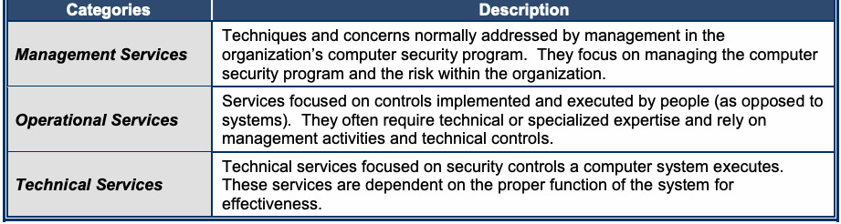
| カテゴリ | 説明 |
| 管理サービス | 組織のコンピューターセキュリティプログラムで通常管理者が扱う技法や課題。コンピューターセキュリティプログラムと組織内のリスクの管理に焦点を当てる。 |
| 運用サービス | システムではなく人が実装・実行する管理策に焦点を当てたサービス。多くの場合、技術的または専門的な知識を必要とし、管理活動および技術的管理策に依存する。 |
| 技術サービス | コンピューターシステムが実行するセキュリティ管理策に焦点を当てた技術サービス。効果を発揮するには、システムが適切に機能することが前提となる。 |
Selecting the most appropriate services, service mix, and service level is a complex decision, as is deciding who should provide the needed services. A broad range of possible service arrangements exists. An organization may select its internal employees and teams to provide the service required, or it may choose to fully export the service to an external service provider. This external service provider could be any organization, including an external group from a subsidiary organization, a business unit, or a commercial service provider.
最も適切なサービス、サービスの組み合わせ、サービス水準を選び、誰が必要なサービスを提供するかを決めることは複雑な判断である。利用可能なサービス契約の形態は多岐にわたる。組織は自組織の職員やチームを選んで必要なサービスを提供させてもよく、外部サービス提供者に全面的に委託してもよい。外部サービス提供者には、関連組織の別部門、事業部門、商用サービス提供者など、あらゆる組織が該当し得る。
未レビュー訳12.2.1 Selecting Information Security Services Management Tools
12.2.1 情報セキュリティサービス管理ツールの選定
Because of the potential harm caused by inadequate security, information security program managers and decision makers must employ effective management tools to increase the likelihood of success of acquired security services. Two important tools are metrics and service agreements, both of which can be used to make security service providers accountable for the results derived from the services they provide to the organization.
不十分なセキュリティがもたらす潜在的な損害を考慮し、情報セキュリティプログラムマネージャーと意思決定者は、調達したセキュリティサービスが成功する可能性を高める効果的な管理ツールを用いなければならない。重要なツールは指標とサービス契約の2つである。いずれも、組織に提供したサービスから得られる成果について、サービス提供者に説明責任を負わせるために利用できる。
未レビュー訳•Metrics are a management tool that facilitates decision making and accountability through practical, relevant data collection, data analysis, and performance data reporting.
•指標は、実用的で関連性のあるデータ収集、データ分析、およびパフォーマンスデータの報告を通じて、意思決定と説明責任を促進する管理ツールである。
•A service agreement is an agreement between the service provider and the organization requesting the service that specifies all services the service provider is to provide, to what extent, the duration of services, etc.
•サービス契約とは、サービス提供者とサービスを要求する組織との間で締結される合意であり、サービス提供者が提供するすべてのサービス、その範囲、サービス期間などを定める。
未レビュー訳12.2.2 Information Security Services Issues
12.2.2 情報セキュリティサービスに関する課題
Implementing a security service and service arrangement can be complex. Each security service carries its own costs and associated risks, as does each service arrangement. Making a decision based on one single issue can have major implications for the organization in other areas. For example, if it becomes clear that an external organization can provide the service more cost-effectively than the current internal service provider, security decision makers will have to consider the implications to the organization’s current personnel. The decision makers will have to balance near-term cost/value with potential long-term risks associated with potential loss of employee morale, attrition, and intellectual capital. Table 12-3 provides a list of general factors and issues associated with acquiring security services, grouped into six categories. This list is not intended to be exhaustive; it provides the most common, but not all, related factors and issues.
セキュリティサービスおよびサービス提供形態の実装は複雑になり得る。各セキュリティサービスには固有のコストと関連リスクがあり、各サービス提供形態にも同様にコストとリスクがある。単一の課題だけに基づいて判断すると、組織の他の領域に重大な影響を及ぼす可能性がある。例えば、外部組織が現行の内部サービス提供者より費用対効果の高い方法でサービスを提供できることが明らかになった場合、セキュリティ上の意思決定者は、組織の現職員への影響を考慮しなければならない。意思決定者は、短期的なコストと価値を、従業員の士気低下、離職、および知的資本の喪失の可能性に伴う長期的リスクと比較衡量する必要がある。表12-3は、セキュリティサービスの調達に関連する一般的な要因および課題を六つのカテゴリに分類して示す。この一覧は網羅的なものではなく、最も一般的な要因および課題を示しているが、すべてを含むわけではない。
未レビュー訳Table 12-3. Information Security Service Issue Categories
表12-3. 情報セキュリティサービスの課題カテゴリ
未レビュー訳| Categories | Issues |
| Strategic/Mission | For all the importance of security in general and information security in particular, it must support the mission or business function. When thinking about the implications of any decision, ultimately, decision makers must ask themselves what is best for the organization from a strategic point of view and what best helps the organization meet its mission. |
| Budgetary/Funding | Though funding is often at the heart of any business decision, cost is only one of many issues. The focus should be on value and full life cycle costs. |
| Technical/ Architectural | IT services, including management services with technical implications. Throughout the life cycle, information security program managers must consider whether their decisions have a technical and architectural effect on the organization. |
| Organizational | Issues such as damage to an organization’s image and reputation, change in focus on core competencies, and resiliency of the organization, relate to the intangible elements of an organization. In many cases, long-accepted internal controls and business practices that have developed over time due to natural business unit divisions or regulatory requirements may have to be reconsidered when an information security service provider is engaged. |
| Personnel | Issues related to the organization’s contractors and employees. Managers must remain aware of the impact of their decisions on their employees. Depending on the service arrangement implemented, major ramifications could exist for current employees; understanding these potential implications and dealing with them early will ensure the employees remain an important resource for the organization. |
| Policy/Process | Effective security starts with strong policy, and implications to policies and process must be considered to ensure appropriate transitions and implementations. |
原本PDFの抜粋画像
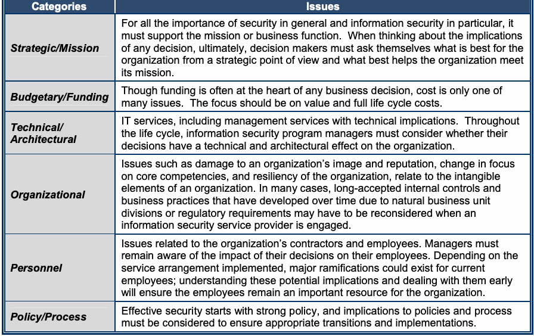
| カテゴリ | 課題 |
| 戦略／使命 | セキュリティ全般、特に情報セキュリティは重要であるが、それは使命または業務機能を支援しなければならない。あらゆる決定の影響を考える際、最終的に意思決定者は、戦略的観点から組織にとって何が最善か、また組織の使命達成に何が最も役立つかを自問しなければならない。 |
| 予算／資金 | 資金は多くの事業上の意思決定の中心となることが多いが、コストは数ある課題の一つにすぎない。価値とライフサイクル全体のコストに重点を置くべきである。 |
| 技術／アーキテクチャ | 技術的影響を伴う管理サービスを含むITサービス。ライフサイクル全体を通じて、情報セキュリティプログラムマネージャーは、自らの決定が組織に技術的およびアーキテクチャ上の影響を及ぼすかどうかを考慮しなければならない。 |
| 組織 | 組織のイメージや評判への損害、中核的能力への重点の変化、組織のレジリエンスなどの課題は、組織の無形要素に関係する。多くの場合、自然な事業部門の分化や規制要件によって長年にわたり形成され受け入れられてきた内部統制や業務慣行は、情報セキュリティサービス提供者を起用する際に再検討が必要となる場合がある。 |
| 人員 | 組織の請負業者および従業員に関する課題。管理者は、自らの決定が従業員に及ぼす影響を常に把握していなければならない。実施するサービス提供形態によっては、現職員に重大な影響が生じる可能性がある。こうした潜在的影響を理解して早期に対処すれば、従業員が組織にとって重要な資源であり続けるようにできる。 |
| ポリシー／プロセス | 効果的なセキュリティは強固なポリシーから始まる。適切な移行および実装を確保するため、ポリシーおよびプロセスへの影響を考慮しなければならない。 |
原本PDFの抜粋画像
12.2.3 General Considerations for Information Security Services
12.2.3 情報セキュリティサービスに関する一般的な考慮事項
In identifying the service provider that best meets an organization’s needs, decision makers will need to have many questions answered. Specifically, depending on the nature of the data the service provider accesses and processes on behalf of the agency, the service provider may be subject to legislative and regulatory requirements, including Federal Information Security Management Act (FISMA) and NIST standards and guidance, such as SP 800-53, Recommended Security Controls for Federal Information Systems, SP 800-37, Guide for the Security Certification and Accreditation of Federal Information Systems, and others. Questions pertaining to these requirements should become part of the organization’s standard process for researching and evaluating information security services and service providers. Table 12-4 is a representative sample of such questions, which includes general questions grouped into the six issue categories.
組織のニーズを最もよく満たすサービス提供者を特定するにあたり、意思決定者は多くの質問への回答を得る必要がある。特に、サービス提供者が政府機関に代わってアクセスおよび処理するデータの性質によっては、サービス提供者は連邦情報セキュリティ管理法（FISMA）やNISTの規格・指針（SP 800-53「連邦情報システムの推奨セキュリティ管理策」、SP 800-37「連邦情報システムのセキュリティ認証および認定ガイド」など）を含む、法令および規制要件の対象となる場合がある。これらの要件に関する質問は、情報セキュリティサービスおよびサービス提供者の調査・評価に関する組織の標準プロセスに含めるべきである。表12-4はそのような質問の代表例であり、一般的な質問を六つの課題カテゴリに分類している。
未レビュー訳These questions are intended as a guide, and each organization will need to decide which questions are relevant to its specific needs. The questions are not an exhaustive list, and organizations should develop additional questions. Lastly, the question may best be answered by the organization, not the service provider.
これらの質問は指針として意図されており、各組織は固有のニーズに関連する質問を決定する必要がある。質問一覧は網羅的ではなく、組織は追加の質問を作成すべきである。最後に、質問によってはサービス提供者ではなく組織自身が回答するのが最適な場合がある。
未レビュー訳Table 12-4. Information Security Service General Considerations
表12-4. 情報セキュリティサービスに関する一般的な考慮事項
未レビュー訳原本PDFの抜粋画像
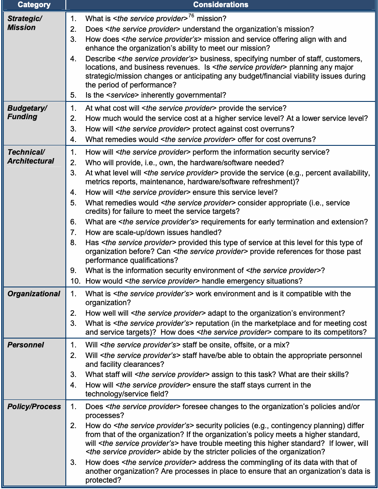
原本PDFの抜粋画像
原本PDFの抜粋画像
12.3 Selecting Information Security Products
12.3 情報セキュリティ製品の選定
As with security services, before selecting specific products, organizations should review the current status of their security programs and the security controls that are either planned or in place to protect their information and information systems. Table 12-5 lists the general issues for consideration prior to the selection of information security products.
セキュリティサービスの場合と同様、特定の製品を選定する前に、組織は情報および情報システムを保護するためのセキュリティプログラムの現状と、導入済みまたは計画中のセキュリティ管理策を確認すべきである。表12-5に、情報セキュリティ製品を選定する前に検討すべき一般的な課題を示す。
未レビュー訳Table 12-5. Information Security Product Selection Considerations
表12-5. 情報セキュリティ製品の選定に関する考慮事項
未レビュー訳| Consideration Type | Considerations |
| Organizational | (cid:131) Identify the user community (cid:131) Define the relationship between the security product and the organization’s mission (cid:131) Identify data sensitivity (cid:131) Identify an organization’s security requirements (cid:131) Review security plan (cid:131) Review policies and procedures (cid:131) Identify operational issues such as daily operation, maintenance, and training |
| Product | (cid:131) Determine total LCC (including acquisition and support) (cid:131) Assess ease of use (cid:131) Assess scalability (cid:131) Identify interoperability requirements (cid:131) Identify test requirements (cid:131) Review known vulnerabilities (cid:131) Test and implement relevant patches (cid:131) Review product specifications against existing and planned organizational programs, policies, procedures, and standards (cid:131) Identify security critical dependencies with other products (cid:131) Investigate the new product’s interactions with the existing infrastructure |
| Vendor | (cid:131) Determine whether the selection of a particular product will limit future security choices (cid:131) Assess vendor experience and viability (cid:131) Explore vendor history in responding to security flaws in its products |
原本PDFの抜粋画像
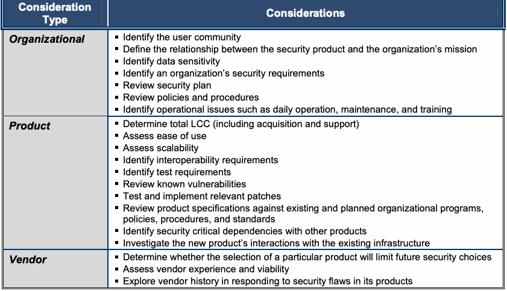
| 考慮事項の種類 | 考慮事項 |
| 組織 | (cid:131) ユーザーコミュニティを特定する (cid:131) セキュリティ製品と組織の使命との関係を定義する (cid:131) データの機密性を特定する (cid:131) 組織のセキュリティ要件を特定する (cid:131) セキュリティ計画を確認する (cid:131) ポリシーおよび手順を確認する (cid:131) 日常運用、保守、研修などの運用上の課題を特定する |
| 製品 | (cid:131) LCC総額（調達およびサポートを含む）を算定する (cid:131) 使いやすさを評価する (cid:131) 拡張性を評価する (cid:131) 相互運用性要件を特定する (cid:131) テスト要件を特定する (cid:131) 既知の脆弱性を確認する (cid:131) 関連するパッチをテストして適用する (cid:131) 製品仕様を、既存および計画中の組織のプログラム、ポリシー、手順、および標準と照合する (cid:131) 他製品とのセキュリティ上重要な依存関係を特定する (cid:131) 新製品と既存インフラストラクチャとの相互作用を調査する |
| ベンダー | (cid:131) 特定製品の選択によって将来のセキュリティ上の選択肢が制限されるかどうかを判断する (cid:131) ベンダーの経験および事業継続性を評価する (cid:131) 自社製品のセキュリティ上の欠陥へのベンダーの対応実績を調査する |
To facilitate identification and review of these considerations, security program managers may use a set of questions when considering security products for their programs. Table 12-6 lists questions that are product-independent and should be posed during the product selection phase. These questions are organized into three categories: those that apply to the organization, those that apply to the product or its operation, and those that apply to the vendor. It should be noted, however, that these questions are neither exhaustive nor relevant in all circumstances. Organizations should use these questions as a guide, and edit and supplement the questions as required by their unique circumstances in addition to ensuring that their decisions are consistent with their architecture and a well-established business case.
これらの考慮事項の特定と確認を容易にするため、セキュリティプログラムマネージャーは、プログラム向けのセキュリティ製品を検討する際に一連の質問を使用してもよい。表12-6に、製品に依存しない質問を示す。これらは製品選定段階で提示すべき質問である。質問は、組織に適用されるもの、製品またはその運用に適用されるもの、ベンダーに適用されるものの三つのカテゴリに整理されている。ただし、これらの質問は網羅的ではなく、すべての状況に関連するわけでもない。組織はこれらを指針として使用し、それぞれの固有の状況に応じて編集・追加するとともに、意思決定がアーキテクチャおよび十分に確立されたビジネス上の根拠と整合していることを確保すべきである。
未レビュー訳Table 12-6. Information Security Product Selection Questions
表12-6. 情報セキュリティ製品の選定に関する質問
未レビュー訳| Consideration | Questions | Comments |
| Type | ||
| Organizational | (cid:131) Is the anticipated user community identified? | |
| Organizational / Organizational | (cid:131) How many and what type of users does the organization anticipate will use the security product? | |
| Organizational | (cid:131) Is the relationship between this security product and the organization’s mission performance understood and documented? |
原本PDFの抜粋画像
| 考慮事項 | 質問 | コメント |
| 種類 | ||
| 組織 | (cid:131) 想定されるユーザーコミュニティは特定されているか？ | |
| 組織／組織 | (cid:131) 組織は、何人の、どのような種類のユーザーがセキュリティ製品を使用すると想定しているか？ | |
| 組織 | (cid:131) このセキュリティ製品と組織の使命達成との関係は理解され、文書化されているか？ |
原本PDFの抜粋画像
原本PDFの抜粋画像
| Consideration | Questions | Comments |
| Type | ||
| Product / Product | (cid:131) What is the frequency of product failures and adequacy of corrective actions? | |
| Vendor | (cid:131) Will the selection of a particular product limit the future choices of other computer security or operational modifications and improvements? | Note: the change and pace of technology may make it difficult to estimate the impact to an organization’s future security architecture. |
| Vendor | (cid:131) Does the vendor have experience in producing high quality information security products? | |
| Vendor | (cid:131) What is the vendor’s “track record” in responding to security flaws in its products? | |
| Vendor | (cid:131) How does the vendor handle software and hardware maintenance, end-user support, and maintenance agreements? | |
| Vendor | (cid:131) What is the long-term viability of the vendor? | |
| Vendor / Vendor | (cid:131) Has the vendor developed a security configuration guide? | |
| Vendor | (cid:131) Does the vendor have an associated security guide for the product? | |
| Vendor | (cid:131) Does the vendor use or make reference to NIST, consortia, or other consensus-based checklists, security configurations/settings, or benchmarks? |
原本PDFの抜粋画像
| 考慮事項 | 質問 | コメント |
| 種類 | ||
| 製品／製品 | (cid:131) 製品障害の発生頻度はどの程度で、是正措置は十分か？ | |
| ベンダー | (cid:131) 特定製品の選択によって、将来の他のコンピューターセキュリティ上または運用上の変更・改善の選択肢が制限されるか？ | 注：技術の変化とその速度により、組織の将来のセキュリティアーキテクチャへの影響を見積もることが難しい場合がある。 |
| ベンダー | (cid:131) ベンダーには高品質の情報セキュリティ製品を製造した経験があるか？ | |
| ベンダー | (cid:131) 自社製品のセキュリティ上の欠陥に対するベンダーの対応実績はどうか？ | |
| ベンダー | (cid:131) ベンダーはソフトウェアおよびハードウェアの保守、エンドユーザーサポート、および保守契約をどのように扱うか？ | |
| ベンダー | (cid:131) ベンダーの長期的な事業継続性はどうか？ | |
| ベンダー／ベンダー | (cid:131) ベンダーはセキュリティ構成ガイドを作成しているか？ | |
| ベンダー | (cid:131) ベンダーはその製品に対応するセキュリティガイドを用意しているか？ | |
| ベンダー | (cid:131) ベンダーは、NIST、コンソーシアム、またはその他の合意に基づくチェックリスト、セキュリティ構成／設定、ベンチマークを使用または参照しているか？ |
Some examples of product types include access control, intrusion detection and other information security-related products. Before deciding to purchase any type of security product, decision makers should consider product capabilities, compatibility with other products, and environmental considerations, among others.
製品の種類の例には、アクセス制御、侵入検知、その他の情報セキュリティ関連製品が含まれる。あらゆる種類のセキュリティ製品の購入を決定する前に、意思決定者は製品の機能、他製品との互換性、環境上の考慮事項などを検討すべきである。
未レビュー訳12.4 Security Checklists for IT Products
12.4 IT製品向けセキュリティチェックリスト
Vulnerabilities in IT products surface nearly every day, and many ready-to-use exploits are widely available on the Internet. Because IT products are often intended for a wide variety of audiences, restrictive security controls are usually not enabled by default, so many IT products are immediately vulnerable out of the box. Security program managers should review the NIST SP 800-70, Security Configuration Checklists Program for IT Products, May 2005, which helps to facilitate the development and dissemination of security checklists so that organizations and individual users can better secure their IT products. A security configuration checklist (sometimes called a lockdown or hardening guide or benchmark) is, in its simplest form, a series of instructions for configuring a product to a particular operating environment.
IT製品の脆弱性はほぼ毎日のように明らかになり、すぐに利用できるエクスプロイトの多くがインターネット上で広く入手可能である。IT製品は多様な利用者を想定していることが多く、制限的なセキュリティ制御は通常デフォルトで有効になっていない。そのため、多くのIT製品は箱から出した直後の状態ですでに脆弱である。セキュリティプログラムマネージャーは、IT製品向けセキュリティ構成チェックリストプログラムに関するNIST SP 800-70（2005年五月）を確認すべきである。同プログラムは、組織および個人ユーザーがIT製品をより安全にできるよう、セキュリティチェックリストの作成および普及を促進する。セキュリティ構成チェックリスト（ロックダウンガイド、堅牢化ガイド、またはベンチマークと呼ばれることもある）とは、最も単純な形では、特定の運用環境に合わせて製品を構成する一連の手順である。
未レビュー訳12.5 Organizational Conflict of Interest
12.5 組織的利益相反
An organizational conflict of interest (OCI) may exist when a party to an agreement has a past, present, or future interest related to the work performed (or to be performed), which may diminish its capacity to provide technically sound, objective service or which may result in an unfair competitive advantage. Agencies should do their best to avoid organizational conflicts before they arise. However, if an organization determines that an OCI exists but cannot be avoided and the organization wishes to proceed nonetheless, the head of the organization must formally waive the OCI.
合意の当事者が、実施済みまたは実施予定の業務に関連する過去・現在・将来の利害を有し、その利害によって技術的に健全で客観的なサービスを提供する能力が損なわれる可能性がある場合、または不公正な競争上の優位性が生じる可能性がある場合、組織的利益相反（OCI）が存在することがある。政府機関は、組織的利益相反が生じる前に回避するよう最善を尽くすべきである。ただし、組織がOCIの存在を認定し、それを回避できないものの、それでも進めることを希望する場合、組織の長はOCIを正式に免除しなければならない。
未レビュー訳Identifying the existence of OCIs, mitigating the effect of the OCI to an acceptable level, or waiving the OCI are important steps for consideration when managing the information security service life cycle. However, each of these is a complex matter involving legal and regulatory issues and, as such, should not be considered without the counsel of an organization’s legal department.
OCIの存在を特定すること、OCIの影響を許容可能な水準まで緩和すること、またはOCIを免除することは、情報セキュリティサービスのライフサイクル管理において検討すべき重要な手順である。ただし、これらはいずれも法的および規制上の問題を伴う複雑な事項であり、組織の法務部門の助言なしに検討すべきではない。
未レビュー訳Website: http://www.csrc.nist.gov/
Webサイト：http://www.csrc.nist.gov/
未レビュー訳References: National Institute of Standards and Technology Special Publication 800-35, Guide to Information Technology Security Services, October 2003.
参考文献：National Institute of Standards and Technology Special Publication 800-35「情報技術セキュリティサービスガイド」、2003年十月。
未レビュー訳National Institute of Standards and Technology Special Publication 800-36, Guide to Selecting Information Technology Security Products, October 2003.
米国国立標準技術研究所（NIST）特別刊行物800-36『情報技術セキュリティ製品の選定ガイド』、2003年10月。
National Institute of Standards and Technology Special Publication 800-53, Revision 1, Recommended Security Controls for Federal Information Systems, February 2006.
米国国立標準技術研究所（NIST）特別刊行物800-53改訂第1版『連邦情報システムの推奨セキュリティ管理策』、2006年2月。
National Institute of Standards and Technology Special Publication 800-55, Security Metrics Guide for Information Technology Systems, July 2003.
米国国立標準技術研究所（NIST）特別刊行物800-55『情報技術システムのセキュリティ指標ガイド』、2003年7月。
National Institute of Standards and Technology Special Publication 800-64, Security Considerations in the Information System Development Life Cycle, Rev. 1, June 2004.
National Institute of Standards and Technology Special Publication 800-64 Revision 1「情報システム開発ライフサイクルにおけるセキュリティの考慮事項」、2004年六月。
未レビュー訳National Institute of Standards and Technology Special Publication 800-70, Security Configuration Checklists Program for IT Products – Guidance for Checklists Users and Developers, May 2005.
National Institute of Standards and Technology Special Publication 800-70「IT製品向けセキュリティ構成チェックリストプログラム—チェックリスト利用者および開発者向け指針」、2005年5月。
National Institute of Standards and Technology ITL Bulletin: Selecting Information Technology Security Products, April 2004
National Institute of Standards and Technology ITL Bulletin：「情報技術セキュリティ製品の選定」、2004年四月。
未レビュー訳National Institute of Standards and Technology ITL Bulletin: Information Technology Security Services; How to Select, Implement, and Manage, June 2004.
National Institute of Standards and Technology ITL Bulletin：「情報技術セキュリティサービス：選定、実装、および管理の方法」、2004年6月。
Chapter 13
第13章
未レビュー訳13. Incident Response
13. インシデント対応
未レビュー訳Attacks on information systems and networks have become more numerous, sophisticated, and severe in recent years. While preventing such attacks would be the ideal course of action for organizations, not all information system security incidents can be prevented. Every organization that depends on information systems and networks to carry out its mission should identify and assess the risks to its systems and its information and reduce those risks to an acceptable level.78 An important component of this risk management process is the trending analysis of past computer security incidents and identifying effective ways to deal with them. A well-defined incident response capability helps the organization detect incidents rapidly, minimize loss and destruction, identify weaknesses, and restore information technology (IT) operations rapidly.
近年、情報システムおよびネットワークに対する攻撃は、数が増え、巧妙化し、深刻化している。こうした攻撃を防止することが組織にとって理想ではあるが、すべての情報システムセキュリティインシデントを防止できるわけではない。使命の遂行に情報システムおよびネットワークを依存するすべての組織は、自らのシステムおよび情報に対するリスクを特定・評価し、そのリスクを許容可能な水準まで低減すべきである。78 このリスク管理プロセスの重要な構成要素は、過去のコンピューターセキュリティインシデントの傾向分析と、それらに対処する効果的な方法の特定である。適切に定義されたインシデント対応能力は、組織がインシデントを迅速に検知し、損失および破壊を最小限に抑え、弱点を特定し、情報技術（IT）の運用を迅速に復旧するのに役立つ。
未レビュー訳The Federal Information Security Management Act (FISMA) specifically directs federal agencies to develop and implement procedures for detecting, reporting, and responding to security incidents. In addition, OMB79 directs federal agencies to identify in their FISMA report any incidents (physical or electronic) involving the loss of or unauthorized access to personally identifiable information (PII) and report them according to the policies outlined in OMB Memorandum.80 Federal civilian agencies are responsible for reporting all computer security incidents to the United States Computer Emergency Response Team (US-CERT) in the Department of Homeland Security and for documenting the corrective actions taken and their impact. Specifically, agencies are responsible for reporting all incidents involving PII to the (US-CERT) within one hour of discovering the incident. Further, policy guidance issued by the OMB in Circular No. A-130, Appendix III, requires that agencies have a capability to provide help to users after a system security incident occurs, and to share information concerning common vulnerabilities and threats.
連邦情報セキュリティ管理法（FISMA）は、セキュリティインシデントの検知、報告、および対応の手順を策定・実施するよう、連邦政府機関に明確に指示している。さらに、OMB79は連邦政府機関に対し、個人識別可能情報（PII）の紛失または不正アクセスを伴うインシデント（物理的または電子的）をFISMA報告書に特定し、OMB覚書に定められたポリシーに従って報告するよう指示している。80 連邦民間機関は、すべてのコンピューターセキュリティインシデントを国土安全保障省の米国コンピューター緊急対応チーム（US-CERT）に報告し、実施した是正措置およびその影響を記録する責任を負う。特に、機関はPIIに関するすべてのインシデントを発見から一時間以内にUS-CERTへ報告する責任がある。さらに、OMB Circular No. A-130 Appendix IIIで発行されたポリシー指針は、システムセキュリティインシデント発生後にユーザーを支援し、共通の脆弱性および脅威に関する情報を共有する能力を機関が備えることを求めている。
未レビュー訳National Institute of Standards and Technology (NIST) Special Publication (SP) 800-61, Computer Security Incident Handling Guide, details a four-phase incident
National Institute of Standards and Technology（NIST）Special Publication（SP）800-61「コンピューターセキュリティインシデント対応ガイド」では、四段階のインシデント
未レビュー訳インシデント対応のライフサイクルを示す図。準備、検知・分析、封じ込め・根絶・復旧、インシデント後の活動を順に進め、準備へ戻る。
Figure 13-1. Incident Response Life Cycle response process. The major phases of the incident response process—preparation, detection and analysis, containment/eradication/recovery, and post-incident activity, are described in detail throughout the rest of this chapter. Figure 13-1 illustrates the incident response life cycle.
図13-1. インシデント対応ライフサイクル 対応プロセスについて説明している。インシデント対応プロセスの主な段階である、準備、検知および分析、封じ込め／根絶／復旧、インシデント後の活動について、本章の以降の各節で詳しく説明する。図13-1にインシデント対応ライフサイクルを示す。
未レビュー訳13.1 Preparation
13.1 準備
Incident preparation involves not only establishing an incident response capability so that the organization is ready to respond to incidents but also preventing incidents by ensuring that systems, networks, and applications are afforded sufficient security. Incident prevention is now considered a fundamental component of incident response programs, also known as incident management programs, although the incident response team is not typically responsible for it. The incident response team’s expertise should be used to establish recommendations for securing systems and preventing incidents, as much as possible. This section provides an overview of actions needed to prevent and handle incidents, including incident data collection preparation.
インシデントへの備えには、組織がインシデントに対応できるようインシデント対応能力を確立するだけでなく、システム、ネットワーク、およびアプリケーションに十分なセキュリティを確保してインシデントを防止することも含まれる。インシデント防止は、インシデント管理プログラムとも呼ばれるインシデント対応プログラムの基本的な構成要素と現在では見なされているが、通常、インシデント対応チームはその責任を負わない。システムのセキュリティ確保およびインシデント防止に関する推奨事項を、可能な限り策定するためにインシデント対応チームの専門知識を活用すべきである。この節では、インシデントデータ収集の準備を含め、インシデントの防止および処理に必要な活動の概要を示す。
未レビュー訳13.1.1 Preparing for Incident Response
13.1.1 インシデント対応の準備
Organizing an effective incident response capability involves the participation of many people within the organization. Making the right planning and implementation decisions is key to establishing a successful incident response program. One of the first planning tasks should be to develop an organization-specific definition of the term “incident” so that the scope of the term is clear. Additional tasks that should be performed during the preparation phase include the following:
効果的なインシデント対応能力を組織化するには、組織内の多くの人々の参加が必要である。適切な計画および実装に関する判断が、成功するインシデント対応プログラムを確立する鍵となる。最初の計画作業の一つとして、「インシデント」という用語の組織固有の定義を策定し、その範囲を明確にすべきである。準備段階で実施すべきその他の作業には、以下が含まれる。
未レビュー訳•Create an Incident Response Policy. The policy should define what events are considered incidents, establish the organizational structure for incident response, define roles and responsibilities, and list the organization’s incident reporting requirements.
•インシデント対応ポリシーを作成する。ポリシーでは、どのような事象をインシデントと見なすかを定義し、インシデント対応の組織構造を確立し、役割および責任を定義し、組織のインシデント報告要件を列挙すべきである。
未レビュー訳•Develop Incident Response and Reporting Procedures. Based on the incident response policy, standard operating procedures (SOPs) are a delineation of the specific technical processes, techniques, checklists, and forms used by the incident response team. SOPs should be comprehensive and detailed to ensure that the organization’s priorities are properly reflected in response operations. In addition, following standardized response procedures is also an effective way to minimize errors, particularly those that might be caused by incident handling pace and stress. Prior to implementation, the organization should test incident response SOPs in order to validate their accuracy and usefulness. Once validated, the SOPs must be widely disseminated throughout the organization. Incidents can occur in countless and unpredictable ways; therefore, it is impractical to develop comprehensive procedures with step-by-step instructions for handling every incident. The best that the organization can do is prepare to handle any type of incident, and more specifically, to handle common types of incidents.
•インシデント対応および報告の手順を策定する。インシデント対応ポリシーに基づく標準運用手順（SOP）は、インシデント対応チームが使用する具体的な技術プロセス、技法、チェックリスト、および書式を明確にしたものである。組織の優先事項が対応業務に適切に反映されるよう、SOPは包括的かつ詳細であるべきである。また、標準化された対応手順に従うことは、特にインシデント処理の速度やストレスによって生じ得る誤りを最小化する効果的な方法でもある。実施前に、組織はインシデント対応SOPをテストし、その正確性と有用性を検証すべきである。検証後、SOPは組織全体に広く配布しなければならない。インシデントは無数の予測不能な形で発生し得るため、あらゆるインシデントの処理について段階的な指示を含む包括的な手順を策定するのは現実的ではない。組織ができる最善のことは、あらゆる種類のインシデントに対応できるよう備え、より具体的には一般的な種類のインシデントに対処する準備を整えることである。
•Establish Guidelines for Communicating with External Parties. During the incident response process, the organization may need to communicate with outside parties, including other incident response teams, law enforcement, the media, vendors, and external victims. Because such communications often need to occur quickly, organizations should have predetermined communication guidelines so that only the appropriate information is shared with the right parties. If sensitive information is inappropriately released, it can lead to
•外部関係者との連絡に関する指針を確立する。インシデント対応プロセスでは、他のインシデント対応チーム、法執行機関、メディア、ベンダー、外部の被害者など、外部関係者と連絡を取る必要が生じる場合がある。このような連絡は迅速に行う必要があることが多いため、適切な情報のみを適切な相手と共有できるよう、組織は事前に連絡指針を定めておくべきである。機微情報が不適切に公開されると、
未レビュー訳greater disruption and financial loss than the incident itself. Creating and maintaining a list of internal and external points of contact (POC), along with backups for each contact, should assist in making communications among parties easier and faster.
インシデントそのものを上回る混乱や経済的損失につながる可能性がある。各連絡先の代替連絡先とともに、内部および外部の連絡窓口（POC）一覧を作成・維持することで、関係者間の連絡をより容易かつ迅速にできる。
未レビュー訳•Define Incident Response Team Services. Although the main focus of an incident response team is performing incident response, most teams offer additional services. Examples of the types of services an incident response team can provide to the organization include security advisory distribution, vulnerability assessment, intrusion detection, and education and awareness.
•インシデント対応チームのサービスを定義する。インシデント対応チームの主な役割はインシデント対応であるが、多くのチームは追加サービスも提供する。インシデント対応チームが組織に提供できるサービスの例として、セキュリティ勧告の配布、脆弱性評価、侵入検知、教育および意識向上がある。
未レビュー訳•Select a Team Structure and Staffing Model. The organization should select the team structure and staffing model best suited to its needs. When contemplating the best team structure and staffing model, an organization should considers several factors, such as size of the organization, the geographic diversity of major computing resources, the need for 24/7 availability, cost, and staff expertise.
•チーム構造および人員配置モデルを選択する。組織は、自らのニーズに最も適したチーム構造および人員配置モデルを選択すべきである。最適なチーム構造および人員配置モデルを検討する際、組織の規模、主要なコンピューティング資源の地理的分散、24時間週7日の対応の必要性、コスト、および職員の専門知識など、複数の要因を考慮すべきである。
•Staff and Train the Incident Response Team. Members of the incident response team should have excellent technical and problem-solving skills because they are critical to the team’s success. Excellent teamwork, organizational, communication, and speaking skills are important as well. Most incident response teams have a team manager and a deputy team manager who assumes authority in the absence of the team manager. In addition, some teams also have a technical lead who assumes oversight of and final responsibility for the quality of the technical work performed by the entire incident response team. Also, larger teams often assign an incident lead as the primary POC for handling a specific incident.
•インシデント対応チームに人員を配置し、訓練する。チームの成功にとって不可欠であるため、インシデント対応チームのメンバーは優れた技術力と問題解決能力を備えるべきである。優れたチームワーク、整理・段取りの能力、コミュニケーション能力、および話す能力も重要である。ほとんどのインシデント対応チームにはチームマネージャーと副チームマネージャーがおり、副チームマネージャーはチームマネージャー不在時に権限を引き継ぐ。さらに、一部のチームには技術リーダーもおり、インシデント対応チーム全体が行う技術作業の品質を監督し、その最終責任を負う。また、大規模なチームでは、特定のインシデントを処理する際の主たる連絡窓口（POC）としてインシデントリードを割り当てることが多い。
Organizations typically find it challenging to maintain situational awareness for handling large-scale incidents because of their complexity. Many people within the organization may play a role in the incident response, and the organization may need to communicate rapidly and efficiently with various external groups. Collecting, organizing, and analyzing all the pieces of information so that the right decisions can be made and executed are not easy tasks. The key to maintaining situational awareness is to prepare thoroughly to handle large-scale incidents. Two specific actions that support this matter are as follows:
組織は、大規模インシデントが複雑であるため、その処理に必要な状況認識を維持することが難しいと通常感じている。組織内の多くの人々がインシデント対応に関与する可能性があり、組織はさまざまな外部グループと迅速かつ効率的に連絡する必要がある場合もある。適切な意思決定を行い実行できるよう、すべての情報を収集、整理、および分析することは容易ではない。状況認識を維持する鍵は、大規模インシデントへの対応準備を徹底することである。これを支援する具体的な活動は次の二つである。
未レビュー訳•Establish and Maintain Accurate Notification Mechanisms. Organizations should establish, document, maintain, and exercise on-hour and off-hour contact and notification mechanisms for various individuals and groups within the organization (e.g., chief information officer [CIO], head of information security, IT support, business continuity planning) and outside the organization (e.g., incident response organizations, counterparts at other organizations).
•正確な通知手段を確立し、維持する。組織は、組織内（例：最高情報責任者［CIO］、情報セキュリティの長、ITサポート、事業継続計画）および組織外（例：インシデント対応組織、他組織の同等の立場の担当者）のさまざまな個人・グループについて、勤務時間内および勤務時間外の連絡・通知手段を確立し、文書化し、維持し、演習すべきである。
•Develop Written Guidelines for Prioritizing Incidents. Incident response teams should handle each incident with the appropriate priority, based on the criticality of the affected resources and the current and potential technical effect of the incident. For example, data destruction on a user workstation might result in a minor loss of productivity, whereas root compromise of a public Web server might result in a major loss of revenue, productivity, access to services, and reputation, as well as the release of confidential data (e.g., credit card numbers, social security numbers). Because incident responders normally work under stressful conditions ripe for human error, it is important to clearly define and articulate the incident handling priority process. The incident
•インシデントの優先順位付けに関する文書化された指針を策定する。インシデント対応チームは、影響を受ける資源の重要度と、インシデントの現在および潜在的な技術的影響に基づき、適切な優先度で各インシデントを処理すべきである。例えば、ユーザーワークステーション上のデータ破壊は生産性の軽微な低下につながる可能性がある一方、公開Webサーバーのroot権限侵害は、収益、生産性、サービスへのアクセス、評判の大幅な損失に加え、機密データ（例：クレジットカード番号、社会保障番号）の公開につながる可能性がある。インシデント対応者は通常、人的ミスが起こりやすいストレスの高い状況で作業するため、インシデント処理の優先順位付けプロセスを明確に定義し、周知することが重要である。インシデント
未レビュー訳handling priority process should include a description of how the incident response team should react under various circumstances, as well as a service-level agreement (SLA) that documents appropriate actions and maximum response times. This prioritization should facilitate faster and more consistent decision making.
処理の優先順位付けプロセスには、さまざまな状況下でインシデント対応チームがどのように行動すべきかの説明に加え、適切な措置および最大応答時間を文書化したサービスレベル合意（SLA）を含めるべきである。この優先順位付けにより、意思決定をより迅速かつ一貫して行えるようになる。
未レビュー訳13.1.2 Preparing to Collect Incident Data
13.1.2 インシデントデータ収集の準備
Organizations should be prepared to collect a set of objective and subjective data for each incident. Over time, the incident data collected by the organization can be used for many ends. For example, data on the total number of hours the incident response team has dedicated to incident response activities and its cost over a particular period of time, may be used to justify additional funding of the incident response team. A study of incident characteristics may reveal systemic security weaknesses and threats, changes in incident trends, or other data that can be used in support of the risk assessment process. Another good use of the data is measuring the success of the incident response team. If incident data is collected and stored properly, it should provide several measures of the success (or at least the activities) of the incident response team. Furthermore, organizations that are required to report incident information will need to collect the necessary data to meet their requirements (e.g., FISMA reporting of annual incident statistics).81
組織は、各インシデントについて客観的および主観的なデータ一式を収集できるよう備えるべきである。時間の経過とともに、組織が収集したインシデントデータはさまざまな目的に利用できる。例えば、一定期間にインシデント対応チームが対応活動に費やした総時間数と費用のデータは、チームへの追加予算を正当化するために使用できる。インシデントの特性を調査することで、体系的なセキュリティ上の弱点や脅威、インシデント傾向の変化、またはリスク評価プロセスを支援するために使用できるその他のデータが明らかになる場合がある。データのもう一つの適切な用途は、インシデント対応チームの成功を測定することである。インシデントデータを適切に収集・保存すれば、チームの成功（または少なくとも活動状況）を示す複数の指標を得られるはずである。さらに、インシデント情報の報告を義務付けられている組織は、要件を満たすために必要なデータ（例：FISMAに基づく年次インシデント統計の報告）を収集する必要がある。81
未レビュー訳In the process of preparing to collect incident data, organizations should focus on collecting data that is actionable, rather than collecting data simply because it is available. Absolute numbers are not informative—understanding how they represent threats to and vulnerabilities of the business processes of the organization is what matters. Organizations should decide what incident data to collect based on reporting requirements and on the expected return on investment from the data (e.g., identifying a new threat and mitigating the related vulnerabilities before they can be exploited).
インシデントデータ収集の準備では、単に利用可能だからという理由でデータを収集するのではなく、実際の行動につながるデータの収集に重点を置くべきである。絶対数だけでは情報として不十分であり、それが組織の業務プロセスに対する脅威や脆弱性をどのように表すかを理解することが重要である。組織は、報告要件と、データから期待される投資収益（例：新たな脅威を特定し、悪用される前に関連する脆弱性を緩和すること）に基づいて、収集するインシデントデータを決定すべきである。
未レビュー訳13.1.3 Preventing Incidents
13.1.3 インシデントの防止
Preventing problems is normally less costly and more effective than reacting to them after they occur. Thus, incident prevention is an important complement to an incident response capability. If security controls are insufficient, high volumes of incidents may occur, overwhelming the resources and capacity for response, which would result in delayed or incomplete recovery, possibly more extensive damage, and longer periods of service unavailability. Incident handling can be performed more effectively if organizations complement their incident response capability with adequate resources to actively maintain the security of networks, systems, and applications. This process is intended to reduce the frequency of incidents, thereby allowing the incident response team to focus on handling serious incidents. Examples of practices that help to prevent incidents are as follows:
問題が発生した後に対処するよりも、発生を防ぐほうが通常は費用が少なく効果的である。したがって、インシデント防止はインシデント対応能力を補完する重要な要素である。セキュリティ管理策が不十分な場合、大量のインシデントが発生して対応のための資源や能力を圧迫する可能性がある。その結果、復旧が遅れたり不完全になったりし、損害が拡大し、サービス停止期間が長期化するおそれがある。ネットワーク、システム、およびアプリケーションのセキュリティを積極的に維持するための適切な資源を、インシデント対応能力と併せて組織が確保すれば、より効果的にインシデントを処理できる。このプロセスはインシデントの頻度を減らし、インシデント対応チームが重大なインシデントへの対応に集中できるようにする。インシデント防止に役立つ実践例を以下に示す。
未レビュー訳•Having a patch management program to assist system administrators in identifying, acquiring, testing, and deploying patches that eliminate known vulnerabilities in systems and applications;
•システム管理者が、システムおよびアプリケーションの既知の脆弱性を解消するパッチを特定、取得、テスト、および展開できるよう支援するパッチ管理プログラムを設ける。
•Hardening all hosts appropriately to eliminate vulnerabilities and configuration weaknesses;
•脆弱性および構成上の弱点を取り除くため、すべてのホストを適切に堅牢化する。
•Configuring the network perimeter to deny all activity that is not expressly permitted;
•明示的に許可されていないすべての活動を拒否するよう、ネットワーク境界を構成する。
•Deploying software throughout the organization to detect and stop malicious code; and
•悪意のあるコードを検知して阻止するソフトウェアを組織全体に展開する。
未レビュー訳•Making users aware of policies and procedures on the appropriate use of networks, systems, and applications.
•ネットワーク、システム、およびアプリケーションの適切な使用に関するポリシーと手順をユーザーに周知する。
13.2 Detection and Analysis
13.2 検知および分析
Detection and analysis are, for many organizations, the most challenging aspects of the incident response process, in other words, accurately detecting and assessing possible incidents—determining whether an incident has occurred and, if so, the type, extent, and magnitude of the problem. Incidents can be detected through many different means, with varying levels of detail and fidelity. Automated detection capabilities include network-based and host-based intrusion detection systems (IDSs), antivirus software, and log analyzers. Incidents may also be detected through manual means, such as user reports. Some incidents have overt signs that can be easily detected, whereas others are virtually undetectable without automation.
多くの組織にとって、検知および分析はインシデント対応プロセスの中で最も難しい側面である。すなわち、インシデントの可能性を正確に検知・評価し、インシデントが発生したかどうか、発生した場合には問題の種類、範囲、および規模を判断することである。インシデントは、詳細度や忠実度がさまざまな多くの手段で検知できる。自動検知機能には、ネットワークベースおよびホストベースの侵入検知システム（IDS）、ウイルス対策ソフトウェア、ログ分析ツールが含まれる。ユーザーからの報告など、手動の手段で検知される場合もある。容易に検知できる明白な兆候があるインシデントもあれば、自動化なしではほぼ検知不可能なものもある。
未レビュー訳In a typical organization, the thousands or millions of possible signs of incidents that occur any given day are recorded mainly by computer security software. Automation is needed to perform an initial analysis of the data and select events of interest for human review. Event correlation software and centralized logging can be of great value in automating the analysis process. However, the effectiveness of the process depends on the quality of the data that goes into it. Organizations should establish logging standards and procedures to ensure that adequate information is collected by logs and security software and that the data is reviewed regularly. Proper and efficient reviews of incident-related data require people with extensive, specialized technical knowledge and experience.
一般的な組織では、日々発生する数千または数百万のインシデント兆候の可能性が、主にコンピューターセキュリティソフトウェアによって記録される。データの初期分析を行い、人による確認対象となる事象を選別するには、自動化が必要である。イベント相関ソフトウェアと集中ログ管理は、分析プロセスの自動化に大きく役立つ。ただし、このプロセスの有効性は、投入されるデータの品質に左右される。組織は、ログおよびセキュリティソフトウェアによって十分な情報が収集され、そのデータが定期的に確認されるよう、ロギング標準および手順を確立すべきである。インシデント関連データを適切かつ効率的に確認するには、幅広く専門的な技術知識と経験を持つ人員が必要である。
未レビュー訳When a potential incident is identified, the incident response team should work quickly to analyze and validate it, documenting each step taken. The team should rapidly perform an initial analysis to determine the incident’s scope, attack methods, and targeted vulnerabilities. This analysis should provide enough information for the team to prioritize subsequent activities, including the containment of the incident. When in doubt, incident handlers should assume the worst until additional analyses indicate otherwise. In addition to prioritization guidelines, organizations should also establish an escalation process for those instances when the incident response team fails to respond to an incident within the designated time.
潜在的なインシデントが特定された場合、インシデント対応チームは各手順を記録しながら、迅速に分析して妥当性を確認すべきである。チームは初期分析を速やかに実施し、インシデントの範囲、攻撃手法、および標的となった脆弱性を判断すべきである。この分析では、インシデントの封じ込めを含む後続活動の優先順位を付けるのに十分な情報を得るべきである。判断に迷う場合、追加分析で別の結論が示されるまで、インシデント対応者は最悪の事態を想定すべきである。組織は優先順位付け指針に加え、指定時間内にインシデント対応チームがインシデントに対応しなかった場合のエスカレーションプロセスも確立すべきである。
未レビュー訳The incident response team should maintain records about the status of incidents, along with other pertinent information. Using an application or database for this purpose is necessary to ensure that incidents are handled and resolved in a timely manner. The incident response team should safeguard this data and other data related to incidents because it often contains sensitive information concerning recent security breaches, exploited vulnerabilities, and users that may have performed inappropriate actions.
インシデント対応チームは、インシデントの状況およびその他の関連情報を記録として保持すべきである。この目的でアプリケーションまたはデータベースを使用することは、インシデントが適時に処理・解決されるようにするために必要である。インシデント対応チームは、このデータおよびその他のインシデント関連データを保護すべきである。これらのデータには、最近のセキュリティ侵害、悪用された脆弱性、不適切な行為を行った可能性のあるユーザーに関する機微情報が含まれることが多いためである。
未レビュー訳13.3 Containment, Eradication, and Recovery
13.3 封じ込め、根絶、および復旧
It is important to contain an incident before it spreads to avoid overwhelming resources and increasing damage caused by the incident. Most incidents require containment, so it is important to consider it early in the course of handling each incident. An essential part of containment is decision making, such as shutting down a system, disconnecting it from the network, or disabling certain system functions. Such decisions are much easier to make if strategies and procedures for containing the incident have been predetermined. Organizations should define acceptable risks in dealing with incidents and develop strategies accordingly.
インシデントが拡大して資源を圧迫し、インシデントによる被害が増大するのを避けるため、インシデントを封じ込めることが重要である。ほとんどのインシデントでは封じ込めが必要となるため、各インシデントの処理過程の早い段階で検討することが重要である。封じ込めの重要な要素は、システムの停止、ネットワークからの切断、または特定のシステム機能の無効化などの意思決定である。インシデントを封じ込める戦略と手順があらかじめ定められていれば、このような判断ははるかに容易になる。組織は、インシデント対応で許容できるリスクを定義し、それに応じた戦略を策定すべきである。
未レビュー訳Containment strategies vary based on the type of incident. For example, the overall strategy for containing an e-mail-borne virus infection is quite different from that of a network-based distributed denial of service attack. Organizations should create separate containment strategies for each major type of incident. The criteria for choosing the appropriate strategy should be documented clearly to facilitate quick and effective decision making. Examples of criteria include potential damage to and theft of resources, the need to preserve evidence, the effectiveness of the strategy, the time and resources needed to implement the strategy, and the duration of the solution.
封じ込め戦略はインシデントの種類に応じて異なる。例えば、電子メール経由のウイルス感染を封じ込める全体的な戦略は、ネットワークベースの分散型サービス拒否攻撃の場合とは大きく異なる。組織は、主要なインシデントの種類ごとに個別の封じ込め戦略を作成すべきである。適切な戦略を選択するための基準は、迅速かつ効果的な意思決定を促すため、明確に文書化すべきである。基準の例には、資源への潜在的な損害や窃盗、証拠保全の必要性、戦略の有効性、戦略の実施に必要な時間と資源、および解決策の継続期間が含まれる。
未レビュー訳After an incident has been contained, eradication may be necessary to eliminate components of the incident, such as deleting malicious code and disabling breached user accounts. For some incidents, eradication is either unnecessary or is performed during recovery. In recovery, administrators restore systems to normal operation and (if applicable) harden systems to prevent similar incidents. Recovery may involve such actions as:
インシデントを封じ込めた後、悪意あるコードの削除や侵害されたユーザーアカウントの無効化など、インシデントの構成要素を排除するために根絶が必要となる場合がある。インシデントによっては根絶が不要であるか、復旧中に実施される。復旧では、管理者がシステムを通常運用に戻し、該当する場合には類似のインシデントを防止するためシステムを堅牢化する。復旧には、次のような作業が含まれる場合がある。
未レビュー訳•Restoring systems from clean backups;
•クリーンなバックアップからシステムを復元する。
•Rebuilding systems from scratch;
•システムを一から再構築する。
•Replacing compromised files with clean versions;
•侵害されたファイルを正常なバージョンに置き換える。
•Installing patches;
•パッチをインストールする。
•Changing passwords; and
•パスワードを変更する。
•Tightening network perimeter security (e.g., firewall rule sets).
•ネットワーク境界のセキュリティを強化する（例：ファイアウォールのルールセット）。
It is also often desirable to employ higher levels of system logging or network monitoring as part of the recovery process. Once a resource is successfully attacked, it is often attacked again, or other resources within the organization are attacked in a similar manner
復旧プロセスの一環として、システムログの記録レベルを上げたり、ネットワーク監視を強化したりすることも望ましい場合が多い。ある資源が攻撃に成功した後は、再び攻撃されることが多く、または組織内の他の資源が同様の方法で攻撃されることがある。
未レビュー訳13.4 Post-Incident Activity
13.4 インシデント後の活動
After a major incident has been handled, the organization should hold a lessons-learned meeting to review the effectiveness of the incident handling process and identify necessary improvements to existing security controls and practices. Lessons-learned meetings should also be held periodically for lesser incidents. The information accumulated from all lessons-learned meetings, as well as the data collected while handling each incident, should be used to identify systemic security weaknesses and deficiencies in policies and procedures. Follow-up reports generated for each resolved incident can be important for evidentiary purposes, used as a reference in handling future incidents, and used in training new incident response team members. An incident database, with detailed information on each incident that occurs, can be another valuable source of information for incident handlers.
重大なインシデントへの対応後、組織は教訓検討会を開催し、インシデント処理プロセスの有効性を評価するとともに、既存のセキュリティ管理策および実践に必要な改善を特定すべきである。軽微なインシデントについても、定期的に教訓検討会を開催すべきである。すべての教訓検討会で蓄積した情報と、各インシデントの処理中に収集したデータを活用して、体系的なセキュリティ上の弱点、およびポリシーや手順の不備を特定すべきである。解決済みの各インシデントについて作成するフォローアップ報告書は、証拠に関する目的に重要となる場合があり、将来のインシデント対応の参考資料や、新しいインシデント対応チームメンバーの研修に使用できる。発生した各インシデントの詳細情報を含むインシデントデータベースも、インシデント対応者にとって貴重な情報源となり得る。
未レビュー訳Websites:
Webサイト：
United States Computer Emergency Response Team (US-CERT) http://www.us-cert.gov/
United States Computer Emergency Response Team（US-CERT） http://www.us-cert.gov/
未レビュー訳www.csrc.nist.gov
www.csrc.nist.gov
未レビュー訳References: Federal Information Processing Standard 199, Standards for Security Categorization of Federal Information and Information Systems, February 2004.
参考文献：Federal Information Processing Standard 199「連邦情報および情報システムのセキュリティ分類標準」、2004年二月。
未レビュー訳National Institute of Standards and Technology Special Publication 800-30, Risk Management Guide for Information Technology Systems, July 2002.
National Institute of Standards and Technology Special Publication 800-30「情報技術システムのリスク管理ガイド」、2002年7月。
National Institute of Standards and Technology Special Publication 800-61, Computer Security Incident Handling Guide, January 2003.
National Institute of Standards and Technology Special Publication 800-61「コンピューターセキュリティインシデント対応ガイド」、2003年1月。
Chapter 14
第14章
未レビュー訳14. Configuration Management
14. 構成管理
未レビュー訳The purpose of Configuration Management (CM) is to manage the effects of changes or differences in configurations on an information system or network. CM assists in streamlining change management processes and prevents changes that could detrimentally affect the security posture of a system before they happen. In its entirety, the CM process reduces the risk that any changes made to a system (insertions/installations, deletions/uninstalling, and modifications) result in a compromise to system or data confidentiality, integrity, or availability in that it provides a repeatable mechanism for effecting system modifications in a controlled environment. In accordance with the CM process, system changes must be tested prior to implementation to observe the effects of the change, thereby minimizing the risk of adverse results.
構成管理（CM）の目的は、情報システムまたはネットワークの構成に関する変更や差異が及ぼす影響を管理することである。CMは変更管理プロセスの合理化を支援し、システムのセキュリティ態勢に悪影響を与えるおそれのある変更を、発生前に防止する。CMプロセス全体により、管理された環境でシステム変更を実施する再現可能な仕組みが提供されるため、システムへの変更（追加／インストール、削除／アンインストール、および修正）がシステムまたはデータの機密性、完全性、または可用性を損なうリスクが低減される。CMプロセスに従い、システム変更は実装前にテストしてその影響を確認し、それによって悪影響が生じるリスクを最小限に抑えなければならない。
未レビュー訳Each organization must take into account the associated costs and expenses, the required planning and scheduling, and the necessary training associated with a thorough and effective CM process. However, since each general CM approach is universal, agencies can structure and implement a repeatable CM process to save organizational resources on future projects. Additionally, CM helps to eliminate the risk of confusion, problems, and unnecessary spending. The additional resources required to correct a problem that could have been prevented through sound CM practices, is likely to far exceed the amount of resources required to develop and implement an effective enterprise CM process.
各組織は、徹底した効果的なCMプロセスに伴うコストおよび費用、必要な計画・スケジュール策定、ならびに必要な研修を考慮しなければならない。ただし、一般的なCMアプローチは普遍的であるため、政府機関は再現可能なCMプロセスを構築・実装し、将来のプロジェクトで組織資源を節約できる。さらに、CMは混乱、問題、および不要な支出のリスクをなくすのに役立つ。適切なCM実践によって防止できた問題を修正するために必要となる追加資源は、効果的な全社的CMプロセスの開発・実装に必要な資源を大幅に上回る可能性が高い。
未レビュー訳National Institute of Standards and Technology (NIST) Special Publication (SP) 800-64, Security Considerations in the Information System Development Life Cycle, states “Configuration management and control procedures are critical to establishing an initial baseline of hardware, software, and firmware components for the information system and subsequently to controlling and maintaining an accurate inventory of any changes to the system. Changes to the hardware, software, or firmware of a system can have a significant impact on the security of the system…changes should be documented, and their potential impact on security should be assessed regularly.” NIST SP 800-53, Revision 1, Recommended Security Controls for Federal Information Systems, defines seven CM controls that organizations are required to implement based on an information system’s security categorization. The required CM controls are defined in Table 14-1.82
National Institute of Standards and Technology（NIST）Special Publication（SP）800-64「情報システム開発ライフサイクルにおけるセキュリティの考慮事項」には、次のように記されている。「構成管理および制御手順は、情報システムのハードウェア、ソフトウェア、およびファームウェアコンポーネントの初期ベースラインを確立し、その後システムの変更について正確なインベントリを管理・維持するうえで不可欠である。システムのハードウェア、ソフトウェア、またはファームウェアへの変更は、システムのセキュリティに重大な影響を及ぼす可能性がある……変更を文書化し、セキュリティへの潜在的な影響を定期的に評価すべきである。」NIST SP 800-53 Revision 1「連邦情報システムの推奨セキュリティ管理策」では、情報システムのセキュリティ分類に基づき、組織が実装を求められる七つのCM管理策を定義している。必要なCM管理策を表14-1に示す。82
未レビュー訳Table 14-1. NIST SP 800-53 CM Control Family
表14-1. NIST SP 800-53 CM管理策ファミリー
未レビュー訳| Identifier | Title | Control |
| CM-1 | Configuration Management Policy and Procedures | The organization develops, disseminates, and periodically reviews/updates: (1) a formal, documented CM policy that addresses purpose, scope, roles, responsibilities, and compliance; and (2) formal, documented procedures to facilitate the implementation of the CM policy and associated CM controls. |
| CM-2 | Baseline Configuration | The organization develops, documents, and maintains a current baseline configuration of the information system and an inventory of the system’s constituent components. |
原本PDFの抜粋画像
| 識別子 | 名称 | 管理策 |
| CM-1 | 構成管理ポリシーおよび手順 | 組織は、(1) 目的、範囲、役割、責任、および準拠性を扱う正式に文書化されたCMポリシーと、(2) CMポリシーおよび関連するCM管理策の実装を促進する正式に文書化された手順を策定・周知し、定期的にレビュー／更新する。 |
| CM-2 | ベースライン構成 | 組織は、情報システムの最新のベースライン構成およびシステムを構成するコンポーネントのインベントリを策定、文書化、および維持する。 |
| Identifier | Title | Control |
| CM-3 | Configuration Change Control | The organization documents and controls changes to the information system. Appropriate organization officials approve information system changes in accordance with organizational policies and procedures. |
| CM-4 | Monitoring Configuration Changes | The organization monitors changes to the information system and conducts security impact analyses to determine the effects of the changes. |
| CM-5 | Access Restrictions for Change | The organization enforces access restrictions associated with changes to the information system. |
| CM-6 | Configuration Settings | The organization configures the security settings of information technology (IT) products to the most restrictive mode consistent with information system operational requirements. |
| CM-7 | Least Functionality | The organization configures the information system to provide only essential capabilities and specifically prohibits and/or restricts the use of the following functions; ports, protocols, and/or services: [Assignment: organization- defined list of prohibited and/or restricted functions, ports, protocols, and/or services]. Information systems are capable of providing a wide variety of functions and services. Some of the functions and services, provided by default, may not be necessary to support essential organizational operations (e.g., key missions, functions). The functions and services provided by information systems should be carefully reviewed to determine which functions and services are candidates for elimination (e.g., voice over internet protocol, instant messaging, file transfer protocol, hyper text transfer protocol, file sharing). |
原本PDFの抜粋画像
| 識別子 | 名称 | 管理策 |
| CM-3 | 構成変更管理 | 組織は情報システムへの変更を文書化し、管理する。適切な組織職員は、組織のポリシーおよび手順に従って情報システムの変更を承認する。 |
| CM-4 | 構成変更の監視 | 組織は情報システムへの変更を監視し、変更の影響を判断するためにセキュリティ影響分析を実施する。 |
| CM-5 | 変更に関するアクセス制限 | 組織は情報システムへの変更に関連するアクセス制限を実施する。 |
| CM-6 | 構成設定 | 組織は、情報システムの運用要件に適合する範囲で、情報技術（IT）製品のセキュリティ設定を最も制限的なモードに構成する。 |
| CM-7 | 最小機能 | 組織は、不可欠な機能のみを提供するよう情報システムを構成し、次の機能、ポート、プロトコル、および／またはサービスの使用を明示的に禁止および／または制限する：[割当て：禁止および／または制限する機能、ポート、プロトコル、および／またはサービスについて組織が定める一覧]。情報システムは多種多様な機能およびサービスを提供できる。デフォルトで提供される機能やサービスの一部は、組織の不可欠な運用（例：主要な使命、機能）を支えるために必要でない場合がある。情報システムが提供する機能およびサービスを注意深く確認し、廃止候補を判断すべきである（例：Voice over Internet Protocol、インスタントメッセージング、File Transfer Protocol、Hypertext Transfer Protocol、ファイル共有）。 |
14.1 Configuration Management in the System Development Life Cycle
14.1 システム開発ライフサイクルにおける構成管理
Although CM is not traditionally regarded as a security function, it must be addressed in the system development life cycle (SDLC)83 because of its serious security implications. CM is just one component of an information system’s security posture. It falls under the operational controls of an information system and is interrelated with numerous other security disciplines such as project management, risk management, security certification and accreditation,84 and security awareness training.85
CMは従来、セキュリティ機能とは見なされてこなかったが、重大なセキュリティ上の影響を伴うため、システム開発ライフサイクル（SDLC）83で扱わなければならない。CMは情報システムのセキュリティ態勢を構成する一要素にすぎない。CMは情報システムの運用管理策に位置付けられ、プロジェクト管理、リスク管理、セキュリティ認証および認定84、セキュリティ意識向上研修85など、多数の他のセキュリティ分野と相互に関連する。
未レビュー訳CM should be addressed throughout the entire life cycle of any given project or task. As mentioned earlier, it is nearly impossible to carry out a systems development or management project with success in the absence of a sound and effective CM process. In the SDLC, the planning of the CM process falls in Phases 2 and 3; the primary implementation of the CM process is performed during Phase 4, the Operations/ Maintenance phase. SDLC and its associated key tasks are depicted in Figure 14-1.
CMは、あらゆるプロジェクトまたはタスクのライフサイクル全体を通じて扱うべきである。前述のとおり、健全で効果的なCMプロセスがなければ、システム開発または管理プロジェクトを成功裏に実施することはほぼ不可能である。SDLCでは、CMプロセスの計画はフェーズ2および3で行い、CMプロセスの主な実装はフェーズ4の運用／保守段階で実施する。SDLCおよび関連する主要タスクを図14-1に示す。
未レビュー訳システム開発ライフサイクルの5段階（開始、調達・開発、導入・評価、運用・保守、廃止・処分）と、各段階の主要な情報セキュリティ作業を示す図。
Figure 14-1. System Development Life Cycle
図14-1. システム開発ライフサイクル
未レビュー訳During Phase 2, Acquisition/Development, the risk management process begins with the initial risk assessment. NIST SP 800-30, Risk Management Guide for Information Technology Systems, defines risk management as “the process that allows information technology (IT) managers to balance the operational and economic costs of protective measures and achieve gains in mission capability by protecting the information systems and data that support their organizations’ missions.”86 Risk management encompasses the process of identifying, analyzing, and responding to risk. This process includes identifying existing vulnerabilities in a system or in its respective components. Since risk is oftentimes an uncertainty on whether or not a given event will occur, an executable plan must be in place if a potential risk is exploited. Risk identification involves determining the possible effect on an information system due to a risk. During this phase, initial baselines of security controls are being selected based on assessing the risk level of a network. After the security controls are established, the CM process can begin. The documented CM process should contain procedures and techniques to change a system without detrimentally impacting it, change any interconnected systems, or change the network while accounting for the established security level of the network.
フェーズ2「調達／開発」では、初期リスク評価をもってリスク管理プロセスが始まる。NIST SP 800-30「情報技術システムのリスク管理ガイド」では、リスク管理を「情報技術（IT）管理者が、保護措置の運用上および経済上のコストを比較衡量し、組織の使命を支える情報システムおよびデータを保護することで、使命遂行能力の向上を達成できるようにするプロセス」と定義している。86 リスク管理には、リスクの特定、分析、および対応のプロセスが含まれる。このプロセスには、システムまたはその構成要素に存在する脆弱性の特定が含まれる。リスクとは、ある事象が発生するかどうかの不確実性であることが多いため、潜在的なリスクが悪用された場合に実行できる計画を用意しておかなければならない。リスクの特定では、リスクによって情報システムに生じ得る影響を判断する。この段階では、ネットワークのリスクレベルを評価したうえで、セキュリティ管理策の初期ベースラインを選択する。セキュリティ管理策が確立された後、CMプロセスを開始できる。文書化されたCMプロセスには、確立されたネットワークのセキュリティレベルを考慮しつつ、システムに悪影響を与えずに変更する方法、相互接続されたシステムを変更する方法、またはネットワークを変更する方法に関する手順および技法を含めるべきである。
未レビュー訳Through Phase 3, Implementation/Assessment, security controls that are selected in Phase 2 are being tested. Also, the security certification and accreditation process takes place. NIST SP 800-37, Guide for the Security Certification and Accreditation of Federal Information Systems, defines security accreditation as “the official management decision given by a senior agency official to authorize operation of an information system and to explicitly accept the risk to agency operations, agency assets, or individuals based on the implementation of an agreed-upon set of security controls.” Within the security certification and accreditation process are four phases (Initiation, Security Certification, Security Accreditation, and Continuous Monitoring). The fourth phase, Continuous Monitoring, primarily deals with CM. “With regard to configuration management and control, it is important to document the proposed or actual changes to the information system and to subsequently determine the impact of those proposed or actual changes on the security of the system. …. Documenting information system changes and assessing the potential impact those changes may have on the security of the system is an essential aspect of continuous monitoring and maintaining the security accreditation.”87
フェーズ3「実装／評価」では、フェーズ2で選択したセキュリティ管理策をテストする。また、セキュリティ認証および認定プロセスを実施する。NIST SP 800-37「連邦情報システムのセキュリティ認証および認定ガイド」では、セキュリティ認定を「情報システムの運用を承認し、合意された一連のセキュリティ管理策の実装に基づき、政府機関の運用、資産、または個人に対するリスクを明示的に受容する、上級政府機関職員による正式な管理上の決定」と定義している。セキュリティ認証および認定プロセスには、開始、セキュリティ認証、セキュリティ認定、継続的監視の四つの段階がある。第四段階の継続的監視は、主にCMを扱う。「構成管理および制御に関しては、情報システムに対して提案された変更または実際に行われた変更を文書化し、その後、それらの変更がシステムのセキュリティに及ぼす影響を判断することが重要である。……情報システムの変更を文書化し、それらの変更がシステムのセキュリティに及ぼし得る潜在的影響を評価することは、継続的監視およびセキュリティ認定の維持に不可欠な要素である。」87
未レビュー訳Lastly, in Phase 4, Operations/Maintenance, CM change control and auditing steps take place. If there was a significant change addressed in the CM process, then the system must be recertified and reaccredited. Constant monitoring of the system is performed to identify possible risks to the system so these can be addressed through the risk management, security certification and accreditation, and CM processes.
最後に、フェーズ4「運用／保守」では、CMの変更管理および監査の手順を実施する。CMプロセスで重大な変更に対処した場合、システムを再認証および再認定しなければならない。システムを継続的に監視して潜在的なリスクを特定し、リスク管理、セキュリティ認証および認定、ならびにCMの各プロセスを通じて対処する。
未レビュー訳14.2 Configuration Management Roles and Responsibilities
14.2 構成管理の役割と責任
There are many roles associated with implementing an effective CM process. Note that an individual is not limited to a single role (e.g., an individual can be both the system owner and the CM manager). An organization must ensure that management is aware of proposed changes and verify that a thorough review and approval process is in place. Also, separation of duties must be addressed to ensure that changes are being implemented only after being tested and approved. An example of the roles and responsibilities for a sample CM process are listed below:88
効果的なCMプロセスの実装には、多くの役割が関係する。個人が単一の役割に限定されないことに留意すること（例えば、システム所有者とCMマネージャーを兼ねることができる）。組織は、提案された変更を管理者が認識していることを確保し、徹底したレビューおよび承認プロセスが整備されていることを検証しなければならない。また、変更がテストおよび承認された後にのみ実装されるよう、職務分離に対処しなければならない。CMプロセスの例における役割と責任を以下に示す。88
未レビュー訳•Chief information officer (CIO). The CIO is responsible for setting forth policies concerning CM and implementing CM at the highest level for the organization.
•最高情報責任者（CIO）。CIOは、CMに関する方針を定め、組織の最高レベルでCMを実装する責任を負う。
•System owner. The system owner serves as the authority for all matters of CM for the system. The system owner is responsible for developing functional requirements and verifying that the requirements are implemented appropriately.
•システム所有者。システム所有者は、そのシステムに関するすべてのCM事項の権限者として機能する。システム所有者は、機能要件を策定し、その要件が適切に実装されていることを検証する責任を負う。
•Information systems security officer (ISSO). The ISSO is primarily responsible for addressing security concerns related to the CM program and for providing expertise and decision support to the Configuration Control Review Board (CCRB).
•情報システムセキュリティ担当官（ISSO）。ISSOは、主としてCMプログラムに関連するセキュリティ上の懸念に対処し、構成制御審査委員会（CCRB）に専門知識および意思決定支援を提供する責任を負う。
•CCRB. CM responsibilities of the CCRB include:
•CCRB。CCRBのCM責任には、以下が含まれる。
– Discussing and resolving change requests that require additional funding or resources to implement; – Ensuring that change requests do not adversely affect any systems or services related to the system or associated systems, subsystems, and facilities; and – Evaluating CM metric information on funding and other CM-related issues.
– 実施に追加の資金またはリソースを必要とする変更要求について議論し、解決すること。 – 変更要求が、システムまたは関連システム、サブシステムおよび施設に関連するシステムやサービスに悪影響を及ぼさないことを確保すること。 – 資金調達およびその他のCM関連事項に関するCM指標情報を評価すること。
未レビュー訳•CM manager. The CM manager is responsible for day-to-day activities, including:
•CMマネージャー。CMマネージャーは、以下を含む日常業務に責任を負う。
未レビュー訳– Documenting and implementing the CM plan; – Establishing system baselines and evaluating controls; – Ensuring that proposed changes do not adversely affect agency systems or data; – Managing change requests and coordinating implementation of changes; – Conducting impact analysis of changes; – Approving, denying, or deferring changes; – Notifying users of system changes; – Ensuring existence of a process for storing, retrieving, and distributing CM materials; and – Ensuring that an audit trail of changes is documented and maintained.
– CM計画を文書化し、実施すること。 – システムベースラインを確立し、管理策を評価すること。 – 提案された変更が政府機関のシステムまたはデータに悪影響を及ぼさないようにすること。 – 変更要求を管理し、変更の実施を調整すること。 – 変更の影響分析を実施すること。 – 変更を承認、却下、または延期すること。 – システム変更をユーザーに通知すること。 – CM資料を保管、検索および配布するプロセスが存在することを確保すること。 – 変更の監査証跡が文書化され、維持されることを確保すること。
未レビュー訳•System users. System users are responsible for reporting any weaknesses or new requirements that are identified in current versions of the software.
•システムユーザー。システムユーザーは、ソフトウェアの現行バージョンで特定された弱点または新たな要件を報告する責任を負う。
•Developers. The developers are responsible for coordinating and working with the CM manager to identify, resolve, and implement controls and other CM issues.
•開発者。開発者は、管理策およびその他のCM問題を特定、解決および実装するために、CMマネージャーと調整し、協力する責任を負う。
14.3 Configuration Management Process
14.3 構成管理プロセス
The CM process identifies the steps required to ensure that all changes are properly requested, evaluated, and authorized. The CM process also provides a detailed, step-by-step procedure for identifying, processing, tracking, and documenting changes. An example CM process is depicted in Figure 14-2.
CMプロセスは、すべての変更が適切に要求、評価および承認されるようにするために必要な手順を特定する。また、変更を特定、処理、追跡および文書化するための詳細な段階的手順も定める。CMプロセスの例を図14-2に示す。
未レビュー訳変更管理の流れ。変更の特定、変更要求の評価、実施判断、承認済み変更の実施、継続的監視を順に示す。
Figure 14-2. CM Process
図14-2. CMプロセス
未レビュー訳Step 1: Identify Change
ステップ1：変更の特定
未レビュー訳The first step of the CM process begins with a person or process associated with the information system identifying a need for a change. The change can be initiated by numerous individuals, such as users or system owners, or they may be identified by audit findings or other reviews. A change may consist of updating the fields or records of a database to upgrading the operating system with the latest security patches. Once the need for a change has been identified, a change request should be submitted to the appropriate decision-making body.
CMプロセスの最初のステップは、情報システムに関係する人またはプロセスが変更の必要性を特定することから始まる。変更は、ユーザーやシステム所有者などさまざまな個人が開始する場合があり、監査所見やその他のレビューによって特定される場合もある。変更には、データベースのフィールドまたはレコードの更新から、最新のセキュリティパッチによるオペレーティングシステムのアップグレードまでが含まれ得る。変更の必要性が特定されたら、適切な意思決定機関に変更要求を提出すべきである。
未レビュー訳Step 2: Evaluate Change Request
ステップ2：変更要求の評価
未レビュー訳After initiating a change request, the effects that the change may have on the system or other interrelated systems must be evaluated. An impact analysis of the change should be conducted using the following as a guideline:
変更要求の開始後、その変更がシステムまたは他の相互関連システムに及ぼし得る影響を評価しなければならない。指針として、以下を用いて変更の影響分析を実施すべきである。
未レビュー訳•Whether the change is viable and improves the performance or the security of the system;
•その変更が実行可能であり、システムの性能またはセキュリティを向上させるかどうか。
•Whether the change is technically correct, necessary, and feasible within the system constraints;
•その変更が技術的に正しく、必要であり、システムの制約内で実現可能かどうか。
•Whether system security will be affected by the change;
•その変更によってシステムセキュリティが影響を受けるかどうか。
•Whether associated costs for implementing the change were considered; and
•その変更を実施するための関連コストが考慮されたかどうか。
•Whether security components are affected by the change.
•その変更によってセキュリティコンポーネントが影響を受けるかどうか。
Step 3: Implementation Decision
ステップ3：実施の決定
未レビュー訳Once the change has been evaluated and tested, one of the following actions should be taken:
変更の評価およびテストが完了したら、以下のいずれかの措置を講じるべきである。
未レビュー訳•Approve. Implementation is authorized and may occur at any time after the appropriate authorization signature has been documented.
•承認。実施が許可され、適切な承認署名が記録された後であれば、いつでも実施できる。
•Deny. Immediate denial of the request regardless of circumstances and information provided.
•却下。状況および提供された情報にかかわらず、要求を直ちに却下する。
•Defer. Immediate decision is postponed until further notice. In this situation, additional testing or analysis may be needed before a final decision can be made.
•保留。追って通知があるまで、即時の決定は延期される。この場合、最終決定を下す前に追加のテストまたは分析が必要となる場合がある。
Step 4: Implement Approved Change Request
ステップ4：承認済み変更要求の実施
未レビュー訳Once the decision to implement the change has been made, it should be moved from the test environment into production. If required, the personnel updating the production environment should be separate from those individuals that developed the change to provide a greater assurance that unapproved changes do not get implemented into production.
変更を実施する決定が下されたら、その変更をテスト環境から本番環境に移すべきである。必要に応じて、本番環境を更新する担当者を変更の開発者とは別にすることで、未承認の変更が本番環境に実装されないという、より高い保証を得る。
未レビュー訳Step 5: Continuous Monitoring
ステップ5：継続的監視
未レビュー訳The CM process calls for continuous system monitoring to ensure that it is operating as intended and that implemented changes do not adversely impact either the performance or security posture of the system. Agencies can achieve the goals of continuous system monitoring by performing configuration verification tests to ensure that the selected configuration for a given system has not been altered outside of the established CM process. In addition to configuration verification tests, agencies can also perform system audits. Both configuration verification tests and system audits entail an examination of characteristics of the system and supporting documentation to verify that the configuration meets user needs and ensure that the current configuration is the approved system configuration baseline.
CMプロセスでは、システムが意図したとおりに動作し、実装された変更がシステムの性能またはセキュリティ態勢に悪影響を及ぼさないことを確保するため、システムを継続的に監視する。政府機関は、構成検証テストを実施し、所定のシステム構成が確立されたCMプロセス外で変更されていないことを確認することで、継続的なシステム監視の目標を達成できる。構成検証テストに加えて、システム監査も実施できる。構成検証テストとシステム監査はいずれも、システムの特性および裏付け文書を調査し、構成がユーザーのニーズを満たすことを検証するとともに、現在の構成が承認済みシステム構成ベースラインであることを確保する。
未レビュー訳As part of the overall CM process, agencies should also perform patch management activities during this step. Patch management assists in the process of lowering the potential risk to a network by “patching” or repairing known vulnerabilities in any of the network or system environments. Increasingly, vendors are proactive in developing and releasing to the public fixes (or antidotes) to known vulnerabilities, and agencies must remain vigilant to ensure that they capture all relevant fixes as they are released, test their implementation for adverse effects, and implement them if deemed appropriate after testing is concluded. Patching is associated with Phase 4 in the life cycle as well as with Phases 2 and 3. In Phase 2, patch management relates to risk management to prevent any vulnerability from being exploited and compromised. Phase 3 contains the testing to ensure that any change (including the patching) does not negatively impact the system.
CMプロセス全体の一環として、政府機関はこのステップでパッチ管理活動も実施すべきである。パッチ管理は、ネットワークまたはシステム環境における既知の脆弱性を「パッチ適用」または修復することで、ネットワークに対する潜在的リスクを低減するプロセスを支援する。ベンダーは、既知の脆弱性に対する修正（または解毒策）を積極的に開発して公開する傾向が強まっている。政府機関は、関連するすべての修正が公開時に確実に取り込まれるよう警戒を続け、その実装による悪影響をテストし、テスト完了後に適切と判断された場合は実装しなければならない。パッチ適用は、ライフサイクルのフェーズ4ならびにフェーズ2および3に関連する。フェーズ2では、脆弱性が悪用され侵害されることを防ぐため、パッチ管理はリスク管理に関係する。フェーズ3では、パッチ適用を含む変更がシステムに悪影響を及ぼさないことを確認するためのテストを行う。
未レビュー訳Website: http://www.csrc.nist.gov
ウェブサイト：http://www.csrc.nist.gov
未レビュー訳References: National Institute of Standards and Technology Special Publication 800-30, Risk Management Guide for Information Technology Systems, July 2002.
参考文献：National Institute of Standards and Technology Special Publication 800-30『情報技術システムのリスク管理ガイド』、2002年7月。
National Institute of Standards and Technology Special Publication 800-37, Guide for the Security Certification and Accreditation of Federal Information Systems, May 2004.
National Institute of Standards and Technology Special Publication 800-37『連邦情報システムのセキュリティ認証および認定ガイド』、2004年5月。
National Institute of Standards and Technology Special Publication 800-53, Revision 1, Recommended Security Controls for Federal Information Systems, February 2006.
National Institute of Standards and Technology Special Publication 800-53 Revision 1『連邦情報システムの推奨セキュリティ管理策』、2006年2月。
National Institute of Standards and Technology Special Publication 800-64, Security Considerations in the Information System Development Life Cycle, October 2003.
National Institute of Standards and Technology Special Publication 800-64『情報システム開発ライフサイクルにおけるセキュリティの考慮事項』、2003年十月。
未レビュー訳Appendix A – Acronyms List
付録A – 略語一覧
未レビュー訳BIA
BIA
未レビュー訳Business Impact Analysis BLSR Baseline Security Requirements
Business Impact Analysis（ビジネス影響分析）BLSR（ベースラインセキュリティ要件）
未レビュー訳BRM
BRM
未レビュー訳Business Reference Model
Business Reference Model（業務参照モデル）
未レビュー訳BY
未レビュー訳Budget Year
Budget Year（予算年度）
未レビュー訳C&A
C&A
未レビュー訳Certification and Accreditation
Certification and Accreditation（認証および認定）
未レビュー訳CC
未レビュー訳Common Criteria
Common Criteria（コモンクライテリア）
未レビュー訳CCB
CCB
未レビュー訳Configuration Control Board CCEVS Common Criteria Evaluation and Validation Scheme
Configuration Control Board（構成管理委員会）CCEVS（コモンクライテリア評価・検証制度）
未レビュー訳CCRB Configuration Control Review Board CFO Chief Financial Officer CFR Code of Federal Regulations CIO Chief Information Officer CIP Critical Infrastructure Protection CISO Computer Information Security Officer CM Configuration Management CMVP Cryptographic Module Validation Program CNSS Committee on National Security Systems COOP Continuity of Operations COTS Commercial off-the-shelf CPIC Capital Planning and Investment Control CSO Chief Security Officer CY
CCRB（構成管理審査委員会）CFO（最高財務責任者）CFR（連邦規則集）CIO（最高情報責任者）CIP（重要インフラ保護）CISO（情報セキュリティ責任者）CM（構成管理）CMVP（暗号モジュール検証プログラム）CNSS（国家安全保障システム委員会）COOP（業務継続）COTS（市販既製品）CPIC（資本計画および投資管理）CSO（最高セキュリティ責任者）CY
未レビュー訳Current Year
Current Year（当年度）
未レビュー訳DAA
DAA
未レビュー訳Designated Approving Authority
Designated Approving Authority（指定承認機関）
未レビュー訳DRM
DRM
未レビュー訳Data and Information Reference Model
Data and Information Reference Model（データおよび情報参照モデル）
未レビュー訳FAM
FAM
未レビュー訳Financial Audit Manual
Financial Audit Manual（財務監査マニュアル）
未レビュー訳FAQ
FAQ
未レビュー訳Frequently Asked Questions
Frequently Asked Questions（よくある質問）
未レビュー訳FEA
FEA
未レビュー訳Federal Enterprise Architecture FEMA Federal Emergency Management Agency FFMIA Federal Financial Management Improvement Act
Federal Enterprise Architecture（連邦エンタープライズアーキテクチャ）FEMA（連邦緊急事態管理庁）Federal Emergency Management Agency（連邦緊急事態管理庁）FFMIA（連邦財務管理改善法）
未レビュー訳FIPS Federal Information Processing Standard FISCAM Federal Information System Controls Audit Manual FISMA Federal Information Security Management Act FITSAF Federal Information Technology Security Assessment Framework FMFIA Federal Managers Financial Integrity Act GAO
FIPS（連邦情報処理規格）FISCAM（連邦情報システム統制監査マニュアル）FISMA（連邦情報セキュリティ管理法）FITSAF（連邦情報技術セキュリティ評価フレームワーク）FMFIA（連邦管理者財務健全性法）GAO
未レビュー訳Government Accountability Office GPEA Government Paperwork Elimination Act GPRA Government Performance and Results Act
Government Accountability Office（政府説明責任院）GPEA（政府事務手続き電子化法）GPRA（政府業績・成果法）
未レビュー訳GSA
GSA
未レビュー訳General Services Administration
General Services Administration（一般調達局）
未レビュー訳GSS
GSS
未レビュー訳General Support System
General Support System（汎用サポートシステム）
未レビュー訳IA
未レビュー訳Information Assurance
Information Assurance（情報保証）
未レビュー訳IDS
IDS
未レビュー訳Intrusion Detection System
Intrusion Detection System（侵入検知システム）
未レビュー訳IEC
IEC
未レビュー訳International Electrotechnical Commission
International Electrotechnical Commission（国際電気標準会議）
未レビュー訳IG
未レビュー訳Inspector General
Inspector General（監察総監）
未レビュー訳IRB
IRB
未レビュー訳Investment Review Board
Investment Review Board（投資審査委員会）
未レビュー訳IRS
IRS
未レビュー訳Internal Review Service
内部レビューサービス
未レビュー訳ISA
ISA
未レビュー訳Interconnection Security Agreement
システム間接続セキュリティ合意書
未レビュー訳ISD
ISD
未レビュー訳Instructional System Methodology ISDN Integrated Services Digital Network
教育システム方法論 ISDN 統合サービスデジタル網
未レビュー訳ISO
ISO
未レビュー訳International Organization for Standardization
国際標準化機構
未レビュー訳ISSO Information System Security Officer IT Information Technology ITL
ISSO 情報システムセキュリティ責任者 IT 情報技術 ITL
未レビュー訳Information Technology Laboratory
情報技術研究所
未レビュー訳KSA
KSA
未レビュー訳Knowledge, Skills, and Abilities
知識、技能、および能力
未レビュー訳LAN
LAN
未レビュー訳Local Area Network
ローカルエリアネットワーク
未レビュー訳LCC
LCC
未レビュー訳Life Cycle Cost
ライフサイクルコスト
未レビュー訳MA
未レビュー訳Major Application
主要アプリケーション
未レビュー訳MAO
MAO
未レビュー訳Maximum Allowable Outage
最大許容停止時間
未レビュー訳MOA
MOA
未レビュー訳Memorandum of Agreement MOU Memorandum of Understanding NIAP National Information Assurance Partnership NIST National Institute of Standards and Technology
合意覚書 MOU 理解覚書 NIAP 国家情報保証パートナーシップ NIST 米国国立標準技術研究所
未レビュー訳NSA
NSA
未レビュー訳National Security Agency
国家安全保障局
未レビュー訳NVD
NVD
未レビュー訳National Vulnerability Database (formerly known as I-CAT)
国家脆弱性データベース（旧称 I-CAT）
未レビュー訳OCI
OCI
未レビュー訳Organizational Conflict of Interest OCIO Office of the Chief Information Officer
組織利益相反 OCIO 最高情報責任者室
未レビュー訳OIG
OIG
未レビュー訳Office of the Inspector General
監察総監室
未レビュー訳OMB
OMB
未レビュー訳Office of Management and Budget
行政管理予算局
未レビュー訳OPM
OPM
未レビュー訳Office of Personnel Management PCIE President’s Council on Integrity and Efficiency
人事管理局 PCIE 誠実性・効率性に関する大統領評議会
未レビュー訳PII
PII
未レビュー訳Personally Identifiable Information
個人識別情報
未レビュー訳P.L.
P.L.
未レビュー訳Public Law
公法
未レビュー訳PKI
PKI
未レビュー訳Public Key Infrastructure
公開鍵基盤
未レビュー訳PMA
PMA
未レビュー訳President’s Management Agenda
大統領府管理アジェンダ
未レビュー訳POA&M Plan of Action and Milestones POC Point of Contact PRA Paperwork Reduction Act PRISMA Program Review for Information Security Management Assistance PRM
POA&M 行動計画およびマイルストーン POC 連絡担当者 PRA 米国文書業務削減法 PRISMA 情報セキュリティ管理支援プログラムレビュー PRM
未レビュー訳Performance Reference Model
パフォーマンス参照モデル
未レビュー訳PY
未レビュー訳Prior Year
前年度
未レビュー訳RTO
RTO
未レビュー訳Recovery Time Objective SAISO Senior Agency Information Security Officer
目標復旧時間 SAISO 省庁上級情報セキュリティ責任者
未レビュー訳SANS SysAdmin, Audit, Network, Security SDLC System Development Life Cycle SLA Service-Level Agreement SOP Standard Operating Procedure SP Special Publication SPP Security and Privacy Profile SRM
SANS システム管理、監査、ネットワーク、セキュリティ SDLC システム開発ライフサイクル SLA サービスレベル合意書 SOP 標準運用手順 SP 特別刊行物 SPP セキュリティおよびプライバシープロファイル SRM
未レビュー訳Service Component Reference Model
サービスコンポーネント参照モデル
未レビュー訳ST&E Security, Test, and Evaluation TRM Technical Reference Model U.S. United States U.S.C. United States Code UPS
ST&E セキュリティ、試験、および評価 TRM 技術参照モデル U.S. 米国 U.S.C. 米国法典 UPS
未レビュー訳Uninterruptible Power Supply US-CERT United States Computer Emergency Readiness Team
無停電電源装置 US-CERT 米国コンピューター緊急事態対策チーム
未レビュー訳VPN
VPN
未レビュー訳Virtual Private Network
仮想プライベートネットワーク
未レビュー訳WAN Wide Area Network
WAN 広域ネットワーク
未レビュー訳Appendix B – Frequently Asked Questions
付録B – よくある質問
未レビュー訳B.1 Awareness and Training – Summary of FAQs Q. Why is a thorough awareness and training program vital to a security program? Q. What is security awareness? Q. What is security training? Q. How can an awareness and training program be established? Q. How can an organization enhance security awareness? Q. When should an awareness and training program be changed? Q. What is role-based training? Q. How can the support for an awareness and training program be gauged? Q. How can the effectiveness of an awareness and training program be measured? Q. What is the difference between various “certificates” that are awarded by vendors, third parties, or universities? Q. What do “professionalization” and professional development have to do with security?
B.1 意識向上およびトレーニング – FAQの概要 Q. なぜ包括的な意識向上・トレーニングプログラムがセキュリティプログラムに不可欠なのか。Q. セキュリティ意識向上とは何か。Q. セキュリティトレーニングとは何か。Q. 意識向上・トレーニングプログラムはどのように確立できるか。Q. 組織はどのようにセキュリティ意識を高められるか。Q. 意識向上・トレーニングプログラムはいつ変更すべきか。Q. 役割別トレーニングとは何か。Q. 意識向上・トレーニングプログラムへの支援状況はどのように把握できるか。Q. 意識向上・トレーニングプログラムの有効性はどのように測定できるか。Q. ベンダー、第三者、大学が授与するさまざまな「資格証明書」の違いは何か。「専門職化」や専門能力開発はセキュリティとどのように関係するか。
未レビュー訳Q. Why is a thorough awareness and training program vital to a security program?
Q. なぜ包括的な意識向上・トレーニングプログラムがセキュリティプログラムに不可欠なのか。
A. The workforce is the largest component of the information security solution. It comprises the resources that:
A. 情報セキュリティ対策において、職員は最大の構成要素である。職員は次の業務を行う要員で構成される。
•Develop policy and procedures;
•方針および手順を策定する。
•Design and develop applications and systems;
•アプリケーションおよびシステムを設計・開発する。
•Implement and monitor security controls;
•セキュリティ管理策を実装し、監視する。
•Ensure regulatory compliance;
•規制への準拠を確保する。
•Manage mission and business objectives; and
•ミッションおよび事業目標を管理する。
•Use the information.
•情報を利用する。
In terms of the total security solution, the importance of the workforce in achieving information security goals and the importance of training as a countermeasure cannot be overstated. Establishing and maintaining a robust and relevant information security awareness and training program, as part of the overall information security program, is the primary conduit for providing the workforce with the information and tools needed to protect an agency’s vital information resources. Agencies that continually train their workforce in organizational security policy and role-based security responsibilities will have a higher rate of success in protecting information.
セキュリティ対策全体における情報セキュリティ目標達成のための職員の重要性と、対抗策としてのトレーニングの重要性は、いくら強調してもし過ぎることはない。情報セキュリティプログラム全体の一環として、堅牢で実効性のある情報セキュリティ意識向上・トレーニングプログラムを確立し維持することが、政府機関の重要な情報資源を保護するために必要な情報とツールを職員に提供する主要な手段である。組織のセキュリティ方針および役割別のセキュリティ責任について職員を継続的に訓練する政府機関は、情報保護においてより高い成功率を得られる。
未レビュー訳Q. What is security awareness?
Q. セキュリティ意識向上とは何か。
未レビュー訳A. “Awareness” constitutes the point-of-entry for all employees in pursuing IT security knowledge. Awareness seeks to focus an individual’s attention on an issue or a set of issues. Awareness is not training.
A. 「意識向上」は、すべての従業員がITセキュリティの知識を得るための入口となる。意識向上は、ある課題または一連の課題に個人の注意を向けることを目的とする。意識向上はトレーニングではない。
Security awareness programs provide a blended solution of activities that promote security, establish accountability, and inform the workforce of security news. Awareness programs continually push the security message to users in a variety of formats and provide security information to users.
セキュリティ意識向上プログラムは、セキュリティを促進し、説明責任を確立し、セキュリティ関連の情報を職員に知らせる活動を組み合わせたものを提供する。意識向上プログラムは、さまざまな形式でセキュリティに関するメッセージを継続的にユーザーに届け、セキュリティ情報を提供する。
未レビュー訳Q. What is security training?
Q. セキュリティトレーニングとは何か。
A. Security training strives to produce relevant and needed security knowledge and skills within the workforce. Training supports competency development and helps personnel understand and learn how to perform their security role. Security training provides general security courses that are appropriate and applicable to the entire workforce and offers role-based training that is tailored to the specific needs of each security role.
A. セキュリティトレーニングは、職員に必要で実務に役立つセキュリティ知識と技能を身につけさせることを目指す。トレーニングは能力開発を支援し、職員が自身のセキュリティ上の役割を理解し、遂行方法を習得できるようにする。セキュリティトレーニングでは、職員全体に適切で適用可能な一般的なセキュリティコースを提供するとともに、各セキュリティ役割の固有のニーズに合わせた役割別トレーニングを提供する。
Q. How can an awareness and training program be established?
Q. 意識向上・トレーニングプログラムはどのように確立できるか。
A. A viable awareness and training program takes time and, if starting from scratch, a phased approach will be best. An awareness and training program can be established by following a five-phase process, designed to populate an awareness and training program:
A. 実効性のある意識向上・トレーニングプログラムには時間がかかり、ゼロから始める場合は段階的なアプローチが最適である。意識向上・トレーニングプログラムは、プログラムの内容を整えていくように設計された次の5段階のプロセスに従うことで確立できる。
1.Analysis;
1.分析。
2.Design;
2.設計。
3.Development;
3.開発。
4.Implementation; and
4.実装。そして
5.Evaluation.
5.評価。
Specific details can be found in NIST SP 800-50, Building an Information Technology Security Awareness and Training Program, and NIST SP 800-16, Information Technology Security Training Requirements: A Role-and Performance-Based Model.
詳細は、NIST SP 800-50「情報技術セキュリティ意識向上・トレーニングプログラムの構築」およびNIST SP 800-16「情報技術セキュリティトレーニング要件：役割・実績ベースのモデル」に記載されている。
Q. How can an organization enhance security awareness?
Q. 組織はどのようにセキュリティ意識を高められるか。
A. An organization can enhance security awareness by establishing a continual program that uses a variety of methods, including:
A. 組織は、次のようなさまざまな方法を用いる継続的なプログラムを確立することで、セキュリティ意識を高めることができる。
•Tools to promote the security cause, including events, such as a security awareness day promotional materials, and rules of behavior;
•セキュリティ意識向上デーなどのイベント、啓発資料、行動規則など、セキュリティを促進するためのツール。
•Communication of security-related material with users, managers, executives, system owners, and others through activities, such as assessment (as is/to be models), strategic plan, and program implementation;
•評価（現状／あるべき姿のモデル）、戦略計画、プログラムの実装などの活動を通じた、ユーザー、管理者、幹部、システム所有者などとのセキュリティ関連資料の伝達。
•Outreach to leverage internal and external awareness “best practices,” such as Web portals, security e-newsletters, and FAQs; and
•Webポータル、セキュリティ電子ニュースレター、FAQなど、内外の意識向上に関する「ベストプラクティス」を活用するアウトリーチ。そして
•Metrics to measure the effectiveness of the awareness program.
•意識向上プログラムの有効性を測定する指標。
Q. When should an awareness and training program be changed?
Q. 意識向上・トレーニングプログラムはいつ変更すべきか。
A. Awareness and training programs should be continually changing to meet the unique needs of your environment, culture, business, and mission. Programs should continue to evolve as new technology and associated security issues emerge. Training needs will shift as new skills and capabilities become necessary to respond to new policy and the resultant architectural and technological changes. A change in the organizational mission and/or objectives will influence ideas on how best to design training solutions and content. Emerging issues, such as homeland defense, will also impact the nature and extent of professional development activities that will be necessary to keep users informed/educated about the latest threats, vulnerabilities, and countermeasures. Finally, as security policies evolve, awareness and training material should reflect these changes.
A. 意識向上・トレーニングプログラムは、各環境、文化、事業、およびミッション固有のニーズを満たすため、継続的に変更すべきである。新しい技術やそれに伴うセキュリティ課題が現れるにつれ、プログラムも進化し続けるべきである。新しい方針や、それに伴うアーキテクチャおよび技術の変更に対応するために新たな技能や能力が必要になると、トレーニングのニーズも変化する。組織のミッションおよび／または目標の変更は、トレーニングの解決策や内容を最適に設計する方法にも影響する。国土防衛などの新たな課題も、最新の脅威、脆弱性、対抗策についてユーザーに情報を提供し、教育するために必要な専門能力開発活動の性質や範囲に影響する。最後に、セキュリティ方針の進化に合わせて、意識向上・トレーニング資料にも変更を反映すべきである。
Q. What is role-based training?
Q. 役割別トレーニングとは何か。
A. Individuals need security training based on their particular job functions. Over time, individuals acquire different roles relative to the use of IT within an organization or as they make a career move to a different organization. Sometimes they will be users of applications, in other instances they may be involved in developing a new system, and in some situations, they may serve on a source selection board to evaluate vendor proposals for IT systems. An individual’s security knowledge and skills, and therefore training needs, change as their role changes.
A. 個人には、それぞれの職務に基づくセキュリティトレーニングが必要である。組織内でITを使用する際の役割は、時間の経過とともに変わり、別の組織に転職すれば異なる役割を担うこともある。アプリケーションのユーザーとなる場合もあれば、新しいシステムの開発に関わる場合もあり、ITシステムのベンダー提案を評価する調達選定委員会に参加する場合もある。個人の役割が変わると、セキュリティ知識と技能、したがってトレーニングのニーズも変化する。
To address this reality, knowledge and skill needs have been categorized by job functions into six role-based specialties, which represent categories of generic organizational roles: Manage, Acquire, Design and Develop, Implement and Operate, and Review and Evaluate. Actual positions within your agency are then assigned to a role to determine the actual training requirements for that position. For example, personnel in positions with duties and tasks for contracting officer, contracting officer’s technical representative, and source selection board member would be aligned with the “acquire” role. The authorizing official, information security officer, and inspector general auditor are aligned with the “review and evaluate” role, as they deal primarily with compliance activities.
この実態に対応するため、知識と技能のニーズを職務別に6つの役割ベースの専門分野に分類している。これは組織内の一般的な役割の分類である。すなわち、管理、調達、設計・開発、実装・運用、レビュー・評価である。次に、各機関内の実際の職位を役割に割り当て、その職位に必要なトレーニング要件を決定する。例えば、契約担当官、契約担当官の技術代表、調達選定委員会委員の職務を担う職員は「調達」の役割に割り当てられる。認可担当者、情報セキュリティ担当官、監察総監室の監査人は、主にコンプライアンス活動を扱うため、「レビュー・評価」の役割に割り当てられる。
未レビュー訳Q. How can the support for an awareness and training program be gauged?
Q. 意識向上・トレーニングプログラムへの支援状況はどのように把握できるか。
未レビュー訳A. The support for an awareness and training program can be shown through many indicators. A few examples are:
A. 意識向上・トレーニングプログラムへの支援状況は、多くの指標から把握できる。例をいくつか挙げる。
未レビュー訳•Key stakeholder demonstrates commitment and support.
•主要な利害関係者が関与と支援を示している。
•Sufficient funding is budgeted and available to implement the agreed-upon awareness and training strategy.
•合意した意識向上・トレーニング戦略を実施するための十分な資金が予算化され、利用可能である。
•Infrastructure to support broad distribution (e.g., Web, e-mail, learning management systems) and posting of security awareness and training materials is funded and implemented.
•セキュリティ意識向上・トレーニング資料の広範な配布（Web、電子メール、学習管理システムなど）および掲載を支えるインフラに資金が割り当てられ、実装されている。
•Executive/senior-level officials deliver messages to staff about security (e.g., staff meetings, broadcasts to all users by agency head), champion the program, and demonstrate support for training by committing financial resources to the program.
•幹部／上級レベルの職員が、セキュリティに関するメッセージを職員に伝え（職員会議、機関長による全ユーザーへの一斉発信など）、プログラムを推進し、プログラムに資金を投じることでトレーニングへの支援を示している。
•Executives and managers do not use their status in the organization to avoid security controls that are consistently adhered to by the rank and file.
•幹部や管理者が、組織内での地位を利用して、一般職員が一貫して遵守しているセキュリティ管理策を回避していない。
未レビュー訳•Level of attendance at voluntary security forums/briefings/training is consistently high.
•任意参加のセキュリティフォーラム、説明会、トレーニングへの出席率が継続的に高い。
Q. How can the effectiveness of an awareness and training program be measured?
Q. 意識向上・トレーニングプログラムの有効性はどのように測定できるか。
A. The effectiveness of an awareness and training program can be shown through many indicators. A few examples are:
A. 意識向上・トレーニングプログラムの有効性は、多くの指標から把握できる。例をいくつか挙げる。
未レビュー訳•Rampant Internet virus attacks no longer plague an organization.
•インターネット経由のウイルス攻撃が組織内で蔓延しなくなる。
•Users can identify “spam” e-mail traffic and reduce it.
•ユーザーが「スパム」メールを識別し、その数を減らせる。
•FISMA scores improve.
•FISMAの評価スコアが向上する。
•Scores on pre-awareness assessments indicate retention of security knowledge from prior year.
•意識向上前の評価スコアから、前年に得たセキュリティ知識が保持されていることが分かる。
•Personnel are more responsive/proficient in performing their security duties.
•職員がセキュリティ上の職務をより迅速かつ熟達して遂行する。
•Personnel at all levels demonstrate a minimum level of security literacy.
•すべての階層の職員が、最低限のセキュリティリテラシーを示す。
•Personnel are less susceptible to social engineering.
•職員がソーシャルエンジニアリングの被害を受けにくくなる。
•Users are implementing stronger passwords.
•ユーザーがより強固なパスワードを設定している。
Q. What is the difference between “certificates” that are awarded by vendors, third parties, or universities?
Q. ベンダー、第三者、大学が授与する「証書」にはどのような違いがあるか。
A. There are distinct differences among training “certifications” that are offered by a variety of organizations. Primarily, one will encounter certificates of completion, certifications awarded by an industry and/or vendors, and graduate-level certificates awarded by academic institutions:
A. さまざまな組織が提供するトレーニングの「認定」には明確な違いがある。主に、修了証、業界および／またはベンダーが授与する認定、ならびに学術機関が授与する大学院レベルの修了証がある。
•Certificates of completion are provided to individuals to verify that they attended a course—these certificates do not make any claims that the individual actually gained knowledge and/or skills.
•修了証は、コースに出席したことを確認するため個人に提供されるものであり、本人が実際に知識および／または技能を習得したことを主張するものではない。
•Industry and vendor certification require a solid combination of training, education, and experience. These certifications validate knowledge and skills through testing—they provide varying degrees of assurance that an individual has a baseline level of knowledge, skills, and abilities with regard to a predefined body of knowledge. The preparatory work for knowledge- or skill-based certifications normally includes training in a prescribed body of knowledge or technical curriculum, and is supplemented frequently by on-the-job experience.
•業界およびベンダーの認定には、トレーニング、教育、経験を適切に組み合わせることが求められる。これらの認定は試験を通じて知識と技能を確認し、あらかじめ定められた知識体系に関する基礎的な知識、技能、能力を本人が備えていることを、さまざまな程度で保証する。知識または技能ベースの認定に向けた準備には通常、定められた知識体系または技術カリキュラムのトレーニングが含まれ、さらに職場での経験によって補完されることが多い。
未レビュー訳•Graduate certificates in information assurance (IA) are awarded by an academic institution to individuals who successfully complete all graduation requirements. These graduate certificates generally require 18 to 21 credit hours of academic study, have at least four required courses, allow for one or two electives, and may require a research paper, project, or case study.
•情報保証（IA）の大学院修了証は、すべての修了要件を満たした個人に学術機関が授与する。これらの修了証では一般に、18～21単位分の学修と少なくとも4つの必修科目が求められ、1～2科目の選択科目が認められる。また、研究論文、プロジェクト、またはケーススタディが必要となる場合がある。
Q. What do “professionalization” and professional development have to do with security?
Q. 「専門職化」や専門能力開発はセキュリティとどのように関係するか。
未レビュー訳A. Professionalization supports the need for consistency and standardization of policy, processes, and procedures within an agency. For security professionals, this professionalization trend reflects the organizational change that is taking place in all agencies as they place more emphasis on security and realize that security is a full-time job. Professionalization is accomplished through professional development. The movement toward professional development and successful certification is referred to as “professionalization.”
A. 専門職化は、機関内の方針、プロセス、手順の一貫性と標準化の必要性を支える。セキュリティ専門職にとって、この専門職化の動向は、すべての機関で進む組織変革を反映している。各機関はセキュリティをより重視し、セキュリティが専任の職務であると認識するようになっている。専門職化は専門能力開発を通じて実現される。専門能力開発と認定取得の成功に向かう動きは「専門職化」と呼ばれる。
Professional development integrates training, education, and experience with some form of assessment that validates knowledge and skills and “certifies” a predefined level of competence. Proper blending of awareness, training, education, experience, and certification promotes professional development, which leads to a high-performance workforce.
専門能力開発では、トレーニング、教育、経験に、知識と技能を検証し、あらかじめ定められた能力水準を「認定」する何らかの評価を組み合わせる。意識向上、トレーニング、教育、経験、認定を適切に組み合わせることで専門能力開発が促進され、高い成果を上げる職員体制につながる。
B.2 Capital Planning – Summary of FAQs Q. What is the process for integrating security into the capital planning and investment control process? Q. What criteria should be evaluated when prioritizing investment planning possibilities? Q. What is the basis for information security priorities that the organization should consider in all agency investments? Q. What is the compliance gap? Q. What is the corrective action impact? Q What is the Exhibit 300? Q. What is the Exhibit 53? Q. What is the relationship between Exhibit 300 and Exhibit 53? Q. What is the role of the information security program manager regarding integration of information security into the CPIC process?
B.2 資本計画 – FAQの概要 Q. 資本計画・投資管理（CPIC）プロセスにセキュリティを組み込む手順は何か。Q. 投資計画の候補に優先順位を付ける際、どの基準を評価すべきか。Q. すべての機関投資において組織が考慮すべき情報セキュリティ上の優先事項の根拠は何か。Q. コンプライアンス上のギャップとは何か。Q. 是正措置の影響とは何か。Q. Exhibit 300とは何か。Q. Exhibit 53とは何か。Q. Exhibit 300とExhibit 53の関係は何か。Q. 情報セキュリティプログラムマネージャーは、情報セキュリティをCPICプロセスに組み込む際にどのような役割を果たすか。
未レビュー訳Q. Is there a process for integrating security into the capital planning and investment control (CPIC) process?
Q. 資本計画・投資管理（CPIC）プロセスにセキュリティを組み込む手順はあるか。
未レビュー訳A. Yes. There is a seven-step process for prioritizing security activities and corrective actions:
A. ある。セキュリティ活動と是正措置に優先順位を付けるため、次の7段階のプロセスがある。
未レビュー訳1.Identify the Baseline;
1.ベースラインを特定する。
2.Identify Prioritization Requirements;
2.優先順位付け要件を特定する。
未レビュー訳3.Conduct Enterprise-Level Prioritization;
3.組織全体レベルで優先順位を付ける。
4.Conduct System-Level Prioritization;
4.システムレベルで優先順位を付ける。
5.Develop Supporting Materials;
5.裏付け資料を作成する。
6.Implement Investment Review Board and Portfolio Management; and
6.投資審査委員会およびポートフォリオ管理を実施する。そして
7.Submit Exhibit 300s, Exhibit 53, and Conduct Program Management.
7.Exhibit 300、Exhibit 53を提出し、プログラム管理を実施する。
Q. What criteria should be evaluated when prioritizing investment planning possibilities?
Q. 投資計画の候補に優先順位を付ける際、どの基準を評価すべきか。
未レビュー訳A. Requirements must be prioritized to address the most pressing security investment needs first. Specific prioritization criteria will vary from agency to agency depending on specific agency mission and goals and applicable legislation and regulations. Priorities may be based on agency mission, Executive Branch guidance such as the President’s Management Agenda (PMA), OMB guidance, or other external/internal priorities. Examples of security priorities include certifying and accrediting all systems or implementing public key infrastructure (PKI) throughout the enterprise. It is important to note that OMB/Executive Branch guidance or laws should be ranked highest among these priorities.
A. 最も差し迫ったセキュリティ投資ニーズに先に対応できるよう、要件に優先順位を付けなければならない。具体的な優先順位付け基準は、各機関のミッションと目標、適用される法律および規制に応じて機関ごとに異なる。優先順位は、機関のミッション、大統領府管理アジェンダ（PMA）などの行政府の指針、OMBの指針、またはその他の内外の優先事項に基づく場合がある。セキュリティ上の優先事項の例には、すべてのシステムの認証・認可や、組織全体における公開鍵基盤（PKI）の導入が含まれる。OMB／行政府の指針または法律は、これらの優先事項の中で最上位に位置付けるべきである。
未レビュー訳Q. What is the basis for information security priorities the organization should consider in all agency investments?
Q. 組織が機関のすべての投資において考慮すべき情報セキュリティ上の優先事項は、何を根拠とするか。
A. Priorities may be based on agency mission, executive branch guidance such as the PMA, OMB guidance, or other external/internal priorities. Examples of security priorities include certifying and accrediting all systems or implementing PKI throughout the enterprise. It is important to note that OMB/executive branch guidance or laws should be ranked highest among these priorities.
A. 優先事項は、機関のミッション、大統領府管理アジェンダ（PMA）などの行政府の指針、OMBの指針、またはその他の内外の優先事項に基づく場合がある。セキュリティ上の優先事項の例には、すべてのシステムの認証・認可や、組織全体におけるPKIの導入が含まれる。OMB／行政府の指針または法律は、これらの優先事項の中で最上位に位置付けるべきである。
未レビュー訳Q. What is the compliance gap?
Q. コンプライアンス上のギャップとは何か。
A. The compliance gap is the difference between the desired and actual compliance with the security requirements. For example, if an information system has completed 80 percent of certification and accreditation (C&A) activities, that investment would have a C&A compliance gap of 20 percent. The actual compliance of 80 percent is subtracted from the desired compliance of 100 percent to yield a 20 percent compliance gap. The smaller the compliance gap, the more compliant the system or enterprise control. For key information security activities, this information is part of the FISMA report.
A. コンプライアンス上のギャップとは、望ましいセキュリティ要件準拠の水準と実際の準拠状況との差である。例えば、情報システムの認証・認可（C&A）活動の完了率が80％であれば、その投資には20％のC&Aコンプライアンスギャップがある。望ましい準拠率100％から実際の準拠率80％を差し引くと、20％のギャップとなる。コンプライアンスギャップが小さいほど、システムまたは組織全体の管理策は要件に準拠している。主要な情報セキュリティ活動について、この情報はFISMA報告書の一部となる。
Q. What is the corrective action impact?
Q. 是正措置の影響とは何か。
A. Corrective action impact is the ratio of compliance gap to corrective action cost. It is calculated by dividing the compliance gap percentage by the cost to implement the corresponding corrective action(s). This ratio provides a proportion of result to cost. The higher the impact proportion, the more “bang for the buck” the corrective action will provide. The resulting proportion is multiplied by 100,000 to facilitate further calculations.
A. 是正措置の影響とは、コンプライアンスギャップを是正措置のコストで割った比率である。コンプライアンスギャップの割合を、対応する是正措置の実施コストで割って算出する。この比率は、コストに対する成果の割合を示す。影響比率が高いほど、是正措置によって費用に見合う効果が大きくなる。この比率に100,000を掛けて、その後の計算を容易にする。
是正措置の影響度を、セキュリティ遵守ギャップの割合を是正措置費用で割り、100,000を掛けて求める式。
Q. What is the Exhibit 300?
Q. Exhibit 300とは何か。
A. The Exhibit 300 is the capture mechanism for all of the analyses and activities required for full internal (investment review board [IRB], Office of the Chief Information Officer [OCIO]) review. More importantly, the Exhibit 300 is the document that OMB uses to assess investments and ultimately make funding decisions. This document provides OMB with a robust assessment of the investment and is the vehicle for IT investments to justify life cycle and annual funding requests to OMB.
A. Exhibit 300は、完全な内部審査（投資審査委員会［IRB］、最高情報責任者室［OCIO］）に必要なすべての分析と活動を記録するための仕組みである。さらに重要なのは、OMBが投資を評価し、最終的に予算配分を決定する際に使用する文書がExhibit 300であるという点である。この文書はOMBに投資の包括的な評価を提供し、IT投資がライフサイクル全体および各年度の予算要求を正当化するための手段となる。
未レビュー訳Q. What is the Exhibit 53?
Q. Exhibit 53とは何か。
A. The Exhibit 53 provides an overview of the agency’s entire IT portfolio by listing every IT investment, life cycle, and budget-year cost information. In addition to containing all investments with Exhibit 300s, the Exhibit 53 contains other IT investments that do not have Exhibit 300s (for example, legacy systems with costs below agency thresholds).
A. Exhibit 53は、すべてのIT投資、ライフサイクル、および予算年度のコスト情報を一覧にし、機関のITポートフォリオ全体を概観できるようにする。Exhibit 300が作成されるすべての投資に加え、Exhibit 300が作成されないその他のIT投資（例えば、機関の基準額を下回るコストのレガシーシステム）も含む。
未レビュー訳Q. What is the relationship between Exhibit 53 and Exhibit 300?
Q. Exhibit 53とExhibit 300の関係は何か。
A. OMB evaluates an agency’s Exhibit 53 and Exhibit 300s and determines appropriate funding amounts for the budget year based on the justification articulated. Even though the Exhibit 53 and Exhibit 300s are submitted to OMB each September, the budgeting process is not confined to the late summer months. Planning, acquiring, and executing information security budgets are year-round activities.
A. OMBは機関のExhibit 53およびExhibit 300を評価し、記載された正当化根拠に基づいて予算年度の適切な予算額を決定する。Exhibit 53およびExhibit 300は毎年9月にOMBへ提出されるが、予算編成プロセスは晩夏の数か月間に限られない。情報セキュリティ予算の計画、取得、執行は通年の活動である。
Q. What is the role of information security program manager regarding integration of information security into the CPIC process?
Q. 情報セキュリティプログラムマネージャーは、情報セキュリティをCPICプロセスに組み込む際にどのような役割を担うか。
A. The security program manager is charged with managing information security throughout the agency. With regard to the CPIC process, the information security program manager:
A. セキュリティプログラムマネージャーは、機関全体の情報セキュリティを管理する責任を負う。CPICプロセスに関して、情報セキュリティプログラムマネージャーは次を行う。
•Develops and maintains appropriate policies for addressing IT security throughout the investment life cycle;
•投資ライフサイクル全体を通じてITセキュリティに対応する適切な方針を策定し、維持する。
未レビュー訳o Select Phase
○ 選定フェーズ
未レビュー訳(cid:131) Data Sensitivity Analysis (cid:131) Privacy Impact Assessment (cid:131) Risk Assessment (cid:131) System Security Plan (cid:131) Contingency Planning
• データ機密性分析 • プライバシー影響評価 • リスク評価 • システムセキュリティ計画 • コンティンジェンシー計画
未レビュー訳o Control Phase
○ 管理フェーズ
未レビュー訳(cid:131) Certification and Accreditation (C&A) (cid:131) Plan of Action and Milestones (POA&M) (cid:131) Recertification
• 認証・認可（C&A） • 行動計画およびマイルストーン（POA&M） • 再認証
未レビュー訳o Evaluate Phase
○ 評価フェーズ
未レビュー訳(cid:131) Data Sensitivity and Disposal
• データの機密性および廃棄
未レビュー訳•Establishes a process for security personnel to review the Security and Privacy sections of each major investment’s Exhibit 300 before submitting to OMB to ensure that the exhibit is accurate and represents the security controls in place in the system; and
•各主要投資のExhibit 300が正確であり、システムに実装されているセキュリティ管理策を表していることを確実にするため、OMBへ提出する前に、セキュリティ担当者がそのExhibit 300のセキュリティおよびプライバシーに関するセクションをレビューするプロセスを確立する。
未レビュー訳•Assists with corrective action prioritization based on agency IT security concerns.
•機関のITセキュリティ上の懸念に基づき、是正措置の優先順位付けを支援する。
B.3 Interconnecting Systems – Summary of FAQs Q. What is an ISA? Q. What are the components of ISA? Q. What is an MOU/MOA? Q. What are the components of MOU/MOA? Q. What is the difference between MOU/MOA and ISA? Q. Is it acceptable to combine the MOU/MOA and the ISA? Q. When does C&A need to occur? Q. How often should security reviews occur? Q. What criteria should the organizations use to establish a baseline of minimum-security controls that must be implemented on each of the interconnecting systems? Q. Do organizations need to update a system security plan? Q. Do individual PC(s) connecting to an application, housed behind a firewall through the Internet, require ISA(s)? Q. Can an ISA be terminated by any of the participating parties? Q. Do both parties need to answer each item in the ISA? Q. Are there any federal requirements regarding ISA?
B.3 相互接続システム – FAQの概要 Q. ISAとは何か。Q. ISAの構成要素は何か。Q. MOU／MOAとは何か。Q. MOU／MOAの構成要素は何か。Q. MOU／MOAとISAの違いは何か。Q. MOU／MOAとISAを統合してもよいか。Q. C&Aはいつ実施する必要があるか。Q. セキュリティレビューはどのくらいの頻度で実施すべきか。Q. 相互接続する各システムに実装すべき最低限のセキュリティ管理策のベースラインを定めるため、組織はどの基準を用いるべきか。Q. システムセキュリティ計画を更新する必要があるか。Q. ファイアウォールの内側に設置されたアプリケーションへインターネット経由で接続する個々のPCにISAが必要か。Q. 参加当事者のいずれかがISAを終了できるか。Q. ISAの各項目には両当事者が回答する必要があるか。Q. ISAに関する連邦政府の要件はあるか。
未レビュー訳Q. What is an ISA?
Q. ISAとは何か。
未レビュー訳A. An Interconnection Security Agreement (ISA) is an agreement established between the organizations that own and operate connected information systems to document the technical requirements of the interconnection. The ISA is a security document that specifies the requirements for connecting the information systems, describes the security controls that will be used to protect the systems and data, and contains a topographical drawing of the interconnection. It is a commitment between the owners of two systems to abide by specific rules of behavior. These rules are discretionary and should be based on risk.
A. 相互接続セキュリティ合意書（ISA）は、接続された情報システムを所有・運用する組織間で締結され、相互接続の技術要件を文書化する合意書である。ISAは、情報システムを接続する要件を規定し、システムとデータを保護するために使用するセキュリティ管理策を説明し、相互接続のトポロジ図を含むセキュリティ文書である。これは2つのシステムの所有者が特定の行動規則を守ることを約束するものである。これらの規則は裁量に基づくものであり、リスクに基づいて定めるべきである。
未レビュー訳Q. What are the components of ISA?
Q. ISAの構成要素は何か。
A. An ISA should contain a cover sheet followed by a document of four numbered sections. The information presented within those four sections should address the need for the interconnection and the security controls required and implemented to protect the confidentiality, integrity, and availability of the systems and data. The extent of the information should be sufficient for the two OAs to make a prudent decision about approving the interconnection. The four sections are as follows:
A. ISAには、表紙に続けて、番号付きの4つのセクションからなる文書を含めるべきである。これらの4つのセクションには、相互接続の必要性と、システムおよびデータの機密性、完全性、可用性を保護するために必要かつ実装済みのセキュリティ管理策を記載すべきである。記載内容は、両OAが相互接続の承認について妥当な判断を行えるだけの十分なものでなければならない。4つのセクションは次のとおりである。
未レビュー訳•Section 1: Interconnection Statement of Requirements;
•第1節：相互接続要件書。
•Section 2: Systems Security Considerations;
•第2節：システムセキュリティ上の考慮事項。
•Section 3: Topological Drawing; and
•第3節：トポロジ図。そして
•Section 4: Signatory Authority.
•第4節：署名権限。
Q. What is an MOU/MOA?
Q. MOU／MOAとは何か。
A. A Memorandum of Understanding/Memorandum of Agreement (MOU/MOA) is a document that defines the responsibilities of two or more organizations in establishing, operating, and securing a system interconnection. It defines the purpose of the interconnection, identifies relevant authorities, specifies the responsibilities of each organization, defines the apportionment of costs, and identifies the timeline for terminating or reauthorizing the interconnection. The
A. 理解覚書／合意覚書（MOU／MOA）は、システム間接続を確立、運用、保護するにあたり、2つ以上の組織の責任を定める文書である。相互接続の目的を定義し、関連する権限を特定し、各組織の責任を明記し、費用の分担を定め、相互接続を終了または再認可する時期を特定する。
未レビュー訳MOU/MOA documents the terms and conditions for sharing data and information resources and should be signed by an organizational official.
MOU／MOAは、データおよび情報資源を共有するための条件を文書化し、組織の職員が署名すべきである。
未レビュー訳Q. What are the components of MOU/MOA?
Q. MOU／MOAの構成要素は何か。
A. Each organization may use its own MOU/MOA format, if appropriate, while keeping in mind that the MOU/MOA is a management document and should not contain technical details of the interconnection. Each section should contain general information. Those details should be addressed separately in the ISA. An MOU/MOA should contain a dated cover sheet with both participating organizations listed. In addition to the cover sheet, the MOU/MOA should contain the following sections:
A. 各組織は、適切であれば独自のMOU／MOA形式を使用してもよい。ただし、MOU／MOAは管理文書であり、相互接続の技術的詳細を含めるべきではないことに留意する。各節には一般的な情報を記載すべきである。技術的詳細はISAで別途扱うべきである。MOU／MOAには、参加する両組織を記載した日付入りの表紙を含めるべきである。表紙に加えて、MOU／MOAには次の節を含めるべきである。
•Section 1: Supersession – If there is a superseded document, the title and date of the document is listed.
•第1節：旧文書の置換 – 旧文書を置き換える場合は、その文書の名称と日付を記載する。
•Section 2: Introduction – The introduction states the purpose of the memorandum between the parties and what the agreement will govern (e.g., the relationship between “Organization A” and “Organization B”).
•第2節：序論 – 序論では、当事者間の覚書の目的と、合意が規律する事項（例えば「組織A」と「組織B」の関係）を述べる。
未レビュー訳•Section 3: Authorities – An example for this section would be: “The authority for this agreement is based on "Proclamation A" issued by the Agency Head on (date).”
•第3節：権限 – この節の記載例：「本合意の権限は、（日付）に機関長が発行した『宣言A』に基づく。」
•Section 4: Background – In the background, the parties should state the intent of the agreement (e.g., “it is the intent of both parties to this agreement to interconnect the following information systems…”).
•第4節：背景 – 背景では、当事者が合意の意図（例えば「本合意の両当事者は、次の情報システムを相互接続することを意図する……」）を述べるべきである。
•Section 5: Communications – Frequent formal communications are essential to ensure the successful management and operation of the interconnection. In this section, the parties agree to maintain open lines of communication among designated staff at both the managerial and technical levels.
•第5節：連絡 – 相互接続の管理と運用を確実に成功させるには、頻繁で正式な連絡が不可欠である。この節では、管理レベルおよび技術レベルの両方で、指定された職員間の連絡経路を開いた状態に維持することに当事者が合意する。
•Section 6: Purpose of the ISA – This section states the purpose of the ISA.
•第6節：ISAの目的 – この節ではISAの目的を述べる。
未レビュー訳•Section 7: Security Requirement – Both parties agree to work together to ensure the joint security of the connected systems and the data they store, process, and transmit, as specified in the ISA. Each party should have identified security controls that apply to the interconnection based on each system’s information security categorization and impact level and agree on a mutual set of applicable controls.
•第7節：セキュリティ要件 – 両当事者は、ISAで定めるとおり、接続されたシステムおよびそれらが保存、処理、送信するデータを共同で保護するため協力することに合意する。各当事者は、それぞれのシステムの情報セキュリティ分類および影響度に基づき、相互接続に適用するセキュリティ管理策を特定し、適用する管理策一式について合意すべきである。
•Section 8: Cost Considerations – This section describes the terms and conditions of the associated costs of the interconnecting mechanism and/or media.
•第8節：費用に関する考慮事項 – この節では、相互接続の仕組みおよび／または媒体に関連する費用の条件を記載する。
•Section 9: Timeline – This section states the agreement’s timeline (e.g., “This agreement will remain in effect for one (1) year after the last date on either signature in the signature block below. After one (1) year, this agreement will expire…”).
•第9節：期間 – この節では、合意の有効期間を述べる（例えば「本合意は、以下の署名欄に記載された最後の署名日から1年間有効とする。1年後、本合意は失効する……」）。
未レビュー訳•Section 10: Signatory Authority
•第10節：署名権限
未レビュー訳Please note this is an abbreviated description of each section. For more information on each of the sections, please refer to Section 4.12.
各節の説明は簡略版であることに留意されたい。各節の詳細については、第4.12節を参照されたい。
Q. What is the difference between ISA and MOU/MOA ?
Q. ISAとMOU／MOAの違いは何か。
A. An ISA is used to support an MOU/MOA that establishes the requirements for data exchange between two organizations. The MOU/MOA is used to document the business and legal requirements necessary to support the business relations between the two organizations. The MOU/MOA should not include technical details regarding how the interconnection is established; that is the function of the ISA. An ISA is a distinct security-related document that outlines the technical solution and security requirements for the interconnection. It does not replace an MOU/MOA. As older MOUs/MOAs are updated, they should be changed to refer to the appropriate ISA covering the connectivity addressed by the MOU/MOA. An ISA can be signed only by the two AOs/DAAs (or other authorizing management officials as designated by the organizations involved) whose names appear in Section 4 of the agreement. The ISA should be formally signed before the interconnection is declared operational.
A. ISAは、2つの組織間でデータ交換の要件を定めるMOU／MOAを補完するために使用する。MOU／MOAは、2つの組織間の業務関係を支えるために必要な業務上および法的要件を文書化する。MOU／MOAには、相互接続を確立する方法に関する技術的詳細を含めるべきではない。それはISAの役割である。ISAは、相互接続に関する技術的解決策とセキュリティ要件を概説する、独立したセキュリティ関連文書である。ISAはMOU／MOAに取って代わるものではない。古いMOU／MOAを更新する際は、対象とする接続性を扱う適切なISAを参照するように改訂すべきである。ISAに署名できるのは、合意の第4節に氏名が記載された両AO／DAA（または関係組織が指定するその他の認可権限を持つ管理職員）に限られる。相互接続を運用可能と宣言する前に、ISAへ正式に署名すべきである。
Q. Is it acceptable to combine the MOU/MOA and the ISA?
Q. MOU／MOAとISAを統合してもよいか。
A. Yes. Organizations may combine ISAs and MOUs/MOAs to simplify their management processes and reduce paperwork. When combining ISAs and MOUs/MOAs, organizations must ensure that the contents and the intent of these two documents remain intact.
A. よい。組織は、管理プロセスを簡素化し、書類を減らすために、ISAとMOU／MOAを統合してもよい。統合する場合、組織は両文書の内容と意図が維持されるようにしなければならない。
Q. When does C&A need to occur?
Q. C&Aはいつ実施する必要があるか。
A. Before interconnecting their information systems, each organization should ensure that its respective system is properly certified and accredited in accordance with federal C&A guidelines. The C&A process is applicable for both emerging systems and those already in production. It involves a series of security-related activities, including developing or updating a system security plan, conducting a risk assessment, preparing a contingency plan, and conducting a security review.
A. 情報システムを相互接続する前に、各組織は連邦政府のC&A指針に従って、それぞれのシステムが適切に認証・認可されていることを確認すべきである。C&Aプロセスは、新規システムとすでに本番稼働中のシステムの両方に適用される。このプロセスには、システムセキュリティ計画の策定または更新、リスク評価の実施、コンティンジェンシー計画の作成、セキュリティレビューの実施など、一連のセキュリティ関連活動が含まれる。
Establishing an interconnection may represent a significant change to the connected systems. Each organization should perform an assessment to determine whether recertification of the new configuration is appropriate.
相互接続の確立は、接続されるシステムに対する重大な変更となる場合がある。各組織は、新しい構成の再認証が適切かどうかを判断するために評価を実施すべきである。
Q. How often should security reviews occur?
Q. セキュリティレビューはどのくらいの頻度で実施すべきか。
A. One or both organizations should review the security controls for the interconnection at least annually or whenever a significant change occurs to ensure that they are operating properly and are providing appropriate levels of protection.
A. 相互接続のセキュリティ管理策が適切に運用され、適切な保護水準を提供していることを確認するため、一方または両方の組織が少なくとも年1回、または重大な変更が発生するたびにレビューすべきである。
Q. What criteria should the organizations use to establish a baseline of minimum-security controls that must be implemented on each of the interconnecting systems?
Q. 相互接続する各システムに実装しなければならない最低限のセキュリティ管理策のベースラインを定めるため、組織はどの基準を用いるべきか。
A. The security controls of the interconnected systems should be evaluated and meet the standards of the management, operational, and technical controls of the highest classification between the two in accordance with NIST SP 800-53, Revision 1, Recommended Security Controls for Federal Information Systems.
A. 相互接続されたシステムのセキュリティ管理策を評価し、NIST SP 800-53 Rev. 1「連邦政府情報システムの推奨セキュリティ管理策」に従って、両システムのうちより高い分類に適用される管理上、運用上、技術上の管理策の基準を満たすべきである。
Q. Do organizations need to update a system security plan?
Q. 組織はシステムセキュリティ計画を更新する必要があるか。
A. Yes. Both organizations should update their system security plans and other relevant documentation at least annually or whenever there is a significant change to their information systems or to the interconnection. Refer to NIST SP 800-18 Revision 1, Guide for Developing Security Plans for Federal Information Systems, for information on updating system security plans.
A. ある。両組織は、少なくとも年1回、または情報システムもしくは相互接続に重大な変更があったときに、システムセキュリティ計画とその他の関連文書を更新すべきである。システムセキュリティ計画の更新については、NIST SP 800-18 Rev. 1「連邦政府情報システムのセキュリティ計画策定ガイド」を参照されたい。
Q. Do individual personal computers (PCs) connecting to an application housed behind a firewall through the Internet require ISA(s)?
Q. ファイアウォールの内側に配置されたアプリケーションへインターネット経由で接続する個々のパーソナルコンピューター（PC）にISAは必要か。
A. No. An ISA is an agreement established between organizations rather than individual systems. Each system involved in interconnection is governed by an organization’s DAA who has the authority to formally assume responsibility for operating a system at an acceptable level of risk.
A. いいえ。ISAは個々のシステムではなく、組織間で締結される合意書である。相互接続に関与する各システムは、そのシステムを許容可能なリスク水準で運用する責任を正式に引き受ける権限を持つ、組織のDAAが統括する。
Q. Can an ISA be terminated by any of the participating parties?
Q. 参加当事者のいずれかがISAを終了できるか。
A. Yes. The language in the ISA should stipulate how, when, and by whom the agreement can be terminated. This action item will be decided during the drafting of the agreement.
A. できる。ISAの条項には、合意をどのように、いつ、誰が終了できるかを規定すべきである。この対応事項は、合意書の起草時に決定する。
Q. Do both parties need to answer each item in the ISA?
Q. ISAの各項目には両当事者が回答する必要があるか。
未レビュー訳A. Yes. Both parties need to answer each item even if the item affects only one of the parties.
A. ある。一方の当事者にしか関係しない項目であっても、両当事者が各項目に回答する必要がある。
未レビュー訳Q. Are there any federal requirements regarding ISA?
Q. ISAに関する連邦政府の要件はあるか。
未レビュー訳A Yes. ISAs must be addressed by all federal organizations. ISA requirements are set forth by OMB and NIST (in NIST SP 800-53, Revision 1, Recommended Security Controls for Federal Information Systems). ISAs are also mentioned in the FY05 FISMA Reporting Guidance. The NIST SP 800-53 requirement states:
A. ある。すべての連邦政府組織はISAに対応しなければならない。ISAの要件はOMBおよびNISTが定めている（NIST SP 800-53 Rev. 1「連邦政府情報システムの推奨セキュリティ管理策」）。ISAは2005年度FISMA報告指針にも記載されている。NIST SP 800-53の要件は次のとおりである。
“The organization authorizes all connections from the information system to other information systems outside of the accreditation boundary and monitors/controls the system interconnections on an ongoing basis. Appropriate organizational officials approve information system interconnection agreements.”
「組織は、認可境界の外部にある他の情報システムへのすべての接続を認可し、システム間接続を継続的に監視および制御する。適切な組織職員が情報システム間接続合意書を承認する。」
未レビュー訳B.4 Performance Measures – Summary of FAQs Q. How can an organization benefit from metrics? Q. What are the interdependent components of the security metrics program? Q. What do information security metrics measure? Q. What is the difference between developing and implementing a metrics program? Q. What are the activities that comprise the information security metrics process? Q. What are the activities that comprise the information security implementation process? Q. Can the use of a metrics program assist an organization with federal requirements or FISMA? Q. Metrics help to answer three basic questions, what are they? Q. How are the different metrics selected? Q. Can a weighting scale be used during the selection process for metrics? Q. Are there any specific characteristics that should be defined in each metric?
B.4 パフォーマンス指標 – FAQの概要 Q. 指標は組織にどのような利益をもたらすか。Q. セキュリティ指標プログラムを構成する相互依存要素は何か。Q. 情報セキュリティ指標は何を測定するか。Q. 指標プログラムの策定と実装の違いは何か。Q. 情報セキュリティ指標プロセスを構成する活動は何か。Q. 情報セキュリティ実装プロセスを構成する活動は何か。Q. 指標プログラムの利用は、連邦政府の要件やFISMAへの対応に役立つか。Q. 指標が答える3つの基本的な問いは何か。Q. さまざまな指標はどのように選択するか。Q. 指標の選定プロセスで重み付け尺度を使用できるか。Q. 各指標ではどのような特性を定義すべきか。
未レビュー訳Q. How can an organization benefit from metrics?
Q. 指標は組織にどのような利益をもたらすか。
A. Metrics bring multiple benefits to organizations, including:
A. 指標は、次のような複数の利益を組織にもたらす。
•Improving accountability for security;
•セキュリティに対する説明責任を高める。
•Enabling management to pinpoint specific technical, operational, or management controls that are not being implemented or are being implemented incorrectly;
•実装されていない、または誤って実装されている特定の技術上、運用上、または管理上の管理策を、管理者が特定できるようにする。
•Justifying investment requests using quantitative vs. qualitative data;
•定性的データではなく定量的データを用いて、投資要求を正当化する。
•Targeting investments specifically to the areas in need of improvement to maximize investment value; and
•投資価値を最大化するため、改善が必要な領域に投資を絞り込む。そして
•Determining the effectiveness of implemented information security processes, procedures, and controls by relating results of information security activities (e.g., incident data, revenue lost to cyber attacks) to the respective requirements and to information security investments.
•情報セキュリティ活動の結果（インシデントデータ、サイバー攻撃により失われた収益など）を、それぞれの要件および情報セキュリティ投資に関連付けることにより、実装された情報セキュリティのプロセス、手順、管理策の有効性を判断する。
Q. What are the interdependent components of the security metrics program?
Q. セキュリティ指標プログラムを構成する相互依存要素は何か。
A. The interdependent components of the security metrics program are:
A. セキュリティ指標プログラムの相互依存要素は次のとおりである。
1.Strong upper-level management support, which establishes a focus on security within the highest levels of the organization;
1.組織の最上層にセキュリティ重視の姿勢を確立する、上級管理層の強力な支援。
2.Practical security policies and procedures backed by the authority necessary to enforce compliance. Practical security policies and procedures are defined as those that are attainable and provide meaningful security through appropriate controls. Metrics are not easily obtainable if there are no procedures in place;
2.コンプライアンスを強制するために必要な権限に裏付けられた、実用的なセキュリティ方針および手順。実用的なセキュリティ方針・手順とは、実現可能であり、適切な管理策を通じて有意義なセキュリティを提供するものをいう。手順が整備されていなければ、指標を容易に取得できない。
3.Quantifiable performance metrics that are designed to capture and provide meaningful performance data. To provide meaningful data, quantifiable security metrics must be based on information security performance goals and objectives, and be easily obtainable and feasible to measure. They must also be repeatable, provide relevant performance trends over time, and be useful for tracking performance and directing resources; and
3.有意義なパフォーマンスデータを収集・提供するように設計された、定量可能なパフォーマンス指標。有意義なデータを提供するには、定量可能なセキュリティ指標が情報セキュリティのパフォーマンス目標および目的に基づき、容易に取得でき、測定可能でなければならない。また、繰り返し測定でき、時間の経過に伴う関連性のあるパフォーマンス傾向を示し、パフォーマンスの追跡とリソースの配分に役立たなければならない。そして
4.Consistent, periodic analysis of the metrics data to apply lessons learned, improve the effectiveness of existing security controls, and plan future controls to meet new security requirements as they occur. Accurate data
4.指標データを一貫して定期的に分析し、得られた教訓を適用し、既存のセキュリティ管理策の有効性を高め、新たなセキュリティ要件が生じた際に将来の管理策を計画する。正確なデータ
未レビュー訳collection must be a priority with stakeholders and users if the collected data is to be meaningful to management and faciliate improvement of the overall security program.
収集されたデータを管理者にとって有意義なものとし、セキュリティプログラム全体の改善に役立てるには、利害関係者とユーザーが正確なデータ収集を優先しなければならない。
未レビュー訳Q. What do information security metrics measure?
Q. 情報セキュリティ指標は何を測定するか。
A. Metrics measure efficiency and effectiveness, implementation, and impact of security activities.
A. 指標は、セキュリティ活動の効率と有効性、実装状況、および影響を測定する。
Q. What is the difference between developing and implementing a metrics program?
Q. 指標プログラムの策定と実装の違いは何か。
A. The metrics development process establishes the initial set of metrics and selects the metrics subset appropriate for an organization at a given time. The metrics program implementation process operates a metrics program that is iterative by nature and ensures that appropriate aspects of information security are measured for a specific time period.
A. 指標策定プロセスでは、指標の初期セットを定め、ある時点で組織に適した指標のサブセットを選択する。指標プログラムの実装プロセスでは、本質的に反復型の指標プログラムを運用し、特定の期間に情報セキュリティの適切な側面が測定されるようにする。
Q. What are the activities that comprise the information security metrics process?
Q. 情報セキュリティ指標プロセスを構成する活動は何か。
未レビュー訳A. The information security metrics development process consists of two major activities:
A. 情報セキュリティ指標の策定プロセスは、次の2つの主要な活動からなる。
未レビュー訳1.Identification and definition of the current information security program; and
1.現在の情報セキュリティプログラムを特定し、定義する。そして
未レビュー訳2.Development and selection of specific metrics to measure implementation, efficiency, effectiveness, and the impact of the security controls.
2.セキュリティ管理策の実装、効率、有効性、および影響を測定するための具体的な指標を策定し、選択する。
Q. What are the activities that comprise the information security implementation process?
Q. 情報セキュリティ実装プロセスを構成する活動は何か。
A. The information security implementation process consists of six phases:
A. 情報セキュリティ実装プロセスは、次の6段階からなる。
未レビュー訳1.Prepare for data collection;
1.データ収集の準備をする。
未レビュー訳2.Collect data and analyze results;
2.データを収集し、結果を分析する。
未レビュー訳3.Identify corrective actions;
3.是正措置を特定する。
未レビュー訳4.Develop business case;
4.ビジネスケースを策定する。
未レビュー訳5.Obtain resources; and
5.リソースを確保する。そして
6.Apply corrective actions.
6.是正措置を適用する。
未レビュー訳Q. Can the use of a metrics program assist an organization with federal requirements or FISMA?
Q. 指標プログラムの利用は、組織が連邦政府の要件やFISMAに対応するうえで役立つか。
A. Yes. Information security metrics will assist in satisfying the annual FISMA reporting requirement by providing an infrastructure for organized data collection, analysis and reporting. Also, information security metrics can be used as input into Government Accountability Office (GAO) and Inspectors General (IG) audits. Implementation of an information security metrics program will demonstrate agency commitment to proactive security.
A. 役立つ。情報セキュリティ指標は、データを体系的に収集、分析、報告するためのインフラを提供し、FISMAの年次報告要件を満たすのに役立つ。また、情報セキュリティ指標は、会計検査院（GAO）および監察総監（IG）の監査へのインプットとして利用できる。情報セキュリティ指標プログラムの実装は、機関が予防的なセキュリティに取り組んでいることを示す。
Q. Metrics help answer three basic questions, what are they?
Q. 指標が答える3つの基本的な問いとは何か。
A. Metrics are one element of a manager’s toolkit for making and substantiating decisions. Metrics are used to answer three basic questions:
A. 指標は、管理者が意思決定を行い、その根拠を示すためのツール群の一要素である。指標を用いて次の3つの基本的な問いに答える。
1.Am I implementing the tasks for which I am responsible?
1.自分が責任を負うタスクを実施しているか。
2.How efficiently or effectively am I accomplishing those tasks?
2.そのタスクをどの程度効率的または有効に達成しているか。
3.What impact are those tasks having on the mission of my organization?
3.それらのタスクは組織のミッションにどのような影響を与えているか。
Q. How are the different metrics selected?
Q. さまざまな指標はどのように選択するか。
A. The universe of possible metrics, based on existing policies and procedures, will be quite large. Metrics must be prioritized to ensure that the final set selected for initial implementation has the following qualities:
A. 既存の方針と手順に基づいて考えられる指標の全体は、非常に大きい。初期実装に選ぶ最終セットが次の特性を備えるよう、指標に優先順位を付けなければならない。
•Facilitates improvement of high-priority security control implementation. High priority may be defined by the latest GAO or IG reports, results of a risk assessment, or internal organizational goal.
•優先度の高いセキュリティ管理策の実装を改善できること。優先度は、最新のGAOまたはIG報告書、リスク評価の結果、または組織内部の目標によって定義してよい。
•Uses data that can realistically be obtained from existing processes and data repositories.
•既存のプロセスおよびデータリポジトリから現実的に取得できるデータを使用すること。
未レビュー訳•Measures processes that already exist and are relatively stable. Measuring nonexistent or unstable processes will not provide meaningful information about security performance and will, therefore, not be useful for targeting specific aspects of performance.
•すでに存在し、比較的安定しているプロセスを測定する。存在しないプロセスや不安定なプロセスを測定しても、セキュリティパフォーマンスに関する有意義な情報は得られず、したがって特定のパフォーマンス側面に改善を絞る用途にも役立たない。
未レビュー訳Metrics can be derived from existing data sources, including C&A, security assessments, POA&M, incident statistics, and agency-initiated or independent reviews.
指標は、C&A、セキュリティ評価、POA&M、インシデント統計、機関が実施したレビューまたは独立レビューなど、既存のデータソースから導出できる。
Q. Can a weighting scale be used during the selection process for metrics?
Q. 指標の選定プロセスで重み付け尺度を使用できるか。
未レビュー訳A. Yes. If weights were assigned to metrics in the Prepare for Data Collection phase, these weights should be used to prioritize corrective actions. Alternatively, weights may be assigned to corrective actions in the Identify Corrective Actions phase based on the criticality of implementing specific corrective actions, the cost of corrective actions, and the magnitude of corrective actions’ impact on the organization’s security posture.
A. できる。データ収集準備フェーズで指標に重みを割り当てている場合、その重みを是正措置の優先順位付けに使用すべきである。別の方法として、是正措置特定フェーズで是正措置に重みを割り当ててもよい。その際は、特定の是正措置を実装する重要度、是正措置のコスト、組織のセキュリティ態勢への影響の大きさに基づいて重みを定める。
Q. Are there any specific characteristics that should be defined in each metric?
Q. 各指標で定義すべき具体的な特性はあるか。
未レビュー訳A. Once applicable metrics that contain the qualities described above are identified, they will need to be documented with supporting detail, including frequency of data collection, data source, formula for calculation, implementation evidence for measured activity, and guide for metric data interpretation.
A. 上述の特性を満たす適用可能な指標を特定したら、データ収集頻度、データソース、計算式、測定対象の活動を実装した証拠、および指標データの解釈ガイドなどの補足情報とともに文書化する必要がある。
未レビュー訳B.5 Security Planning – Summary of FAQs Q. Are specific system security plans for minor applications required? Q. What are “Rules of Behavior”? Q. What should be considered when selecting the initial set of security controls? Q. Can an agency tailor their security control baseline? Q. After the information system security plan is developed, what is the next step?
B.5 セキュリティ計画 – FAQの概要 Q. 軽微なアプリケーションにも個別のシステムセキュリティ計画が必要か。Q. 「行動規則」とは何か。Q. セキュリティ管理策の初期セットを選択するときに何を考慮すべきか。Q. 機関はセキュリティ管理策のベースラインを調整できるか。Q. 情報システムセキュリティ計画の策定後、次に何をするか。
未レビュー訳Q. Are specific system security plans for minor applications required? A. No. Specific system security plans for minor applications89 are not required because the security controls for those applications are typically provided by the general support system (GSS) or major application (MA) in which they operate. In those cases where the minor application is not connected to an MA or GSS, the minor application should be briefly described in a GSS plan that has either a common physical location or is supported by the same organization.
Q. 軽微なアプリケーションにも個別のシステムセキュリティ計画が必要か。A. いいえ。軽微なアプリケーション89には個別のシステムセキュリティ計画は不要である。通常、そのセキュリティ管理策は、当該アプリケーションが稼働する汎用サポートシステム（GSS）または主要アプリケーション（MA）によって提供される。軽微なアプリケーションがMAまたはGSSに接続されていない場合は、物理的な設置場所を共有する、または同じ組織が支援するGSSの計画に、その軽微なアプリケーションを簡潔に記述すべきである。
未レビュー訳Q. What are “Rules of Behavior”? A. The rules should state the consequences of inconsistent behavior or noncompliance and identify the formal method used by the organization to document the user’s understanding of the rules and associated consequences. The rules of behavior should be made available to all users before they receive authorization for access to the system.
Q. 「行動規則」とは何か。A. 行動規則には、一貫しない行動または違反があった場合の結果を定め、規則および関連する結果をユーザーが理解したことを組織が記録する正式な方法を特定すべきである。システムへのアクセスを認可する前に、すべてのユーザーが行動規則を利用できるようにすべきである。
未レビュー訳Q. What should be considered when selecting the initial set of security controls?
Q. セキュリティ管理策の初期セットを選択するときに何を考慮すべきか。
A. The FIPS 199 impact levels must be considered when the system boundaries are drawn and when selecting the initial set of security controls (i.e., control baseline). The baseline security controls can then be tailored based on an assessment of risk and local conditions including organization-specific security requirements, specific threat information, cost-benefit analyses, the availability of compensating controls, or special circumstances.
A. システム境界を定めるとき、およびセキュリティ管理策の初期セット（すなわち、管理策ベースライン）を選択するときには、FIPS 199の影響レベルを考慮しなければならない。その後、リスクの評価、および組織固有のセキュリティ要件、具体的な脅威情報、費用便益分析、代替管理策の利用可能性、特別な事情などの個別の状況に基づいて、ベースラインのセキュリティ管理策を調整できる。
Q. Can an agency tailor their security control baseline?
Q. 機関はセキュリティ管理策のベースラインを調整できるか。
A. Yes. An agency has the flexibility to tailor the security control baseline in accordance with the terms and conditions set forth in the standard. Tailoring activities include (1) the application of scoping guidance, (2) the specification of compensating controls, and (3) the specification of agency-defined parameters in the security controls, where allowed. The system security plan should document all tailoring activities.
A. できる。機関は、標準に定められた条件に従って、セキュリティ管理策のベースラインを柔軟に調整できる。調整には、(1)適用範囲に関する指針の適用、(2)代替管理策の指定、(3)許可される場合にセキュリティ管理策の機関定義パラメーターを指定することが含まれる。システムセキュリティ計画には、調整作業をすべて記録すべきである。
Q. After the information system security plan is developed, what is the next step?
Q. 情報システムセキュリティ計画の策定後、次に何をするか。
A. Once the information system security plan is developed, it is important to periodically assess the plan; review any change in system status, functionality, design, etc.; and ensure that the plan continues to reflect the correct information about the system. This documentation and its accuracy are critical for system certification activity. All plans should be reviewed and updated, if appropriate, at least annually.
A. 情報システムセキュリティ計画を策定した後は、定期的に計画を評価し、システムの状態、機能、設計などの変更を確認し、計画がシステムに関する正しい情報を引き続き反映していることを確実にすることが重要である。この文書とその正確性は、システムの認証活動にとって極めて重要である。すべての計画は、少なくとも年1回レビューし、適切な場合には更新すべきである。
B.6 IT Contingency Planning – Summary of FAQs Q. What is IT contingency planning? Q. In what time frame must systems and data be recovered and restored when a disruption occurs? Q. What is the contingency planning policy statement? Q. What is a business impact analysis (BIA)? Q. What is maximum allowable outage (MAO)? Q. What is the recovery time objective (RTO)? Q. What are the components of the IT contingency plan strategy that must be tested? Q. Where should backup data be stored?
B.6 ITコンティンジェンシー計画 – FAQの概要 Q. ITコンティンジェンシー計画とは何か。Q. 障害発生時にシステムとデータをどの期間内に復旧・回復しなければならないか。Q. コンティンジェンシー計画方針書とは何か。Q. ビジネス影響分析（BIA）とは何か。Q. 最大許容停止時間（MAO）とは何か。Q. 目標復旧時間（RTO）とは何か。Q. ITコンティンジェンシー計画戦略のうち、テストしなければならない構成要素は何か。Q. バックアップデータはどこに保管すべきか。
未レビュー訳Q. What is IT contingency planning?
Q. ITコンティンジェンシー計画とは何か。
A. IT contingency planning is one modular piece of a larger contingency and continuity-planning program that encompasses IT, business processes, risk management, financial management, crisis communications, safety and security of personnel and property, and continuity of government. Each piece is operative in its own right, but together can create a coordinated synergy that efficiently and effectively protects the entire organization.
A. ITコンティンジェンシー計画は、IT、業務プロセス、リスク管理、財務管理、危機時のコミュニケーション、職員と資産の安全およびセキュリティ、ならびに政府の継続性を包含する、より大きなコンティンジェンシーおよび継続計画プログラムを構成するモジュールの1つである。各要素はそれぞれ単独で機能するが、全体として、組織全体を効率的かつ効果的に保護する連携した相乗効果を生み出すことができる。
Q. In what time frame must systems and data be recovered and restored when a disruption occurs?
Q. 障害が発生したとき、システムとデータはどの期間内に復旧・回復しなければならないか。
A. When a disruption occurs, a recovery strategy must be implemented within the recovery time objective (RTO) period.
A. 障害が発生した場合、目標復旧時間（RTO）の期間内に復旧戦略を実施しなければならない。
Q. What is the contingency planning policy statement?
Q. コンティンジェンシー計画方針書とは何か。
未レビュー訳A. The contingency planning policy statement is the first step in developing an IT contingency plan. This policy may exist at the department, agency, and/or program level of the organization. The statement should define the organizations overall contingency objectives; identify leadership, roles and responsibilities, resource requirements, test, training, and exercise schedules; and plan maintenance schedules and the minimum required backup frequency.
A. コンティンジェンシー計画方針書は、ITコンティンジェンシー計画を策定する最初の段階である。この方針は、組織の部門、機関、および／またはプログラムのレベルに存在する場合がある。方針書では、組織の全体的なコンティンジェンシー目標を定義し、リーダーシップ、役割と責任、リソース要件、テスト・トレーニング・演習の予定、計画の保守予定、および最低限必要なバックアップ頻度を特定すべきである。
Q. What is a business impact analysis (BIA)?
Q. ビジネス影響分析（BIA）とは何か。
A. The BIA is a critical step to understanding the information systems components, interdependencies, and potential downtime impacts. The contingency plan strategy and procedures should be designed specifically around the results of the BIA. A BIA is conducted by identifying the system’s critical resources. Each critical resource is then further examined to determine how long functionality of the resource could be withheld from the information system before an unacceptable impact is experienced.
A. BIAは、情報システムの構成要素、相互依存関係、および停止によって生じる潜在的な影響を理解するための重要な段階である。コンティンジェンシー計画の戦略および手順は、BIAの結果に特化して設計すべきである。BIAでは、システムの重要リソースを特定する。次に各重要リソースをさらに分析し、許容できない影響が発生する前に、その機能を情報システムからどれだけの期間停止できるかを判断する。
未レビュー訳Q. What is Maximum Allowable Outage (MAO)?
Q. 最大許容停止時間（MAO）とは何か。
A. Based on the potential impacts, the amount of time the information system can be without the critical resource then provides a recourse recovery priority around which to plan.
A. 潜在的な影響に基づき、情報システムが重要リソースを欠いたままでいられる時間の長さが、計画の軸となるリソース復旧の優先順位を与える。
Q. What is the Recovery Time Objective?
Q. 目標復旧時間とは何か。
A. The balancing point between the MAO and the cost to recover establishes the information system’s RTO. Recovery strategies must be created to meet the
A. MAOと復旧コストの均衡点によって、情報システムのRTOが定まる。RTOを満たす復旧戦略を策定しなければならない。
未レビュー訳RTO. The strategy must also address recovering information system critical components within a priority, as established by their individual RTOs.
RTOを満たす復旧戦略を策定しなければならない。また、各構成要素に個別に設定されたRTOに基づき、情報システムの重要構成要素を優先順位に従って復旧することにも対応しなければならない。
未レビュー訳Q. What are the components of the IT contingency plan strategy that must be tested?
Q. ITコンティンジェンシー計画戦略のうち、どの構成要素をテストしなければならないか。
A. The IT contingency plan strategy testing should include:
A. ITコンティンジェンシー計画戦略のテストには、次の内容を含めるべきである。
1.System recovery on an alternate platform from backup media;
1.バックアップ媒体から代替プラットフォーム上でシステムを復旧する。
2.Coordination among recovery teams;
2.復旧チーム間の調整。
3.Internal and external connectivity;
3.内部および外部の接続性。
4.System performance using alternate equipment;
4.代替機器を使用したシステムのパフォーマンス。
5.Restoration of normal operations; and
5.通常運用の復旧。
6.Notification procedures.
6.通知手順。
Q. Where should backup data be stored?
Q. バックアップデータはどこに保管すべきか。
A. Backed up data should be stored offsite and rotated frequently. Also, stored data should be routinely tested to validate backed-up data integrity.
A. バックアップデータは遠隔地に保管し、頻繁にローテーションすべきである。また、保存データを定期的にテストし、バックアップデータの完全性を検証すべきである。
Q. Should I train and educate my personnel on IT contingency planning?
Q. ITコンティンジェンシー計画について職員をトレーニングし、教育する必要があるか。
A. Yes. Personnel selected to execute the IT contingency plan must be trained to perform the procedures. Personnel training should include:
A. ある。ITコンティンジェンシー計画を実行する職員は、手順を遂行できるようトレーニングを受けなければならない。職員向けトレーニングには次を含めるべきである。
未レビュー訳•Purpose of the plan;
•計画の目的。
•Cross-team coordination and communication;
•チーム間の調整および連絡。
•Reporting procedures;
•報告手順。
•Security requirements;
•セキュリティ要件。
•Team-specific processes; and
•チーム固有のプロセス。
•Individual responsibilities.
•個人の責任。
Plan exercises should be designed to individually and then collectively examine various components of the entire plan. Exercises may be conducted in a classroom setting: discussing specific components of the plan and/or impact issues; or they may be functional exercises: simulating the recovery using actual replacement equipment, data, and alternate sites.
計画演習は、計画全体のさまざまな構成要素を、個別に、次に全体として検証するよう設計すべきである。演習は教室形式で実施し、計画の具体的な構成要素および／または影響に関する課題を話し合ってもよい。または、実際の代替機器、データ、代替サイトを用いて復旧をシミュレーションする機能演習として実施してもよい。
B.7 Risk Management– Summary of Frequently Asked Questions (FAQs) Q. What is the principal goal of a risk management process? Q. How many processes does risk management encompass? Q. What options do system and organizational managers have to reduce the risk present on the system? Q. Define risk mitigation and explain what steps are involved to control implementation. Q. The security controls have been established. Is it possible to proceed to the final step of the risk management process? Q. What is the formal definition of risk? Q. Is it possible to calculate the likelihood of a threat exploiting a given vulnerability? Q. What are the steps in the risk assessment process? Q. How is a system described? Q. Are there common threats to a system? Q. What is a vulnerability? Q. What are the levels of risk? Q. How often is the risk assessment process conducted?
B.7 リスク管理 – よくある質問（FAQ）の概要 Q. リスク管理プロセスの主な目標は何か。Q. リスク管理にはいくつのプロセスが含まれるか。Q. システムおよび組織の管理者には、システム上のリスクを低減するためにどのような選択肢があるか。Q. リスク低減を定義し、管理策実装のために必要な手順を説明せよ。Q. セキュリティ管理策を確立した後、リスク管理プロセスの最終段階に進めるか。Q. リスクの正式な定義は何か。Q. 脅威が特定の脆弱性を悪用する可能性を算定できるか。Q. リスク評価プロセスの手順は何か。Q. システムはどのように記述するか。Q. システムに共通する脅威はあるか。Q. 脆弱性とは何か。Q. リスクのレベルにはどのようなものがあるか。Q. リスク評価プロセスはどのくらいの頻度で実施するか。
未レビュー訳Q. What is the principal goal of a risk management process?
Q. リスク管理プロセスの主な目標は何か。
未レビュー訳A. The principal goal of an organization’s risk management process should be to protect the organization and its ability to perform its mission, not just its information assets.
A. 組織のリスク管理プロセスの主な目標は、情報資産だけではなく、組織そのものと、そのミッションを遂行する能力を保護することであるべきである。
未レビュー訳Q. How many processes does risk management encompass?
Q. リスク管理にはいくつのプロセスが含まれるか。
A. There are three processes of risk management: risk assessment, risk mitigation, and evaluation and assessment. When applied appropriately and with due diligence, the processes should meet the Federal Information Security Management Act (FISMA) requirements of “providing information security protections commensurate with the risk and magnitude of the harm resulting from unauthorized access, use, disclosure, disruption, modification, or destruction of…information…and…information systems” collected by and used by the federal government and “ensuring that information security management processes are integrated with agency strategic and operational planning processes.”
A. リスク管理には、リスク評価、リスク低減、ならびに評価および査定という3つのプロセスがある。これらのプロセスは、適切に、かつ相当の注意をもって適用すれば、連邦政府が収集し使用する「…情報…および…情報システムに対する不正なアクセス、使用、開示、中断、改変、または破壊から生じる損害のリスクと規模に見合った情報セキュリティ保護を提供すること」、および「情報セキュリティ管理プロセスが機関の戦略計画および運用計画のプロセスと統合されることを確実にすること」という連邦情報セキュリティ管理法（FISMA）の要件を満たすはずである。
Q. What options do system and organizational managers have to reduce the risk present on the system?
Q. システムおよび組織の管理者には、システム上のリスクを低減するためにどのような選択肢があるか。
A. System and organizational managers may use several options to reduce the risk present on a system. These options are risk assumption, risk avoidance, risk limitation, risk planning, research and acknowledgement, and risk transference.
A. システムおよび組織の管理者は、システム上のリスクを低減するために複数の選択肢を利用してよい。選択肢には、リスク受容、リスク回避、リスク制限、リスク計画、調査・認識、およびリスク移転がある。
Q. Define risk mitigation and explain what steps are involved to control implementation.
Q. リスク低減を定義し、管理策実装に必要な手順を説明せよ。
A. The second process in the overall risk management process is that of risk mitigation. Because it is impractical, if not impossible, to eliminate all risks from a system, risk mitigation strives to prioritize, evaluate, and implement the appropriate risk-reducing controls recommended from the risk assessment process based on NIST SP 800-53 guidance. Once the decision has been made on which risks are to be addressed in the risk mitigation process, a seven-step approach is used to guide control implementation:
A. リスク管理プロセス全体の第2のプロセスは、リスク低減である。システムからすべてのリスクを排除することは、不可能ではないにしても非現実的であるため、リスク低減は、NIST SP 800-53の指針に基づいてリスク評価プロセスから推奨された適切なリスク低減管理策に優先順位を付け、評価し、実装することを目指す。リスク低減プロセスでどのリスクに対処するかを決定した後は、管理策の実装を導くために7段階のアプローチを用いる。
1.Prioritize actions;
1.対応に優先順位を付ける。
2.Evaluate recommended control options;
2.推奨された管理策の選択肢を評価する。
3.Conduct cost-benefit analysis;
3.費用便益分析を実施する。
4.Select control;
4.管理策を選択する。
5.Assign responsibility;
5.責任者を割り当てる。
未レビュー訳6.Develop a safeguard implementation plan; and
6.安全対策の実装計画を策定する。
7.Implement selected control(s).
7.選択した管理策を実装する。
Q. The security controls have been established. Is it possible to proceed to the final step of the risk management process?
Q. セキュリティ管理策を確立した後、リスク管理プロセスの最終段階に進めるか。
A. No. It is important to note that even after the controls have been selected and implemented, some degree of residual risk will remain. It is impractical to assume that all risk will be eliminated and the remaining residual risk should be analyzed to ensure that it is at an acceptable level. For federal agencies, after the appropriate controls have been put in place for the identified risks, the authorizing official will sign a statement accepting any residual risk and authorize the operation of the new information system or the continued processing of the existing information system. If the residual risk has not been reduced to an acceptable level, the risk management cycle must be repeated to identify a way of lowering the residual risk to an acceptable level.
A. 進めない。管理策を選択して実装した後も、ある程度の残留リスクが残ることに留意することが重要である。すべてのリスクが排除されると考えるのは現実的ではないため、残ったリスクを分析し、許容可能な水準であることを確認すべきである。連邦政府機関では、特定されたリスクに適切な管理策を講じた後、認可担当者が残留リスクを受容する声明に署名し、新しい情報システムの運用または既存情報システムによる処理の継続を認可する。残留リスクが許容可能な水準まで低減されていない場合、許容可能な水準まで下げる方法を特定するため、リスク管理サイクルを繰り返さなければならない。
Q. What is the formal definition of risk?
Q. リスクの正式な定義は何か。
A. National Institute of Standards and Technology (NIST) Special Publication (SP) 800-30, Risk Management Guide for Information Technology Systems, defines risk as, “a function of the likelihood of a given threat-source’s exercising a particular potential vulnerability, and the resulting impact of that adverse event on the organization.”
A. 米国国立標準技術研究所（NIST）特別刊行物（SP）800-30「情報技術システムのリスク管理ガイド」では、リスクを「特定の脅威源が特定の潜在的脆弱性を行使する可能性と、その有害事象が組織に及ぼす影響との関数」と定義している。
Q. Is it possible to calculate the likelihood of a threat exploiting a given vulnerability?
Q. 脅威が特定の脆弱性を悪用する可能性を算定できるか。
A. Yes. The likelihood of a given threat successfully exploiting a given vulnerability is estimated by evaluating the threat’s motivation, opportunity, and methods for conducting such exploitation. The impact of a successful exploitation is estimated through an analysis of the effect the exploitation can have on the confidentiality, integrity, and availability of the system and the data it processes.
A. できる。特定の脅威が特定の脆弱性の悪用に成功する可能性は、脅威の動機、機会、およびその悪用に用いる手法を評価して推定する。悪用に成功した場合の影響は、その悪用がシステムおよび処理データの機密性、完全性、可用性に及ぼし得る影響を分析して推定する。
Q. What are the steps in the risk assessment process?
Q. リスク評価プロセスの手順は何か。
A. The risk assessment process has six steps:
A. リスク評価プロセスには次の6段階がある。
•Step 1: System characterization;
•第1段階：システムの特性評価。
•Step 2: Threat identification;
•第2段階：脅威の特定。
•Step 3: Vulnerability identification;
•第3段階：脆弱性の特定。
•Step 4: Control analysis, likelihood determination, impact analysis, risk determination;
•第4段階：管理策分析、発生可能性の判定、影響分析、リスク判定。
•Step 5: Control recommendations; and
•第5段階：管理策の推奨。
•Step 6: Results documentation.
•第6段階：結果の文書化。
Q. How is a system described?
Q. システムはどのように記述するか。
A. The system is described in terms of its hardware; software; interfaces to other systems, data, people, mission; and criticality and sensitivity (as previously described using FIPS 199 to determine the system’s appropriate security categorization). In addition, the system’s functional requirements; security policy and architecture; network topology; information flows; security controls in terms of management, operational, and technical controls; and physical and environmental security mechanisms are described.
A. システムは、ハードウェア、ソフトウェア、他システムとのインターフェース、データ、人員、ミッション、重要度および機密性の観点から記述する（重要度と機密性は、前述のとおりFIPS 199を用いて適切なシステムセキュリティ分類を決定する）。さらに、システムの機能要件、セキュリティ方針とアーキテクチャ、ネットワークトポロジ、情報フロー、管理上・運用上・技術上の管理策、ならびに物理的・環境的セキュリティメカニズムも記述する。
未レビュー訳Q. Are there common threats to a system?
Q. システムに共通する脅威はあるか。
A. Yes. There are common threat sources that typically apply, regardless of the system that should be evaluated. These common threats can be categorized into three areas: (1) natural threats (e.g., floods, earthquakes, tornadoes, landslides, avalanches, electrical storms), (2) human threats (intentional or unintentional), and (3) environmental threats (e.g., power failure).
A. ある。評価対象のシステムにかかわらず、通常適用される共通の脅威源がある。これらの共通の脅威は、(1)自然の脅威（洪水、地震、竜巻、地滑り、雪崩、雷雨など）、(2)人的脅威（意図的または意図しないもの）、(3)環境的脅威（停電など）の3つの領域に分類できる。
Q. What is a vulnerability?
Q. 脆弱性とは何か。
A. NIST SP 800-30 defines vulnerability as “a flaw or weakness in system security procedures, design, implementation, or internal controls that could be exercised (accidentally triggered or intentionally exploited) and result in a security breach or a violation of the system’s security policy.”
A. NIST SP 800-30では、脆弱性を「システムのセキュリティ手順、設計、実装、または内部管理策における欠陥または弱点であり、行使された場合（偶発的に発動、または意図的に悪用）に、セキュリティ侵害またはシステムのセキュリティ方針違反を引き起こし得るもの」と定義している。
Q. What are the levels of risk?
Q. リスクのレベルにはどのようなものがあるか。
A. This risk scale, with its ratings of High, Moderate, and Low, represents the degree or level of risk to which an information system, facility, or procedure might be exposed if a given vulnerability were exercised. The risk scale also presents actions that senior management, the mission owners, must take for each risk level. The risk descriptions and associated necessary actions are:
A. 高、中、低の評価で示すこのリスク尺度は、特定の脆弱性が行使された場合に、情報システム、施設、または手順がさらされる可能性のあるリスクの程度またはレベルを表す。また、このリスク尺度は、各リスクレベルについて、ミッション所有者である上級管理者が取らなければならない措置も示す。リスクの説明と、それぞれに必要な措置は次のとおりである。
•High: If an observation or finding is evaluated as a high risk, there is a strong need for corrective measures. An existing system may continue to operate, but a corrective action plan must be put in place as soon as possible.
•高：観察事項または指摘事項が高リスクと評価された場合、是正措置を講じる必要性は非常に高い。既存システムの運用を続けてもよいが、できるだけ早く是正措置計画を整備しなければならない。
•Moderate: If an observation is rated as moderate risk, corrective actions are needed and a plan must be developed to incorporate these actions within a reasonable period of time.
•中：観察事項が中リスクと評価された場合、是正措置が必要であり、妥当な期間内にこれらの措置を実施する計画を策定しなければならない。
未レビュー訳•Low: If an observation is described as low risk, the system’s authorizing official must determine whether corrective actions are still required or decide to accept the risk.
•低：観察事項が低リスクとされた場合、システムの認可担当者は、依然として是正措置が必要かどうかを判断するか、リスクを受容することを決定しなければならない。
Q. How often is the risk assessment process conducted?
Q. リスク評価プロセスはどのくらいの頻度で実施するか。
未レビュー訳A. As mandated by OMB Circular A-130, the risk assessment process is usually repeated at least every three years for federal agencies. However, risk assessments should be conducted and integrated into the SDLC for information systems, not because it is required by law or regulation, but because it is a good practice and supports the organization’s business objectives or mission.
A. OMB通達A-130の規定により、連邦政府機関では通常、リスク評価プロセスを少なくとも3年ごとに繰り返す。ただし、リスク評価は法律または規制で求められているから実施するのではなく、優れた慣行であり組織の事業目標またはミッションを支援するため、情報システムのSDLCに組み込んで実施すべきである。
未レビュー訳B.8 Certification, Accreditation, and Security Assessments – Summary of
B.8 認証、認可、およびセキュリティ評価 – FAQの概要
未レビュー訳Frequently Asked Questions Q. What is security certification? Q. What is security accreditation?
よくある質問 Q. セキュリティ認証とは何か。Q. セキュリティ認可とは何か。
未レビュー訳Q. Are there any necessary activities to support security accreditation? Q. What are the phases of the certification and accreditation process? Q. What is included in a security accreditation package? Q. What is the Information Security Program Assessment Questionnaire? Q. Do all the 800-53 security controls need annual testing to satisfy the FISMA annual testing requirement? Q. What factors should be considered when using an automated system assessment reporting tool? Q. What key security-related activities should be completed before a system is assessed? Q. Can the System Reporting Form be customized by the organization?
Q. セキュリティ認可を支援するために必要な活動はあるか。Q. 認証・認可プロセスの各フェーズは何か。Q. セキュリティ認可パッケージには何が含まれるか。Q. 情報セキュリティプログラム評価質問票とは何か。Q. FISMAの年次テスト要件を満たすために、800-53のすべてのセキュリティ管理策を毎年テストする必要があるか。Q. 自動化されたシステム評価・報告ツールを使用する際、どの要素を考慮すべきか。Q. システムを評価する前に完了しておくべき主なセキュリティ関連活動は何か。Q. 組織はシステム報告書式をカスタマイズできるか。
未レビュー訳Q. What is security certification?
Q. セキュリティ認証とは何か。
A. Security certification is a comprehensive assessment of the management, operational, and technical security controls in an information system, made in support of security accreditation, to determine the extent to which the controls are implemented correctly, operating as intended, and producing the desired outcome with respect to meeting the security requirements for the system. The results of a security certification are used to reassess the risks and update the system security plan, thus providing the factual basis for an authorizing official to render a security accreditation decision.
A. セキュリティ認証とは、セキュリティ認可を支援するために情報システムの管理上、運用上、技術上のセキュリティ管理策を包括的に評価することである。システムのセキュリティ要件を満たすうえで、管理策が正しく実装され、意図どおりに運用され、期待した結果を生み出している程度を判断する。セキュリティ認証の結果を用いてリスクを再評価し、システムセキュリティ計画を更新することで、認可担当者がセキュリティ認可の判断を下すための事実に基づく根拠を提供する。
Q. What is security accreditation?
Q. セキュリティ認可とは何か。
A. Security accreditation is the official management decision given by a senior agency official to authorize operation of an information system and to explicitly accept the risk to agency operations, agency assets, or individuals based on the implementation of an agreed-upon set of security controls. By accrediting an information system, an agency official accepts responsibility for the security of the system and is fully accountable for any adverse impacts to the agency if a breach of security occurs. Thus, responsibility and accountability are core principles that characterize security accreditation.
A. セキュリティ認可とは、合意された一連のセキュリティ管理策の実装に基づき、情報システムの運用を認可し、機関の運用、資産、または個人に対するリスクを明示的に受容する、上級機関職員による正式な管理判断である。情報システムを認可することで、機関職員はシステムのセキュリティに対する責任を引き受け、セキュリティ侵害が起きた場合の機関への悪影響について全面的に説明責任を負う。したがって、責任と説明責任はセキュリティ認可を特徴付ける中核的な原則である。
Q. Are there any necessary activities to support security accreditation?
Q. セキュリティ認可を支援するために必要な活動はあるか。
A. Yes. The assessment of risk and the development of system security plans are two important activities in an agency’s information security program that directly support security accreditation and are required by FISMA and OMB Circular A-130, Appendix III.
A. はい。リスク評価とシステムセキュリティ計画の策定は、機関の情報セキュリティプログラムにおける2つの重要な活動であり、セキュリティ認可を直接支援する。また、FISMAおよびOMB通達A-130付録IIIによって要求されている。
Risk assessments influence the development of the security controls for information systems and generate much of the information needed for the associated system security plans. Risk assessments can be accomplished in a variety of ways depending on the specific needs of the agency. The assessment of risk is a process that should be incorporated into the SDLC. At a minimum, documentation should be produced that describes the process used and the results obtained.
リスク評価は、情報システムのセキュリティ管理策の策定に影響し、関連するシステムセキュリティ計画に必要な情報の多くを生み出す。リスク評価は、機関固有のニーズに応じてさまざまな方法で実施できる。リスク評価はSDLCに組み込むべきプロセスである。少なくとも、使用したプロセスと得られた結果を説明する文書を作成すべきである。
System security plans provide an overview of the information security requirements and describe the security controls that are in place or planned for meeting those requirements. System security plans can include as references or attachments, other important security-related documents that are produced as part of an agency’s information security program (e.g., risk assessments, contingency plans, incident response plans, security awareness and training plans, information system rules of behavior, configuration management (CM) plans, security configuration checklists, privacy impact assessments, system interconnection agreements).
システムセキュリティ計画は、情報セキュリティ要件の概要を示し、それらの要件を満たすために実装済みまたは計画中のセキュリティ管理策を説明する。システムセキュリティ計画では、機関の情報セキュリティプログラムの一環として作成されるその他の重要なセキュリティ関連文書（リスク評価、コンティンジェンシー計画、インシデント対応計画、セキュリティ意識向上・トレーニング計画、情報システムの行動規則、構成管理（CM）計画、セキュリティ構成チェックリスト、プライバシー影響評価、システム間接続合意書など）を参照資料または添付資料として含めることができる。
Q. What are the phases of the C&A process? A. The security C&A process consists of four distinct phases:
Q. C&Aプロセスの各フェーズは何か。A. セキュリティC&Aプロセスは、次の4つの明確なフェーズからなる。
1.Initiation Phase. This phase will ensure that the authorizing official and senior agency information security officer agree with the contents of the system security plan before the certification agent begins assessing the security controls in the information system.
1.開始フェーズ。このフェーズでは、認可担当者と機関上級情報セキュリティ責任者が、認証担当者による情報システムのセキュリティ管理策評価の開始前に、システムセキュリティ計画の内容に合意していることを確認する。
2.Security Certification Phase. This phase will determine the extent to which the security controls in the information system are implemented correctly, operating as intended, and producing the desired outcome with respect to meeting the security requirements for the system.
2.セキュリティ認証フェーズ。このフェーズでは、情報システムのセキュリティ管理策が正しく実装され、意図どおりに運用され、システムのセキュリティ要件を満たすうえで期待した結果を生み出している程度を判断する。
3.Security Accreditation Phase. This phase will determine whether the remaining known vulnerabilities in the information system (after the implementation of an agreed-upon set of security controls) pose an acceptable level of risk to agency operations, agency assets, or individuals.
3.セキュリティ認可フェーズ。このフェーズでは、合意された一連のセキュリティ管理策を実装した後も情報システムに残る既知の脆弱性が、機関の運用、資産、または個人に対して許容可能な水準のリスクをもたらすかどうかを判断する。
4.Continuous Monitoring Phase. This phase will provide regular oversight and monitoring of the security controls in the information system and will inform the authorizing official when changes may impact the security of the system.
4.継続的監視フェーズ。このフェーズでは、情報システムのセキュリティ管理策を定期的に監督・監視し、システムのセキュリティに影響を与える可能性のある変更が生じたときに認可担当者へ知らせる。
未レビュー訳Q. What is included in a security accreditation package?
Q. セキュリティ認可パッケージには何が含まれるか。
A. The security accreditation package contains the following documents: approved system security plan, the security assessment report, and the POA&M. After these documents are completed, the information system owner submits the final security accreditation package to the authorizing official or a designated representative.
A. セキュリティ認可パッケージには、承認済みシステムセキュリティ計画、セキュリティ評価報告書、およびPOA&Mが含まれる。これらの文書が完成した後、情報システム所有者は最終版のセキュリティ認可パッケージを認可担当者または指定された代理人に提出する。
Q. What is the Information Security Program Assessment Questionnaire?
Q. 情報セキュリティプログラム評価質問票とは何か。
A. To assist agencies in meeting their annual FISMA reporting requirements, the Information Security Program Assessment Questionnaire (Annex 11.A) provides questions on many of the areas typically required for inclusion in agency reports.
A. 情報セキュリティプログラム評価質問票（付属書11.A）は、機関がFISMAの年次報告要件を満たせるよう支援するもので、機関の報告書に通常含める必要がある多くの領域について質問を提示する。
Q. Do all the 800-53 security controls need annual testing to satisfy the FISMA annual testing requirement?
Q. FISMAの年次テスト要件を満たすために800-53のすべてのセキュリティ管理策を毎年テストする必要があるか。
A. All 800-53 security controls do not need to be tested to satisfy annual testing and evaluation requirements. Agencies should first prioritize testing on POA&M items that become closed. These newly implemented controls should be validated. Agencies should test against system related security control changes that occurred but did not constitute a major change necessitating a new C&A. Agencies should identify all security controls that are continuously monitored as annual testing and evaluation activities. Examples of this include (but are not limited to) ongoing security training, Denial of Service and Malicious Code protection activities, Intrusion Detection monitoring, Log File reviews, etc. Once this is completed agencies should look at the remaining controls that have not been tested for that year and make a decision on further annual testing based on risk, importance of control and date of last test.
A. 年次のテスト・評価要件を満たすために、800-53のすべてのセキュリティ管理策をテストする必要はない。機関はまず、完了扱いとなったPOA&M項目のテストを優先すべきである。新たに実装されたこれらの管理策を検証すべきである。また、新たなC&Aが必要となる重大変更には至らなかったものの、システム関連のセキュリティ管理策に生じた変更もテストすべきである。機関は、継続的に監視するすべてのセキュリティ管理策を、年次のテスト・評価活動として特定すべきである。これには、継続的なセキュリティトレーニング、サービス拒否および悪意のあるコードへの対策、侵入検知の監視、ログファイルのレビューなどが含まれるが、これらに限らない。これらを完了した後、その年にまだテストしていない残りの管理策を確認し、リスク、管理策の重要性、最終テスト日を踏まえて、追加の年次テストを行うか決定する。
未レビュー訳Q. What factors should be considered when using an automated system assessment reporting tool?
Q. 自動化されたシステム評価・報告ツールを使用する際、どの要素を考慮すべきか。
A. Automated tools can be used to support the assessment process and provide for easier roll-up of data for internal or external reporting. Factors to consider in using automated tools include:
A. 自動化ツールは、評価プロセスを支援し、内部または外部への報告用にデータを集約しやすくするために使用できる。自動化ツールを使用する際に考慮すべき要素には、次のものが含まれる。
•Ascertaining the completeness of tool functionality in terms of supporting all components listed in NIST SP 800-53A;
•NIST SP 800-53Aに記載されたすべての構成要素を支援できるかという観点で、ツールの機能が完全であることを確認する。
•Determining who will have access to the tools, including specific roles and responsibilities;
•誰がツールにアクセスできるか（具体的な役割と責任を含む）を決定する。
•Ensuring that the system processing the tool is secure and is certified and accredited;
•ツールを実行するシステムが安全であり、認証・認可されていることを確認する。
•Providing adequate training for those using the tool(s); and
•ツールを使用する者に適切なトレーニングを提供する。
•Establishing technical support capability.
•技術支援能力を確立する。
Q. What key security-related activities should be completed before a system is assessed?
Q. システムを評価する前に完了しておくべき主なセキュリティ関連活動は何か。
A. Before a system is assessed, there are key security-related activities that should be completed. An inventory of all systems should be conducted, and then all systems should be categorized according to their impact on the agency’s mission. A determination must then be made as to the boundaries of the system, keeping in mind the impact of the information stored within, processed by, or transmitted by the system(s). A completed GSS or MA security plan, which is required under OMB Circular A-130, Appendix III, should describe the boundaries of the system, the impact level of the data, and the security controls in place or planned for the system.
A. システムを評価する前に、完了しておくべき主なセキュリティ関連活動がある。すべてのシステムの一覧を作成し、次に、機関のミッションへの影響に応じて各システムを分類すべきである。そのうえで、システムによって保存、処理、または送信される情報の影響を考慮しながら、システム境界を決定しなければならない。OMB通達A-130付録IIIで要求される、完成済みのGSSまたはMAのセキュリティ計画では、システム境界、データの影響度、および実装済みまたは計画中のセキュリティ管理策を記述すべきである。
Q. Can the System Reporting Form be customized by the organization?
Q. 組織はシステム報告書式をカスタマイズできるか。
A. Yes. The System Reporting Form may be customized by the organization. An organization can add more security controls to those listed for each control family, require more descriptive information, and even pre-mark certain security controls if applicable. Additional columns may be added to reflect the status of the control, e.g., planned action date or location of documentation. The System Reporting Form should not have security controls removed or modified to reduce the effectiveness of the control.
A. はい。組織はシステム報告書式をカスタマイズしてよい。組織は、各管理策ファミリーに記載されている管理策にさらにセキュリティ管理策を追加したり、より詳細な記述情報を要求したりでき、該当する場合には特定のセキュリティ管理策に事前に印を付けておくことさえできる。計画済みの対応日や文書の保管場所など、管理策の状態を示す列を追加してもよい。システム報告書式では、管理策の有効性を低下させるような形でセキュリティ管理策を削除または変更すべきではない。
B.9 Security Services and Products Acquisition – Summary of FAQs Q. What must be considered when managing a security services project? Q. What are the steps in the security services life cycle? Q. What should take place before selecting a security service? Q. Are there security services categories? Q. What is an organizational conflict of interest (OCI)? Q. What is a service agreement? Q: Why should security products be used? Q. What important steps should be taken while selecting a security product? Q. Who should be involved during the security product selection process?
B.9 セキュリティサービスおよび製品の調達 – FAQの概要 Q. セキュリティサービスプロジェクトの管理で何を考慮しなければならないか。Q. セキュリティサービスのライフサイクルの各段階は何か。Q. セキュリティサービスを選ぶ前に何を行うべきか。Q. セキュリティサービスのカテゴリーはあるか。Q. 組織利益相反（OCI）とは何か。Q. サービス合意書とは何か。Q. セキュリティ製品を使うべき理由は何か。Q. セキュリティ製品を選択する際に重要な手順は何か。Q. セキュリティ製品の選定には誰が関与すべきか。
未レビュー訳Q. What must be considered when managing a security services project?
Q. セキュリティサービスプロジェクトの管理で何を考慮しなければならないか。
未レビュー訳A. The importance of systematically managing the information security services process cannot be underestimated because of the potential impact on the organization if the many issues involved are not properly considered and the organizational risks are not managed. Information security decision makers must think about not only the costs involved and the underlying security requirements, but also the impact of their decisions on the organizational mission, operations, strategic functions, personnel, and service provider arrangements.
A. 多くの関連事項を適切に考慮せず、組織のリスクを管理しなかった場合に組織へ及ぶ潜在的な影響を考えると、情報セキュリティサービスプロセスを体系的に管理する重要性はいくら強調してもし過ぎることはない。情報セキュリティの意思決定者は、費用や根底にあるセキュリティ要件だけでなく、その決定が組織のミッション、運用、戦略機能、人員、サービスプロバイダーとの契約関係に及ぼす影響も考慮しなければならない。
Q. What are the steps in the security services life cycle?
Q. セキュリティサービスのライフサイクルの各段階は何か。
未レビュー訳A. The information security services life cycle provides a framework around which the various information security decision makers can organize their information security efforts—from initiation to closeout. The steps for the life cycle are:
A. 情報セキュリティサービスのライフサイクルは、開始から終了まで、情報セキュリティの意思決定者が取り組みを体系化するための枠組みとなる。ライフサイクルの段階は次のとおりである。
未レビュー訳1.Initiation Phase: Determining the need;
1.開始フェーズ：必要性を判断する。
未レビュー訳2.Assessment Phase: Identifying viable solutions;
2.評価フェーズ：実現可能な解決策を特定する。
未レビュー訳3.Solution Phase: Specifying the right solution;
3.解決策フェーズ：適切な解決策を明確にする。
4.Implementation Phase: Engaging the right source;
4.実装フェーズ：適切な提供元を選定する。
5.Operations Phase: Ensuring operational success; and
5.運用フェーズ：運用の成功を確保する。
6.Closeout Phase: Ensuring successful closure.
6.終了フェーズ：適切な終了を確実にする。
Q. What should take place before selecting a security service?
Q. セキュリティサービスを選ぶ前に何を行うべきか。
A. Before selecting specific services, organizations should review the current status of their security programs and the security controls that are planned or in place to protect information and information systems. Organizations should use the risk management process to identify the most effective mix of management, operational, and technical security controls that will mitigate risk to an acceptable level. The number and type of appropriate security controls and their corresponding information security services may vary throughout a particular system’s services life cycle. The relative maturity of an organization’s security architecture may influence the types of appropriate security controls.
A. 具体的なサービスを選択する前に、組織はセキュリティプログラムの現状と、情報および情報システムを保護するために計画中または実装済みのセキュリティ管理策をレビューすべきである。組織はリスク管理プロセスを用いて、リスクを許容可能な水準まで低減する、管理上、運用上、技術上のセキュリティ管理策の最も有効な組み合わせを特定すべきである。適切なセキュリティ管理策の数と種類、およびそれに対応する情報セキュリティサービスは、特定システムのサービスライフサイクルを通じて変化する場合がある。組織のセキュリティアーキテクチャの成熟度も、適切なセキュリティ管理策の種類に影響することがある。
未レビュー訳Q. Are there security services categories?
Q. セキュリティサービスのカテゴリーはあるか。
A. Yes. Security services are divided into three categories: management, operational, and technical services. Characteristics of each service are listed below:
A. ある。セキュリティサービスは、管理、運用、技術の3つのカテゴリーに分けられる。それぞれのサービスの特徴を以下に示す。
•Management Services are techniques and concerns normally addressed by management in the organization’s computer security program. They focus on managing the computer security program and the risk within the organization.
•管理サービスは、組織のコンピューターセキュリティプログラムにおいて通常管理者が扱う技法および関心事項である。コンピューターセキュリティプログラムと組織内のリスクの管理に重点を置く。
未レビュー訳•Operational Services are focused on controls implemented and executed by people (as opposed to systems). They often require technical or specialized expertise and rely on management activities and technical controls.
•運用サービスは、システムではなく人が実装し実行する管理策を対象とする。専門的または技術的な知識を必要とすることが多く、管理活動や技術的管理策に依存する。
•Technical Services are focused on the security controls an information system executes. These services are dependent on the proper function of the system for effectiveness.
•技術サービスは、情報システムが実行するセキュリティ管理策を対象とする。これらのサービスの有効性は、システムが適切に機能することに依存する。
未レビュー訳Q. What is an organizational conflict of interest (OCI)?
Q. 組織利益相反（OCI）とは何か。
A. An OCI may exist when a party to an agreement has a past, present, or future interest related to the work performed (or to be performed), which may diminish the capacity to provide impartial, technically sound, objective service, or results in an unfair competitive advantage. Of course, it is best to avoid organizational conflicts before they arise.
A. 合意の当事者が、実施済みまたは実施予定の業務に関連する過去、現在、または将来の利害を持ち、それによって公平で技術的に健全かつ客観的なサービスを提供する能力が損なわれるおそれがある場合、または不公正な競争上の優位性が生じる場合に、OCIが存在することがある。もちろん、組織利益相反は発生前に回避するのが最善である。
Q. What is a service agreement? A. A service agreement is the agreement between the service provider and the organization requesting the service. As service arrangements become more complex and employ commercial service providers, the formality of the agreement should increase. A fully externalized service arrangement with a commercial entity, for example, will require a formal contract so that managers can hold service providers accountable for their actions.
Q. サービス合意書とは何か。A. サービス合意書は、サービス提供者とサービスを依頼する組織との間の合意書である。サービス提供の取り決めが複雑化し、商用サービス提供者を利用するようになるほど、合意書の正式性を高めるべきである。例えば、商業事業者にサービスを全面的に外部委託する場合、管理者がサービス提供者の行為に説明責任を負わせるため、正式な契約が必要になる。
未レビュー訳Q. Why should security products be used?
Q. セキュリティ製品を使うべき理由は何か。
A. Security products should be selected and used within the organization’s overall program to manage the design, development, and maintenance of its information security infrastructure, and to protect the confidentiality, integrity, and availability of its mission-critical information.
A. セキュリティ製品は、情報セキュリティ基盤の設計、開発、保守を管理する組織全体のプログラムの一環として選択・使用し、ミッションクリティカルな情報の機密性、完全性、可用性を保護すべきである。
Q. What important steps should be taken while selecting a security product?
Q. セキュリティ製品を選択する際に重要な手順は何か。
A. It is important to perform a cost-benefit analysis when selecting security products. As part of the cost-benefit analysis, a life cycle cost (LCC) estimate for the status quo and each alternative identified should be developed. In addition to LCC estimates, benefits associated with each alternative should be identified and, to the extent practicable, quantified in terms of dollar savings or cost avoidance. Once the necessary controls are identified, information security products can be identified to provide for these controls.
A. セキュリティ製品を選ぶ際には費用便益分析を実施することが重要である。費用便益分析の一環として、現状維持と特定した各代替案についてライフサイクルコスト（LCC）を見積もるべきである。LCCの見積もりに加え、各代替案に関連する便益を特定し、可能な範囲で金銭的な節約額またはコスト回避額として定量化すべきである。必要な管理策を特定した後、それらの管理策を実現する情報セキュリティ製品を特定できる。
Q. Who should be involved during the security product selection process?
Q. セキュリティ製品の選定には誰が関与すべきか。
未レビュー訳A. Product selection involves numerous people throughout an organization. Depending on its needs, an organization may include all of the following personnel or a combination of particular positions relevant to information security needs: information security program manager, chief information officer, IT investment review board (or equivalent), program manager/system owner/data, owner/procurement initiator, acquisition personnel, contracting officer, contracting officer’s technical representative, or system security officer.
A. 製品選定には、組織内の多くの人が関与する。ニーズに応じて、組織は以下の職員すべて、または情報セキュリティ上のニーズに関係する特定職位の組み合わせを含めてもよい。情報セキュリティプログラムマネージャー、最高情報責任者、IT投資審査委員会（または同等の組織）、プログラムマネージャー／システム所有者／データ所有者／調達依頼者、調達担当者、契約担当官、契約担当官の技術代表、またはシステムセキュリティ担当官。
B.10 Incident Response – Summary of FAQs Q. What are the four phases of the incident response life cycle? Q. What are some practices that may prevent incidents? Q. What does an incident response capability do? Q. Why is it important to have an incident response capability? Q. What are federal civilian agencies accountable for in terms of reporting security incidents? Q. Is it possible to prepare for incident response? Q. What should be included in the incident response policy? Q. What elements should be considered when selecting a team structure and staffing model?
B.10 インシデント対応 – FAQの概要 Q. インシデント対応ライフサイクルの4段階は何か。Q. インシデントを予防するためにどのような慣行があるか。Q. インシデント対応能力は何を行うか。Q. インシデント対応能力を備えることが重要なのはなぜか。Q. セキュリティインシデントの報告について、連邦政府の文民機関はどのような責任を負うか。Q. インシデント対応に備えることはできるか。Q. インシデント対応方針には何を含めるべきか。Q. チーム構成と人員配置モデルを選ぶ際、どの要素を考慮すべきか。
未レビュー訳Q. What are the four phases of the incident response life cycle?
Q. インシデント対応ライフサイクルの4段階は何か。
未レビュー訳A. NIST SP 800-61, Computer Security Incident Handling Guide, states that the four phases of the incident response life cycle are:
A. NIST SP 800-61「コンピューターセキュリティインシデント対応ガイド」では、インシデント対応ライフサイクルの4段階を次のように示している。
未レビュー訳•Preparation;
•準備。
•Detection and Analysis;
•検知と分析。
•Containment, Eradication, and Recovery; and
•封じ込め、根絶、復旧。そして
未レビュー訳•Post-Incident Recovery.
•インシデント後の復旧。
Q. What are some practices that may prevent incidents?
Q. インシデントを予防するためにどのような慣行があるか。
A. Examples of practices that help to prevent incidents are:
A. インシデントの予防に役立つ慣行の例を次に示す。
•Having a patch management program to assist system administrators in identifying, acquiring, testing, and deploying patches that eliminate known vulnerabilities in systems and applications;
•システム管理者がシステムやアプリケーションの既知の脆弱性を解消するパッチを特定、入手、テスト、展開できるよう、パッチ管理プログラムを導入する。
未レビュー訳•Hardening all hosts appropriately to eliminate vulnerabilities and configuration weaknesses;
•脆弱性および構成上の弱点を解消するため、すべてのホストを適切に強化する。
•Configuring the network perimeter to deny all activity that is not expressly permitted;
•明示的に許可されていないすべての活動を拒否するよう、ネットワーク境界を構成する。
•Deploying software throughout the organization to detect and stop malicious code; and
•悪意のあるコードを検知して阻止するソフトウェアを組織全体に展開する。
•Making users aware of policies and procedures concerning the appropriate use of networks, systems, and applications.
•ネットワーク、システム、アプリケーションの適切な利用に関する方針および手順をユーザーに周知する。
Q. Why is it important to have an incident response capability?
Q. インシデント対応能力を備えることが重要なのはなぜか。
A. Policy guidance issued by OMB Circular A-130, Appendix III, requires that agencies have a capability to provide help to users when security incidents occur in their systems and to share information concerning common vulnerabilities and threats.
A. OMB通達A-130付録IIIで発行された方針指針は、システムでセキュリティインシデントが発生した際にユーザーを支援し、共通の脆弱性および脅威に関する情報を共有できる能力を機関が備えることを求めている。
Q. What does an incident response capability do?
Q. インシデント対応能力は何を行うか。
A. A well-defined incident response capability helps an organization detect incidents rapidly, minimize losses and destruction, identify weaknesses, and restore IT operations without delay.
A. 明確に定義されたインシデント対応能力があれば、組織はインシデントを迅速に検知し、損失や破壊を最小限に抑え、弱点を特定し、遅滞なくIT運用を復旧できる。
Q. What are federal civilian agencies accountable for in terms of reporting security incidents?
Q. セキュリティインシデントの報告について、連邦政府の文民機関はどのような責任を負うか。
A. According to OMB Memorandum 05-15, FY 2005 Reporting Instructions for the Federal Information Security and Management Act Report and Privacy Management Report (June 13, 2005), agencies must identify and report the total number of successful incidents in the following categories: unauthorized access, denial of service attacks, malicious code, improper usage, or other, consistent with NIST Special Publication 800-61, Computer Security Incident Handling Guide (January 2004). Successful incidents must be recorded and reported internally, to US-CERT, and depending on their severity, to law enforcement. As stated in the US-CERT Concept of Operations, each incident category has a specific timeframe of when it needs to be reported to US-CERT. These time frames are as follows:
A. OMB覚書05-15「連邦情報セキュリティ管理法報告書およびプライバシー管理報告書に関する2005年度報告指示」（2005年6月13日）に従い、機関はNIST特別刊行物800-61「コンピューターセキュリティインシデント対応ガイド」（2004年1月）と整合する形で、次のカテゴリーにおける成功したインシデントの総数を特定して報告しなければならない。すなわち、不正アクセス、サービス拒否攻撃、悪意のあるコード、不適切な使用、その他である。成功したインシデントは記録し、内部、US-CERT、および重大度に応じて法執行機関に報告しなければならない。US-CERTの運用概念に記載されているように、各インシデントカテゴリーにはUS-CERTへの報告期限が定められている。その期限は次のとおりである。
•Unauthorized Access: Within one (1) hour of discovery and/or detection;
•不正アクセス：発見および／または検知から1時間以内。
•Denial of Service: Within two (2) hours of discovery and/or detection;
•サービス拒否：発見および／または検知から2時間以内。
•Malicious Code: Daily or within one (1) hour if discovery and/or detection is widespread; and
•悪意のあるコード：毎日。広範囲に発見および／または検知された場合は1時間以内。そして
•Improper Usage: On a weekly basis.
•不適切な使用：毎週。
In addition, agencies must report Scans/Probes/Attempted Access on a monthly basis or within one (1) hour of discover if it is a classified system.
さらに、機関はスキャン／プローブ／アクセスの試みを毎月報告しなければならない。機密システムの場合は、発見から1時間以内に報告しなければならない。
In addition, a system-specific incident response plan is considered an integral part of a complete system certification and accreditation package.
さらに、システム固有のインシデント対応計画は、完全なシステム認証・認可パッケージの不可欠な一部とみなされる。
Q. Is it possible to prepare for incident response?
Q. インシデント対応に備えることはできるか。
A. Yes. To prepare for incident response, the organization should do the following:
A. できる。インシデント対応に備えるため、組織は次を行うべきである。
•Create an organization-specific definition of the term “incident” so that the scope of the term is clear;
•用語「インシデント」の範囲が明確になるよう、組織固有の定義を作成する。
•Create an incident response policy;
•インシデント対応方針を作成する。
•Develop incident response and reporting procedures;
•インシデント対応および報告の手順を策定する。
•Set guidelines for communicating with external parties;
•外部の関係者との連絡に関する指針を定める。
•Determine incident response team services;
•インシデント対応チームが提供するサービスを決定する。
•Select a team structure and staffing model; and
•チーム構成と人員配置モデルを選択する。そして
•Staff and train the incident response team.
•インシデント対応チームに要員を配置し、トレーニングを実施する。
Q. What should be included in the incident response policy?
Q. インシデント対応方針には何を含めるべきか。
A. An incident response policy should define which events are considered incidents, establish the organizational structure for incident response, define roles and responsibilities, and list the requirements for reporting incidents.
A. インシデント対応方針では、どの事象をインシデントとみなすかを定義し、インシデント対応の組織構造を定め、役割と責任を定義し、インシデント報告の要件を列挙すべきである。
Q. What elements should be considered when selecting a team structure and staffing model?
Q. チーム構成と人員配置モデルを選ぶ際、どの要素を考慮すべきか。
未レビュー訳A. The organization should select the appropriate team structure and staffing models based on several factors, including the size of the organization, the geographic diversity of major computing resources, the need for 24/7 availability, cost, and staff expertise.
A. 組織は、組織の規模、主要なコンピューティング資源の地理的な分散状況、24時間365日の対応の必要性、コスト、職員の専門性など、複数の要素に基づいて適切なチーム構成と人員配置モデルを選択すべきである。
B.11 Configuration Management (CM) – Summary of FAQs Q. What is configuration management? Q. Why is configuration management important? Q. What should be considered and taken into account when developing a configuration management process? Q. What steps should be performed before implementing a change? Q. Is configuration management required by all federal organizations? Q. Is configuration management a security function? Q. What are the steps in the configuration management process? Q. What constitutes a “change”? Q. What should be evaluated during an impact analysis of the proposed change? Q. A change has just been implemented, is the job complete?
B.11 構成管理（CM） – FAQの概要 Q. 構成管理とは何か。Q. 構成管理が重要なのはなぜか。Q. 構成管理プロセスを策定する際に何を考慮すべきか。Q. 変更を実装する前にどの手順を実施すべきか。Q. すべての連邦政府組織に構成管理が必要か。Q. 構成管理はセキュリティ機能か。Q. 構成管理プロセスの手順は何か。Q. 何が「変更」に該当するか。Q. 変更案の影響分析では何を評価すべきか。Q. 変更を実装したら作業は完了か。
未レビュー訳Q. What is configuration management?
Q. 構成管理とは何か。
A. NIST SP 800-64, Security Considerations in the Information System Development Life Cycle, states, “Configuration management and control procedures are critical to establishing an initial baseline of hardware, software, and firmware components for the information system and subsequently to controlling and maintaining an accurate inventory of any changes to the system. Changes to the hardware, software, or firmware of a system can have a significant impact on the security of the system…changes should be documented, and their potential impact on security should be assessed regularly.”
A. NIST SP 800-64「情報システム開発ライフサイクルにおけるセキュリティの考慮事項」では、次のように述べている。「構成管理および制御の手順は、情報システムのハードウェア、ソフトウェア、ファームウェアの初期ベースラインを確立し、その後、システムへの変更を正確に記録・管理するために不可欠である。システムのハードウェア、ソフトウェア、またはファームウェアの変更は、システムのセキュリティに大きな影響を及ぼす可能性がある。変更は文書化し、セキュリティへの潜在的影響を定期的に評価すべきである。」
未レビュー訳Q. Why is configuration management important?
Q. 構成管理が重要なのはなぜか。
A. With the complexity and uniqueness of each information system (often due to various user accounts and privileges, department software, or a user’s personal preferences), it is difficult for each system to be identically configured to all others on any given network. CM needs to exist to minimize the effects on an information system or network due to these changes or differences in configurations. With multiple system platforms, each differing item (hardware or software) poses a potential vulnerability that can be compromised and significantly affect a network.
A. 各情報システムは複雑で固有性を持つ（さまざまなユーザーアカウントや権限、部門ごとのソフトウェア、ユーザーの個人的な設定などが原因となることが多い）ため、任意のネットワーク上で各システムを他のすべてのシステムと同一の構成にすることは難しい。こうした変更や構成の違いが情報システムまたはネットワークに及ぼす影響を最小限に抑えるために、CMが必要である。複数のシステムプラットフォームがある場合、異なる各要素（ハードウェアまたはソフトウェア）は潜在的な脆弱性となり、侵害されてネットワークに重大な影響を及ぼす可能性がある。
Q. What should be taken into account when developing a configuration management process?
Q. 構成管理プロセスを策定する際に何を考慮すべきか。
A. Each organization must take into account the associated costs and expenses, the required planning and scheduling, and the necessary training associated with a thorough and effective CM process.
A. 各組織は、包括的で有効なCMプロセスに伴うコストと経費、必要な計画と日程調整、および必要なトレーニングを考慮しなければならない。
Q. What steps should be performed before implementing a change?
Q. 変更を実装する前にどの手順を実施すべきか。
A. It is very important to test possible configuration changes before implementing them. The assigned changes should be tested in a controlled environment to ensure minimal risk of an adverse effect.
A. 構成変更の候補を実装前にテストすることが非常に重要である。割り当てられた変更は、悪影響のリスクを最小限にするため、管理された環境でテストすべきである。
Q. Is configuration management required by all federal organizations?
Q. すべての連邦政府組織に構成管理が必要か。
A. Yes. CM requirements are set forth by OMB and NIST and must be addressed by all federal organizations. NIST SP 800-53, Revision 1, Recommended Security Controls for Federal Information Systems, defines seven CM controls that organizations are required to implement based on an information system’s security categorization.
A. 必要である。CM要件はOMBおよびNISTが定めており、すべての連邦政府組織が対応しなければならない。NIST SP 800-53 Rev. 1「連邦政府情報システムの推奨セキュリティ管理策」では、情報システムのセキュリティ分類に基づいて組織が実装することを求める7つのCM管理策を定義している。
未レビュー訳Q. Is configuration management a security function?
Q. 構成管理はセキュリティ機能か。
A. No. Although not traditionally regarded as a security function, CM needs to be included in the SDLC due to its strong security implications. CM is just one component of an information system’s security posture. It falls under the operational controls of an information system and is interrelated with numerous other security disciplines, such as project management, risk management, C&A, and security awareness training.
A. いいえ。従来、セキュリティ機能とはみなされていなかったものの、CMはセキュリティに強く関係するため、SDLCに含める必要がある。CMは情報システムのセキュリティ態勢を構成する要素の1つにすぎない。CMは情報システムの運用管理策に属し、プロジェクト管理、リスク管理、C&A、セキュリティ意識向上トレーニングなど、他の多くのセキュリティ分野と相互に関係する。
Q. What are the steps in the configuration management process?
Q. 構成管理プロセスの手順は何か。
A. The CM process identifies the steps required to ensure all changes are properly requested, evaluated, and authorized. The CM process also provides a detailed, step-by-step procedure for identifying, processing, tracking, and documenting changes. The following steps comprise the CM process:
A. CMプロセスでは、すべての変更が適切に申請、評価、認可されるように必要な手順を特定する。また、変更を特定、処理、追跡、文書化するための詳細な手順を段階的に示す。CMプロセスは次の手順からなる。
•Identify change;
•変更を特定する。
•Evaluate change request;
•変更要求を評価する。
•Implementation decision;
•実装の可否を決定する。
•Implement approved change request; and
•承認された変更要求を実装する。そして
•Continuous monitoring.
•継続的に監視する。
Q. What constitutes a “change”?
Q. 何が「変更」に該当するか。
A. A change may consist of various things: from updating the fields or records of a database to upgrading the operating system with the latest security patches.
A. 変更はさまざまなものから成り得る。データベースのフィールドまたはレコードの更新から、最新のセキュリティパッチによるオペレーティングシステムのアップグレードまで含まれる。
Q. What should be evaluated during an impact analysis of the proposed change?
Q. 変更案の影響分析では何を評価すべきか。
未レビュー訳A. During an impact analysis, one should look for the following:
A. 影響分析では次の点を確認すべきである。
•Whether the change is viable and improves the performance or the security of the system;
•その変更が実現可能であり、システムのパフォーマンスまたはセキュリティを向上させるか。
•Whether the change is technically correct, necessary, and feasible within the system constraints;
•その変更が技術的に正しく、必要であり、システムの制約内で実現可能か。
•Whether system security will be affected by the change;
•その変更がシステムセキュリティに影響するか。
•Whether associated costs for implementing the change were given consideration; and
•その変更の実装に伴うコストが考慮されているか。そして
•Whether security components are affected by the change.
•その変更がセキュリティ構成要素に影響するか。
Q. A change has just been implemented, is the job complete?
Q. 変更を実装したら作業は完了か。
未レビュー訳A. No. The system should be continuously monitored to ensure that it is operating as intended and that changes that have been implemented do not have an adverse effect on the performance of the system. Configuration verification and audits should be performed during this step to ensure that the updates to the system have not adversely affected the system. Verification and audits consist of an examination of system characteristics and the supporting documentation to verify that the configuration meets users’ needs, and that the current configuration is the approved system configuration baseline.
A. いいえ。システムが意図どおりに動作しており、実装した変更がシステムのパフォーマンスに悪影響を及ぼしていないことを確認するため、システムを継続的に監視すべきである。この段階では、システムへの更新が悪影響を及ぼしていないことを確かめるため、構成の検証と監査を実施すべきである。検証と監査では、システムの特性と関連文書を調べ、構成がユーザーのニーズを満たしていること、および現在の構成が承認済みシステム構成ベースラインであることを確認する。
未レビュー訳